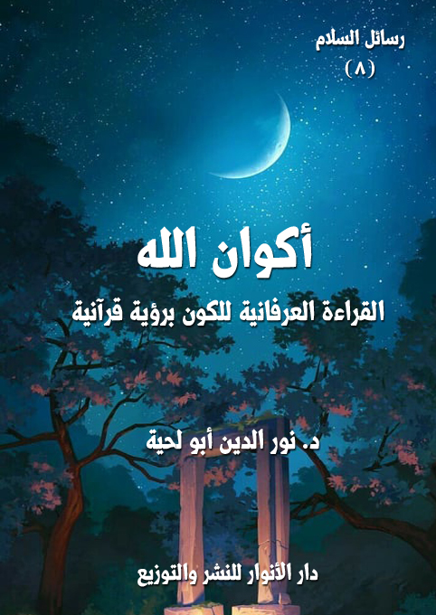

الكتاب: أكوان الله
المؤلف: أ.د. نور الدين أبو لحية
الناشر: دار الأنوار للنشر والتوزيع
الطبعة: الثانية، 1437 هـ
عدد الصفحات: 266
ISBN: 978-3-330-80210-0
لمطالعة الكتاب من تطبيق مؤلفاتي المجاني وهو أحسن وأيسر: هنا

التعريف بالكتاب
هذه الرسالة تدعو إلى النظر إلى الكون نظرة جديدة تنطلق من قراءته باسم الله، وتنتهي بصحبته في الله.
وقد حاولت حصر أوصاف الكون ـ انطلاقا من النصوص المقدسة ـ في أربعة أوصاف كل واحد منها معراج من معارج السلام، ورقية من رقى السعادة.
وهذه الأوصاف الأربعة هي: الحياة، والعبادة، والتسخير، والمقروئية.
فمعرفتنا بالكون الحي تشعرنا بالأنس، وتملؤنا ينشوة الصداقة الحميمة، فلا يمكن أن نصادق جمادا.
ومعرفتنا بالكون العابد تعرفنا بوظيفتنا، وتجعلنا نلهج بالتسبيح في حلقة ذكر الكون الواسع.
ومعرفتنا بالكون المسخر تجعلنا نتناول الأشياء من يد الله، لا من يد الطبيعة، ونتناول الأشياء بالله، لا بأيدينا.
ومعرفتنا بالكون المقروء تعبر بنا من الكون إلى المكون، وتزج بنا في رحاب الحضرة المقدسة، فنبصر من خلال الأشياء مشيئ الأشياء، فنصادق مع قطرات الندى، وتفتح الزهر، وهبوب النسيم، رب الكون ومبدعه.
أكوان الله (6)
من مظاهر الصراع التي أفرزتها غفلة الإنسان وكبرياؤه: الصراع مع الكون.. مع السماء والأرض.. والنبات والحيوان.. والرياح والأمطار.. وكل الأشياء.
وهذا الصراع يكتسي لبوسا مختلفة، ويتوزع على مظاهر متنوعة، ولكن الأساس في جميعها واحد، وهو أننا نتعامل مع أكوان ننسبها إلى الطبيعة، أو ننسبها إلى الآلهة الجاثمة على عروش قلوبنا وعقولنا، أو ننسبها إلى اللاشيء الذي تفرزه الغفلة، وننسى في هذا الخضم أن ننسبها إلى الله.
فالأكوان أكوان الله، والأشياء جميعا خلقت بيد الله، وصورت باسم الله، وهي تتوجه إلى الله قبل أن تتوجه إلينا.
وهذه النظرة هي مبدأ السلام مع الكون، ومنطلقه.
فكما أن بداية السلام مع المستعمرات، هو اعتراف المستعمر لها بحريتها، وبحقها في تقرير مصيرها، ليتعامل معها بعد ذلك تعامل المسالم لا المحارب، وتعامل الند لا المتعالي، وتعامل الصديق لا العدو، فكذلك يكون السلام مع الكون.
فأي سلام نحلم به مع الكون، ونحن لا نعترف به؟.. أو أن اعترافنا به مجرد معنى محصور في زاوية خاملة من زوايا العقل، لا نتأثر لها، ولا نهتم بها.
وهذا المنطلق الذي يحدد تعاملنا مع الكون هو الذي يشعرنا بالسعادة والأمان، وينزع عنا حجب الوحشة والضيق، ويزرع في قلوبنا الابتسامة، وينزع من صدورنا الحزن.
أكوان الله (7)
-\--\-
وانطلاقا من هذا نحاول في هذه الرسالة أن ننظر نظرة جديدة للكون، تنطلق من قراءته باسم الله، وتنتهي بصحبته في الله.
ودليلنا في هذا أقدس كلام، وأشرف كلام، وأصدق كلام، كتاب الله تعالى، فهو الكتاب الذي يجعلنا نشعر بصداقة حميمة مع الكون، تجعلنا نراه كتابا تقلب صفحاته ليتجلى من خلالها أعظم محبوب، وأجمل محبوب، وأكمل محبوب، فنصادق من خلال الكون رب الكون، ونعبر من الكون إلى المكون.
وهذه الصحبة الشريفة للكون، والتي تتعامل معه كما تتعامل مع الإنسان، هي التي كان عليها رسول الله صلى الله عليه وآله وسلم.
وقد صور لنا بعض الصحابة بعض هذه الصحبة فقال: (أصابنا ونحن مع رسول الله صلى الله عليه وآله وسلم مطر قال فحسر رسول الله صلى الله عليه وآله وسلم ثوبه حتى أصابه من المطر فقلنا: يا رسول الله لم صنعت هذا؟ قال: لأنه حديث عهد بربه تعالى) (1)
وهذه الصحبة تستدعي نظرة شاملة للكون بجميع أنواعه، وبجميع خصائصه ووظائفه وصفاته، فبحسب سمو المعرفة يكون سمو التعامل.
وقد حاولنا حصر أوصاف الكون ـ انطلاقا من النصوص المقدسة ـ في أربعة أوصاف كل واحد منها معراج من معارج السلام، ورقية من رقى السعادة.
وهذه الأوصاف الأربعة هي: الحياة، والعبادة، والتسخير، والمقروئية.
__________
(1) رواه مسلم وأبو داود والبخاري في الأدب المفرد.
أكوان الله (8)
فمعرفتنا بالكون الحي تشعرنا بالأنس، وتملؤنا ينشوة الصداقة الحميمة، فلا يمكن أن نصادق جمادا.
ومعرفتنا بالكون العابد تعرفنا بوظيفتنا، وتجعلنا نلهج بالتسبيح في حلقة ذكر الكون الواسع.
ومعرفتنا بالكون المسخر تجعلنا نتناول الأشياء من يد الله، لا من يد الطبيعة، ونتناول الأشياء بالله، لا بأيدينا.
ومعرفتنا بالكون المقروء تعبر بنا من الكون إلى المكون، وتزج بنا في رحاب الحضرة المقدسة، فنبصر من خلال الأشياء مشيئ الأشياء، فنصادق مع قطرات الندى، وتفتح الزهر، وهبوب النسيم، رب الكون ومبدعه.
وهذه الألقاب الأربعة لأكوان الله هي الوحيدة التي تملؤنا بالأنس، وتشعرنا بالسلام.
السلام الشامل الذي يستغرق جميع طاقاتنا، لا السلام الذي يتغنى به الغافلون عن الله، والذي يجعل أسمى غاياته أن يحفظ تماسك هذا التراب الذي تمتطيه أرواحنا.
وننبه في هذه الرسالة ـ كما نبهنا في سائر الرسائل ـ إلى أن ما في هذه الرسالة من حقائق نوعان:
أكوان الله (9)
أما النوع الأول، فهو حقائق مطلقة لا ينبغي لأحد أن يجحدها، لأن كل شيء يدل عليها ابتداء من النصوص المقدسة.. وهذه الحقائق لا نقبل مناقشة أحد فيها.. ولن نجيبه إن ناقشنا، لأنه لا يمكن أن يجادل أحد في البديهيات.
وأما النوع الثاني، فهو آراء وقع فيها الخلاف.. وقد اخترنا في الخلاف ما رأيناه راجحا.. ولا حرج علينا في ذلك.. ونحن في هذا النوع من الحقائق نتقبل كل مخالفة، ونخضع لكل توجيه، ونتراجع عن كل خطأ.. وندعو الله لكل من نبهنا لذلك، فلا عصمة إلا لمن عصمه الله.
أكوان الله (10)
هل تدب الحياة فيما حولنا من أشياء؟
وهل تعقل هذه الكائنات الكثيرة التي تحيط بنا نفسها وحقيقتها ووظائفها؟
وهل تعقل غيرها، وعلاقتها به؟
وهل تحزن وتئن، وتفرح وتسر؟
وهل تبغض وتحب، وتحلم وتأمل؟
وهل في قدرتها التعبير عن مشاعرها وأفكارها؟
ثم ما علاقتها بنا، وما علاقتنا بها؟
وهل نحن وسط كون حي ينبض بالحياة، أم نحن في لجة كون جامد لا روح فيه ولا مشاعر له؟
وما تأثير هذه المعارف على أنفسنا وأنماط حياتنا؟
هل هي مجرد قضايا فلسفية وترف عقلي قد يعني الخاصة، ولا علاقة له بالعامة، أم أن له ارتباطا بنا نحن العوام والبسطاء والدهماء؟
إن هذه التساؤلات من القضايا الأساسية التي تشغل بال الإنسان ويهتم لها، ويرسل في سبيل معرفة جزء منها المركبات الفضائية، ليسبر أغوار الكون، ويبحث عن أحياء فيه، ويتساءل بحماقة وغرور: هل هناك حياة على غير الأرض؟
أكوان الله (11)
ولكن الحقائق الكبرى ـ التي تبينها الوثيقة الإلهية التي تنطوي على حقائق الوجود وأسراره ـ تخبر أن هذا الكون لا يحوي أحياء فقط، بل هو نفسه حي، بكل ما تحمله هذه الكلمة من معاني.
أما ما نتصوره نحن من حياة فهو صورة فقط من صور الحياة، وهي صورة ارتباطات مادية حيوية بعضها ببعض.
وكما أن العلم الحديث يقر بوجود حياة في الخلية الواحدة، سواء كانت ضمن نسيج واحد أو كانت مستقلة منفردة، فكذلك تنبئنا النصوص المقدسة أن الكون كله حي جملة وتفصيلا، وكل ذرة فيه أو ما دونها كائن حي له حقيقته التي استدعت وجوده، كما أن له صورته التي نعرفه من خلالها.
قال بديع الزمان النورسي مبينا هذه الحقيقة وأثرها النفسي: (فالكونُ بجميع عوالمه حيّ ومشع مضئ بذلك التجلي، وِالاّ لأصبح كل من العوالم - كما تراه عين الضلالة - جنازة هائلة مخيفة تحت هذه الدنيا المؤقتة الظاهرة، وعالماً خرباً مظلماً) (1)
12 13 14
ولكن الإيمان بهذه الحقائق إيمانا ذوقيا شهوديا يستدعي مرآة صافية، وقلبا محررا من أوثاق الهوى.
__________
(1) الكلمة العاشرة - ص: 120.
أكوان الله (15)
هذا في الدنيا، أما في النشأة الآخرة فإن الإنسان ـ مؤمنا كان أو كافرا ـ بعد انحسار حجاب الغفلة يدرك هذه الحقائق، كما قال تعالى: {لَقَدْ كُنْتَ فِي غَفْلَةٍ مِنْ هَذَا فَكَشَفْنَا عَنْكَ غِطَاءَكَ فَبَصَرُكَ الْيَوْمَ حَدِيدٌ} (قّ:22)
فمن معاني الغفلة في الآية تعطل الطاقات عن أداء وظيفتها بسبب إهمالها وعدم استعمالها.
وقد أخبر صلى الله عليه وآله وسلم عن هذا الإدراك في أحاديث كثيرة لعل أشهرها ما أخبر به عن معرفة أهل الجنة والنار للموت مع أنه جاءهم في صورة حسية، قال صلى الله عليه وآله وسلم: (يجاء بالموت يوم القيامة كأنه كبش أملح، فيوقف بين الجنة والنار، فيقال: يا أهل الجنة هل تعرفون هذا؟، فيشرئبون وينظرون، ويقولون: نعم هذا الموت، ويقال: يا أهل النار هل تعرفون هذا؟ فيشرئبون وينظرون ويقولون: نعم هذا الموت، فيؤمر به فيذبح، ثم يقال: يا أهل الجنة خلود فلا موت، ويا أهل النار خلود فلا موت، ثم قرأ رسول الله صلى الله عليه وآله وسلم قوله تعالى: {وَأَنْذِرْهُمْ يَوْمَ الْحَسْرَةِ إِذْ قُضِيَ الْأَمْرُ وَهُمْ فِي غَفْلَةٍ وَهُمْ لا يُؤْمِنُونَ} (مريم:39) وأشار بيده إلى الدنيا) (1)
فهذا الحديث يكاد يصرح بالقدرات الهائلة لأهل النشأة الآخرة في التعرف على هذه الحقائق، يستوي في ذلك مؤمنهم وكافرهم، وأهل الجنة وأهل النار.
__________
(1) رواه البخاري ومسلم.
أكوان الله (16)
بل إن القرآن الكريم صرح بذلك حين ذكر قدرتهم على سماع جوارحهم، وهي تخاطبهم، قال تعالى: {يَوْمَ تَشْهَدُ عَلَيْهِمْ أَلْسِنَتُهُمْ وَأَيْدِيهِمْ وَأَرْجُلُهُمْ بِمَا كَانُوا يَعْمَلُونَ} (النور:24)
-\--\-
انطلاقا من هذه المعاني سنتحدث في هذا الفصل عن بعض الغيب الذي كشف لنا عن بعض دلائل الحياة ونوعها فيما نراه من كائنات سواء كانت جامدة لا حظ لها من الحياة والعقل، أو حية نعطيها صورة من صورة الحياة، وهي صورة الحركة والنمو، وننفي عنها أهم ما في الحياة من العقل والوعي والشعور والاختيار.
وسنكتفي بأربعة مظاهر للحياة تكفي أي عاقل ليحكم من خلالها بالحياة لمن اتصف بها، وهي: الإدراك، والمشاعر، والتعبير، والتحضر.
الإدارك هو أهم صفة من صفات الحياة، بل هو ركن الحياة الركين، حتى أن من القدامى من عرف الحي بأنه المدرك النامي، أو عرفه بأنه المدرك فقط، فمن اكتمل له الإدارك كان له من الحياة حظها الأوفر، ومن كان له بعض الإدراك كان له من الحياة ما كان له من الإدراك.
ويراد بالإدراك توفر الواسائل المتيحة للتعرف على العالم الخارجي.
أكوان الله (17)
وربما يكون هذا الحد هو الحجاب الذي جعلنا، أو جعل أوهامنا تعتقد موت ما نراه من أشياء.. ذلك أننا لا نرى لها عيونا ترى بها، أو آذانا تسمع بها، أو جلودا تلمس بها.. فنحكم من خلال غياب الوسيلة على غياب الغاية.
وهذا حكم خاطئ ابتداء.. ومن السهولة التعرف على خطئه.
فقبل قرنين من الزمان فقط كان اللسان شرطا من شروط القدرة على الكلام.. ولكنا الآن، وبفضل ما توفر لنا من تقنيات أزحنا هذا الشرط.. فأصبحت الشريحة الصغيرة التي لا تكاد ترى تتحدث بلسان فصيح، بل تترنم بألحان دونها كل الحناجر مع أنه ليس لها لسان ولا حنجرة ولا هواء يدخل أو يخرج.
وهكذا القول في شئون كثيرة كان الوهم المتلبس بلباس العقل يحكم فيها بأحكامه على العقل.. ولكن الحقائق التي أتاحها العلم مكنتنا من التعرف على محل الوهم.
وهكذا ينبغي أن نتعامل مع ما لم نعلم علمه بعد.. وإلا وقعنا فيما وقع فيه أهل القرون السالفة من الأوهام المتلبسة بلباس العلم.
بعد هذا الخطاب البديهي للعقل، والذي قد لا نستفيد منه شيئا غير كون كل ذلك ممكنا، نرجع إلى المصدر المعصوم للمعارف لنتعرف على ترجيحه لأحد وجهي الإمكان.
والنصوص المقدسة تخبرنا عن هذا الوعي والإدراك بأساليب مختلفة، ربما تكون هذه الرسالة جميعا، أدلة عليها.
أكوان الله (18)
ولكنا سنقتصر هنا على بعض ما ذكرت النصوص من نماذج على هذا الشرط من شروط الحياة.
فمن مظاهر الإدراك مثلا إدراك المدرك للعواقب، فلذلك يحترز منها بصنوف الاحترازات.. فنعرف من خلال احترازه على مدى إدراكه.
ومما يذكر هنا من باب التنكيت أن بعضهم زعم الصمم، ليتخلص من وظيفة كلف بها، فاحتال عليه المسؤول بأن صاح فجأة فيه: (احذر.. فإن عقربا تريد أن تلدغك).. فابتعد الرجل مسرعا.. وانطلت الحيلة عليه.. وعرف أن إدركه سليم بسبب احترازه.
وهذا الدليل نستطيع أن نفهم منه قوله تعالى: {إِنَّا عَرَضْنَا الْأَمَانَةَ عَلَى السَّمَاوَاتِ وَالْأَرْضِ وَالْجِبَالِ فَأَبَيْنَ أَنْ يَحْمِلْنَهَا وَأَشْفَقْنَ مِنْهَا وَحَمَلَهَا الْأِنْسَانُ إِنَّهُ كَانَ ظَلُوماً جَهُولاً} (الأحزاب:72)، فالحياة العاقلة المدركة للعواقب هي التي منعت هذا الكون من قبول أمانة التكليف.
ولولا ما في الكون من طاقة الإدراك والاختيار ما عرض عليه هذا العرض الخطير، ولولاها ما أجاب هذه الإجابة الواعية.
ومع صراحة النصوص الدالة على هذا المعنى نجد بعض المفسرين يجنح بها إلى التأويل الذي لا يحتاج إليه، فقد ذهب بعضهم ـ كما يذكر القرطبي وغيره ـ إلى أن العرض في هذه الآية ضرب مثل، (أي أن السموات والأرض على كبر أجرامها، لو كانت بحيث يجوز تكليفها لثقل عليها تقلد الشرائع، لما فيها من الثواب والعقاب،
أكوان الله (19)
أي أن التكليف أمر حقه أن تعجز عنه السموات والأرض والجبال، وقد كلفه الإنسان وهو ظلوم جهول لو عقل) (1)
وقال قوم: إن الآية من المجاز، أي إنا إذا قايسنا ثقل الأمانة بقوة السموات والأرض والجبال، رأينا أنها لا تطيقها، وأنها لو تكلمت لأبت وأشفقت.
وهذا التأويل البعيد للآية تغليب للعقل المحدود على الوحي المطلق، وهو نتيجة لصحبة العقل المسلم للفكر المادي، ولهذا كان السلف الذين لم يتلوثوا بمثل هذه الصحبة أشرف فهما، وأعظم إيمانا، وقد روي في هذا عن عبدالله بن مسعود قال: لما خلق الله الأمانة مثلها صخرة، ثم وضعها حيث شاء ثم دعا لها السموات والأرض والجبال ليحملنها، وقال لهن: إن هذه الأمانة، ولها ثواب وعليها عقاب؛ قالوا: يا رب، لا طاقة لنا بها؛ وأقبل الإنسان من قبل أن يدعي فقال للسموات والأرض والجبال: ما وقوفكم؟ قالوا: دعانا ربنا أن نحمل هذه فأشفقنا منها ولم نطقها؛ قال: فحركها بيده وقال: والله لو شئت أن أحملها لحملتها؛ فحملها حتى بلغ بها إلى ركبتيه، ثم وضعها وقال: والله لو شئت أن أزداد لازددت؛ قالوا: دونك! فحملها حتى بلغ بها حقويه، ثم وضعها وقال: والله لو شئت أن أزداد لازددت؛ قالوا: دونك، فحملها حتى وضعها على عاتقه، فلما أهوى ليضعها، قالوا: مكانك! إن هذه الأمانة، ولها ثواب وعليها عقاب وأمرنا ربنا أن نحملها فأشفقنا منها،
__________
(1) تفسير القرطبي:14/ 225.
أكوان الله (20)
وحملتها أنت من غير أن تدعي لها، فهي في عنقك وفي أعناق ذريتك إلى يوم القيامة، إنك كنت ظلوما جهولا (1).
المشاعر الوجدانية هي روح الحياة.. ومن لا مشاعر له لا حياة له.. وقديما قال الشاعر يسخر من الذي لم يذق قلبه طعم الحب:
إذا لم تذق في هذه الدار صبوة فموتك فيها والحياة سواء
وقال الآخر معبرا عن قصور حياة من لم يذق طعم هذه المشاعر:
إذا أنت لم تعشق ولم تدر ما الهوى فأنت وعير في الفلاة سواء
وقال الآخر يرميها بالجمود:
إذا أنت لم تعشق ولم تدر ما الهوى فكن حجرا من يابس الصخر جلمدا
وقال الآخر يرميها بالبهيمية:
إذا أنت لم تعشق ولم تدر ما الهوى فقم فاعتلف تبنا فأنت حمار
وكل هؤلاء ـ ما عدا أولهم ـ عبروا حسب معارفهم، وحسبما دلتهم عليه مداركهم المحدودة.. أما الحقيقة التي تنص عليها النصوص المقدسة.. فتخالفهم في ذلك تمام المخالفة..
__________
(1) انظر: القرطبي:14/ 257.
أكوان الله (21)
فالنصوص المقدسة تنطق بكل لسان على ما لهذه الموجودات ـ سواء كان منها ما ينتمي إلى العالم الذي نسميه جمادا، أو العالم الذي نعطيه بعض أوصاف الحياة، وننزع منه أهمها.
وسننطلق من النصوص المقدسة لنتعرف على بعض أسرار المشاعر التي تمتلئ بها قلوب الكائنات:
فمنها الخشوع، وهو مجموعة مشاعر سامية يختلط فيها الحب بالهيبة وبالخشية وبالرجاء.. وهو لا يمكن أن يكون إلا لمن امتلأ بالحياة الحقيقية..
قال تعالى واصفا تأثير نزول القرآن على الجبل: {لَوْ أَنْزَلْنَا هَذَا الْقُرْآنَ عَلَى جَبَلٍ لَرَأَيْتَهُ خَاشِعاً مُتَصَدِّعاً مِنْ خَشْيَةِ اللَّهِ وَتِلْكَ الْأَمْثَالُ نَضْرِبُهَا لِلنَّاسِ لَعَلَّهُمْ يَتَفَكَّرُونَ} (الحشر:21)
بل إنه من فرط الخشوع للتجلي يندك، قال تعالى: {فَلَمَّا تَجَلَّى رَبُّهُ لِلْجَبَلِ جَعَلَهُ دَكّاً} (لأعراف: 143)
بل ينهد لسماع شرك المشركين، قال تعالى: {تَكَادُ السَّمَاوَاتُ يَتَفَطَّرْنَ مِنْهُ وَتَنْشَقُّ الْأَرْضُ وَتَخِرُّ الْجِبَالُ هَدّاً أَنْ دَعَوْا لِلرَّحْمَنِ وَلَداً} (مريم:90 ـ 91)
وقد ذكر العلماء ـ انطلاقا من هذه الآية ـ الأثر الشديد الذي خلفه الشرك في الأشياء، فذكر عن بعضهم أنه قال: (إن الله تعالى لما خلق الأرض وخلق ما فيها من الشجر لم تك في الأرض شجرة يأتيها بنو آدم إلا أصابوا منها منفعة وكان لهم منها
أكوان الله (22)
منفعة فلم تزل الأرض والشجر كذلك حتى تكلم فجرة بني آدم تلك الكلمة العظيمة وهي قولهم: {اتَّخَذَ الرَّحْمَنُ وَلَداً} (مريم:88)، فلما قالوها اقشعرت الأرض وشاك الشجر) (1)
وكان ابن عباس يرجع ما في الأرض من الأذى بسب هذا قال: (اقشعرت الجبال وما فيها من الأشجار والبحار وما فيها من الحيتان فصار من ذلك الشوك في الحيتان وفي الأشجار الشوك) (2)
ونحن وإن كنا لا نجزم بهذا، ولكنا مع ذلك ندرك أن الصور والخصائص التي نراها للأشياء لها علاقة كبيرة بانفعالاتها التي يسببها سلوكنا، ولذلك قد نستلذ طعوما أو مناظر في بعض الأيام، ثم نستقبحها أياما أخرى، وقد نعزو ذلك إلى نفوسنا فقط ونعزل الكون من هذا الأثر المتناقض للأشياء.
وقد ورد في الآثار ما يدل على سرور الأشياء، والذي قد يسري إلى الناظرين ليشعرهم بالأنس والسعادة، فقد روي أن الجبل يفخر إن مر عليه ذاكر لله تعالى، فعن ابن مسعود قال: (إن الجبل ليقول للجبل: هل مرَّ بك اليوم ذاكر لله؟ فإن قال: نعم، سُرَّ به) ثم قرأ عبد الله قوله تعالى: {وَقَالُوا اتَّخَذَ اللَّهُ وَلَداً سُبْحَانَهُ بَلْ لَهُ مَا فِي السَّمَاوَاتِ وَالْأَرْضِ كُلٌّ لَهُ قَانِتُونَ} (البقرة:116) قال: (أفتراهن يسمعن الزور ولايسمعن الخير) (3)
__________
(1) رواه ابن أبي شيبة وابن المنذر وابن أبي حاتم.
(2) القرطبي: 11/ 158.
(3) ابن أببي شيبة: 7/ 110.
أكوان الله (23)
وعن أنس بن مالك قال: (ما من صباح ولا رواح إلا تنادي بقاع الأرض بعضها بعضا، يا جاره هل مر بك اليوم عبد فصلى لله أو ذكر الله عليك، فمن قائلة لا، ومن قائلة نعم، فإذا قالت نعم رأت لها بذلك فضلا عليها) (1)
وقد أخبر القرآن الكريم عن مشاعر الخشية من الله التي تجعل الحجارة تهبط أو تتفجر أو تتشقق.. قال تعالى: {وَإِنَّ مِنَ الْحِجَارَةِ لَمَا يَتَفَجَّرُ مِنْهُ الْأَنْهَارُ وَإِنَّ مِنْهَا لَمَا يَشَّقَّقُ فَيَخْرُجُ مِنْهُ الْمَاءُ وَإِنَّ مِنْهَا لَمَا يَهْبِطُ مِنْ خَشْيَةِ اللَّه (2)) (البقرة: 74)
وقد زعم بعضهم أن إسناد الخشوع إلى الحجارة جاء من باب المجاز، كما أسندت الإرادة إلى الجدار في قوله تعالى: {فَوَجَدَا فِيهَا جِدَاراً يُرِيدُ أَنْ يَنْقَضَّ فَأَقَامَهُ} (الكهف: 77)
ولا حاجة إلى هذا كما ذكرنا، والنصوص الكثيرة التي أوردناها تدل على هذا.
ومن المشاعر التي ورد في النصوص الحديث عنها الغضب..
فقد أخبرنا القرآن الكريم أن جهنم ـ مثلا ـ ليست تنورا للعذاب لا عقل له، وإنما هي كائن ككينونة الإنسان لها عقل ووعي ومشاعر.
بل إن مصدر عذابها وشدته نابع من غضبها لله، فهي مغتاظة على الجاحدين، كما قال تعالى: {إِذَا رَأَتْهُمْ مِنْ مَكَانٍ بَعِيدٍ سَمِعُوا لَهَا تَغَيُّظاً وَزَفِيراً} (الفرقان:12)
__________
(1) رواه ابن المبارك في (دقائقه)، انظر: القرطبي:10/ 267.
(2) انظر: ابن كثير: 1/ 114 فقد رد على هذا الزعم بالنصوص الكثيرة.
أكوان الله (24)
وقد صور بعض السلف شدة هذه الزفرة النابعة من الغيظ بقوله: (إن جهنم لتزفر زفرة لا يبقى ملك مقرب ولا نبي مرسل إلا خرَّ لوجهه، ترتعد فرائضه، حتى إن إبراهيم عليه السلام ليجثو على ركبتيه، ويقول: رب لا أسألك اليوم إلا نفسي) (1)
ومثل زفير استقبالها لأهلها، يصورها القرآن الكريم بصورة الجلاد الحي الذي يتفنن في التعذيب، وهو مدرك ماذا يفعل ولماذا يفعل، قال تعالى: {كَلَّا إِنَّهَا لَظَى نَزَّاعَةً لِّلشَّوَى تَدْعُو مَنْ أَدْبَرَ وَتَوَلَّى وَجَمَعَ فَأَوْعَى} (المعارج:15 ـ 18)
فالقرآن الكريم عبر عما يحصل فيها من نزع للشوى (2)، بصيغة (نزاعة) للدلالة على أن شخص جهنم الحي هو الذي يؤدي هذه المهمة، بل يخبر أنها تدعو من أدبر وتولى.
وهذا الغيظ الذي تبديه جهنم لأهلها ليس ناتجا من قسوة طبعية، بل هو كما توضح النصوص نابع من غيرة إيمانية، وقد قال ابن عباس: (إن الرجل ليجر إلى النار فتنزوي وتنقبض بعضها إلى بعض فيقول لها الرحمن: ما لك؟ قالت: إنه يستجير مني، فيقول أرسلوا عبدي؛ وإن الرجل ليجر إلى النار فيقول: يا رب ما كان هذا الظن بك، فيقول: فما كان ظنك؟ فيقول: أن تسعني رحمتك، فيقول: أرسلوا عبدي؛ وإن الرجل ليجر إلى النار فتشهق إليه النار شهقة البغلة إلى الشعير، وتزفر زفرة لا يبقى أحد إلا خاف) (3)
__________
(1) رواه عبد الرزاق.
(2) قال ابن عباس: جلدة الرأس، انظر: الطبري: 29/ 76، ابن كثير: 4/ 422.
(3) ذكره ابن جرير في تفسيره وقال ابن كثير: إسناده صحيح، انظر: الطبري: 18/ 187، ابن كثير: 3/ 312.
أكوان الله (25)
والقرآن الكريم يخبرنا بأن جهنم ـ لشوقها لأهلها ـ تدرك بما أعطاها الله من البصيرة أن هناك من لا يزال خارجها، فلذلك تطالب بالمزيد، قال تعالى: {يَوْمَ نَقُولُ لِجَهَنَّمَ هَلِ امْتَلأْتِ وَتَقُولُ هَلْ مِنْ مَزِيدٍ} (قّ:30)
والجنة في القرآن الكريم، وكما توضح الأخبار والآثار المفسرة له ـ مثل جهنم وكل مكونات العالم الآخر ـ كائن حي مدرك متكلم، له مشاعره الوجدانية، جعله الله تعالى محلا لرحمته، ومجلى لصفات فضله وكرمه.
وقد ورد في الآثار ما يدل على شوق الجنة لأهلها شوقا لا يقل عن شوق أهلها إليها، قال صلى الله عليه وآله وسلم: (قالت الجنة: يا رب قد أطردت انهاري وطابت ثماري فعجل على بأهلي) (1)
ومنها شعور الشفقة هيبة من الله وإجلالا له، قال صلى الله عليه وآله وسلم: (إن يوم الجمعة سيد الأيام وأعظمها عند الله وهو أعظم عند الله من يوم الأضحى ويوم الفطر فيه خمس خلال خلق الله فيه آدم وأهبط الله فيه آدم إلى الأرض وفيه توفى الله آدم وفيه ساعة لا يسأل الله فيها العبد شيئا إلا أعطاه ما لم يسأل حراما وفيه تقوم الساعة ما من ملك مقرب ولا سماء ولا أرض ولا رياح ولا جبال ولا بحر إلا وهن يشفقن من يوم الجمعة) (2)
__________
(1) رواه الليث بن سعد.
(2) رواه أحمد وابن ماجة.
أكوان الله (26)
والذراع المسمومة تشفق على رسول الله صلى الله عليه وآله وسلم، فتخبره عن سميتها (1).
والجبل يشفق على رسول الله صلى الله عليه وآله وسلم، كما روي أن النبي صلى الله عليه وآله وسلم قال: (قال لي ثبير اهبط فإني أخاف أن يقتلوك على ظهري فيعذبني الله. فناداه حراء: إلي يا رسول الله) (2)
والشجر يمشي حين يدعوه رسول الله صلى الله عليه وآله وسلم.
والجذع يحن لفقد رسول الله صلى الله عليه وآله وسلم، فلا يسكن حتى يضمه صلى الله عليه وآله وسلم، عن أبي سعيد قال: كان رسول الله صلى الله عليه وآله وسلم يخطب إلى لزق جذع فأتاه رجل رومي فقال أصنع لك منبرا تخطب عليه فصنع له منبرا هذا الذي ترون، قال فلما قام عليه النبي صلى الله عليه وآله وسلم يخطب حن الجذع حنين الناقة إلى ولدها، فنزل إليه رسول الله صلى الله عليه وآله وسلم فضمه إليه فسكن فأمر به أن يحفر له ويدفن) (3)
وقد كان صلى الله عليه وآله وسلم يبادل هذه الأشياء مشاعرها، فكان يقول عن أحد: (هذا جبل يحبنا ونحبه) (4)
ومن المشاعر التي ورد في النصوص المقدسة نسبتها للكائنات مشاعر الرحمة.. وهي من المشاعر العظيمة التي تستدعي منتهى الكمال والرقي.
__________
(1) انظر: شعب الإيمان: 1/ 160.
(2) أورده القرطبي: 1/ 466. ولا نعلم درجته.
(3) الترمذي: 2/ 379، الدارمي: 29.
(4) البخاري: 2/ 539، مسلم: 2/ 993.
أكوان الله (27)
ومن ذلك ما ورد في النصوص من الإخبار عن المشاعر الفائضة من قلوب الأشياء دموعا رحمة للمؤمن، وهو ما يشير إليه قوله تعالى: {فَمَا بَكَتْ عَلَيْهِمُ السَّمَاءُ وَالْأَرْضُ وَمَا كَانُوا مُنْظَرِينَ} (الدخان:29)
فهذا البكاء الذي أخبر عنه القرآن الكريم ليس من جنس ما كانت تعبر به العرب عن أحزانها، كما قال الشاعر:
فالريح تبكي شجوها والبرق يلمع في الغمامة
وقال آخر:
والشمس طالعة ليست بكاسفة تبكي عليك نجوم الليل والقمرا
وقالت الأخرى:
أيا شجر الخابور مالك مورقا كأنك لم تجزع على ابن طريف
لأن النصوص المقدسة لا يدخلها مثل هذا التأويل، ولو ورد في كلام العرب، فلا النقل ينفيه، ولا العقل يحيله.
بل قد ورد في النقل ما يدل عليه، ومن ذلك قوله صلى الله عليه وآله وسلم: (ما من مؤمن إلا وله في السماء بابان، باب ينزل منه رزقه، وباب يدخل منه كلامه وعمله، فإذا مات فقداه فبكيا عليه، ثم تلا قوله تعالى: {فَمَا بَكَتْ عَلَيْهِمُ السَّمَاءُ وَالْأَرْضُ} (الدخان: 29) (1)
ولهذا أخبر القرآن الكريم بعدم بكاء السموات والأرض على الكفار، لأنهم لم يعملوا على الأرض عملا صالحا تبكي عليهم لأجله، ولا صعد لهم إلى السماء عمل
__________
(1) رواه الترمذي.
أكوان الله (28)
صالح فتبكي فقده، قال علي: (إنه يبكي عليه مصلاه من الأرض ومصعد عمله من السماء) (1)
وكما تبكي الأرض والسماء على المؤمن، تستبشر به، وقد قال أنس: (لما كان اليوم الذي دخل فيه النبي صلى الله عليه وآله وسلم المدينة أضاء كل شيء، فلما كان اليوم الذي قبض فيه أظلم كل شيء، وإنا لفي دفنه ما نفضنا الأيدي منه حتى أنكرنا قلوبنا) (2)
ولهذا لا يصح اعتبار المسلم غريبا ما دام محاطا بكل هذه المشاعر الفياضة التي تتدفق من حوله، قال صلى الله عليه وآله وسلم: (إن الإسلام بدأ غريبا وسيعود غريبا كما بدأ فطوبى للغرباء يوم القيامة قيل: من هم يا رسول الله؟ قال - هم الذين إذا فسد الناس صلحوا - ثم قال - ألا لا غربة على مؤمن، وما مات مؤمن في غربة غائبا عنه بواكيه إلا بكت عليه السماء والأرض) ثم قرأ رسول الله صلى الله عليه وآله وسلم قوله تعالى: {فَمَا بَكَتْ عَلَيْهِمُ السَّمَاءُ وَالْأَرْضُ وَمَا كَانُوا مُنْظَرِينَ}، ثم قال: (ألا إنهما لا يبكيان على الكافر) (3)
وكما أن المؤمن يعيش بصحبة هذه المشاعر الفياضة التي تفيض عليه من الكون، فإن الكافر والغافل بعكس ذلك، فقد أخبر صلى الله عليه وآله وسلم أن البلاد والشجر والدواب تستريح من أذى العبد الفاجر، فقد روي أن جنازة مرت على رسول الله صلى الله عليه وآله وسلم فقال: (مستريح ومستراح منه) قالوا: (يا رسول الله ما المستريح والمستراح منه) قال: (العبد
__________
(1) انظر هذه الآثاروغيرها في: القرطبي: 16/ 140، ابن كثير: 4/ 143.
(2) ابن ماجة.
(3) البيهقي في الشعب.
أكوان الله (29)
المؤمن يستريح من نصب الدنيا وأذاها إلى رحمة الله، والعبد الفاجر يستريح منه العباد والبلاد والشجر والدواب) (1)
وقد ذكر العلماء وجوها من استراحة الكون من العبد الفاجر الكافر أو العاصي منها أن العباد يستريحون من ظلمه لهم، وما يأتي به من المنكر، فإن أنكروا آذاهم، وإن تركوه أثموا.
والبلاد تستريح مما يفعله فيها من المعاصي، فيحصل الجدب، ويهلك الحرث والنسل، أو لغصبها ومنعها من حقها.
والشجر يستريح منه لقلعه إياه غصبا أو غصب ثمره.
والدواب تستريح منه لاستعماله لها فوق طاقتها، وتقصيره في علفها وسقيها (2).
وهي وجوه لا يراد بها الحصر، فالتأذي الذي يحصل لها من جنس التأذي الذي يحصل للمؤمن عندما يسمع كلمة الكفر، وقد ذكرنا سابقا قوله تعالى عن تأثير كلمة الكفرعلى الأشياء: {تَكَادُ السَّمَاوَاتُ يَتَفَطَّرْنَ مِنْهُ وَتَنْشَقُّ الْأَرْضُ وَتَخِرُّ الْجِبَالُ هَدّاً} (مريم:90)
بل ورد في النصوص والآثار أن العلاقة بين المؤمن والكون ليست علاقة مشاعر فقط، بل هي علاقة تعاون وتكافل، فقد أخبر صلى الله عليه وآله وسلم أنه: (لا تقوم الساعة حتى يقاتل المسلمون اليهود فيقتلهم المسلمون حتى يختبئ اليهودي وراء الحجر أو
__________
(1) رواه البخاري ومسلم.
(2) انظر: شرح الزرقاني: 2/ 125.
أكوان الله (30)
الشجرة فيقول الحجر أو الشجر يا مسلم يا عبد الله هذا يهودي خلفي فتعال فاقتله إلا الغرقد فإنه من شجر اليهود) (1)
وأخبر ابن عباس عن عابد كان يتعبد في غار فكان يأتيه غراب كل يوم برغيف حتى مات العابد.
من المشاعر التي ورد في النصوص نسبتها لهذه الكائنات التعظيم.. وهو نابع من معارف كثيرة لا يمكن أن تكون إلا لحي عاقل قد اكتمل له الحياة والعقل.
فقد ورد في النصوص ما يدل على تعظم الكائنات لرسول الله صلى الله عليه وآله وسلم بسجود الاحترام والتقدير.
فقد روي أن رسول الله صلى الله عليه وآله وسلم كان في نفر من المهاجرين والأنصار، فجاء بعير فسجد له، فقال أصحابه: (يا رسول الله تسجد لك البهائم والشجر، فنحن أحق أن نسجد لك) فقال: (اعبدوا ربكم، وأكرموا أخاكم) (2)
وفي الحديث دليل على تكرر ذلك من البهائم المختلفة والشجر.
ومن هذا الباب طاعتها لرسول الله صلى الله عليه وآله وسلم وشهادتها له، فقد روي أن أعرابيا دنا من رسول الله صلى الله عليه وآله وسلم، فقال له رسول الله صلى الله عليه وآله وسلم: أين تريد؟ قال: إلى أهلي قال: هل لك في خير، قال: وما هو؟ قال: تشهد أن لا إله إلا الله وحده لا شريك له وأن محمدا عبده ورسوله، قال: ومن يشهد على ما تقول، قال: هذه السلمة، فدعاها رسول الله صلى الله عليه وآله وسلم
__________
(1) مسلم.
(2) أحمد.
أكوان الله (31)
وهي بشاطئ الوادي، فأقبلت تخد الأرض خدا، حتى قامت بين يديه فاستشهدها ثلاثا، فشهدت ثلاثا أنه كما قال، ثم رجعت إلى منبتها، ورجع الأعرابي إلى قومه، وقال: إن اتبعوني أتيتك بهم وإلا رجعت فكنت معك (1).
وقد تكرر ذلك مرات مختلفة، منها أنه جاء أعرابي إلى رسول الله صلى الله عليه وآله وسلم فقال: (بم أعرف أنك نبي) قال: (إن دعوت هذا العذق من هذه النخلة أتشهد أني رسول الله) فدعاه رسول الله صلى الله عليه وآله وسلم فجعل ينزل من النخلة حتى سقط إلى النبي صلى الله عليه وآله وسلم ثم قال: (ارجع) فعاد فأسلم الأعرابي (2).
وقد كان احترام الكائنات لرسول الله صلى الله عليه وآله وسلم وتعظيمها له ومعرفتها بمنزلته عند الله داعية لها للاستجارة به واللجوء إلى بابه كما يلجأ الصادقون، وقد روي من ذلك أن جزارا فتح بابا على شاة ليذبحها، فانفلتت منه حتى جاءت النبي صلى الله عليه وآله وسلم فتبعها وأخذ يسحبها برجلها، فقال لها النبي صلى الله عليه وآله وسلم: (اصبري لأمر الله، وأنت يا جزار فسقها سوقا رفيقا) (3)
وروي مثل ذلك عن جمل جاء إلى رسول الله صلى الله عليه وآله وسلم يشكو صاحبه، فقد دخل رسول الله صلى الله عليه وآله وسلم حائطا لرجل من الأنصار فإذا فيه جمل، فلما رأى النبي صلى الله عليه وآله وسلم حن وذرفت عيناه فأتاه رسول الله صلى الله عليه وآله وسلم فمسح ذفراه فسكت فقال: من رب هذا الجمل؟
__________
(1) الدارمي: 22، مسند أبي يعلى: 10/ 34.
(2) الترمذي: 5/ 594، الأحاديث المختارة: 9/ 539.
(3) رواه عبد الرزاق.
أكوان الله (32)
لمن هذا الجمل؟ فجاء فتى من الأنصار فقال: لي يا رسول الله، فقال صلى الله عليه وآله وسلم: (أفلا تتقى الله في هذه البهيمة التي ملكك الله إياها فإنه شكا إلى أنك تجيعه وتذيبه) (1)
وفي رواية أخرى أو في حادثة أخرى عن يعلى بن مرة قال: (كنت مع النبي صلى الله عليه وآله وسلم جالسا ذات يوم إذ جاء جمل يخبب حتى ضرب بجرانه بين يديه ثم ذرفت عيناه، فقال: ويحك انظر لمن هذا الجمل؟ إن له لشأنا، قال فخرجت ألتمس صاحبه فوجدته لرجل من الأنصار فدعوته إليه فقال: ما شأن جملك هذا؟ فقال: وما شأنه؟ لا أدرى والله ما شأنه، حملنا عليه ونضحنا عليه حتى عجز عن السقاية فأتمرنا البارحة أن ننحره ونقسم لحمه، قال: لا تفعل هبه لي أو بعنيه، فقال: بل هو لك يا رسول الله، قال: فوسمه بميسم الصدقة ثم بعث به) (2)
وفي رواية أخرى أن رسول الله صلى الله عليه وآله وسلم قال لصاحب البعير: (ما لبعيرك يشكوك؟ زعم أنك سنأته حتى كبر تريد أن تنحره، قال: صدقت، والذي بعثك بالحق لا أفعل)
وفي رواية أخرى أو حادثة أخرى قال رسول الله صلى الله عليه وآله وسلم لصاحب البعير: (بعنيه)، فقال: (لا بل أهبه لك يا رسول الله، وإنه لأهل بيت ما لهم معيشة غيره)، فقال: (أما إذا ذكرت هذا من أمره فإنه شكا كثرة العمل وقلة العلف، فأحسنوا إليه)
ومثل ذلك روي عن أنس قال: مر رسول الله صلى الله عليه وآله وسلم على قوم قد صادوا ظبية فشدوها إلى عمود فسطاط، فقالت: يا رسول الله إني وضعت ولدين خشفين،
__________
(1) رواه أحمد وأبو داود.
(2) رواه أحمد.
أكوان الله (33)
فاستأذن لي أن ارضعهما ثم أعود، فقال رسول الله صلى الله عليه وآله وسلم: خلوا عنها حتى تأتى خشفيها فترضعهما وتأتى إليكما، قالوا: ومن لنا بذلك يا رسول الله؟ قال أنا. فأطلقوها فذهبت فأرضعتهما ثم رجعت إليهما فاوثقوها، قال: أتبيعونها؟ قالوا: يا رسول الله هي لك، فخلوا عنها، فأطلقوها، فذهبت (1).
من أهم مظاهر الحياة القدرة على التعبير.. وهي وإن كانت ليست شرطا في الحياة إلا أن كمال الحياة لا يتحقق إلا بها.
وقد أخبر القرآن الكريم عن هذه الطاقة التي تتمتع بها الأشياء، بل أخبر أن هذه الطاقة زودت بها الأشياء منذ ولادتها، فقد قال تعالى عن الكون المتشكل من السموات والأرض: {ثُمَّ اسْتَوَى إِلَى السَّمَاءِ وَهِيَ دُخَانٌ فَقَالَ لَهَا وَلِلْأَرْضِ ائْتِيَا طَوْعاً أَوْ كَرْهاً قَالَتَا أَتَيْنَا طَائِعِينَ} (فصلت:11) (2)
وأخبر عن الإنسان أنه تحدث، وهو لا يزال في عالم الذر، قال تعالى: {وَإِذْ أَخَذَ رَبُّكَ مِنْ بَنِي آدَمَ مِنْ ظُهُورِهِمْ ذُرِّيَّتَهُمْ وَأَشْهَدَهُمْ عَلَى أَنْفُسِهِمْ أَلَسْتُ بِرَبِّكُمْ قَالُوا بَلَى شَهِدْنَا أَنْ تَقُولُوا يَوْمَ الْقِيَامَةِ إِنَّا كُنَّا عَنْ هَذَا غَافِلِينَ} (لأعراف:172)
__________
(1) رواه الطبرانى.
(2) استطاع العلم الحديث ـ بما زود من وسائل ـ أن يتوصل إلى ما يدل على هذا الحديث الكوني، وقد كان شرف هذا الاكتشاف لأحد علماء الفضاء، وهو البروفيسور (مارك ويتل) من جامعة فيرجينيا.. فقد تحدث هذا العالم عن الأمواج الصوتية التي أطلقها الكون عندما كان عمره 380 ألف سنة، واستمر هذا الصوت الناتج عن تمدد وتوسع الكون حتى أصبح عمر الكون مليون سنة، عندها بدأت النجوم الأولى بالتشكل. (انظر: السماء تتكلّم! حقائق كونية حديثة جداً تتجلّى في القرآن، بقلم المهندس عبد الدائم الكحيل، من موقع: موسوعة الإعجاز العلمي في القرآن والسنة) وانظر في هذا: رسالة (معجزات علمية)
أكوان الله (34)
بل أخبر أن الكافرين يكتشفون يوم القيامة هذه القدرة التي تتمتع بها الكائنات التي كانوا يحسبونها جامدة، قال تعالى حكاية عن كلام الجلود بعد تعجب الكفار من كلامها: {وَقَالُوا لِجُلُودِهِمْ لِمَ شَهِدْتُمْ عَلَيْنَا قَالُوا أَنْطَقَنَا اللَّهُ الَّذِي أَنْطَقَ كُلَّ شَيْءٍ} (فصلت: 21)
بالإضافة إلى هذا، فقد ورد في النصوص أن الجنة تتكلم، وتعقل أهلها، قال صلى الله عليه وآله وسلم: (لما خلق الله جنة عدن خلق فيها ما لا عين رأت ولا أذن سمعت ولا خطر على قلب بشر ثم قال لها تكلمي فقالت: قد أفلح المؤمنون) (1)
وقد أخبرنا صلى الله عليه وآله وسلم عن حوار جرى بين الجنة والنار، فقال: (تحاجت الجنة والنار، فقالت النار: أوثرت بالمتكبرين والتمجبرين؛ وقالت الجنة: مالي لا يدخلني إلا ضعفاء الناس وسقطهم؟ قال اللّه عزَّ وجلَّ، للجنة: أنت رحمتي أرحم بك من أشاء من عبادي، وقال للنار: إنما أنت عذابي أعذب بك من أشاء من عبادي، ولكل واحدة منكما ملؤها) (2)
وهذه النصوص وغيرها تدل على حياة العالم الآخر ووعيه وإدراكه وشعوره، وهو ما يهب ذوقا خاصا لمن تأمله وعاشه.
فإدراك المؤمن ـ مثلا ـ بأن هذه الأرض التي يعيش فيها، والتي لم يسمع حديثها، أو لم يخطر على باله أنها تتحدث، ستتحدث يوما ما لتخبره بكل حركة
__________
(1) المعجم الكبير للطبراني: 11/ 184.
(2) رواه البخاري ومسلم.
أكوان الله (35)
قام بها على ظهرها، يجعله محتاطا متأدبا متواضعا، فهو لا يركب جمادا لا يعقل، بل هو يمتطي كائنا حيا له وعيه ومشاعره.
قال تعالى مصورا ذلك اليوم: {إِذَا زُلْزِلَتِ الْأَرْضُ زِلْزَالَهَا وَأَخْرَجَتِ الْأَرْضُ أَثْقَالَهَا وَقَالَ الْإِنسَانُ مَا لَهَا يَوْمَئِذٍ تُحَدِّثُ أَخْبَارَهَا بِأَنَّ رَبَّكَ أَوْحَى لَهَا} (الزلزلة)
وقد فسر صلى الله عليه وآله وسلم حديث الأرض في ذلك اليوم العظيم بقوله بعد أن تلا قوله تعالى: {يَوْمَئِذٍ تُحَدِّثُ أَخْبَارَهَا} (الزلزلة:4): (أتدرون ما أخبارها؟ قالوا: اللّه ورسوله أعلم، قال: فإن أخبارها أن تشهد على كل عبد وأمة بما عمل على ظهرها، أن تقول: عمل كذا وكذا يوم كذا وكذا، فهذه أخبارها) (1)
ولهذا ورد في الحديث الأمر بمراعاة الأرض والتحفظ منها، قال صلى الله عليه وآله وسلم: (تحفظوا من الأرض فإنها أمكم، وإنه ليس من أحد عامل عليها خيراً أو شراً إلا وهي مخبرة) (2)
بل أخبر صلى الله عليه وآله وسلم أن بعض هذا الكشف سيحصل في الدنيا عندما تقترب رحلتها من الدار الآخرة، أو في البرزخ الذي بين الدنيا والآخرة، قال صلى الله عليه وآله وسلم: (والذي نفسي بيده لا تقوم الساعة حتى تكلم السباع الإنسان وحتى تكلم الرجل عذبة سوطه وشراك نعله وتخبره فخذه بما أحدث أهله من بعده) (3)
__________
(1) رواه ابن مردويه والبيهقي في شعب الإيمان.
(2) الطبراني في المعجم الكبير.
(3) رواه أحمد والترمذي والحاكم وابن حبان.
أكوان الله (36)
وليس ذلك خاصا بالآخرة.. ولا بالبرزخ الذي بين الدنيا والآخرة، بل ورد في النصوص ما يشمل الدنيا والآخرة، وقد قال رسول الله صلى الله عليه وآله وسلم: (إني لأعرف حجرا بمكة كان يسلم علي قبل أن أبعث إني لأعرفه الآن) (1)
هذا في عالم الجماد، أما في عالم الحيوان، فقد ذكر القرآن الكريم منطق حيوانين هما الهدهد والنملة:
أما الهدهد، فقد وردت قصته في قوله تعالى إخبارا عن بعض ما وهب سليمان عليه السلام من الملك أنه ذات يوم: {تَفَقَّدَ الطَّيْرَ فَقَالَ مَا لِيَ لا أَرَى الْهُدْهُدَ أَمْ كَانَ مِنَ الْغَائِبِينَ} (النمل: 20)
وبنبرة الحزم التي تقتضيها السلطة، قال: {لَأُعَذِّبَنَّهُ عَذَاباً شَدِيداً أَوْ لَأَذْبَحَنَّهُ أَوْ لَيَأْتِيَنِّي بِسُلْطَانٍ مُّبِينٍ} (النمل: 21)
وبعد مدة جاء الهدهد، ومعه الحجة التي يبرر بها غيابه، وهي حجة جعلته يدخل على سليمان عليه السلام مزهوا فاخرا، ليقول له: {أَحَطتُ بِمَا لَمْ تُحِطْ بِهِ وَجِئْتُكَ مِن سَبَإٍ بِنَبَإٍ يَقِينٍ} (النمل: 22)
ثم ذكر النبأ اليقين الذي جاء به، فقال: {إِنِّي وَجَدتُّ امْرَأَةً تَمْلِكُهُمْ وَأُوتِيَتْ مِن كُلِّ شَيْءٍ وَلَهَا عَرْشٌ عَظِيمٌ} (النمل: 23)
وبنبرة الغاضب لله قال: {وَجَدتُّهَا وَقَوْمَهَا يَسْجُدُونَ لِلشَّمْسِ مِن دُونِ اللَّهِ وَزَيَّنَ لَهُمُ الشَّيْطَانُ أَعْمَالَهُمْ فَصَدَّهُمْ عَنِ السَّبِيلِ فَهُمْ لَا يَهْتَدُونَ} (النمل: 24)
__________
(1) رواه مسلم.
أكوان الله (37)
وبنبرة العارف بالله والناصح لخلق الله قال: {أَلَّا يَسْجُدُوا لِلَّهِ الَّذِي يُخْرِجُ الْخَبْءَ فِي السَّمَاوَاتِ وَالْأَرْضِ وَيَعْلَمُ مَا تُخْفُونَ وَمَا تُعْلِنُونَ (25) اللَّهُ لَا إِلَهَ إِلَّا هُوَ رَبُّ الْعَرْشِ الْعَظِيمِ (26)} (النمل)
وقد عبر عن معرفته لله بحسب حاله، فذكر من صفات الله أنه {يُخْرِجُ الْخَبْءَ فِي السَّمَاوَاتِ وَالْأَرْضِ وَيَعْلَمُ مَا تُخْفُونَ وَمَا تُعْلِنُونَ}
أما النملة، فقد وردت قصتها في قوله تعالى: {حَتَّى إِذَا أَتَوْا عَلَى وَادِي النَّمْلِ قَالَتْ نَمْلَةٌ يَا أَيُّهَا النَّمْلُ ادْخُلُوا مَسَاكِنَكُمْ لَا يَحْطِمَنَّكُمْ سُلَيْمَانُ وَجُنُودُهُ وَهُمْ لَا يَشْعُرُونَ} (النمل: 18)
وهي تمثل بقولها هذا عالما جليلا من عوالم الرحمة والتكافل والأدب مما يقصر الكثير من البشر المتطاولون عن البلوغ إليه.
فقد كانت في موضع تهديد بوطء جيش سليمان عليه السلام لها، فلم تكتف في تلك اللحظة المملوءة بالرعب أن تفر بنفسها، بل التفتت إلى النمل من أصحابها أن يفروا بأنفسهم.
وهي في تلك اللحظة لم تتخل عن الأدب، فذكرت عذر سليمان عليه السلام وجنوده، وهو أنهم قد يطؤونهم من غير شعور منهم، وهو خلق نبيل قل من يكون عليه من البشر.
وقد كانت هذه النملة ينبوعا من المنابع التي فاضت منها الروايات الكثيرة عن عالم النمل:
أكوان الله (38)
ومنها ما روي أن سليمان عليه السلام خرج يستسقي بالناس، فمر بنملة مستلقية على قفاها رافعة قوائمها إلى السماء، وهي تقول: (اللهم إنا خلق من خلقك ليس بنا غنى عن رزقك، فاما أن تسقينا وإما أن تهلكنا)، فقال سليمان عليه السلام للناس: (ارجعوا فقد سقيتم بدعوة غيركم) (1)
وقد كانت لذلك ـ أيضا ـ منبعا للرحمة والشفقة ـ كما وردت بذلك النصوص والآثار، ومنها أن النبي صلى الله عليه وآله وسلم رأى قرية نمل قد حرقت، فقال: من حرق هذه؟ قالوا: نحن، قال: (إنه لا ينبغي أن يعذب بالنار إلا رب النار) (2)
وورد في الحديث أن النبي صلى الله عليه وآله وسلم: (نهى عن قتل أربع من الدواب النملة والنحلة والهدهد والصرد) (3)
ولعل أكثر الحيوانات قدرة على التعبير كما ورد في النصوص والآثار هي الطيور، فهي بنغماتها المختلفة الجاذبة للقلوب تعبر عن أسمى المعاني، وأشرف الحقائق.
وسنهتدي بنور قوله تعالى عن سليمان عليه السلام: {عُلِّمْنَا مَنْطِقَ الطَّيْرِ} (النمل: 16) لنسمع بعض أغاني الطيور، دون اهتمام بأسانيد ما نذكره أو مدى صحته.
__________
(1) الدر المنثور: 6/ 345.
(2) رواه أبو داود.
(3) رواه أحمد وأبو داود وابن ماجة.
أكوان الله (39)
بل إنا نحاول أن نجعل من الطيور هداة نهتدي بها، ومواعظ عبرة نعتبر بها، ونأكل البقلة من ألسنتها دون أن نسأل عن البقال (1):
وأول ما نتعلمه من الطيور الزهد والقناعة التي عبر عنها هذا البلبل الزاهد الذي مر به سليمان عليه السلام وهو على فوق شجرة يحرك رأسه ويميل ذنبه، فقال سليمان عليه السلام لأصحابه: أتدرون ما يقول هذا البلبل؟ قالوا: لا يا نبي الله. قال: إنه يقول: أكلت نصف ثمرة فعلى الدنيا العفاء.
ونتعلم الأدب من هذا الطائر المؤدب الذي عرف كيف يخاطب نبي الله، فقد كان سليمان عليه السلام جالسا ذات يوم إذ مر به طائر يطوف، فقال لجلسائه: أتدرون ما يقول هذا الطائر؟ إنها قالت لي: السلام عليك أيها الملك المسلط والنبي لبني إسرائيل! أعطاك الله الكرامة، وأظهرك على عدوك، إني منطلق إلى أفراخي ثم أمر بك الثانية؛ وإنه سيرجع إلينا الثانية ثم رجع؛ فقال إنه يقول: السلام عليك أيها الملك المسلط، إن شئت أن تأذن لي كيما أكتسب على أفراخي حتى يشبوا ثم آتيك فافعل بي ما شئت. فأخبرهم سليمان بما قال؛ وأذن له فانطلق.
ونتعلم الإيمان بالقضاء والقدر من الهدهد الذي مر به سليمان عليه السلام، وهو فوق شجرة وقد نصب له صبي فخا فقال له سليمان: احذر يا هدهد! فقال: يا نبي الله! هذا صبي لا عقل له فأنا أسخر به، ثم رجع سليمان فوجده قد وقع في حبالة الصبي وهو في يده، فقال: هدهد ما هذا؟ قال: ما رأيتها حتى وقعت فيها يا نبي الله، قال:
__________
(1) انظر هذه الآثار في: الدر المنثور: 6/ 344،
أكوان الله (40)
ويحك! فأنت ترى الماء تحت الأرض أما ترى الفخ! قال: يا نبي الله إذا نزل القضاء عمي البصر.
ونتعلم قصر الأمل من هذا الورشان الذي صاح عند سليمان عليه السلام فقال: أتدرون ما يقول؟ قالوا: لا. قال: إنه يقول: لدوا للموت وابنوا للخراب. وصاحت فاختة، فقال: أتدرون ما تقول؟ قالوا: لا. قال: إنها تقول: ليت هذا الخلق لم يخلقوا وليتهم إذ خلقوا علموا لماذا خلقوا.
ونتعلم وجوها من الأخلاق من هذه الطيور التي صاحت عنده، وفسرها لنا:
فقد صاح عنده طاوس، فقال: أتدرون ما يقول؟ قالوا: لا. قال: إنه يقول: كما تدين تدان.
وصاح عنده هدهد فقال: أتدرون ما يقول؟ قالوا: لا. قال: فإنه يقول: من لا يرحم لا يرحم.
وصاح صرد عنده، فقال: أتدرون ما يقول؟ قالوا: لا. قال: إنه يقول: استغفروا الله يا مذنبين.
وصاحت عنده طيطوى فقال: أتدرون ما تقول؟ قالوا: لا. قال: إنها تقول: كل حي ميت وكل جديد بال.
وصاحت خطافة عنده، فقال: أتدرون ما تقول؟ قالوا: لا. قال: إنها تقول: قدموا خيرا تجدوه.
ونتعلم صنوف الذكر من هذه الطيور التي فسر لنا سليمان عليه السلام منطقها:
أكوان الله (41)
فقد هدرت حمامة عنده، فقال: أتدرون ما تقول؟ قالوا: لا. قال: إنها تقول: سبحان ربي الأعلى عدد ما في سماواته وأرضه.
وصاح قمري عنده، فقال: أتدرون ما يقول؟ قالوا: لا. قال إنه يقول: سبحان ربي العظيم المهيمن.
وصاح دراج عنده، فقال: أتدرون ما يقول؟ قالوا: لا. قال: إنه يقول: {الرَّحْمَنُ عَلَى الْعَرْشِ اسْتَوَى} (طه:5)
وحدثهم عن الغراب أنه يقول: (اللهم العن العشار)
وعن الحدأة أنها تقول: {كُلُّ شَيْءٍ هَالِكٌ إِلَّا وَجْهَه} (القصص: 88)
وعن القطاة أنها تقول: (من سكت سلم)
وعن الببغاء أنها تقول: (ويل لمن الدنيا همه)
وعن الضفدع أنها تقول: (سبحان ربي القدوس)
وعن البازي أنه يقول: (سبحان ربي وبحمده)
وعن السرطان أنه يقول: (سبحان المذكور بكل لسان في كل مكان)
وهذه النصوص التي أوردناها ـ مع القول باحتمال صحتها وعدمه ـ الغرض منها هو التنبيه إلى الحكم التي نطقت بها، والمعارف التي منحتها.
أما المبالغة في ذلك ـ مما ينتشر بين العامة ـ من التفاؤل بالطيور وأصواتها أو التشاؤم بها، فهو محرم شرعا، كتحريم التنجيم سواء بسواء.
أكوان الله (42)
فالأقدار بيد الله لا بيد الطيور أو النجوم أو الكهان، وقد روي أن طائرا مر على ابن عباس وهو يصيح؛ فقال رجل من القوم: خير، خير. فقال ابن عباس: ما عند هذا لا خير ولا شر.
وقد كانت العرب تتيمن بالسانح، وهو الذي يأتي من ناحية اليمين، وتتشاءم بالبارح، وهو الذي يأتي من ناحية الشمال، وكانوا يتطيرون بصوت الغراب؛ ويتأولونه البين (1).
وكانوا يستدلون بمجاوبات الطيور بعضها بعضا على أمور، وبأصواتها في غير أوقاتها المعهودة على مثل ذلك، ومثلها الظباء إذا مضت سانحة أو بارحة، ويقولون إذا برحت: (من لي بالسانح بعد البارح)
ولهذا سمي التشاؤم تطيرا، وقد جاءت الشريعة بالنهي عن التطير والتشاؤم بما يسمع من صوت طائر ما كان، وعلى أي حال كان:
فنفى صلى الله عليه وآله وسلم نسبة المتطير عن الأمة، قال صلى الله عليه وآله وسلم: (لن يلج الدرجا ت العلى من تكهن أو استقسم أو رجع من سفره تطيرا) (2)
بل اعتبر التطير شركا، فقال صلى الله عليه وآله وسلم: (الطيرة شرك - ثلاثا - وما منا إلا ولكن الله يذهبه بالتوكل) (3)
__________
(1) وكان منهم أيضا من لا يرى التطير شيئا، ويمدحون من كذب به، كما قال المرقش:
ولقد غدوت وكنت لا... أغدو على واق وحاتم
فإذا الأشائم كالأيا... من والأيامن كالأشائم
(2) رواه الطبراني في الكبير.
(3) رواه أحمد والبخاري في الأدب.
أكوان الله (43)
وعلمنا صلى الله عليه وآله وسلم كيف نوحد الله، وننفي الشرك عند التطير بقوله صلى الله عليه وآله وسلم: (من رجعته الطيرة عن حاجته فقد أشرك) قيل: وما كفارة ذلك يا رسول الله؟ قال: (أن يقول أحدهم اللهم لا طير إلا طيرك ولا خير إلا خيرك ولا إله غيرك ثم يمضي لحاجته) (1)
وفي حديث آخر علمنا أن نقول: (إذا وجد ذلك أحدكم فليقل اللهم لا يأتي بالحسنات إلا أنت ولا يذهب بالسيئات إلا أنت لا حول ولا قوة إلا بك) (2)
ونهى صلى الله عليه وآله وسلم عن كل سبب يؤدي إلى التطير، فقال صلى الله عليه وآله وسلم: (أقروا الطير على مكناتها (3)) (4)
وذلك أن كثيرا من أهل الجاهلية كان إذا أراد الحاجة أتى الطير في وكرها فنفرها؛ فإذا أخذت ذات اليمين مضى لحاجته، وهذا هو السانح عندهم، وإن أخذت ذات الشمال رجع، وهذا هو البارح عندهم، فنهى النبي صلى الله عليه وآله وسلم عن هذا.
ولكن الخرافة مع ذلك لا تعني سد الباب مطلقا، ولذلك لا نرى أن العلم بمنطق الطير أو غيره من الأشياء خاص بسليمان عليه السلام، فالنصوص الكثيرة تنفي ذلك، ويكفي ما أخبر صلى الله عليه وآله وسلم عند ذكره لعلامات الساعة: (والذي نفسي بيده لا تقوم الساعة حتى تكلم السباع الإنسان، وحتى تكلم الرجل عذبة سوطه وشراك نعله وتخبره فخذه بما أحدث أهله من بعده) (5)
__________
(1) رواه أحمد والطبراني في الكبير وابن السني في عمل اليوم والليلة.
(2) رواه ابن السني.
(3) الوكنة: اسم لكل وكر وعش، والوكن: موضع الطائر الذي يبيض فيه ويفرخ، وهو الخرق في الحيطان والشجر.
(4) رواه أبو داود والحاكم.
(5) رواه أحمد والترمذي والحاكم وابن حبان.
أكوان الله (44)
وقد نفى الألوسي أن يكون ذلك خاصا بسليمان عليه السلام بقوله: (وقيل كانت الطير تكلمه عليه السلام معجزة له نحو ما وقع من الهدهد، وقيل علم - عليه السلام - ماتقصده الطير في أصواتها في سائر أحوالها فيفهم تسبيحها ووعظها وما تخاطبه به عليه السلام وما يخاطب به بعضها بعضا، وبالجملة علم من منطقها ما علم الانسان من منطق بني صنفه، ولايستبعد أن يكون للطير نفوس ناطقة ولغات مخصوصة تؤدي بها مقاصدها كما في نوع الانسان إلا أن النفوس الانسانية أقوى وأكمل، ولايبعد أن تكون متفاوتة تفاوت النفوس الانسانية الذي قال به من قال، ويجوز أن يعلم الله تعالى منطقها من شاء من عباده ولا يختص ذلك بالأنبياء عليهم السلام ويجري ما ذكرناه في سائر الحيوانات) (1)
وقال الشيخ عبد الوهاب الشعراني يتحدث عن نفسه: (وقد وقع لي في ابتداء أمري أني كنت أسمع كلام من في أقطار الأرض من الهند والصين وغيرهما، حتى أني كنت أسمع كلام السمك في البحار المحيطة، ثم إن الله تعالى حجب عني وأبقى معي العلم كي لا أنكر مثل ذلك على أحد) (2)
ولذلك نرى أنه يمكن للبشر أن يفهموا لغة الحيوانات سواء عن طريق الكرامة أو الاستدراج أو حتى بالدراسة والبحث، مع قصور البحث عن الوصول إلى كل ما يعبر به الحيوان عن نفسه، فالعلم في صورته الحديثة قاصر على معرفة الحاجات المادية للأشياء.
__________
(1) تفسير الألوسي.
(2) العهود المحمدية.
أكوان الله (45)
وفي هذا المجال أثبتت الدراسات العلمية (1) أن لكل نوع من أنواع الحيوانات رائحة خاصة به، وداخل النوع الواحد هناك روائح إضافية تعمل بمثابة بطاقة شخصية أو جواز سفر للتعريف بشخصية كل حيوان أو العائلات المختلفة، أو أفراد المستعمرات المختلفة.
و الرائحة تعتبر لغة خفية أو رسالة صامتة تتكون مفرداتها من مواد كيماوية أطلق عليها العلماء اسم (فرمونات)، وهي بمثابة الحروف.
وكمثال على لغات الحيوان، نعود إلى عالم النمل، فالعلم الحديث ينص على أن النمل يتميز برائحة خاصة تدل على العش الذي ينتمي إليه، والوظيفة التي تؤديها كل نملة في هذا العش، وحينما تلتقي نملتان فإنهما تستخدمان قرون الاستشعار، وهي الأعضاء الخاصة بالشم، لتعرف الواحدة الأخرى.
وقد وجد أنه إذا دخلت نملة غريبة مستعمرة لا تنتمي إليها، فإن النمل في هذه المستعمرة يتعرفها من طريق رائحتها ويعدها عدواً، ثم يبدأ في الهجوم عليها، ومن الطريف أنه في إحدى التجارب المعملية وجد أن إزالة الرائحة الخاصة ببعض النمل التابع لعشيرة معينة ثم إضافة رائحة رائحة خاصة بنوع آخر عدو له، أدى إلى مهاجمته بأفراد من عشيرته نفسها.
وفي تجربة أخرى تم غمس نملة برائحة نملة ميتة ثم أعيدت إلى عشها، فلوحظ أن أقرانها يخرجونها من العش لكونها ميتة، وفي كل مرة تحاول فيها العودة
__________
(1) انظر: رحيق العلم والإيمان، للدكتور أحمد فؤاد باشا.
أكوان الله (46)
يتم إخراجها ثانية على الرغم من أنها حية تتحرك وتقاوم، وحينما تمت إزالة رائحة الموت فقط تم السماح لهذه النملة بالبقاء في العش.
وحينما تعثر النملة الكشافة على مصدر للطعام فإنها تقوم على الفور بإفراز (الفرمون) اللازم من الغدد الموجودة في بطنها لتعليم المكان، ثم ترجع إلى العش، وفي طريق عودتها لا تنسى تعليم الطريق حتى يتعقبها زملاؤها، وفي الوقت نفسه يصيفون مزيداً من الإفراز لتسهيل الطريق أكثر فأكثر.
ومن العجيب أن النمل يقلل الإفراز عندما يتضاءل مصدر الطعام ويرسل عددا أقل من الأفراد إلى مصدر الطعام، وحينما ينضب هذا المصدر تماماً فإن آخر نملة، وهي عائدة إلى العش لا تترك أثراً على الإطلاق.
بالإضافة إلى هذا، فقد أثبت العلم الحديث (1) أن لكل نوع من أنواع الحيوانات لغة خاصة به، يتفاهم بها، ويتعارف مع غيره على أحوال ما حوله.. فهذه هي الدجاجة التي تصدر أصواتاً مميزة، فنرى صغارها أقبلت في سرعة تلتقط معها الحب.. وتصدر أصواتاً مخافة، فإذا بالصغار تهرول إلى العش في لحظة.
يقول (ألن ديفو) ـ وهو أحد علماء الحيوان ـ أنه وقف يوماً يراقب ثلاثة من صغار الثعلب تلعب حول أمها، وإذا بصغير منها يدخل في الغابة، ويبتعد عنها بعدا بحيث غاب عن النظر، فاستوت الأم قائمة ومدت أنفها إلى الناحية التي ذهب منها،
__________
(1) انظر: (الله والعلم الحديث)، عبد الرزاق نوفل.
أكوان الله (47)
وبقيت على حالها هذه برهة عاد بعدها الصغير في اتجاه أمه لا يلتفت يمنة أو يسرة، كأنما كانت تجذبه بخيط لا تراه العين.
ومثل ذلك وجدوا أن النحلة إذا عثرت على حقل مزهر عادت إلى الخلية، وما إن تتوسطها حتى ترقص رقصاً خاصاً، فإذا بالنحل يندفع إليها، ويسير خلفها إلى حيث تهديه النحلة إلى الزهور.
ويتكلم نمل الشجر في المناطق الاستوائية بلغة عجيبة، إذ يصعد إلى الشجرة ويدق دقات غير منتظمة، تقارب إشارات مورس التلغرافية، ويبلغ من قوتها أن تسمع من بعيد.
وقد لوحظ أن أسراب الفيلة، لا تكف لحظة عن غمغمة، طالما هي تسير في رهط، فإذا تفرقت الجماعة، وسار كل فيل على حدة انقطع الصوت تماماً.. ومن أعجب ما يؤيد لغة الفيلة، تلك الأصوات المزعجة التي تلاحظ عندما تجتمع الفيلة على المحكوم عليه ليعيش وحيدا ويسير منفرداً..
وأصوات الغراب مميزة تميزاً واضحاً.. فنعيبه أكبر على الخطر، وهو يصدره ليحذر به أبناء جنسه، بينما يصدر في مرحه ولعبه أصواتاً أخرى تقرب من القهقهة.
ويفهم الحيوان لغة الإنسان ويستجيب لها، كما يدعو الإنسان الدجاج إلى الغذاء بصوت معروف، ويدعو الإوز والبط بصوت مغاير، ويدعو الدواب إلى الشراب بالصفير كما يستطيع الأولاد في الريف عند صيد السمك من جذبه قريباً منهم بأصوات خاصة، وكلنا نعلم أن الكلب في المنزل يعرف بل ينفذ أوامر سيده،
أكوان الله (48)
وفي أمريكا رجل اسمه (جاك ماينز) تخصص في دراسة الإوز البري، وبلغ من علمه بلغتها، أنه يستطيع أن يدعو سربا طائراً إلى النزول، حيث يختفي وذل بأن يخاطب الإوز بلغتها ويخبرها بوجود بركة صالحة وطعام كثير.
وما ذكره العلم الحديث من هذا هو بداية فقط.. ويمكن للعلم في المستقبل أن يتعرف على الكثير من المعارف في هذا الجانب، بل يمكنه لو تخلى من منطق الصراع الذي يتعامل به مع الكون أن يعقد صداقة حميمة مع الكائنات جميعا، فيستفيد منها من غير أن يؤذيها ومن غير أن تؤذيه.
وهذه العلاقة النافعة لا تقتصر على منافع الدنيا مما قد يكون كرامة لبعض الصالحين، أو لحاجة من الحاجات، بل هي عامة شاملة، يمكن حصولها إن توفرت أسبابها:
فجميع الأشياء تشهد للمؤذن، قال صلى الله عليه وآله وسلم: (لا يسمع صوت المؤذن جن ولا إنس ولا شجر ولا حجر ولا مدر ولا شيء إلا شهد له يوم القيامة) (1)، وقال صلى الله عليه وآله وسلم: (يغفر للمؤذن منتهى أذانه ويستغفر له كل رطب ويابس سمعه) (2)
وسر هذا هو ما ذكرنا سابقا من أن جميع الأشياء تفرح لذكر الله، وهذا الفرح يبعثها على مجازاة من يسمعها هذا الذكر بالاستغفار والشهادة له، وصوت المؤذن الذي يجتهد في رفع صوته ليبلغها هذا، يكون جزاؤه بحسب منتهى آذانه.
__________
(1) رواه البخاري.
(2) رواه أحمد والطبراني في الكبير والبزار.
أكوان الله (49)
نقصد بالتحضر في هذا المبحث مرحلة من مراحل الحياة، أو صفة من صفات الأحياء.. وهي ترتبط بتعامل الحي مع العالم الخارجي.. ومحاولته الانسجام معه إما بصنوف التنظيم، وإما بالأخلاق والآداب، وإما بالقوانين والنظم، وإما بالبحث في سبل تيسير الحياة، وتوفير المرافق التي تتطلبها.
ويشير إلى هذا النوع من الحياة، أو من أوصاف الحياة قوله تعالى: {وَمَا مِنْ دَابَّةٍ فِي الْأَرْضِ وَلا طَائِرٍ يَطِيرُ بِجَنَاحَيْهِ إِلَّا أُمَمٌ أَمْثَالُكُمْ مَا فَرَّطْنَا فِي الْكِتَابِ مِنْ شَيْءٍ ثُمَّ إِلَى رَبِّهِمْ يُحْشَرُونَ} (الأنعام:38)
فالآية تقرر حقيقة جليلة تهذب علاقتنا بغيرنا في هذا الكون، وهي أنه (ما من دابة تدب على الأرض - وهذا يشمل كل الأحياء من حشرات وهوام وزواحف وفقاريات - وما من طائر يطير بجناحية في الهواء - وهذا يشمل كل طائر من طير أو حشرة غير ذلك من الكائنات الطائرة.. ما من خلق حي في هذه الأرض كلها إلا وهو ينتظم في أمة، ذات خصائص واحدة، وذات طريقة في الحياة واحدة كذلك.. شأنها في هذا شأن أمة الناس) (1)
و لا تكون هذه المخلوقات أمما إلا إذا كان لها من الوعي والإدراك ما تقيم به الروابط الاجتماعية فيما بينها، وهذا بدوره يستدعي توفر وسائل خاصة للتفاهم فيما
__________
(1) في ظلال القرآن: 2/ 1080.
أكوان الله (50)
بينها، وهو ما كشف عنه العلم الحديث في حياة أنواع كثيرة من الطيور والحشرات والحيوان.
وسنحاول انطلاقا من النصوص المقدسة، ومن خلال ما اكتشفه العلم أن نبحث في دلائل أممية الكائنات الحية، وما وهبته من قدرات على التحضر.
ويشير إليه من القرآن الكريم قوله تعالى: {حَتَّى إِذَا أَتَوْا عَلَى وَادِ النَّمْلِ قَالَتْ نَمْلَةٌ يَا أَيُّهَا النَّمْلُ ادْخُلُوا مَسَاكِنَكُمْ لا يَحْطِمَنَّكُمْ سُلَيْمَانُ وَجُنُودُهُ وَهُمْ لا يَشْعُرُونَ} (النمل:18)
ففي هذه الآية إشارة إلى أن عالم النمل عالم منظم محكوم بقوانين لا يخالفها، فهذه النملة لم تكتف بالهرب بنفسها، بل دعت سائر النمل، ولولا علمها بأنهن سيطعنها ما فعلت.
ولا بأس أن نقتبس هنا ـ مهتدين بنور الآية ـ بعض ما اكتشفه العلم الحديث (1) من مجتمعات النمل الدالة على وعي هذه الحشرة الصغيرة بما تفعله.
ذكر أحد علماء التاريخ الطبيعي، وهو (رويال ديكنسون) في كتابه (شخصية الحشرات) أنه ظل يدرس مدينة النمل حوالي عشرين عاماً في بقاع مختلفة من العالم فوجد نظاماً لا يمكن أن نراه في مدن البشر، وراقبه وهو يرعى أبقاره، وهي عبارة
__________
(1) اقتبسنا هذه الاكتشافات من كتاب: رحيق العلم والإيمان الدكتور أحمد فؤاد باشا.
أكوان الله (51)
عن خنافس صغيرة رباها النمل في جوف الأرض زماناً طويلاً حتى فقدت في الظلام بصرها.
وذكر أن أمة النمل ـ شأنها شأن أمة الإنسان ـ قد سخرت مئات الأجناس من حيوانات أدنى منها جنساً في مصالحها، ومنها (بق النبات)، وهو حشرة صغيرة تعيش على النبات ويصعب استئصالها، لأن أجناسها كثيرة من النمل ترعاها، ولأن داخل المستعمرة لا يمكن أن تعيش النباتات، فإن النمل يرسل الرسل لتجمع له بيض هذا البق حيث تعنى به وترعاه حتى يفقس وتخرج صغاره، ومتى كبرت تدر سائلاً حلوا كالعسل يقوم على حلبه جماعة من النمل لا عمل لها إلا حلب هذه الحشرات بمسها بقرونها، وتنتج هذه الحشرة 48 قطرة من العسل كل يوم، وهذا ما يزيد مائة ضعف عما تنتجه البقرة إذا قارنا حجم الحشرة بحجم البقرة.
ووجد أن النمل زرع مساحة بلغت خمسة عشر متراً مربعاً من الأرض حيث قامت جماعة من النمل بحرثها على أحسن ما يقضى به علم الزراعة، فبعضها زرع الأرز، وجماعة أزالت الأعشاب، وغيرها قامت لحراسة الزراعة من الديدان.
و لما بلغت عيدان الأرز نموها، وكان يرى صفاً من شغالة النمل لا ينقطع، يتجه إلى العيدان فيتسلقها إلى خب الأرز، فتنزع كل شغالة من النمل حبة، وتنزل بها سريعة إلى مخازن تحت الأرض الصورة.
و قد طلى العالم أفراد النمل بالألوان، فوجد أن الفريق الواحد من النمل يذهب دائما إلى العود الواحد حتى يفرغ ما عليه من الأرز. ولما فرغ الحصاد هطل
أكوان الله (52)
المطر أياماً وما إن انقطع حتى أسرع العالم إلى مزرعة النمل ليتعرف أحواله فوجد البيوت تحت الأرض مزدحمة بالعمل، ووجد النملة تخرج من عشها تحمل حبة الأرز وتذهب إلى العراء في جانب مائل من الأرض معرض للشمس، وتضع حبتها لتجف من ماء المطر، وما إن انتصف النهار حتى كان الأرز قد جف وعاد الشغالة به إلى مخازنه تحت الأرض.
ونقصد به ما زودت به الأحياء من قدرات على توفير ما تحتاجه في حياتها من مرافق، ويشير إلى هذا النوع من التحضر ما ذكره الله تعالى من وحيه للنحل بكيفية بناء بيوتها، فقال تعالى: {وَأَوْحَى رَبُّكَ إِلَى النَّحْلِ أَنِ اتَّخِذِي مِنَ الْجِبَالِ بُيُوتاً وَمِنَ الشَّجَرِ وَمِمَّا يَعْرِشُونَ ثُمَّ كُلِي مِنْ كُلِّ الثَّمَرَاتِ فَاسْلُكِي سُبُلَ رَبِّكِ ذُلُلاً يَخْرُجُ مِنْ بُطُونِهَا شَرَابٌ مُخْتَلِفٌ أَلْوَانُهُ فِيهِ شِفَاءٌ لِلنَّاسِ إِنَّ فِي ذَلِكَ لَآيَةً لِقَوْمٍ يَتَفَكَّرُونَ} (النحل:68 ـ 69)
فالآيتان تشيران إلى أن للنحل نظاما في منتهى الدقة والإحكام، وهو ما سنراه من مكتشفات العلم الحديث، وتشير كذلك ـ وهو المهم ـ إلى أن لهذا المخلوق من الوعي ما يستطيع أن يتلقى به وحي الله الذي يوجه أفعاله (1).
__________
(1) وتعبير (الوحي) هو التعبير الدال على حقيقة ما يبديه الكون من عجائب لا يستطيع عقله الصغير أن يقوم بها بمعزل عن إلهام وتوجيه الله تعالى، ولذلك يعبر القرآن الكريم عن ما يحصل في الأرض عند القيامة بقوله تعالى: {يَوْمَئِذٍ تُحَدِّثُ أَخْبَارَهَا بِأَنَّ رَبَّكَ أَوْحَى لَهَا} (الزلزلة:4 ـ 5)
أكوان الله (53)
وقد كشف العلم الحديث عن بعض أسرار الوحي الذي تتلقاه أمة النحل، ولا بأس من استعراض الناحيتين اللتين أشارت إليهما الآيتين، واعتبرتهما ثمرة وحي الله تعالى، وهما: بيوت النحل، والطرق ـ أو سبل الله كما يسميها القرآن الكريم ـ التي يسلكها النحل مهتديا بالوحي الإلهي (1):
فأول ما يشير إلى اعتماد النحل على الوحي الإلهي هو بناء أقراص الشمع على هيئة خلايا سداسية تستعمل كمستودعات لاختزان العسل، وقد أشار كثير من علماء المسلمين إلى الحكمة من اختيار ذلك الشكل، يقول ابن العربي: (ومن عجيب ما خلق الله في النحل أن ألهمها لاتخاذ بيوتها مسدسة، فبذلك اتصلت حتى صارت كالقطعة الواحدة، وذلك أن الأشكال من المثلث إلى المعشر إذا جمع كل واحد منها إلى أمثاله لم يتصل وجاءت بينهما فرج، إلا الشكل المسدس؛ فإنه إذا جمع إلى أمثاله اتصل كأنه كالقطعة الواحدة) (2)
ويؤيد العلم الحديث هذا، فقد نص على أنه يكفي أن نتعرف على عظمة هذا الإعجاز الهندسي من علماء الرياضيات الذين يقولون بأن النحل يصنع خلاياه بهذا الشكل لأنه يسمح لها باحتواء أكبر عدد ممكن من أعضاء المملكة، وبأقل قدرة ممكن من الشمع الغالي اللازم لبناء جدرانها، وهي عملية عبقرية تبلغ درجة من الكمال تفوق كل عبقريات البشر مجتمعين.
__________
(1) المعلومات الحديثة مقتبسة من كتاب (رحيق العلم والإيمان) للدكتور أحمد فؤاد باشا.
(2) القرطبي: 10/ 134.
أكوان الله (54)
و ينص علماء الحشرات على أن شغالات النحل تبذل جهداً خارقاً للحفاظ على العسل، فهي تنظف الخلية بمهارة فائقة وتسدّ كل الشقوق وتلمع كل الحوائط بغراء النحل، وهي لا تقنع بتهوية الخلية بل تحافظ على ثبات درجة الحرارة فيها عند مستوى ثابت وتقوم بعملية تكييف للهواء داخل الخلية.
ففي أيام الصيف القائظ يمكن للمرء أن يرى طوابير الشغالات وقد وقفن بباب الخلية واتجهن جميعاً إلى ناحية واحدة ثم قمن بتحريك أجنحتهن بقوة. وهذه الشغالات يطلق عليها اسم (المروحة) لأن عملها يؤدي إلى إدخال تيارات قوية من الهواء البارد إلى الخلية.
ومن ناحية أخرى توجد في داخل الخلية مجموعة أخرى من الشغالات منهمكة في طرد الهواء الساخن إلى خارج الخلية. أما في الأجواء الباردة فإن النحل يتجمع فوق الأقراص لكي تقلل ما يتعرض من سطحها للجو، وتزيد حركة التمثيل الغذائي ببدنها، وتكون النتيجة رفع درجة الحرارة داخل الخلية بالقدرة اللازمة لحماية العسل من الفساد.
أما الناحية الثانية التي أشار إليها القرآن الكريم فهي الطرق التي يسلكها النحل ليجمع رحيق الأزهار، وقد نص علماؤنا القدامى على بعض وجوه الوحي الذي يتلقاه النحل لتحقيق ذلك، قال ابن كثير: (ثم أذن لها تعالى إذنا قدريا تسخيريا أن تأكل من كل الثمرات وأن تسلك الطرق التي جعلها الله تعالى مذللة لها أي مسهلة عليها حيث شاءت من هذا الجو العظيم والبراري الشاسعة والأودية والجبال
أكوان الله (55)
الشاهقة ثم تعود كل واحدة منها إلى بيتها لا تحيد عنه يمنة ولا يسرة بل إلى بيتها ومالها فيه من فراخ وعسل) (1)
والعلم الحديث يؤيد هذا بالشواهد الكثيرة التي تحيل أن يفعل النحل ذلك بعقله الفطري البسيط، بل يحتاج إلى الوحي الإلهي الذي نص عليه القرآن الكريم.
فالدراسات العلمية المستفيضة لمملكة النحل تنص على أن إلهام الله تعالى لها يجعلها تطير لارتشاف رحيق الأزهار، فتبتعد عن خليتها آلاف الأمتار، ثم ترجع إليها ثانية دون أن تخطئها وتدخل خلية أخرى غيرها، علما بأن الخلايا في المناحل تكون متشابهة ومرصوصة بعضها إلى جوار بعض، وذلك لأن الله تعالى قد ذلل الطريق وسهلها لها ومنحها من قدرات التكيف الوظيفي والسلوكي ما يعينها في رحلات استكشاف الغذاء وجنية ثم العودة بعد ذلك إلى البيت.
و قد نص العلم الحديث على أن العشيرة الواحدة من النحل تستطيع أن تجمع نحو 150 كيلوجراما من العسل في الموسم الواحد. والكيلوجرام الواحد من العسل يكلف النحلة ما بين 120000 و150 ألف حمل ٍ من الرحيق تجمعها بعد أن تطير مسافة تعادل محيط الأرض عدة مرات في المتوسط. وتستطيع النحلة أن تطير بسرعة 65 كيلومترا في الساعة، وهو ما يعادل سرعة القطار. وحتى لو كان الحمل الذي تنوء به يعادل ثلاثة أرباع وزنها فإنها يمكن أن تطير بسرعة 30 كيلومترا في الساعة.
__________
(1) ابن كثير: 2/ 576.
أكوان الله (56)
و في رحلة الاستكشاف لجمع الغذاء الطيب تستعين العاملة بحواسها التي منحها الله إياها. فهي مزودة بحاسة شم قوية عن طريق قرني الاستشعار في مقدم الأخص اللونين الأزرق والأصفر، وهي تمتاز على العين البشرية في إحساسها بالأشعة فوق البنفسجية، لذلك فهي ترى ما لا تراه عيوننا، مثل بعض المسالك والنقوش التي ترشد وتقود إلى مختزن الرحيق ولا يمكننا الكشف عنها إلا بتصويرها بالأشعة فوق البنفسجية. ثم إذا حطت على زهرة يانعة وبلغت ورحيقها استطاعت أن تتذوقه وتحدد بكم فطرتها مقدار حلاوته.
و في رحلة العودة تهتدي النحلة إلى مسكنها بحاستي النظر والشم معا. أما حاسة الشم فتتعرف على الرائحة الخاصة المميزة للخلية. وأما حاسة الإبصار فتساعد على تذكر معالم رحلة الاستكشاف، إذ يلاحظ أن النحل عندما تغادر البيت تستدير إليه وتقف أو تحلق أمامه فترة وكأنها تتفحصه وتتمعنه حتى ينطبع في ذاكرتها، ثم هي بعد ذلك تطير من حوله في دوائر تأخذ في الاتساع شيئاً فشيئاً، وعندما تعود إلى البيت تخبر عشيرتها بتفاصيل رحلتها، وتدل زميلاتها على مكان الغذاء فينطلقن تباعاً لجني الرحيق من الزهور والإكثار منه لادخاره ما يفيض عن الحاجة لوقت الشتاء ببرده القارص وغذائه الشحيح.
وأغرب ما اكتشفه العلم الحديث في عالم الحشرات هو أن للنحل لغة خاصة يتفاهم بها عن طريق الرقص، وقد شرحها بالتفصيل عالم ألماني ضمنها كتابه المسمى (حياة النحل الراقص)، فقد تبين لهذا العالم أن للنحلة الشغالة في جسمها من
أكوان الله (57)
الأجهزة ما يجعلها تستطيع قياس المسافات والأبعاد والزوايا بين قرص الشمس والخلية، ثم إنها تستخدم لغة سرية في التخاطب عن طريق رقصات خاصة معبرة تنبئ بها أخواتها عن وجود الرحيق الحلو وتحدد لهن موضعه تحديدا دقيقاً من حيث زاوية الاتجاه إليه وبعده عن بيتها.
وليس الأمر في هذا قاصرا على عالم النحل.. بل ذكر العلماء في هذا الباب الكثير من الحقائق التي تعمق فهمنا للآيتين الكريمتين (1)، فقد ذكروا أن للحيوانات أساليب مختلفة في طريقة إنشاء بيوتها بتفاصيل تقنية باهرة، بل في أحيان كثيرة تتصرف الحيوانات مثل مهندس معماري بارع، وتعمل على شاكلة بنّاء ماهر في عمله، وتجد حلاّ لكل مشكلة قد تواجهها أثناء البناء تماما مثل المهندس، ومثل أخصائي في الديكور حيث تقوم بتوفير ما يلزم لداخل العش، وفي أحيان كثيرة أخرى تعمل هذه الحيوانات ليل نهار للإعداد لهذه الأعشاش، وإذا كان لهذه الحيوانات أزواج فتقوم بتوزيع الادوار والتعاون في صورة مثيرة للإعجاب.
ومن أكثر الأعشاش والمنازل التي يعتنى بها عناية خاصة من قبل البالغين هي التي تنشأ لاستقبال الصغار الجدد.
والتقنية التي تستخدمها هذه الكائنات ـ التي تبدو لنا غير عاقلة ـ تثير الإعجاب والدهشة في آن واحد، فهذه الحيوانات تخطط وتخطو مراحل متعددة قبل
__________
(1) انظر: كتاب التضحية عند الكائنات الحية، هارون يحي.
أكوان الله (58)
الشروع في بناء أعشاشها أو منازلها لوضع بيضها أو ولادة صغارها، كذلك تختار المكان الأمثل والأكثر أمنا لإنشائها، فهي لا تنشئ منازلها عبثا وأينما اتفق.
وطريقة بناء العش أو المسكن يتم اختيارها من قبل الحيوان أو الطير وفقا للمواد الأولية المتوفرة وظروف البيئة الخارجية، فمثلا تستخدم الطيور البحرية الأعشاب البحرية التي تطفوا على سطح الماء وتقاوم الأمواج في بناء أعشاشها، أمّا الطيور التي تعيش في مناطق الأعشاب الطويلة فتنشئ أعشاشا عميقة وواسعة لتفادي السقوط عند هبوب الرياح، والطيور الصّحراوية تبني أعشاشها على قمم النباتات التي تمتاز بانخفاض درجة حرارتها أقل بعشر درجات عن درجة المحيط، وإلاّ فإنّ درجة حرارة اليابسة تربو على 45 درجة، وهي تؤدي حتما إلى موت الأجنة الموجودة داخل البيض.
ويتطلب اختيار المكان المناسب لبناء العش ذكاء ومعرفة واسعة، إلاّ أن هذه المخلوقات لا تستطيع أن تتوقع مدى الضرر الذي سيلحق بمنازلها بتأثير الأمواج العاتية أو درجة الحرارة العالية للبيئة الصحراوية.
ولا تكتفي هذه الحيوانات ببناء المنازل، وإنمّا تبني أعشاشا وهمية لمجرد التمويه بهدف لفت الانتباه إلى هذه الأعشاش الوهمية حفاظا على حياة الصغار من خطر الأعداء.
ومن الأساليب التي تستخدمها الحيوانات للتمويه بناء الأعشاش بين أغصان الأشجار الكثيفة الأوراق أو فوق النباتات الشوكية، وبعض أنواع الحيوانات تنشئ
أكوان الله (59)
لها أوكارا خاصة تبيض فيها وترقد على بيضها وتقوم بإنشاء جدار خاص لمدخل هذا الوكر باستخدام الطين الموجود في البيئة الخارجية، وإذا لم يوجد تقوم بإفراز سائل خاص تخلطه مع كمية من التراب لإعداد الطين اللازم لإنشاء هذا الجدار الواقي.
وأغلب أنواع الطيور تبني أعشاشها غريبة الشكل باستخدام ألياف النباتات أو الأعشاب والحشائش البرية المتوفرة في البيئة، والجدير بالذكر أن الطير الّذي سيبيض لأول مرة في حياته يبني عشه بإتقان بالغ دون أن يكون له سابق معرفة أو خبرة ببناء الأعشاش.
والحيوان على علم تام بكيفية بناء العش أو المسكن، وبالكيفية الخاصة بنوعه والمتميز بها عن الأنواع الأخرى اعتبارا من أول لحظة له في هذه الحياة، وكل نوع من أنواع الحيوانات يبني منزله بالكيفية نفسها في أية منطقة من مناطق العالم.
واللافت للنظر عند دراسة كيفية بناء الحيوانات لمنازلها ليس فقط التخطيط البارع وإنما التضحية والتعاون اللّذين يبديهما كل من الذكر والأنثى في البناء.
ولو تمعّنا في عملية إنشاء الطيور لأعشاشها لأدركنا مدى الصعوبات التي تلاقيها والجهد الضخم الذي تبذله والتفاني الذي تبديه في سبيل إتمام بناء هذه الأعشاش، فالطير الواحد يقوم بعدة مئات من رحلات الطيران في سبيل إنشاء عش للتمويه فقط، فما بالك بالجهد اللازم لبناء العش الحقيقي، والطير لا يستطيع أن يحمل في منقاره سوى قطعة أو قطعتين من المواد اللازمة لبناء العش من أغصان أو غيرها، ولكن هذا الأمر لا يثير في الطير الشعور بالملل، وإنما بالعكس من ذلك يثابر
أكوان الله (60)
على العمل بكل صبر، وإذا شعر بتعب أو إرهاق لا يترك العمل ولا يترك ما في منقاره ولا يهمل أي تفصيل من التفاصيل اللازمة لبناء العش.
ولا بأس أن نعود من جديد لعالم النمل ـ باعتباره نموذجا لهذه الأحياء ـ لنرى مدى تحضره في هذا الجانب، كما رأينا تحضره في الجانب التنظيمي.
فقد ذكر العلماء في هذا الباب أن للنمل ـ مثل الإنسان ـ مشاريعه العمرانية الضخمة، وقد ذكر أحد علماء الحشرات أنه رأى مدينة هائلة للنمل في بنسلفانيا بلغت مساحتها خمسين فداناً، وكانت مكونة من ألف وستمائة عش ارتفاع معظمها قرابة ثلاثة أقدام، ومحيطها اثنا عشر قدما عند القاعدة، وهذا يعني أن حجم الهرم الأكبر.
والنظام المعماري في أعشاش النمل متنوع طبقاً لتنوع أجسام وعاداته، ويحصى العلماء منها أربعة طرز أو خمسة طرز رئيسية، والسائد هو الطرز الأفقية ذو التعاريج الكثيرة والدهاليز التي لا تنتهي والغالبية العظمى في أعشاش النمل توجد تحت الأرض، ويحتوي العش عادة على عدة طوابق، وربما يصل إلى عشرين طابقاً في جزئه الأعلى الصورة، وعلى عدد مماثل من الطوابق تحت سطح الأرض، ولكن طابق غرضه الخاص الذي تحدده أساسا درجة الحرارة ن فالجزء الأكثر دفئاً في العش يحتفظ به خصيصاً لتربية الصغار.
ونصت الاكتشافات على أنه من مظاهر مجتمع النمل قيامه بمشروعات جماعية مثل إقامة الطرق الطويلة في مثابرة وأناة، فتحرص مجموعاته المختلفة على
أكوان الله (61)
الالتقاء في صعيد واحد من آن لآخر، ولا تكتفي هذه المجموعات بالعمل نهاراً، بل تواصله ليلاً في الليالي القمرية، مع لزوم مستعمراتها في الليالي المظلمة.
و لأعضاء مجتمع النمل طرق مختلفة متميزة في جمع المواد الغذائية وتخزينها والمحافظة عليها، فإذا لم تستطيع النملة حمل ما جمعته في فمها كعادتها لكبر حجمه، حركته بأرجلها الخلفية ورفعه بذراعيها.
ومن عاداتها الناشئة من معارفها أن تقضم البذور قبل تخزينها حتى لا تعود إلى الإنبات مرة أخرى، وتجزيء البذور الكبيرة كي يسهل عليها إدخالها في مستودعاتها، وإذا ما ابتلت بفعل المطر أخرجتها إلى الهواء والشمس لتحف.
والنمل أنواع كثيرة (1) كل منها قد يكون جنسا خاصا، مثل أجناس أمة البشر، ومنها نوع من النمل يسمى (أتا) إذا حفرت في مستعمرته على عمق أكثر من متر وجدت في حجرة خاصة كتلا متبلورة بنية اللون من مادة شبيهة بالإسفنج هي في حقيقتها عبارة عن أوراق متحللة لنوع معين من النبات يسمى (الكيريزويت) إذا دققت فيها النظر وجدت خيوطاً بيضاء رائعة من فطر (عش الغراب) الذي يعتبر الطعام الوحيد لهذا النوع من النمل الذي يعيش غالبيته في المناطق المدارية.
و لضمان العناية الفائقة لهذا الغذاء الحيوي توجد بصفة مستمرة في حجرة الزراعة مجموعة من الشغالات تستقبل أوراق شجرة (الكريزونت) وتنظفها
__________
(1) وقد أحصى العلم منها خمسة عشرة ألف نوع من أنواع النمل متعددة الألوان والأشكال تعيش في كل بقاع الأرض، منها النمل الأبيض الذي تضرب جنوده برؤوسها الكبيرة جدران الأنفاق إذا شعرت بهجوم على عشها أو أي خطر يتهددها فيفهم ذلك باقي أفراد النوع وتقوم بعمل اللازم نحو حماية نفسها من الخطر المحدق بها.
أكوان الله (62)
باعتناء، ثم تمضغها فتحيلها إلى عجينة مبللة باللعاب وتكورها على شكل كريات صغيرة لتضيفها إلى الحافة الخارجية للمزرعة بحيث تزداد مساحتها مع تقد الزمن.
ويذكر العالم (جوزيف وودكراتش) أن شغال آخرين يقومون في نفس الوقت بالاحتفاظ بفطريات عش الغراب الناضجة. هذا بالإضافة إلى المجهود الخارق الذي تبذله فرقة ثالثة من الشغالة في تسلق شجرة (الكريزويت) ذات الخمسة أمتار طولاً لتنزع أوراقها وتحملها إلى الأرض، ثم إلى العش حيث تسلمها إلى أفراد الفرقة الأولى.
فهذا التدبير العجيب لأمة النمل يخفف من زهو الإنسان بنفسه، وبمشاريعه التي يتصور أن عقله الجبار هو وحده الذي يستطيع أن يقوم بها.
وهي أصل أصول الحضارة، ولب لبابها، والحضارة التي تفتقد الأخلاق حضارة أشباح لا حضارة أرواح، وحضارة موت لا حضارة حياة.
وقد ورد في النصوص ما يشير إلى تنعم الكائنات المختلفة بهذا الأصل العظيم من أصول الحضارة.. وقد ذكرنا ـ سابقا ـ أن الحجر كان يسلم على النبي صلى الله عليه وآله وسلم في الوقت الذي كان فيه القرشيون يرمونه صلى الله عليه وآله وسلم بكل ما امتلأت به نفوسهم من أحقاد.
وسنكتفي هنا بذكر أصل من أصول الأخلاق.. ومنه تتفرع أكثر الأخلاق.. وهو الرحمة، فهي منبع أكثر الأخلاق.
أكوان الله (63)
وقد ورد في النصوص ما يشير إلى اشتراك الأحياء جميعا بما فيهم الإنسان في الرحمة التي خص الله بها هذه الدنيا، فقد قال صلى الله عليه وآله وسلم: (إن لله تعالى مائة رحمة أنزل منها رحمة واحدة بين الجن والانس والبهائم والهوام، فبها يتعاطفون، وبها يتراحمون، وبها تعطف الوحش على ولدها، وأخر تسعا وتسعين رحمة يرحم بها عباده يوم القيامة) (1)
وسنسوق ـ هنا، وباختصار ـ بعض ما ساقه العلم الحديث من هذه الرحمة، وسنقتبس حديث ذلك من عالم أحب الأحياء حبا شديدا، ودافع عن انتسابها لله دفاع المستميت، وهو العالم التركي هارون يحي، الذي يعتبر بحق من أكبر من رد على نظرية التظور المادية.
فقد ذكر هذا العالم الفاضل في كتابه (التضحية عند الكائنات الحية) الكثير من أدلة الرحمة التي تمتلئ بها هذه الكائنات، قال: إن جميع الكائنات الحيّة خطيرة وحسّاسة جدّا في حالة تعرّض صغارها لأيّ خطر، وردّ فعل هذه الكائنات الحية عند شعورها بالخطر هو الفرار إلى أماكن آمنة، وإذا تعذّر عليها النّأي بنفسها عن الخطر تُصبح هذه الكائنات متوحّشة وحادّة تجاه الخطر حفاظا على حياة الصّغار بشكل أساسيّ، فالطّيور والخفافيش (الوطاويط) مثلا لا تتوانى في مهاجمة الباحثين يأخذون صغارها من الأعشاش لغرض البحث والدّراسة، وكذلك الحمير الوحشية أو الزيبرا التي تعيش على شكل مجاميع.
__________
(1) رواه ابن ماجة.
أكوان الله (64)
وعندما يتهدّد الخطر حيوانات مثل ابن آوى تقوم المجموعة بتوزيع الأدوار فيما بينها لحماية الصّغار والذّود عنهم بكل شجاعة وإقدام، وتحمي الزّرافة صغيرها تحت بطنها وتهاجم الخطر بساقيها الأماميّتين، أمّا الوعول والظباء فتتميّز بحساسيّة مفرطة وتهرب عند إحساسها بالخطر، وإذا كان هناك صغير ينبغي الذّود عنه، فلا تتردّد في الهجوم مستخدمة أظلافها الحادّة.
أمّا اللّبائن الأصغر حجما والأضعف جسمًا، فتقوم بإخفاء صغارها في مكان آمن، وعندما تحُاصر تصبح متوحشّةً ومتوثبّة في وجه العدو الذي يجابهها، فالأرنب مثلا مع فرط حساسيّتة وضعفه يتحمّل المشقّة والصّعاب من أجل حماية صغاره، فهو يسرع إلى عشّه أو وكره ويعمد إلى ركل عدوّه بأرجله الخلفيّة، ويكون هذا السّلوك أحيانا كافيا لإبعاد الحيوانات المفترسة.
وتتميّز الغزلان بكونها تعمد إلى الجري وراء صغارها عند اقتراب الخطر منها، فالحيوانات المفترسة غالبا ما تهاجم من الخلف لذلك، فإن الغزال الأمّ تكون بذلك أقرب ما يكون من صغارها وتبعدهم عن مواطن الخطر، وفي حالة اقتراب الخطر تجتهد في صرف نظر الحيوان المفترس بهدف حماية صغيرها.
وهناك بعض اللّبائن تستخدم ألوان أجسامها للتّمويه وسيلة لدرء الخطر إلاّ أنّ صغارها تحتاج إلى توجيه وتدريب على وسيلة الاختفاء هذه، وكمثال على ذلك حيوان اليحمور حيث تقوم الأنثى بالاستفادة من لون صغيرها في خطّة للتنكّر بهدف الإفلات من الأعداء، فهي تخفي صغيرها بين شجيرات وتجعله ساكنا لا
أكوان الله (65)
يتحرك، ويكون جلد الصّغير بنّي اللّون مغطًّى ببقع بيضاء، وهذه التّركيبة اللّونية مع أشعّة الشّمس المنعكسة تكون خير وسيلة للانسجام مع لون الشّجيرات التي تحيط به، وهذه الطريقة في التخفّي تكون كافيةً لخداع الحيوانات المفترسة التي تمرّ بالقرب منه، أمّا الأمّ فتبقى على بعد مسافةٍ قصيرةٍ تراقب ما يحدث دون أن تثير انتباه الأعداء، غير أنّها تقترب أحيانًا من صغيرها لكي ترضعه.
وقبل ذهابها إلى الصيّد تجبر صغيرها على الجلوس بواسطة منخرها، ويكون الصّغير عادة متيقظا وحذرًا، وعندما يسمع صوتا غير عاديّ سرعان ما يعود إلى الجلوس والاختفاء خوفا من أن يكون مصدر خطرٍ بالنّسبة إليه. ويظلّ الوليد على هذا الشّكل حتّى يصبح قادرًا على الوقوف على قدميه والتّنقّل مع أمّه.
و ثمّة حيوانات تُظهر ردّ فعلٍ عنيف تجاه العدوّ المرتقب، بل وتوجيه ضرباتٍ بهدف تخويفه وإبعاده مثل البوم وبعض أنواع الطّيور التي تسلك سلوكا استعراضيّا يتمثّل في مدّ جناحيه فيبدو أكبر من حجمه الطّبيعي.
وهناك طيور تقلّد فحيح الأفاعي لإرهاب الأعداء مثل طائر ذو الرأس الأسود الذي يصدر أصواتا صاخبة ويرفرف بجناحيه داخل عشّه، ويبدوا الأمر مخيفا داخل العشّ المظلم وسرعان ما يلوذ العدوّ بالفرار أمام هذه الضّوضاء والحركة.
والظّاهرة الملحوظة لدى الطّيور التي تعيش على شكل تجمّعات هي العناية التي يوليها الكبار للصّغار وحرصهم على حمايتها وخصوصا من خطر طيور
أكوان الله (66)
النّورس إذ ينطلق فرد أو اثنان بالغان ويحومان حول مكان تجمّع الأسراب لترهيب النّوارس وإبعادها عن الصّغار.
ومهمّة الحماية هذه يتمّ تنفيذها بالتّناوب بين الطّيور البالغة وكلّ من ينهي مهمّته يذهب إلى مكان آخر بعيد تتوفّر فيه المياه للصّيد والتّغذية وجمع الطّاقة للعودة مرّة أخرى.
وتتميّز الوُعول بروح التّضحية من أجل صغارها خصوصا عندما تشعر بخطر يداهم صغيرها، فهي تقوم بحركة غاية في الغرابة إذ تلقي بنفسها أمام هذا الحيوان المفترس لتلهيه عن افتراس ولدها الصغير.
وهذا الأسلوب يمكن ملاحظته في سلوك العديد من الحيوانات مثل أنثى النّمر التي تجتهد في القيام بما في وسعها حتّى تصرف انتباه الأعداء المتربّصين بصغارها.
أمّا الرّاكون فأوّل ما يفعله عند إحساسه بالخطر الدّاهم هو أن يأخذ صغاره إلى قمّة أقرب شجرة، ثمّ يسرع نازلا إلى الحيوانات المفترسة ويكون وجها لوجه معها، ومن ثمّ يبدأ بالفرار إلى ناحية بعيدة عن مكان الصّغار ويستمر في الابتعاد حتّى يطمئنّ إلى زوال الخطر وعندئذ يتسلل خلسةً عائداً إلى صغاره.
وهذه المحاولات لا يُكتب لها النّجاح دائماً، لأنّ الصّغار قد ينجون من خطر المفترسين إلاّ أنّ الأبوين قد يتعرّضان للموت والهلاك.
أكوان الله (67)
وهناك طيور تقوم بتمثيل دور الجريح لصرف نظر العدوّ المفترس عن الفراخ الصّغيرة، فعند إحساس الأنثى باقتراب الحيوان المفترس تتسلّل بهدوء من العشّ ولماّ تصل إلى مكان وجود العدوّ تبدأ في التخبّط وضرب أحد جناحيها على الأرض وإصدار أصوات مليئة بالاستغاثة وطلب النّجدة، بيد أنّ هذه الأنثى تأخذ حذرها اللاّزم فهي تمثّل هذا الدّور على بعد مسافة ما من الحيوان المفترس، ويتوهّم أنّ الأنثى المستغيثة تعتبر غنيمة سهلةً ولكنّه بذهابه في اتجاهها يكون قد ابتعد عن مكان وجود الفراخ الصّغار، ثمّ تنهي الأنثى تمثيلها وتهبّ طائرة مبتعدة عن الحيوان المفترس.
وهذا المشهد التّمثيلي يتمّ أداؤه بمهارة مقنعة للغاية، وكثيرًا ما تنطلي هذه الحيلة على القطط والكلاب والأفاعي وحتى على بعض أنواع الطّيور.
أمّا الطّيور التي تبني أعشاشها مع مستوى سطح الأرض، فيُعتبرُ التمثيل أداة فعّالةً وناجعةً في حمايةِ فراخها من الأعداء المفترسين، فالبطّ مثلايقوم بتمثيليّة العاجز عن الطّيران من على الماء عند إحساسه بقدوم الحيوانات الخطرة، ويظلّ هكذا يضرب بجناحيه على سطح الماء مع إحتفاضه بمسافة أمان بينه وبين الحيوان المتربّص به، وعندما يطمئنّ بأنّ الحيوان المفترس قد ابتعد عن عشّ الفراخ يقطع مشهده التّمثيليّ ويعود إلى عشّه.
وهذا السلوك ليس قاصرا على هذه الأنواع من الحيوانات، بل إن الحشرات أيضا تحمي صغارها من المهالك.
أكوان الله (68)
ويعتبر عالم الأحياء السّويدي (أدولف مودر) أوّل من اكتشف رعاية الأبوين للصّغار في عالم الحشرات وذلك سنة 1764 عندما كان يجري أبحاثه على حشرة (المدرع الأوروبي) فوجد أنّ الأنثى تجلس على بيضها دون أكل أو شرب، وتصبح هذه الأنثى مقاتلة شرسة عندما يقترب الخطر من بيضها.
وكان العلماء والباحثون في تلك الفترة أو ما قبلها لا يقبلون فكرة رعاية الحشرات لصغارها، وسببُ ذلك يورده لنا البروفسور دوغلاس. و. تللاني من جامعة ديلاور والذي يعمل أستاذا في علم الحشرات ويؤمن بنظرية التطور، فيقول: (تجابه الحشرات مخاطر عديدة أثناء دفاعها عن صغارها، ويتساءل العلماء في مجال الحشرات عن السرّ في عدم انقراض هذه الخصلة (خصلة الدفاع والحماية) أثناء عملية التّطور، لأنّ وضع البيض بأعداد كبيرة أفضل استراتيجياّ من اتباع وسيلة الدّفاع المحفوفة بالمخاطر والمهالك)
ويعلّق دوغلاسن. و. تللاني أحد دعاة التّطور على هذا التّساؤل المحيّر ويرى أنّه يجب أن تنقرض هذه الميزة حسب فرضيّات نظرية التّطور، ولكنّ الموجود والملاحظ في الطّبيعة أنّها لا تزال موجودة وبصور عديدة سواء في عالم الحشرات أو غيرها وليس دفاعا عن الصّغار فحسب بل عن الكبار أيضا.
بعد هذا.. قد نرى في سلوك بعض الحيوانات ما نتصوره ظلما لا ينسجم مع ما تتطلبه الأخلاق.. وذلك صحيح.. وقد أخبرت النصوص أن مثل هذه الحيوانات تعاقب على تصرفاتها هذه، فقد جاء في الحديث عن أبي ذر قال: بينما نحن
أكوان الله (69)
عند رسول اللّه صلى الله عليه وآله وسلم إذا انتطحت عنزان، فقال رسول اللّه صلى الله عليه وآله وسلم: (أتدرون فيم انطحتا؟) قالوا: لا ندري، قال: (لكن الله يدري وسيقضي بينهما) (1)، وفي حديث آخر، قال صلى الله عليه وآله وسلم: (إن الجماء لتقتص من القرناء يوم القيامة) (2)
ونرى انطلاقا من هذا الحديث أن الحيوانات محاسبة على سلوكها عموما.. وهي مثل الناس في ذلك، وإلى ذلك يشير قوله تعالى: {وَإِذَا الْوُحُوشُ حُشِرَتْ} (التكوير:5)، بل هو ما ينص عليه قوله تعالى: {ثُمَّ إِلَى رَبِّهِمْ يُحْشَرُونَ} (الأنعام: 38)، وهي تتناسب مع قوله تعالى عن الإنسان: {ثُمَّ إِلَى رَبِّهِمْ مَرْجِعُهُم} (الأنعام: 108)
وبما أن التكليف يقتضي المجازاة، فإن هذه الحيوانات ستجازى على أعمالها..
وقد ذكر العلماء هذا، ولكنهم أطبقوا ـ للأسف ـ على اعتبار جزاء هذه الحيوانات هو صيرورتها ترابا.
وقد استدلوا لذلك بأدلة لا تنهض لتقرير مثل هذا الأمر الخطير.
ومما استدلوا به من ذلك ما ذكره المفسرون من الصحابة والتابعين لقوله تعالى: {إِنَّا أَنْذَرْنَاكُمْ عَذَاباً قَرِيباً يَوْمَ يَنْظُرُ الْمَرْءُ مَا قَدَّمَتْ يَدَاهُ وَيَقُولُ الْكَافِرُ يَا لَيْتَنِي كُنْتُ تُرَاباً} (النبأ:40) فالآثار الواردة في ذلك عن أبي هُرَيرة، وعبد الله بن عمرو، وغيرهما قد يكون مصدرها الإسرائيليات التي كانت مشتهرة.. وكانت ـ للأسف ـ مرجعا للبعض في تفسير القرآن الكريم.
__________
(1) رواه أحمد.
(2) رواه أحمد.
أكوان الله (70)
مع أن تفسير الآية واضح لا يحتاج إلى مثل هذا.. فالكافر ـ عندما بعابن جرائمه وما يترتب عليها من جزاء ـ يود لو أنه كان ترابا.. أو يود لو أنه بقي ترابا، ولم يصر إنسانا.. وهي في ذلك مثل قوله تعالى: {فَأَجَاءَهَا الْمَخَاضُ إِلَى جِذْعِ النَّخْلَةِ قَالَتْ يَا لَيْتَنِي مِتُّ قَبْلَ هَذَا وَكُنْتُ نَسْياً مَنْسِيّاً} (مريم:23)
ومما استدلوا به من الحديث ما يسمى بحديث الصور الطويل (1)، وهو حديث مملوء بالغرائب، وهو أشبه بأحاديث القصاص منه بأحاديث النبي صلى الله عليه وآله وسلم، وقد قال فيه ابن كثير: (هذا حديث مشهور، وهو غريب جدا، ولبعضه شواهد في الأحاديث المتفرقة، وفي بعض ألفاظه نكارة. تفرد به إسماعيل بن رافع قاص أهل المدينة، وقد اختلف فيه، فمنهم من وثقه، ومنهم من ضعفه، ونص على نكارة حديثه غير واحد من الأئمة، كأحمد بن حنبل، وأبي حاتم الرازي، وعمرو بن علي الفَلاس، ومنهم من قال فيه: هو متروك. وقال ابن عدي: أحاديثه كلها فيها نظر إلا أنه يكتب حديثه في جملة الضعفاء.
وقد اختلف عليه في إسناد هذا الحديث على وجوه كثيرة، قد أفردتها في جزء على حدة، وأما سياقه، فغريب جدًا، ويقال: إنه جمعه من أحاديث كثيرة، وجعله سياقا واحدا، فأنكر عليه بسبب ذلك. وسمعت شيخنا الحافظ أبا الحجاج المزي
__________
(1) الأحاديث الطوال للطبراني برقم (36) وقد خولف فيه أحمد بن الحسن الأيلي، فرواه أبو الشيخ الأصبهاني في العظمة برقم (387) من طريق إسحاق بن راهوية، والبيهقي في البعث والنشور برقم (669) من طريق أبي قلابة الرقاشي كلاهما إسحاق- وأبو قلابة - من طريق أبي عاصم الضحاك، عن إسماعيل بن رافع، عن محمد بن أبي زياد، عن محمد بن كعب القرظي، عن رجل من الأنصار، عن أبي هريرة. به، وروى من طريق أخرى مدارها على إسماعيل بن رافع المدني، وقد ضعفه الأئمة وتركه الدار قطني، وقال ابن عدي: (أحاديثه كلها مما فيه نظر) انظر: ابن كثير: 3/ 287.
أكوان الله (71)
يقول: إنه رأى للوليد بن مسلم مصنفا قد جمع فيه كل الشواهد لبعض مفردات هذا الحديث، فالله أعلم) (1)
وبناء على هذا نرى أن الجزاء المعد لهذه الكائنات ـ كما ذكرنا تفاصيله في رسالة (أسرار الأقدار) ـ يتناسب مع الرحمة الإلهية التي وسعت كل شيء، والرحمة تقتضي أن يعامل كل شيء بحسب حاجته وهواه.. وبما أنا لا ندري نوع الحاجات التي تمتلئ بها نفوس هذه الكائنات، فإن الأدب يقتضي التوقف في المسألة إلا أن يرد الدليل المعصوم، وحينها يسلم له مع اعتقاد انسجامه مع ما ورد في النصوص المحكمة من رحمة الله.
وقد نقلت لنا النصوص ما يشير إلى بعض التكاليف التي كلفت بها هذه الكائنات، والطاقات التي منحت لها لأجل ذلك، ومنها قوله صلى الله عليه وآله وسلم: (بينما رجل يسوق بقرة له، قد حمل عليها، التفتت إليه البقرة، فقالت: (إني لم أخلق لهذا، ولكني إنما خلقت للحرث) (2)
وهذا الحديث لا يعني فقط جانبه الإعجازي، ولعله صلى الله عليه وآله وسلم لم يقصده بادئ الرأي، وإنما فيه الإشارة إلى أن لكل مخلوق الحدود الضابطة لوظيفته وتسخيره، وأن هذا الحيوان الذي نتصوره أعجم له من الوعي ما يدرك به حقيقته ووظيفته.
__________
(1) رواه البخاري ومسلم.
(2) رواه مسلم.
أكوان الله (72)
ولعل الثور الهائج الذي يمتطيه مدعي الفروسية، والناس من حوله يضحكون ويصفقون يصيح بملء فيه بما صاحت هذه البقرة، ولكن صياحه لا تسمعه إلا آذان الروح.
وقد أخبر صلى الله عليه وآله وسلم عن بعض طاقات هذه الحيوانات ووعيها، ومنها أنها ترى ما لا يراه الإنسان، فترى الملائكة والشياطين، وتنفعل لمرآهما، قال صلى الله عليه وآله وسلم: (إذا سمعتم صياح الديكة فاسألوا الله من فضله، فإنها رأت ملكا وإذا سمعتم نهيق الحمار، فتعوذوا بالله من الشيطان، فإنه رأى شيطانا) (1)
وقد يتصور البعض أن ما ذكره صلى الله عليه وآله وسلم عن الحمار من قدرته على رؤية الشيطان ذم له وعيب فيه، وهو فهم غير صحيح.
بل إن رسول الله صلى الله عليه وآله وسلم أخبر عن طاقة من طاقات الحمار التي ننتفع بها، وهي قدرته على رؤية عالم الشر، ورؤية الشر ليست شرا، بل إن العلم بالشر هو الواقي للإنسان من الوقوع فيه.
والحمار بهذه الطاقة، وما ينبه به داعية من دعاة ذكر الله، وقد قال صلى الله عليه وآله وسلم: (لا ينهق الحمار حتى يرى شيطانا أو يتمثل له شيطان، فإذا كان ذلك فاذكروا الله وصلوا علي) (2)
ولعل ذلك الصوت المزعج للحمار سببه هذه الرؤية، وليكون تنبيها للنفوس حتى لا تستريح لصوته ـ في حال كونه جميلا ـ عن الاستعاذة والصلاة.
__________
(1) رواه البخاري ومسلم.
(2) رواه الطبراني مرفوعا.
أكوان الله (73)
والحمار بذلك يمثل جنديا من جنود الله التي يتعرف المؤمن من خلالها على أعدائه، أو هو عين من العيون التي يتبصر بها المؤمن بعض عوالم الله.
وهو في كلا الدورين يشبه الديك، فالديك هو عيننا على عالم الملائكة، كما أن الحمار عيننا على عالم الشياطين.
هذا بعض ما ورد في النصوص، وقد ذكر أبو ذر اهتمام النبي صلى الله عليه وآله وسلم بالحديث عن هذه العوالم، فقال: (ولقد تركنا رسول اللّه صلى الله عليه وآله وسلم، وما يقلب طائر جناحيه في السماء إلا ذكر لنا منه علماً) (1)
__________
(1) رواه ابن جرير وأحمد وعبد الرزاق، واللفظ لأحمد.
أكوان الله (74)
الحياة لا تكفي وحدها لتعقد مواثيق الصداقة بيننا وبين الكون.. فكم من حي هو أشبه بميت، وكم من حي هو أعدى لنا من ميت..
ولذلك، فإن هناك مقاما آخر من مقامات الكون، وخاصة من خواصه ترفع الصداقة بيننا وبين الكون لتجعلها في مرتبة الأخوة في الله.. وتجعل المحبة بيننا وبينه محبة في الله.
هذه الخاصة.. وتلك الصفة الرفيعة هي العبودية لله..
وانطلاقا من النصوص المقدسة ـ التي هي مرجعنا الوحيد في هذا الباب ـ فإن الكون ليس حيا فقط، بل هو حي عابد، يعرف ربه، ويتوجه له بأنواع التسبيح والعبادة، تسبيحا يفقهه، ويدرك معانيه، قال تعالى: {تُسَبِّحُ لَهُ السَّمَاوَاتُ السَّبْعُ وَالْأَرْضُ وَمَنْ فِيهِنَّ وَإِنْ مِنْ شَيْءٍ إِلَّا يُسَبِّحُ بِحَمْدِهِ وَلَكِنْ لا تَفْقَهُونَ تَسْبِيحَهُمْ إِنَّهُ كَانَ حَلِيماً غَفُوراً} (الاسراء:44)
ومثلما ذكرنا في تسرب النظرة المادية للنصوص الدالة على حياة الكون، والتي تنطلق من النظرة الحسية أو العقلية المستعبدة للحس، فإن هذه النظرة، وما تستخدمه من فنون التأويل سرى إلى الكون العابد وذلك بقصر عبادته على عبودية الدلالة دون أن يكون له في ذاته عبودية يتوجه بها بوعيه إلى الله.
فقال هؤلاء: (إن تسبيح الجمادات أنها تدعو الناظر إليها إلى أن يقول: سبحان الله)، وذلك لعدم توفر الإدراك لها كما قال الشاعر:
أكوان الله (75)
تُلقى بتسبيحة من حيث ما انصرفت وتستقر حشا الرائي بترعاد
أي يقول من رآها: سبحان خالقها.
وهذه النظرة تخالف النصوص الصحيحة الصريحة الكثيرة التي تفيد بأن للكون تسبيحه وعباداته الخاصة.
بل إن النصوص لم تكتف بالحديث العام، الذي قد يحتمل التأويل، بل ذكرت أنواع العبادة التي يمارسها الكون.
وسنحاول التعرف على بعض هذه الشعائر التعبدية في هذا الفصل.
أول هذه العبادات، وعلى رأسها، ويتربع ذروة سنامها: القنوت لله تعالى، كما قال تعالى: {وَقَالُوا اتَّخَذَ اللَّهُ وَلَداً سُبْحَانَهُ بَلْ لَهُ مَا فِي السَّمَاوَاتِ وَالْأَرْضِ كُلٌّ لَهُ قَانِتُونَ} (البقرة:116)، وقال تعالى: {وَلَهُ مَنْ فِي السَّمَاوَاتِ وَالْأَرْضِ كُلٌّ لَهُ قَانِتُونَ} (الروم:26)
والقنوت هو دوام الطاعة، ولذلك يقال للمصلي إذا طال قيامه أو ركوعه أو سجوده هو قانت في ذلك كله، كما قال تعالى: {أَمَّنْ هُوَ قَانِتٌ آنَاءَ اللَّيْلِ سَاجِداً وَقَائِماً يَحْذَرُ الْآخِرَةَ وَيَرْجُو رَحْمَةَ رَبِّهِ) (الزمر: 9) فاعتبره تعالى قانتا في حال السجود والقيام.
أكوان الله (76)
ومثله ما ورد في الحديث حين سئل رسول الله صلى الله عليه وآله وسلم أي الصلاة أفضل فقال: (طول القنوت) (1)، ولم يرد به طول القيام فقط، بل طول القيام والركوع والسجود (2).
وعلى هذا يدل ـ كذلك ـ قوله تعالى: {إِنَّ إِبْرَاهِيمَ كَانَ أُمَّةً قَانِتاً لِلَّهِ حَنِيفاً وَلَمْ يَكُ مِنَ الْمُشْرِكِينَ} (النحل:120) فقد كان إبراهيم تعالى يمارس جميع أنواع الطاعات وفي جميع الأوقات.
فالقنوت إذن هو دوام الطاعة واستمرارها وشمولها.
انطلاقا من هذا، فإن القرآن الكريم يخبرنا أن هذا الكون لم يتخل عن قنوته لله تعالى منذ ولادته، بل يخبر أن ولادته تمثل أعلى درجات القنوت لله تعالى، فكل ما نراه من أشياء ناتج عن الخضوع لأمر الله الواحد {كُنْ}:
قال تعالى: {بَدِيعُ السَّمَاوَاتِ وَالْأَرْضِ وَإِذَا قَضَى أَمْراً فَإِنَّمَا يَقُولُ لَهُ كُنْ فَيَكُونُ} (البقرة:117)، وقال تعالى: {إِنَّمَا قَوْلُنَا لِشَيْءٍ إِذَا أَرَدْنَاهُ أَنْ نَقُولَ لَهُ كُنْ فَيَكُونُ} (النحل:40)، وقال تعالى: {إِنَّمَا أَمْرُهُ إِذَا أَرَادَ شَيْئاً أَنْ يَقُولَ لَهُ كُنْ فَيَكُونُ} (يّس:82)، وقال تعالى: {هُوَ الَّذِي يُحْيِي وَيُمِيتُ فَإِذَا قَضَى أَمْراً فَإِنَّمَا يَقُولُ لَهُ كُنْ فَيَكُونُ} (غافر:68)
وقد أجاب العلماء على ما قد يسأله من يستعبده عقله، فيقول: في أي حال يقول له كن فيكون؟ أفي حال عدمه، أم في حال وجوده؟ فإن كان في حال عدمه
__________
(1) رواه مسلم.
(2) قال ابن حجر: (طول الصلاة يستلزم طول القيام، كالركوع مثلا لا يكون أطول من القيام، كما عرف بالاستقراء من صنيعه (، ففي حديث الكسوف: فركع نحوا من قيامه) فتح الباري:3/ 19.
أكوان الله (77)
استحال أن يأمر إلا مأمورا، كما يستحيل أن يكون الأمر إلا من آمر، وإن كان في حال وجوده فتلك حال لا يجوز أن يأمر فيها بالوجود والحدوث، لأنه موجود حادث؟
ومن تلك الإجابات أنه خبر من الله تعالى عن نفوذ أوامره في خلقه الموجود، كما أمر في بني إسرائيل أن يكونوا قردة خاسئين، ولا يكون هذا واردا في إيجاد المعدومات.
أو أن الله عز وجل عالم بما هو كائن قبل كونه، فكانت الأشياء التي لم تكن وهي كائنة بعلمه قبل كونها مشابهة للتي هي موجودة، فجاز أن يقول لها: كوني، ويأمرها بالخروج من حال العدم إلى حال الوجود، لتصور جميعها له ولعلمه بها في حال العدم.
أو أن ذلك خبر من الله تعالى عام عن جميع ما يحدثه ويكونه إذا أراد خلقه وإنشاءه كان، ووجد من غير أن يكون هناك قول يقوله، وإنما هو قضاء يريده، فعبر عنه بالقول وإن لم يكن قولا، واستدل هؤلاء على هذا التأويل بقولهم: (قد قالت الاتساع للبطن الحق) ولا قول هناك، وإنما أراد أن الظهر قد لحق بالبطن.
أو قول الآخر:
فأصبحت مثل النسر طارت فراخه إذا رام تطيارا يقال له قع
أو ما قال الآخر:
قالت جناحاه لساقيه الحقا ونجيا لحمكما أن يمزقا
أكوان الله (78)
وعن هذا المعنى عبر الغزالي بقوله: (ومن هذا القبيل في كنايته عن الاقتدار قوله تعالى: {إنَّما قَوْلُنَا لِشيءٍ إذَا أرَدْنَاهُ أنْ نَقُولَ لَهُ كُنْ فَيَكُونُ}، فإن ظاهره ممتنع إذ قوله (كن) إن كان خطاباً للشيء قبل وجوده فهو محال إذ المعدوم لا يفهم الخطاب حتى يمتثل وإن كان بعد الوجود فهو مستغن عن التكوين، ولكن لما كانت هذه الكناية أوقع في النفوس في تفهيم غاية الاقتدار عدل إليها) (1)
ومن الإجابات في هذا ما يسمى (بالأعيان الثابتة في العدم).. وأن ثبوت الأشياء في حال عدمها هو الذي جعلها أهلا لأن تخاطب وتكلف بالخروج من العدم إلى الوجود (2).
وكل ذلك يمكن أن يكون صحيحا، ولكن الأصح هو التسليم لله في قوله، واعتبار ما قاله حقيقة قد لا تستوعب عقولنا صورتها.. وليس للعقل المحدود أن يتجرأ على تصور اللامحدود.
وهذا التفسير لطريقة وجود الكون وصدوره عن خالقه يقي المؤمن من التصورات المختلفة التي حاول البشر بعقولهم الضعيفة أن يصوروا بها هذا الصدور، ثم يؤسسوا علاقة الكون بربه على أساسه.
__________
(1) الإحياء.
(2) وهذا كما هو معلوم قول ابن عربي، وقد ذكر مثله بعض المعتزلة، وليس في هذا القول ما يمكن أن يبدع أو يكفر به أحد من الناس، فالصفر.. وإن لم يكن له وجود عيني إلا أن له وجودا ذهنيا اعتباريا، بالإضافة إلى كل ما نحلم به من أشياء ليست موجودة، فلولا ثبوتها مع عدمها ما أمكننا توهمها.
هذا عن القول أما ما قد يستلزمه هذا القول من مفاهيم خاطئة.. فذلك شيء آخر، والتوجه بالتخطئة حينئذ يكون للاستلزام لا للقول.
أكوان الله (79)
يقول سيد قطب موضحا التصور الإسلامي حول هذه المسألة الخطيرة: (لقد صدر الكون عن خالقه، عن طريق توجه الإرادة المطلقة القادرة: كن، فيكون.. فتوجه الإرادة إلى خلق كائن ما كفيل وحده بوجود هذا الكائن، على الصورة المقدرة له، بدون وسيط من قوة أو مادة.. أما كيف تتصل هذه الإرادة التي لا نعرف كنهها، بذلك الكائن المراد صدوره عنها، فذلك هو السر الذي لم يكشف للإدراك البشري عنه) (1)
أما سبب عدم هذا الكشف، فراجع إلى أن طاقات البشر من المحدودية بحيث لا تصل إلى مثل هذا الإدراك.
فكيف تدرك الطاقات البشرية تفسير الصلة بين الأمر الإلهي والكينونة، وهي لا تدرك أسرار الصلات الموجودة في العوالم التي تعمرها، والتي تدعي أنها تفهمها وتبالغ في فهمها؟
وهل يمكن أن نشرح لصبي صغير نظرية النسبية ـ مثلا ـ أو أن نجيبه على الأقل على التساؤلات الكثيرة التي يبعثها فضوله؟
أما السبب في محدودية الطاقة البشرية فهو بكل بساطة ـ كما يقول سيد ـ أن ذلك (لا يلزمها في وظيفتها التي خلقت لها وهي خلافة الأرض وعمارتها.. وبقدر ما وهب الله للإنسان من القدرة على كشف قوانين الكون التي تفيده في مهمته، وسخر
__________
(1) في ظلال القرآن: 1/ 106.
أكوان الله (80)
له الانتفاع بها، بقدر ما زوى عنه الأسرار الأخرى التي لا علاقة لها بخلافته الكبرى) (1)
أما الفلسفات التي هي عصارة الفكر البشري المعتمد على نفسه، والمغتر بقوته، فقد ضربت (في تيه لا منارة فيه، وهي تحاول كشف هذه الأسرار؛ وتفترض فروضا تنبع من الإدراك البشري الذي لم يهيأ لهذا المجال، ولم يزود أصلا بأدوات المعرفة فيه والارتياد، فتجيء هذه الفروض مضحكة في أرفع مستوياتها، مضحكة إلى حد يحير الإنسان: كيف يصدر هذا عن فيلسوف! وما ذلك إلا لأن أصحاب هذه الفلسفات حاولوا أن يخرجوا بالإدراك البشري عن طبيعة خلقته، وأن يتجاوزوا به نطاقه المقدور له! فلم ينتهوا إلى شيء يطمأن إليه؛ بل لم يصلوا إلى شيء يمكن أن يحترمه من يرى التصور الإسلامي ويعيش في ظله) (2)
وقد عصم الله المسلمين المهتدين بنور القرآن الكريم من الوقوع في هذه المتاهات، أو (أن يحاولوا هذه المحاولة الفاشلة، الخاطئة المنهج ابتداء، فلما أن أراد بعض متفلسفتهم متأثرين بأصداء الفلسفة الإغريقية - على وجه خاص - أن يتطاولوا إلى ذلك المرتقى، باءوا بالتعقيد والتخليط، كما باء أساتذتهم الإغريق، ودسوا في التفكير الإسلامي ما ليس من طبيعته، وفي التصور الإسلامي ما ليس من
__________
(1) في ظلال القرآن: 1/ 106.
(2) في ظلال القرآن: 1/ 106.
أكوان الله (81)
حقيقته.. وذلك هو المصير المحتوم لكل محاولة العقل البشري وراء مجاله، وفوق طبيعة خلقته وتكوينه) (1)
فالقرآن الكريم إذن يفسر سر ولادة الكون الذي تاه فيه الفلاسفة وغيرهم، ثم خبطوا بعقولهم خبط عشواء، بهذا التفسير البسيط المعقول الذي تؤيده كل الأدلة، وهو أن كل شيء قانت لله.. ولا يمكنه إلا أن يقنت لله.
-\--\-
وقنوت الأشياء لله، وخضوعها لأمره (كن) مستمر في كل الأحوال، فالكون الذي أطاع الله ابتداء، فخرج إلى الوجود بأمر (كن) لا زال يجيب الله.. وسيظل يجيبه.
وإلى هذه الاستمرارية في القنوت الإشارة بقوله تعالى: {مَا مِنْ دَابَّةٍ إِلَّا هُوَ آخِذٌ بِنَاصِيَتِهَا) (هود: 56)، وقوله تعالى: {فَسُبْحَانَ الَّذِي بِيَدِهِ مَلَكُوتُ كُلِّ شَيْءٍ وَإِلَيْهِ تُرْجَعُونَ} (يّس:83)
وقد أقرت الكائنات بهذه الطاعة لله تعالى، كما قال تعالى: {ثُمَّ اسْتَوَى إِلَى السَّمَاءِ وَهِيَ دُخَانٌ فَقَالَ لَهَا وَلِلْأَرْضِ ائْتِيَا طَوْعاً أَوْ كَرْهاً قَالَتَا أَتَيْنَا طَائِعِينَ} (فصلت:11)
وهذا هو الجواب الإلهي عن كل التساؤلات المحيرة التي يتيه فيها الغافل، وينكرها الملحد.
__________
(1) في ظلال القرآن: 1/ 106.
أكوان الله (82)
فعندما تعجبت مريم ـ عليها السلام ـ أن تلد من غير زواج، أخبرها الله تعالى بأن أمره وحده كاف في ذلك، قال تعالى: {قَالَتْ رَبِّ أَنَّى يَكُونُ لِي وَلَدٌ وَلَمْ يَمْسَسْنِي بَشَرٌ قَالَ كَذَلِكِ اللَّهُ يَخْلُقُ مَا يَشَاءُ إِذَا قَضَى أَمْراً فَإِنَّمَا يَقُولُ لَهُ كُنْ فَيَكُونُ} (آل عمران:47)
وعندما تعجب النصارى من صدور خارقة ميلاد المسيح من غير حصول ما تعارف عليه الناس من أسباب، ودعاهم ذلك إلى الخطأ في تصور طبيعة المسيح تعالى، رد عليهم الله تعالى بقوله: {إِنَّ مَثَلَ عِيسَى عِنْدَ اللَّهِ كَمَثَلِ آدَمَ خَلَقَهُ مِنْ تُرَابٍ ثُمَّ قَالَ لَهُ كُنْ فَيَكُونُ} (آل عمران:59)
وعندما تعجب المشركون من أمر البعث أخبرهم الله تعالى أن ذلك ليس عجبا، فالله تعالى {هُوَ الَّذِي خَلَقَ السَّمَاوَاتِ وَالْأَرْضَ بِالْحَقِّ وَيَوْمَ يَقُولُ كُنْ فَيَكُونُ قَوْلُهُ الْحَقُّ وَلَهُ الْمُلْكُ يَوْمَ يُنْفَخُ فِي الصُّورِ عَالِمُ الْغَيْبِ وَالشَّهَادَةِ وَهُوَ الْحَكِيمُ الْخَبِيرُ} (الأنعام:73)
وهذا القنوت الذي يتصف به الكون، فيجعله في منتهى الخضوع لله لا يستثنى منه شيء حتى الكفار والملحدين، فإنهم يقنتون لله من حيث لا يعلمون.
وقد أخبر القرآن الكريم أن من قنوت أجسادهم ما تشهد به عليهم يوم القيامة، كما قال تعالى: {يَوْمَ تَشْهَدُ عَلَيْهِمْ أَلْسِنَتُهُمْ وَأَيْدِيهِمْ وَأَرْجُلُهُمْ بِمَا كَانُوا يَعْمَلُونَ} (النور:24)
أكوان الله (83)
وقد صور صلى الله عليه وآله وسلم ذلك في مجلس من مجالسه مع الصحابة نقله لنا أنس بقوله: كنا عند النبي صلى الله عليه وآله وسلم فضحك حتى بدت نواجذه ثم قال: أتدرون ممَّ أضحك؟ قلنا: اللّه ورسوله أعلم، قال: من مجادلة العبد ربه، يقول: يا رب ألم تجرني من الظلم؟ فيقول: بلى، فيقول: لا أجيز عليَّ شاهداً إلا من نفسي، فيقول: كفى بنفسك اليوم عليك شهيداً، وبالكرام عليك شهوداً، فيختم على فيه ويقال لأركانه: انطقي، فتنطق بعمله، ثم يخلى بينه وبين الكلام، فيقول: بعداً لكنَّ وسحقاً، فعنكن كنت أناضل) (1)
وقد أحصى ابن القيم لقنوت الكفار غير ما ذكرنا من قنوت جوارحهم خمسة أنواع كلها مما ورد به التنزيل، وهي: (قنوتهم لخلقه وحكمه وأمره قدرا واعترافهم بربوبيته واضطراهم إلى مسألته والرغبة إليه ودخولهم فيما يأمر به وإن كانوا كارهين وجزاؤهم على أعماله ودخولهم فيما يأمر به مع الكراهة) (2)
فالقنوت شامل للجميع، والفرق الوحيد في ذلك هو أن المؤمن يقنت له طوعا وغيره يقنت له كرها، كما قال تعالى: {وَلِلَّهِ يَسْجُدُ مَنْ فِي السَّمَاوَاتِ وَالْأَرْضِ طَوْعاً وَكَرْهاً وَظِلالُهُمْ بِالْغُدُوِّ وَالْآصَالِ} (الرعد:15)
ومثل القنوت الإسلام، فإنه دين الكون جميعا طوعا أو كرها، قال تعالى: {أَفَغَيْرَ دِينِ اللَّهِ يَبْغُونَ وَلَهُ أَسْلَمَ مَنْ فِي السَّمَاوَاتِ وَالْأَرْضِ طَوْعاً وَكَرْهاً وَإِلَيْهِ يُرْجَعُونَ} (آل عمران:83)
__________
(1) أحمد: 3/ 94، أبو يعلى: 7/ 55، الحاكم: 4/ 644.
(2) رسالة في قنوت الأشياء: 27.
أكوان الله (84)
فالكون جميعا يستسلم لرب واحد، يتلقى منه قوانينه وتوجيهاته، فلذلك حفظ من الفساد، ولم يدب إليه ما دب للبشر العاقل الذي اختار الكفر من فساد، كما قال تعالى: {لَوْ كَانَ فِيهِمَا آلِهَةٌ إِلَّا اللَّهُ لَفَسَدَتَا فَسُبْحَانَ اللَّهِ رَبِّ الْعَرْشِ عَمَّا يَصِفُونَ} (الانبياء:22)
ومن عبادات الكون التي نص عليها القرآن الكريم (السجود).. وهي عبودية تجعل من الكون كله مسجدا يقيم شعائره، كل بطريقته الخاصة، بحسب قابليته، ومدى نيله لتجليات الأسماء الحسنى.
قال تعالى: {أَلَمْ تَرَ أَنَّ اللَّهَ يَسْجُدُ لَهُ مَنْ فِي السَّمَاوَاتِ وَمَنْ فِي الْأَرْضِ وَالشَّمْسُ وَالْقَمَرُ وَالنُّجُومُ وَالْجِبَالُ وَالشَّجَرُ وَالدَّوُابُّ وَكَثِيرٌ مِنَ النَّاسِ وَكَثِيرٌ حَقَّ عَلَيْهِ الْعَذَابُ وَمَنْ يُهِنِ اللَّهُ فَمَا لَهُ مِنْ مُكْرِمٍ إِنَّ اللَّهَ يَفْعَلُ مَا يَشَاءُ} (الحج:18)
والسجود كما يعبر القرآن الكريم سجود شامل يشمل الشخوص والظلال، أو الجواهر والأعراض، كما قال تعالى: {وَلِلَّهِ يَسْجُدُ مَنْ فِي السَّمَاوَاتِ وَالْأَرْضِ طَوْعاً وَكَرْهاً وَظِلالُهُمْ بِالْغُدُوِّ وَالْآصَالِ} (الرعد:15)
وقد صور القرآن الكريم شكلا من أشكال السجود بقوله تعالى: {أَوَلَمْ يَرَوْا إِلَى مَا خَلَقَ اللَّهُ مِنْ شَيْءٍ يَتَفَيَّأُ ظِلالُهُ عَنِ الْيَمِينِ وَالشَّمَائِلِ سُجَّداً لِلَّهِ وَهُمْ دَاخِرُونَ} (النحل:48)
أكوان الله (85)
وقد خاض بعض الناس بعقولهم المحدودة في هذا المجال، واستبعدوا أن تسجد الظلال، وهي أعراض تفتقر إلى الجوهر، وهو فهم محدود منشؤه تعميم المعارف البشرية على الكون جميعا، وما دروا أن للعرض عقله وكيانه وتميزه كما للجوهر عقله وكيانه وتميزه.
وقد أخبر رسول الله صلى الله عليه وآله وسلم أن للموت الذي هو عرض من الأعراض صورة تظهر يوم القيامة على هيئة كبش يذبح بين الجنة والنار (1).
ولذلك فإن هذه الأمور تؤخذ تعقلا وتذوقا، لا تخيلا وتصورا، فحس الإنسان لا يدرك إلا ما هو في دائرته المحدودة، وهي من المحدودية بحيث لا يصح الاعتماد عليها في تصوير ما غاب عن الحس.
ومن ذلك ما عبر به صلى الله عليه وآله وسلم عن ظاهرة الكسوف التي نكتفي بتفسيرنا المادي لها، فإنه صلى الله عليه وآله وسلم يخبر بأن لها تفسيرا روحيا نص عليه بقوله صلى الله عليه وآله وسلم: (إن الشمس والقمر خلقان من خلق الله وإنهما لا ينكسفان لموت أحد ولا لحياته ولكن الله عز وجل إذا تجلى لشيء من خلقه خشع له) (2)
فمعرفتنا بالمواقيت الدقيقة المحددة للكسوف، ومعرفتنا بالأسباب الظاهرة لحصوله لا تنفي هذا، فقد يكون للشيء الواحد الأسباب الكثيرة، فلا ينبغي أن ننكر
__________
(1) نص الحديث: (إذا أدخل أهل الجنة الجنة وأهل النار النار يجاء بالموت كأنه كبش أملح فيوقف بين الجنة والنار فيقال: يا أهل الجنة! هل تعرفون هذا؟ فيشرئبون فينظرون ويقولون: نعم هذا الموت وكلهم قد رآه، فيؤمر به فيذبح، ويقال: يا أهل الجنة خلود ولا موت ويا أهل النار! خلود ولا موت) رواه البخاري ومسلم.
(2) رواه البخاري ومسلم.
أكوان الله (86)
ما نجهل من الأسباب، ولا ينبغي أن نكون من ضيق الأفق، وقصور الهمة بحيث نكتفي بما لدينا من معارف (1).
وقد يرزق الله بعض خلقه ممن صفت مرآة قلوبهم رؤية سجود الكائنات لبارئها.
ومن ذلك ما روى ابن عباس قال: جاء رجل، فقال: (يا رسول الله إني رأيتني الليلة وأنا نائم كأني أصلي خلف شجرة فسجدت، فسجدت الشجرة لسجودي فسمعتها، وهي تقول: (اللهم اكتب لي بها عندك أجرا وضع عني بها وزرا واجعلها لي عندك ذخرا وتقبلها مني كما تقبلتها من عبدك داود) قال ابن عباس: (فقرأ رسول الله صلى الله عليه وآله وسلم سجدة ثم سجد فسمعته، وهو يقول مثل ما أخبره الرجل عن قول الشجرة) (2)
ولأجل هذه العبودية الخاشعة لله نهى صلى الله عليه وآله وسلم عن إتخاذ ظهور الدواب منابر (فرب مركوبة خيرا أو أكثر ذكرا لله تعالى من راكبها) (3)
وهذا ما يجعل المؤمن يخفف من غلواء كبرياه، وهو يمشي مطأطئ الراس بخطى وئيدة على الأرض الساجدة لله، ممتثلا قوله تعالى: {وَلا تَمْشِ فِي الْأَرْضِ مَرَحاً إِنَّكَ لَنْ تَخْرِقَ الْأَرْضَ وَلَنْ تَبْلُغَ الْجِبَالَ طُولاً} (الاسراء:37)
__________
(1) انظر ما يرتبط بهذا من تفاصيل علمية، ومن دلائل الإعجاز العلمي: رسالة (معجزات علمية)
(2) الترمذي: 2/ 472.
(3) رواه الترمذي وابن ماجه وابن حبان في صحيحه.
أكوان الله (87)
أما هيئة السجود، والتي قد تستهوي الخيال، وقد تحجب العقل عن الحقائق إن وقف عندها، فإن لكل شيء سجوده الخاص الذي يعبر به عن منتهى خضوعه وذله لله تعالى.
قال ابن القيم: (والسجود من جنس القنوت، فإن السجود الشامل لجميع المخلوقات، وهو المتضمن لغاية الخضوع والذل، وكل مخلوق فقد تواضع لعظمته وذل لعزته واستسلم لقدرته، ولا يجب أن يكون سجود كل شيء مثل سجود الإنسان على سبعة أعضاء ووضع جبهة في رأس مدور على التراب، فإن هذا سجود مخصوص من الإنسان) (1)
بل إن الأديان تختلف شعائرها وطقوسها في سجودها، فلا يعني السجود بالضرورة ما يفعله المسلمون، قال ابن القيم: (من الأمم من يركع ولا يسجد وذلك سجودها.. ومنهم من يسجد على جنب كاليهود.. فالسجود اسم جنس، ولكن لما شاع سجود الآدميين المسلمين صار كثير من الناس يظن أن هذا هو سجود كل أحد) (2)
ومثل هذا سائر الألفاظ، فإنه (لما كان المسلمون يصلون الصلاة المعروفة صار يظن من يظن أن كل من صلى فهكذا يصلي، حتى صار بعض أهل الكتاب ينفرون من قولنا: إن الله يصلي، وينزهونه عن ذلك، فإنهم لم يعرفوا من لفظ الصلاة إلا دعاء
__________
(1) رسالة في قنوت الأشياء: 27.
(2) رسالة في قنوت الأشياء: 27.
أكوان الله (88)
المصلي لغيره وخضوعه له، ولا ريب أن الله منزه عن ذلك لكن ليست هذه صلاته سبحانه) (1)
ومن هذا الباب ما روي في الحديث أن رسول الله صلى الله عليه وآله وسلم قال: (صوت الديك صلاته، وضربه بجناحيه سجوده وركوعه) ثم تلا هذه الآية: {وَإِنْ مِنْ شَيْءٍ إِلَّا يُسَبِّحُ بِحَمْدِهِ وَلَكِنْ لا تَفْقَهُونَ تَسْبِيحَهُمْ} (الاسراء: 44) (2)
وعن ابن عباس قال: ينادي مناد من السماء، اذكروا الله يذكركم، فلا يسمعها أول من الديك، فيصيح فذلك تسبيحه (3).
ومنه ما روي عن سهل بن عبدالله أنه سئل: (أيسجد القلب) قال: (نعم سجدة لا يرفع رأسه منها أبدا)
ومنه ما روي أن أهل الجنة في الجنة يلهمون التسبيح كما يلهمون النفس في الدنيا (4).
وعلى هذا ينبغي أن تفسر الآيات والأحاديث لترفع كل وهم أو إشكال أو شبهة قد يزرعها المغرضون.
__________
(1) رسالة في قنوت الأشياء: 27، وقد ذكرنا رد هذه الشبهة في رسالة (معجزات حسية)
(2) رواه ابن مردويه وأبو نعيم في فضائل الذكر.
(3) رواه ابن أبي حاتم.
(4) رواه مسلم.
أكوان الله (89)
ومع ذلك حاول بعض الناس أن يدخل بعقله إلى هذا الميدان، فذكر بعضهم هيئة سجود النبات والشجر، فذكر أن سجودها هو تفيؤ ظلالها، وهو ما لا دليل عليه، فللنبات سجوده كما للظلال سجودها.
ومع ذلك، فإن هؤلاء الذين تكلفوا هذا مقرين بالسجود متكلفين لهيئته خير من الذين راحوا يؤولون السجود، فيحولونه إلى سجود مجازي لا حقيقة له.
ومن هؤلاء من ذهب إلى أن السجود هو مجرد الخضوع الخالي من أي مظهر، كما قال الشاعر:
بجيش تضل البلق في حجراته ترى الأكم فيه سجدا للحوافر
ومن ذلك ما ذكره الرازي عن بعضهم، فقال: (إن السجود عبارة عن الانقياد والخضوع وعدم الامتناع وكل من في السموات والأرض ساجد لله بهذا المعنى، لأن قدرته ومشيئته نافذة في الكل وتحقيق القول فيه أن ما سواه ممكن لذاته والممكن لذاته هو الذي تكون ماهيته قابلة للعدم والوجود على السوية وكل من كان كذلك امتنع رجحان وجوده على عدمه أو بالعكس، إلا بتأثير موجود ومؤثر فيكون وجود كل ما سوى الحق سبحانه بإيجاده وعدم كل ما سواه بإعدامه، فتأثيره نافذ في جميع الممكنات في طرفي الإيجاد والإعدام، وذلك هو السجود وهو التواضع والخضوع والانقياد) (1)
__________
(1) التفسير الكبير.
أكوان الله (90)
ومن ذلك ما ذكر أن المراد من سجودها شهادتها ودلالتها على الخالق، كما قال أبو الفرج: (الساجدون على ضربين: أحدهما من يعقل فسجوده عبادة، والثاني من لا يعقل فسجوده بيان أثر الصنعة فيه والخضوع الذي يدل على أنه مخلوق) (1)
وهذه الأقوال ـ وإن كانت معانيها صحيحة في ذاتها ـ إلا أنه لا علاقة لها بمعنى السجود الذي ورد في النصوص.. وأدل دليل على هذه المنافاة هو أن النصوص الكثيرة دالة على طواعية سجود الأشياء، ولو كان الأمر كما ذكروا لما كانت في ذلك أي طواعية.
بل هذا يتنافى مع ما يدل على تجدد ذلك منها، كما قال تعالى: {إِنَّا سَخَّرْنَا الْجِبَالَ مَعَهُ يُسَبِّحْنَ بِالْعَشِيِّ وَالْأِشْرَاقِ} (صّ:18)، وقوله تعالى: {أَلَمْ تَرَ أَنَّ اللَّهَ يُسَبِّحُ لَهُ مَنْ فِي السَّمَاوَاتِ وَالْأَرْضِ وَالطَّيْرُ صَافَّاتٍ كُلٌّ قَدْ عَلِمَ صَلاتَهُ وَتَسْبِيحَهُ وَاللَّهُ عَلِيمٌ بِمَا يَفْعَلُونَ} (النور:41)، فقد أخبر تعالى أنه يعلم ذلك، بينما دلالتها على الله تعالى يعلمها جميع الناس.
ومن ذلك ما أخبر الله تعالى به من كلام الهدهد والنمل، وأن سليمان علم منطق الطير بما يدل على الإختصاص.
ومن ذلك (أنه قسم السجود إلى طوع وكره، وانفعالها لمشيئة الرب وقدرته لا ينقسم إلى طوع وكره، ولا يوصف ذلك بطوع منها ولا كره، فإن دليل فعل الرب فيها ليس هو فعل منها ألبتة، والقرآن يدل على أن السجود والتسبيح أفعال لهذه
__________
(1) رسالة في قنوت الأشياء: 43.
أكوان الله (91)
المخلوقات، وكون الرب خالقا لها إنما هو كونها مخلوقة للرب ليس فيه نسبة أمر إليها، ويبين ذلك أنه خص الظل بالسجود بالغدو والآصال والظل متى كان وحيث كان مخلوق مربوب والله تعالى جعل الظلمات والنور) (1)
أما البيت الذي استشهدوا به، فلا يعتبر دليلا شرعيا له حجيته من ناحية، ومن ناحية ثانية، (فهذا خضوع جماد لجماد، ولا يلزم أن يكون سائر أنواع الخضوع مثل هذا، وإنما يشترك في نوع الخضوع، وليس خضوع المخلوقات للخالق مثل هذا) (2)
ومن عبادات الكون، وهي أكثرها ورودا في القرآن الكريم، عبادة التسبيح لله تعالى.
وقد افتتحت خمس سور من القرآن الكريم بذكر تسبيح ما في السموات وما في الأرض لله، وهي قوله تعالى: {سَبَّحَ لِلَّهِ مَا فِي السَّمَاوَاتِ وَالْأَرْضِ وَهُوَ الْعَزِيزُ الْحَكِيمُ} (الحديد:1) ونفس الآية في سورة الحشر، وقوله تعالى: {سَبَّحَ لِلَّهِ مَا فِي السَّمَاوَاتِ وَمَا فِي الْأَرْضِ وَهُوَ الْعَزِيزُ الْحَكِيمُ} (الصف:1)، وقوله تعالى: {يُسَبِّحُ لِلَّهِ مَا فِي السَّمَاوَاتِ وَمَا فِي الْأَرْضِ الْمَلِكِ الْقُدُّوسِ الْعَزِيزِ الْحَكِيمِ} (الجمعة:1)، وقوله تعالى: {يُسَبِّحُ لِلَّهِ مَا فِي السَّمَاوَاتِ وَمَا فِي الْأَرْضِ لَهُ الْمُلْكُ وَلَهُ الْحَمْدُ وَهُوَ عَلَى كُلِّ شَيْءٍ قَدِيرٌ} (التغابن:1)
__________
(1) رسالة في قنوت الأشياء: 43.
(2) رسالة في قنوت الأشياء: 43.
أكوان الله (92)
وتسبيح الأشياء دليل على معرفتها بالله معرفة تجعلها تنزهه عن كل ما لا يليق بجلاله.
والمعرفة التنزيهية هي الأصل للمعرفة الإثباتية.. بل إن المعرفة التنزيهية معرفة إثباتية.. فمن نزه الله عن الجهل أثبت له علما.. ومن نزل الله عن الجور أثبت له عدلا.. وهكذا.
وقد أخبرت النصوص أن الكائنات تنزه الله بحسب أحوالها، وأنواعها، فلكل مخلوق تسبيحه الخاص به، والذي قد لا يفقهه غيره ممن لم يذق ذوقه، أو يمر بتجربته.
ولذلك نفى الله تعالى عن أكثر الخلق إمكانية فقه هذه التسابيح التي يعج بها الكون، قال تعالى: {تُسَبِّحُ لَهُ السَّمَاوَاتُ السَّبْعُ وَالْأَرْضُ وَمَنْ فِيهِنَّ وَإِنْ مِنْ شَيْءٍ إِلَّا يُسَبِّحُ بِحَمْدِهِ وَلَكِنْ لا تَفْقَهُونَ تَسْبِيحَهُمْ إِنَّهُ كَانَ حَلِيماً غَفُوراً} (الاسراء:44)
وعدم الفقه والتصور لا يعني في المنهج العلمي السليم إنكار ما لم يتمكن من فقهه أو تصوره، كما قال تعالى: {وَلا تَقْفُ مَا لَيْسَ لَكَ بِهِ عِلْمٌ إِنَّ السَّمْعَ وَالْبَصَرَ وَالْفُؤَادَ كُلُّ أُولَئِكَ كَانَ عَنْهُ مَسْؤُولاً} (الاسراء:36)
فمن أنكر ما لم يقف على سره وحقيقته كان مقتفيا ما ليس له به علم.
ومن الأخطاء في هذا، والناشئة من اقتفاء سبيل العقل المجرد عن نور الوحي، الزعم بأن المراد بالتسبيح مجرد تسبيح الدلالة، وقد رددنا على ذلك من قبل، وقد أفاض العلماء والربانيون في الرد على ذلك، فهو يسلب الكون خاصية مهمة من خصائصه، ويرفع عنه جلبابا من جلابيب الجمال التي كساه الله به.
أكوان الله (93)
وحسبنا من الرد، ونفي الشبهة هنا أن الله أخبر عن التسبيح الخاص للأشياء بوقت دون وقت، كالعشى والاشراق، كما قال تعالى: {إِنَّا سَخَّرْنَا الْجِبَالَ مَعَهُ يُسَبِّحْنَ بِالْعَشِيِّ وَالْأِشْرَاقِ} (صّ:18)، فهل المراد بذلك أن دلالتها على خالقها تخص هذين الوقتين فقط؟
وقد قال صلى الله عليه وآله وسلم مشيرا إلى توقيت تسبيح الكائنات: (ما تستقل الشمس فيبقي من خلق الله تعالى إلا سبح الله بحمده إلا ما كان من الشيطان وأغبياء بني آدم) (1)
ولعل في تحديد مواقيت العبادات ارتباطها بالعبادات التي يمارسها الكون، حتى يشكل المؤمنون مع الكون الواسع حلقة ذكر واحدة، فقد أمر المؤمنون مثلا بمراعاة هذين الوقتين، قال تعالى لزكريا عليه السلام: {وَاذْكُرْ رَبَّكَ كَثِيراً وَسَبِّحْ بِالْعَشِيِّ وَالْإِبْكَارِ} (آل عمران: 41)، وقال لعموم المؤمنين: {فَاصْبِرْ إِنَّ وَعْدَ اللَّهِ حَقٌّ وَاسْتَغْفِرْ لِذَنْبِكَ وَسَبِّحْ بِحَمْدِ رَبِّكَ بِالْعَشِيِّ وَالْأِبْكَارِ} (غافر:55)
وفي نفس الوقت الذي أخبر القرآن الكريم عن عبودية الكون في الغدو والآصال أمر وأخبر عن المؤمنين أنهم يراعون هذين الوقتين.
قال تعالى مخبرا عن عبودية الكون في هذين الوقتين: {وَلِلَّهِ يَسْجُدُ مَنْ فِي السَّمَاوَاتِ وَالْأَرْضِ طَوْعاً وَكَرْهاً وَظِلالُهُمْ بِالْغُدُوِّ وَالْآصَالِ} (الرعد:15)
__________
(1) مسند الشاميين: 2/ 84، الفردوس بمأثور الخطاب: 4/ 76.
أكوان الله (94)
وقال عن المؤمنين مخبرا: {فِي بُيُوتٍ أَذِنَ اللَّهُ أَنْ تُرْفَعَ وَيُذْكَرَ فِيهَا اسْمُهُ يُسَبِّحُ لَهُ فِيهَا بِالْغُدُوِّ وَالْآصَالِ رِجَالٌ لا تُلْهِيهِمْ تِجَارَةٌ وَلا بَيْعٌ عَنْ ذِكْرِ اللَّهِ وَإِقَامِ الصَّلاةِ وَإِيتَاءِ الزَّكَاةِ يَخَافُونَ يَوْماً تَتَقَلَّبُ فِيهِ الْقُلُوبُ وَالْأَبْصَارُ} (النور:36 ـ 37)
وقال عنهم آمرا: {وَاذْكُرْ رَبَّكَ فِي نَفْسِكَ تَضَرُّعاً وَخِيفَةً وَدُونَ الْجَهْرِ مِنَ الْقَوْلِ بِالْغُدُوِّ وَالْآصَالِ وَلا تَكُنْ مِنَ الْغَافِلِينَ} (لأعراف:205)
ولكن مع ذلك ـ ولزوما للمنهج العلمي ـ سنسوق بعض أدلة وردود عمدة من عمد هذا المنهج وهو الفخر الرازي، فقد نص على رأيه هذا بقوله: (اعلم أن الحي المكلف يسبح لله بوجهين: الأول: بالقول كقوله باللسان سبحان الله، والثاني: بدلالة أحواله على توحيد الله تعالى وتقديسه وعزته، فأما الذي لا يكون مكلفاً مثل البهائم، ومن لا يكون حياً مثل الجمادات فهي إنما تسبح لله تعالى بالطريق الثاني) (1)
وقد استدل لذلك باستدلال بعيد منشؤه ما ذكرناه من توهم عدم حياة الكون أو تصور أن النطق يحتاج إلى آلة كآلة نطق الإنسان، وهو تغليب للخيال على العقل، وانتصار للوهم على الحقائق، قال الرازي في بيان وجه هذا الاستدلال: (لأن التسبيح بالطريق الأول لا يحصل إلا مع الفهم والعلم والإدراك والنطق وكل ذلك في الجماد محال، فلم يبق حصول التسبيح في حقه إلا بالطريق الثاني)
__________
(1) تفسير الرازي: 20/ 218.
أكوان الله (95)
والعجب هو اعتباره ذلك محالا، فأي استحالة عقلية في ذلك، وهل العقل من الإحاطة بحيث يدرك سر الحياة حتى يهيه لمن يشاء ويسلبه عمن يشاء؟ وأي استحالة نقلية، والنصوص تعج بأدلة حياة الكائنات.
بل ذهب الرازي إلى أبعد من ذلك حين استلزم مما اعتبره دليلا أن اعتبار تسبيحها يقوض الاستدلال على اتصاف بالله بالحياة، قال: (واعلم أنا لو جوزنا في الجماد أن يكون عالماً متكلماً لعجزنا عن الاستدلال بكونه تعالى عالماً قادراً على كونه حياً وحينئذ يفسد علينا باب العلم بكونه حياً وذلك كفر، فإنه يقال: إذا جاز في الجمادات أن تكون عالمة بذات الله تعالى وصفاته وتسبحه مع أنها ليست بأحياء فحينئذ لا يلزم من كون الشيء عالماً قادراً متكلماً كونه حياً فلم يلزم من كونه تعالى عالماً قادراً كونه حياً وذلك جهل وكفر، لأن من المعلوم بالضرورة أن من ليس بحي لم يكن عالماً قادراً متكلماً)
وهذا الاستدلال يبين الخطأ الذي وقع فيه المنهج الكلامي في استدلالاته على صفات الله تعالى، فهو هنا يبني صفة الحياة التي تدل عليها ملايين الأدلة على دليل واحد، تنهد صفة حياة الله بانهداده.
بالإضافة إلى ذلك، فإن الرازي يستعمل هنا أسلوب الفقهاء في سد الذرائع، وهو منهج لا يصح استعماله في الاستدلالات العقلية، فالعقل لا ينبغي أن يسد في وجهه أي باب، مهما كانت الذريعة المؤدية إليه، إلا إذا كانت تؤديه إلى معارف لا يطيقها، أو ليست لديه أدوات تحصيلها.
أكوان الله (96)
وقد أجاب الرازي على ما أوردناه من أدلة على تسبيح الكائنات بوجوه يقتضي المنهج العلمي إيرادها، وإن كنا نتجنب الجدل ما أمكن في هذه الرسائل:
أما الوجه الأول، فقد عبر عنه بقوله: (إذا أخذت تفاحة واحدة فتلك التفاحة مركبة من عدد كثر من الأجزاء التي لا تتجزأ، وكل واحد من تلك الأجزاء دليل تام مستقل على وجود الإله، ولكل واحد من تلك الأجزاء التي لا تتجزأ حفاة مخصوصة من الطبع والطعم واللون والرائحة والحيز والجهة، واختصاص ذلك الجوهر الفرد بتلك الصفة المعينة من الجائزات فلا يحصل ذلك الاختصاص إلا بتخصيص مخصص قادر حكيم.
إذا عرفت هذا فقد ظهر أن كل واحد من أجزاء تلك التفاحة دليل تام على وجود الإله وكل صفة من الصفات القائمة بذلك الجزء الواحد فهو أيضاً دليل تام على وجود الإله تعالى، ثم عدد تلك الأجزاء غير معلوم، وأحوال تلك الصفات غير معلومة) (1)
وكل هذا كلام صحيح لا حرج فيه، وهو من العبودية التي يمارسها الكون، والتي سميناها عبودية الدلالة، ولكن الخطأ هو اعتبار ذلك هو التفسير الوحيد لتسبيح الكون ولقوله تعالى: {وَلَكِنْ لا تَفْقَهُونَ تَسْبِيحَهُمْ} (الاسراء: 44)
__________
(1) تفسير الرازي: 20/ 218.
أكوان الله (97)
أما الوجه الثاني، فهو قوله بأن الكفار وإن كانوا يقرون بألسنتهم بإثبات إله العالم إلا أنهم ما كانوا يتفكرون في أنواع الدلائل، ولهذا المعنى قال تعالى: {وَكَأَيِّنْ مِنْ آيَةٍ فِي السَّمَاوَاتِ وَالْأَرْضِ يَمُرُّونَ عَلَيْهَا وَهُمْ عَنْهَا مُعْرِضُونَ} (يوسف:105)
وهو وجه صحيح، ولكنه ليس دليلا على نفي تسبيح المقال، فلا تناقض بين المقالة والدلالة.
أما الوجه الثالث، وهو وجه يعتمد على السياق الذي وردت فيه الآية، فهو قوله بأن القوم وإن كانوا مقرين بألسنتهم بإثبات إله العالم إلا أنهم ما كانوا عالمين بكمال قدرته، ولذلك استبعدوا كونه تعالى قادراً على الحشر والنشر فكان المراد ذلك، ثم إنه قال لرسول الله صلى الله عليه وآله وسلم: {قُلْ لَوْ كَانَ مَعَهُ آلِهَةٌ كَمَا يَقُولُونَ إِذاً لَابْتَغَوْا إِلَى ذِي الْعَرْشِ سَبِيلاً} (الاسراء:42) فهم ما كانوا عالمين بهذا الدليل، فلما ذكر هذا الدليل قال: {تُسَبِّحُ لَهُ السَّمَاوَاتُ السَّبْعُ وَالْأَرْضُ وَمَنْ فِيهِنّ) (الاسراء: 44)
وكأن الآية تقول ـ كما يفهمها الرازي ـ: (فتسبيح السموات والأرض ومن فيهن يشهد بصحة هذا الدليل وقوته وأنتم لا تفقهون هذا الدليل ولا تعرفونه)
وهذا الوجه لا يتنافى أيضا مع التسبيح المقالي للكائنات، بل هو فهم من الفهوم الصحيحة للآية، والفهوم لا يلغي بعضها بعضا، فكلام الله يحتمل الجميع.
ولعل أقوى دليل ذكره هو ما عبر عنه بقوله: (مما يدل على أن الأمر كما ذكرناه قوله: {إِنَّهُ كَانَ حَلِيماً غَفُوراً} (الاسراء: 44) فذكر الحليم والغفور ههنا يدل على أن كونهم بحيث لا يفقهون ذلك التسبيح جرم عظيم صدر عنهم، وهذا إنما يكون
أكوان الله (98)
جرماً إذا كان المراد من ذلك التسبيح كونها دالة على كمال قدرة الله تعالى وحكمته، ثم إنهم لغفلتهم وجهلهم ما عرفوا وجه دلالة تلك الدلائل.
أما لو حملنا هذا التسبيح على أن هذه الجمادات تسبح الله بأقوالها وألفاظها لم يكن عدم الفقه لتلك التسبيحات جرماً ولا ذنباً، وإذا لم يكن ذلك جرماً ولا ذنباً لم يكن قوله: {إِنَّهُ كَانَ حَلِيماً غَفُوراً} (الاسراء: 44) لائقاً بهذا الموضع)
وهذا الاستدلال الأخير مع قوته إلا أن الفاصلة القرآنية لا تشمل آخر الآية فقط، بحيث يكون الحلم والمغفرة مرتبطان بعدم فقه التسبيح، بل هي مرتبطة بموضوع الآية جميعا (1)، وهو الإخبار عن تسبيح كل شيء في الوقت الذي يغفل فيه الإنسان.
والعتاب على الغفلة يتناسب مع الحلم والمغفرة.
وهذا يتناسب مع ما روي في الآثار من العتاب على الغفلة في الوقت الذي تسبح فيه الموجودات، كما ورد في الأثر: (الدابة والثوب يسبح، وأنت غافل)
وفي أثر آخر: (أما يستحي أحدكم أن تكون دابته أو ثوبه أكثر تسبيحا منه)
__________
(1) اعتبر السيوطي هذه الفاصلة من الفواصل التي لا يظهر فيها ارتباطها بموضوع الآية بادي الرأي، قال: (الختم بالحلم والمغفرة عقب تسابيح الأشياء غير ظاهر في بادى الرأي، وذكر في حكمته أنه لما كانت الأشياء كلها تسبح ولا عصيان في حقها وأنتم تعصون ختم به مراعاة للمقدر في الآية وهو العصيان، كما جاء في الحديث: (لولا بهائم رتع وشيوخ ركع وأطفال رضع لصب عليكم العذاب صبا ولرص رصا)، وقيل التقدير حليما عن تفريط المسبحين غفورا لذنوبهم، وقيل حليما عن المخاطبين الذين لا يفقهون التسبيح بأهمالهم النظر في الآيات والعبر ليعرفوا حقه بالتأمل فيما أودع في مخلوقاته مما يوجب تنزيهه) الإتقان: 2/ 276، وانظر: البرهان: 1/ 92.
أكوان الله (99)
وفي أثر آخر: (ما ارتفعت الشمس قيد رمح إلى السماء فبقي لله شيء من خلقه إلا سبح لله إلا الشيطان وأعتى بني آدم)
ومن هذا الباب ما روي في الآثار عن داود عليه السلام أنه قال: (يا رب اغفر لي فمن أكثر لذكرك مني) فقام على صخرة إلى جنب نهر حتى أصبح، فناداه ضفدع: (يا داود تمن على الله تعالى، وأنا ضفدع أسبح الله الليل مع النهار من خشيته، فنظر فإذا هي قائمة على الماء، فقال: (رب اغفر لي، فإن نعمك علي أفضل من ذكرك)
وذهب إلى نفس ما ذهب إليه الرازي المفسر الكبير ناصر مكارم الشيرازي، ولا بأس من إيراد ما ذكر من أدلة هنا، كما ذكرنا أدلة الرازي رغبة في تجلية الحقيقة.
قال الشيرازي في الأمثل: (هُناك كلام كثير بين العلماء والمفسّرين والفلاسفة حول تفسير حقيقة هَذا الحمد والتسبيح، فبعضهم اعتبر الحمد والتسبيح (حالا) والبعض الآخر (قولا))
ثم انتصر للقول الأول بقوله: (الكثير يعتقد أنَّ هَذا التسبيح والحمد هو على شاكلة ما نسميه بـ (لسان الحال) وَهو حقيقي غير مجازي إِلاَّ أنّهُ بلسان الحال وَليس بالقول. (تأمّل ذلك).
ولتوضيح ذلك تقول: قد يحدث أن نشاهد آثار عدم الإرتياح والألم، وَعدم النوم في وَجه أو عيني شخص ما وَنقول له: بالرغم مِن أنّك لم تتحدث عن شيء مِن هَذا القبيل، إِلاّ أن عينيك تقولان بأنّك لم تنم الليلة الماضية، وَوجهك يؤكّد بأنّك غير مرتاح ومتألم! وَقد يكون لسان الحال مِن الوضوح بدرجة بحيث أنَّهُ يُغطي على لسان
أكوان الله (100)
القول لو حاول التستر عليها قولا، وهَذا هو المعنى الذي صرّح به أمير المؤمنين علي بن أبي طالب (عليه السلام) بقوله: (ما أضمر أحد شيئاً إِلاَّ ظهر في فلتات لسانُه وصفحات وَجهه) (1)
مِن جانب آخر هل يمكن التصديق بأنَّ لوحة فنية جميلة للغاية تدل على ذوق وَمهارة رسامها، لا تمدحُه أو تثني عليه؟ وهل يمكن انكار ثناء دواوين أشعار أساطين الشعر والادب وتمجيدها لقرائحهم واذواقهم الرفيعة؟.. أو يمكن انكار أن بناءً عظيماً أو مصنعاً كبيراً أو عقولا الكترونية معقدة أو أمثالها، أنّها تمدح صانعها وَمُبتكرها بلسان حالها غير الناطق؟
لذا يجب التصديق والتسليم بأنَّ عالم الوجود العجيب ذا الأسرار المتعدِّدة والعظمة الكبيرة، والجزئيات العديدة المُحيِّرة، يقوم بتسبيح وَحمد الخالق عزَّوجلّ، وإِلاَّ فهل (التسبيح) سوى التنزيه عن جميع العيوب؟ فنظام عالم الوجود ناطق بأنَّ خالقهُ ليسَ فيه أي نقص أو عيب:
ثمّ هل (الحمد) سوى بيان الصفات الكمالية؟ فنظام الخلق والوجود كلّه يتحدث عن الصفات الكمالية للخالق وعلمه وَقدرته اللامتناهية وَحكمته الوسيعة.
خاصّة وأنَّ تقدم العلوم البشرية وكشف بعض أسرار وَخفايا هَذا العالم الواسع، توضح هَذا الحمد والتسبيح العام بصورة أجلى. فاليوم مثلا ألّف علماء النبات المؤلفات العديدة عن أوراق الأشجار، وَخلايا هَذِهِ الأوراق، وَالطبقات
__________
(1) نهج البلاغة، الكلمات القصار، رقم 26.
أكوان الله (101)
السبع الداخلة في تكوينها، والجهاز التنفسي لها، وَطريقة التغذية وَسائر الأُمور الأُخرى التي تتصل بَهذا العالم.
لذلك، فإنَّ كل ورقة توحد الله ليلا وَنهاراً، وَينتشر صوت تسبيحها في البساتين والغابات، وَفوق الجبال وَفي الوديان، إِلاَّ أنَّ الجهلاء لا يفقهون ذلك، وَيعتبرونها جامدة لا تنطق.
إِنَّ هَذا المعنى للتسبيح والحمد الساري في جميع الكائنات يمكن دركه تماماً، وَليست هُناك حاجة لأن نعتقد بوجود إِدراك وَشعور لكل ذرات الوجود، لأَنَّه لا يوجد دليل قاطع على ذلك، والآيات السابقة يحتمل أن يكون مقصودها التسبيح والحمد بلسان الحال)
وقد رد على الاعتراض القائل: (إِذا كان الغرض مِن الحمد والتسبيح هو تعبير نظام الكون عن نزاهة وَعظمة وَقدرة الخالق عزَّوجلّ، وتبيان الصفات السلبية والثبوتية، فلماذا يقول القرآن: (لا تفقهون تسبيحهم) لأنّه إِذا كانَ البعض لا يفقه، فإنَّ العلماء يفقهون ويعلمون؟)
وقد أجاب على ذلك بجوابين:
الأوّل: إِنَّ الآية توجَّه خطابها إِلى الأكثرية الجاهلة مِن عموم الناس، خصوصاً إِلى المشركين، حيثُ أنَّ العلماء المؤمنين قِلَّة وَهم مستثنون مِن هَذا التعميم، وُفقاً لقاعدة ما مِن عام إِلاَّ وَفيه استثناء.
أكوان الله (102)
الثّاني: هو أنَّ ما نعلمهُ مِن أسرار وَخفايا العالم في مقابل ما لا نعلمُه كالقطرة في قبال البحر، وَكالذرة في قبال الجبل العظيم. وإِذا فكرنا بشكل صحيح فلا نستطيع أن نسمّي الذي نعرفه بأنَّه (علم). إِنّنا في الواقع لا نستطيع أن نسمع تسبيح وَحمد هَذِهِ الموجودات الكونية مهما أوتينا مِن العلم، لأنَّ ما نسمعهُ هو كلمة واحدة فقط مِن هَذا الكتاب العظيم!!
وَعَلى هذا الأساس تستطيع الآية أن تخاطب العالم بأجمعه وَتقول لهم: إنّكم لا تفقهون تسبيح وَحَمد الموجودات بلسان حالها، أمّا الشيء الذي تفقهوه فهو لا يساوي شيئاً بالنسبة إِلى ما تجهلون) (1)
وكل ما ذكره صحيح، ولكنه يدخل في نوع من أنواع التسبيح، أو يدخل بالأحرى في صفة من صفات الكون، سميناها (المقروئية) أو الدلالة.. وهو تسبيح سلبي، لا إيجابي لأن الذي يقوم به من يشاهد الموجودات لا عين الموجودات، والله تعالى في القرآن أثبت التسبيح لأعيان الموجودات.
والعجب أن يقول الشيرازي هذا مع أن الروايات الكثيرة الواردة عن أهل البيت ـ عليهم السلام ـ وسماعهم لتسبيح الموجودات تنفي هذا النوع من الفهم (2).
__________
(1) انظر: الأمثل، للشيرازي.
(2) من ذلك ما روي عن بعض أصحاب الإمام الصادق قال: سألت الإمام عن تفسير قوله تعالى: وإن من شئ إلا يسبح بحمده فقال: (كل شئ يسبح بحمده وإنا لنرى أن ينقض الجدار وهو تسبيحها)
وعن الإمام محمد الباقر قال: نهى رسول الله (أن توسم البهائم في وجوهها، وأن تضرب وجوهها لأنها تسبح بحمد ربها.
وعن الإمام الصادق: ما من طير يصاد في بر ولا بحر، ولا شئ يصاد من الوحش إلا بتضييعه التسبيح.
وروي أن الإمام الباقر، فعندما سمع يوما صوت عصفور، فقال لأبي حمزة الثمالي - وكان من خاصة أصحابه -: (يسبحن ربهن عز وجل ويسألن قوت يومهن)
وفي حديث آخر عن الإمام الصادق نقرأ قوله (عليه السلام): للدابة على صاحبها ستة حقوق: لا يحملها فوق طاقتها، ولا يتخذ ظهرها مجلسا يتحدث عليها، ويبدأ بعلفها إذا نزل، ولا يسمها في وجهها، ولا يضربها فإنها تسبح، ويعرض عليها الماء إذا مر بها) انظر: نور الثقلين: 3/ 168.
أكوان الله (103)
ومن التفسير الذي يتنافى مع عموم النصوص ما ذهب إليه بعضهم حين قصر التسبيح على أحوال معينة للكائنات.
ومن ذلك قصره على كل حي ونام، فنفوا التسبيح عن الجمادات، ومن هذا قول عكرمة: (الشجرة تسبح، والاسطوان لا يسبح)، وقال يزيد الرقاشي للحسن وهما في طعام وقد قدم الخوان: (أيسبح هذا الخوان يا أبا سعيد؟) فقال: (قد كان يسبح مرة)، يريد أن الشجرة في زمن ثمرها واعتدالها كانت تسبح، وأما الآن فقد صار خوانا مدهونا.
وقد ذكر النووي أن هذا مذهب الكثير من المفسرين، قال: (وهذا مذهب كثيرين أو الأكثرين من المفسرين في قوله تعالى: {وَإِنْ مِنْ شَيْءٍ إِلَّا يُسَبِّحُ بِحَمْدِهِ} (الاسراء: 44) قالوا معناه وإن من شيء حي، ثم قالوا حياة كل شيء بحسبه، فحياة الخشب ما لم ييبس، والحجر ما لم يقطع) (1)
واستدل القائلون لهذا من السنة بما ثبت عن ابن عباس أن النبي صلى الله عليه وآله وسلم مر على قبرين فقال: (إنهما ليعذبان وما يعذبان في كبير أما أحدهما فكان يمشي بالنميمة وأما
__________
(1) مع كون هذا قول أكثر المفسرين إلا أن المحققين على خلافه، قال النووي: (وذهب المحققون من المفسرين وغيرهم إلى أنه على عمومه، ثم اختلف هؤلاء هل يسبح حقيقة أم فيه دلالة على الصانع فيكون مسبحاً منزهاً بصورة حاله، والمحققون على أنه يسبح حقيقة) النووي على مسلم:3/ 201.
أكوان الله (104)
الآخر فكان لا يستبرئ من البول) قال: فدعا بعسيب رطب فشقه اثنين، ثم غرس على هذا واحدا وعلى هذا واحدا ثم قال: (لعله يخفف عنهما ما لم ييبسا) (1)
ففهم هؤلاء من قوله صلى الله عليه وآله وسلم: (ما لم ييبسا) أن ذلك إشارة إلى أنهما ما داما رطبين يسبحان، فإذا يبسا صارا جمادا.
ولسنا نرى في هذا النص أي دلالة، فالحديث لم يربط تسبيح العسيب بتخفيف العذاب، بل ربطه برطوبته، فلعل لتلك الرطوبة تأثيرا خاصا أدركه رسول الله صلى الله عليه وآله وسلم بمشكاة النبوة، وليس لمن لم يطلع من تلك المشكاة أن يتطفل على مثل هذه الأسرار (2).
105 106 107
وقد ورد في النصوص ما يدل على أن تسبيح الخلائق مصدر من مصادر رزقها، قال صلى الله عليه وآله وسلم: (ألا أخبركم بشيء أمر به نوح ابنه، إن نوحا قال لابنه يا بني. آمرك أن تقول: سبحان الله، فإنها صلاة الخلق، وتسبيح الخلق، وبها يرزق الخلق) (3)
__________
(1) البخاري: 1/ 88، مسلم: 1/ 240.
(2) ولذلك نرى أن يكتفى من فهم الحديث الذي استدلوا به بما ذكر منه من الناحية العملية، فلا جدوى من الناحية النظرية لارتباطها بأمر غيبي ليس لدينا وسائل التعرف على كنهه.
والناحية العملية في هذا الحديث هي ما ذكره العلماء من استحباب قراءة القرآن عند القبر لهذا الحديث، لأنه إذا كان يرجى التخفيف بتسبيح الجريد، فتلاوة القرآن أولى، وقد ذكر البخاري في صحيحه أن بريدة بن الحصيب الأسلمي الصحابي أوصى أن يجعل في قبره جريدتان، ففيه أنه تبرك بفعل مثل فعل النبي (.انظر: النووي على مسلم: 3/ 201.
(3) رواه أحمد والنسائي.
أكوان الله (108)
وورد ما يدل على أن ما يحصل لها من المصائب هو بسبب تضييعها التسبيح، وفي ذلك أكبر الدلالة على وعيها التام ـ مع كونها غير مكلفة ـ فقد ورد في الحديث قوله صلى الله عليه وآله وسلم: (ما صيد من صيد ولا وشج من وشج إلا بتضييعه التسبيح) (1)، وقال صلى الله عليه وآله وسلم: (ما اصطيد طير في بر ولا بحر إلا بتضييعه التسبيح) (2)
وفي حديث آخر قال صلى الله عليه وآله وسلم: (ما صيد من طير في السماء ولا سمك في الماء حتى يدع ما افترض الله عليه من التسبيح) (3)، وهذا الحديث إن صح يدل على الوعي التام للكائنات، فالفرائض لا تتوجه لغير العاقل الواعي.
وقد ورد في حديث آخر بعض التفاصيل في ذلك، قال صلى الله عليه وآله وسلم: (آجال البهائم كلها وخشاش الأرض والنمل والبراغيث والجراد والخيل والبغال والدواب كلها وغير ذلك آجالها في التسبيح، فإذا انقضى تسبيحها قبض الله أرواحها، وليس إلى ملك الموت منها شيء) (4)
109 110 111
واستشعار المؤمن لتسبيح الكائنات مع غفلته يشعره الحياء، ويدفعه إلى الأدب معها، ولذا أمرنا بالتأدب معها احتراما وتعظيما لتسبيحها، وقد ورد في الحديث قوله صلى الله عليه وآله وسلم: (لا تضربوا وجوه الدواب، فإن كل شيء يسبح بحمده) (5)
__________
(1) رواه أبو نعيم في الحلية وابن مردويه.
(2) رواه أبو نعيم في الحلية وابن مردويه.
(3) رواه ابن عساكر.
(4) رواه العقيلي في الضعفاء وأبو الشيخ والديلمي.
(5) رواه أبو الشيخ في العظمة وابن مردويه.
أكوان الله (112)
ونهى عن اتخاذ البهائم كراسي، فقد مر صلى الله عليه وآله وسلم على قوم وهم وقوف على دواب لهم ورواحل فقال لهم: (اركبوها سالمة، ودعوها سالمة، ولا تتخذوها كراسي لأحاديثكم في الطرق والأسواق، فرب مركوبة خير من راكبها وأكثر ذكرا لله منه) (1)
وقد قال بعضهم مصورا هذا: (ما أحد سب شيئا من الدنيا دابة ولا غيرها، ويقول: خزاك الله أو لعنك الله إلا قالت: بل أخزى الله تعالى أعصانا لله تعالى)
ولهذا نهي عن الذبح من غير ذكر لاسم الله، قال تعالى: {وَلا تَأْكُلُوا مِمَّا لَمْ يُذْكَرِ اسْمُ اللَّهِ عَلَيْهِ وَإِنَّهُ لَفِسْقٌ وَإِنَّ الشَّيَاطِينَ لَيُوحُونَ إِلَى أَوْلِيَائِهِمْ لِيُجَادِلُوكُمْ وَإِنْ أَطَعْتُمُوهُمْ إِنَّكُمْ لَمُشْرِكُونَ} (الأنعام:121)
وكأننا بذكر اسم الله عند ذبح الحيوان نعتذر له، أو نخبره بأننا إنما نفعل ذلك لإذن الله لنا، وإلا فهو أكرم من أن نسلبه حياته للإبقاء على حياتنا.
ولعل الحيوان، وهو يسمع ذكر الله عند ذبحه يشعر بأنس عظيم، بل يشعر بما يشعر به الشهيد، وهو يقرب روحه لله.
ومن هذا الباب أيضا ما ورد في السنة من النهي عن قتل بعض الحيوانات، وتعليل ذلك بتسبيحها لله، فقد نهى صلى الله عليه وآله وسلم عن قتل الضفدع، وعلل ذلك بقوله: (نعيقها تسبيح) (2)
__________
(1) رواه أحمد.
(2) رواه النسائي وأبو الشيخ وابن مردويه.
أكوان الله (113)
ولعل تخصيص الضفدع وبعض الحيوانات بكونها مسبحة مع ورود النصوص الكثيرة الدالة على تسبيح كل شيء هو مبالغة الضفدع ونحوها وإكثارها من ذكر الله.
وقد ورد في الدلالة على ذلك بعض الآثار منها ما روي عن أنس قال: ظن داود عليه السلام أن أحدا لم يمدح خالقه أفضل مما مدحه، وأن ملكا نزل وهو قاعد في المحراب والبركة إلى جانبه فقال: يا داود افهم إلى ما تصوت به الضفدع، فأنصت داود عليه السلام فإذا الضفدع يمدحه بمدحة لم يمدحه بها داود عليه السلام فقال له الملك: كيف تراه يا داود؟ قال: أفهمت ما قالت؟ قال: نعم. قال: ماذا قالت؟ قال: قالت: سبحانك وبحمدك منهتى علملك يا رب. قال داود عليه السلام: والذي جعلني نبيه، إني لم أمدحه بهذا (1).
ومثل هذا ما حدث به شهر قال: كان داود عليه السلام يسمى النواح في كتاب الله عز وجل، وأنه انطلق حتى أتى البحر، فقال: أيها البحر، إني هارب. قال: من الطالب الذي لا ينأى طلبه، قال: فاجعلني قطرة من مائك، أو دابة مما فيك، أو تربة من تربتك، أو صخرة من صخرك. قال: أيها العبد الهارب الفار من الطالب الذي لا
__________
(1) رواه ابن أبي الدنيا وابن أبي حاتم وأبو الشيخ والبيهقي في شعب الإيمان، وهذا النص ينبغي فهمه ـ كما يفهم عتاب الله تعالى لنبيه (على معنى التربية والتأديب لا على أن الضفدع أو غيره أعرف بالله وأكثر ذكرا له من أنبيائه، فرتبة النبوة لا تدانيها رتبة.
ومن هذا الباب أيضا ما روى البيهقي في شعب الإيمان، عن صدقة بن يسار قال: كان داود - عليه السلام - في محرابه، فأبصر درة صغيرة ففكر في خلقها وقال: ما يعبأ الله بخلق هذه؟ فأنطقها الله فقالت: يا داود أتعجبك نفسك؟ لأنا على قدر ما آتاني الله، أذكر لله وأشكر له منك، على ما آتاك الله.
أكوان الله (114)
ينأى طلبه، ارجع من حيث جئت، فإنه ليس مني شيء إلا بارز، ينظر الله عز وجل إليه قد أحصاه وعده عدا فلست أستطيع ذلك.
ثم انطلق حتى أتى الجبل، فقال: أيها الجبل، اجعلني حجرا من حجارتك أو تربة من تربتك أو صخرة من صخرك أو شيئا مما في جوفك، فقال: أيها العبد الهارب الفار من الطالب الذي لا ينأى طلبه، إنه ليس مني شيء إلا يراه الله وينظر إليه وقد أحصاه وعده عدا، فلست أستطيع ذلك.
ثم انطلق حتى أتى على الأرض يعني الرمل فقال: أيها الرمل، اجعلني تربة من تربك أو صخرة من صخرك أو شيئا مما في جوفك. فأوحى الله إليه أجبه. فقال: أيها العبد الفار من الطالب الذي لا ينأى طلبه، ارجع من حيث جئت فاجعل عملك لقسمين: لرغبة أو لرهبة، فعلى أيهما أخذك ربك لم تبال.
وخرج فأتى البحر في ساعة، فصلى فيه، فنادته ضفدعة فقالت: يا داود، إنك حدثت نفسك أنك قد سبحت في ساعة ليس يذكر الله فيها غيرك، وإني في سبعين ألف ضفدعة كلها قائمة على رجل تسبح الله تعالى وتقدسه (1).
ومثل هذا ما روي عن ابن عباس قال: صلى داود عليه السلام ليلة حتى أصبح، فلما أن أصبح نادته ضفدعة: يا داود، كنت أدأب منك قد أغفيت إغفاءة (2).
115 116 117
__________
(1) رواه أحمد في الزهد وأبو الشيخ.
(2) رواه أحمد وأبو الشيخ.
أكوان الله (118)
أما الكيفية التي تسبح بها الكائنات، وما تقوله في تسبيحها، فهي من علم الله الذي قد يطلع بعض خلقه على أسراره:
ومن ذلك ما ذكره ابن عباس من قوله: (الزرع يسبح بحمده، وأجره لصاحبه، والثوب يسبح. ويقول الوسخ: إن كنت مؤمنا فاغسلني إذا) (1)
وعن أبي صالح قال: (ذكر لنا أن صرير الباب تسبيحه) (2)
وعن أبي غالب الشيباني، قال: (صوت البحر تسبيحه، وأمواجه صلاته) (3)
عن أبي جعفر قال: (تدرون ما تقول العصافير قبل طلوع الفجر تسبح ربها وتسأل قوت يومها)
وعن عبد الحميد بن يوسف قال: (تسبيح الضفادع: (سبحان المعبود بكل مكان، سبحان المحمود بكل مكان، سبحان المذكور بكل لسان)
-\--\-
وهذا التسبيح والعبودية التي تمارسها الكائنات بحب وشغف يكشف الله بعض وجوهها وأسرارها لمن شفت سرائرهم، وتطهرت قلوبهم، لتكون أنيسا لهم في ذكرهم.
ولا غرابة عقلية في هذا، فإن كل من توجه وجهة فتح له في تلك الوجهة، كالمرآة ينعكس فيها ما يقابلها.
__________
(1) رواه أبو الشيخ في العظمة وابن مردويه.
(2) ابن المنذر وابن أبي حاتم وأبو الشيخ والخطيب.
(3) رواه ابن أبي حاتم.
أكوان الله (119)
فالموجه للتجارة يفتح له فيها بحسب توجهه، والمتوجه للعلوم المادية يفتح له فيها بحسب جده وانشغاله بها، والمتوجه لعوالم الروح بالمكابدات والتأملات ينفتح له من نوافذ هذا العوالم ما يرى به العجائب.
ولا يحق لمن لم يرزق مثل هذا أن ينكر على من رزقه، وإلا كان ظالما، ولهذا يجيب الصالحون على من ينكر عليهم قائلين: (سر سيرنا ترى ما رأينا)
وقد سئل الغزالي أسئلة أجاب عن بعضها، وسكت عن أخرى، قائلا لسائله: (اعلم أن بعض مسائلك التي سألتني عنها لا يستقيم جوابها بالكتابة والقول، إن تبلغ تلك الحالة تعرف ما هي! وإلا فعلمها من المستحيلات؛ لأنها ذوقية، وكل ما يكون ذوقيا، لا يستقيم وصفه بالقول، كحلاوة الحلو، ومرارة المر، لا تعرف إلا بالذوق) (1)
والسر الذي تنفتح به كوة التعرف على تسبيح الكائنات وعبوديتها هو الطهارة، فالعين المكتحلة بإثمد الخطيئة لا تستطيع رؤية أنوار الإيمان الساطعة، والقلب المغلف بأوزار المعاصي لا يبصر حقائق نفسه، ولا حقائق الكون.
ولهذا يشترط الربانيون الطهارة ـ بمعناها الشامل ـ للتحقق بمثل هذه المنازل، قال المناوي: (وذلك لأن الأرواح ذات طهارة ونزاهة ولها سمع وبصر وبصرها متصل ببصر العين، ولها سطوع في الجو تجول وتحول، ثم تصعد إلى مقامها الذي منه بدأت فإذا تخلصت من شغل النفس أدركت من أمر الله ما يعجز عنه البشر فهماً،
__________
(1) رسالة أيها الولد المحب، الغزالي.
أكوان الله (120)
ولولا شغلها رأت العجائب. لكنها تدنست بما تلبست فتوسخت بما تقمصت من ثياب اللذات وتكدرت بما تشربت من كأس حب الخطيئات)
وهذا التحقق يكون بالسير إلى الله، وقد قال الغزالي لتلميذه المحب: (بالله إن تسر تر العجائب في كل منزل)
انطلاقا من هذا اتفق الربانيون من هذه الأمة على أن في طاقة الإنسان أن يسمع تسبيح الكائنات، بل في طاقته أن يرى سجودها وقنوتها إذا توفرت الشروط وانتفت الموانع.
وأخطر الموانع هي الغفلة، فقد قال بعضهم: (لولا ما غمي عليكم من تسبيح ما معكم في البيوت ما تقاررتم) (1)
يقول سيد قطب عن تأثير الشفافية الروحية في هذا النوع من الإدراك: (وإن الكون ليبدو في هذا المشهد الخاشع متجها كله إلى خالقه، مسبحا بحمده، قائما بصلاته؛ وإنه لكذلك في فطرته، وفي طاعته لمشيئة خالقه الممثلة في نواميسه. وإن الإنسان ليدرك - حين يشف - هذا المشهد ممثلا في حسه كأنه يراه؛ وإنه ليسمع دقات هذا الكون وإيقاعاته تسابيح لله. وإنه ليشارك كل كائن في هذا الوجود صلاته ونجواه.. كذلك كان محمد بن عبد الله - صلاة الله وسلامه عليه - إذا مشى سمع تسبيح الحصى تحت قدميه. وكذلك كان داود عليه السلام يرتل مزاميره فتؤوب الجبال معه والطير) (2)
__________
(1) رواه أبو الشيخ.
(2) الظلال.
أكوان الله (121)
وقد ورد في النصوص الكثيرة ما يؤيد هذا القول، وهو من أكبر الأدلة والشواهد على أن الكائنات تسبح الله تسبيحا حقيقيا يليق بطبيعتها.
وأول من نستشهد به في هذا الباب ما حدث به ابن مسعود من قوله: (كنا أصحاب محمد صلى الله عليه وآله وسلم نعد الآيات بركة، وأنتم تعدونها تخويفا، بينما نحن مع رسول الله صلى الله عليه وآله وسلم ليس معنا ماء فقال لنا: (اطلبوا من معه فضل ماء)، فأتي بماء فوضعه في إناء ثم وضع يده فيه، فجعل الماء يخرج من بين أصابعه. ثم قال: (حي على الطهور المبارك والبركة من الله) فشربنا منه، قال عبد الله: كنا نسمع صوت الماء وتسبيحه وهو يشرب (1).
وكانوا يسمعون تسبيح الطعام، عن ابن مسعود قال: (كنا نأكل مع النبي صلى الله عليه وآله وسلم فنسمع تسبيح الطعام وهو يؤكل) (2)
ويروي أنس قال: أتى رسول الله صلى الله عليه وآله وسلم بطعام ثريد، فقال: (إن هذا الطعام يسبح) قالوا: (يا رسول الله، وتفقه تسبيحه؟ قال: نعم، ثم قال لرجل: (ادن هذه القصعة من هذا الرجل)، فأدناها منه فقال: نعم يا رسول الله، هذا الطعام يسبح! فقال: (ادنها من آخر)، وأدناها منه، فقال: هذا الطعام يسبح. ثم قال: ردها فقال رجل: يا رسول الله، لو أمرت على القوم جميعا، فقال: (لا إنها لو سكتت عند رجل لقالوا من ذنب.. ردها فردها) (3)
__________
(1) رواه النسائي وابن مردويه.
(2) رواه أبو الشيخ في العظمة وابن مردويه.
(3) رواه أبو الشيخ.
أكوان الله (122)
بل كانوا يسمعون تسبيح الحصى، قال أبو ذر: (تناول رسول الله صلى الله عليه وآله وسلم سبع حصيات فسبحن في يده حتى سمعت لهن حنينا) (1)
ومن هذا الباب ما روي عن سماع آل البيت المطهرين ـ عليهم السلام ـ فعن أبي حمزة الثمالي قال: قال محمد بن علي بن الحسين، وسمع عصافير يصحن قال: تدري ما يقلن؟ قلت: لا. قال: يسبحن ربهن تعالى ويسألن قوت يومهن (2).
ويروي عن علي بن الحسين قال: (كنا معه فمر بنا عصافير يصحن فقال: أتدرون ما تقول هذه العصافير؟ فقلنا: لا. قال: أما أني ما أقول إنا نعلم الغيب، ولكني سمعت أبي يقول: سمعت علي بن أبي طالب أمير المؤمنين يقول: إن الطير إذا أصبحت سبحت ربها، وسألته قوت يومها، وإن هذه تسبح ربها، وتسأله قوت يومها (3).
ومثل هؤلاء من سار سيرهم من الصالحين، ومما يروى من ذلك أنه كان بيد بعضهم سبحة يسبح بها، فنام والسبحة في يده، فاستدارت السبحة، فالتفت على ذراعه، وجعلت تسبح فاستيقظ والسبحة تدور في يده، وإذا هي تقول: (سبحانك يا منبت البنان ويا دائم الشأن)
ويروى عن آخر أنه كان إذا دخل بيته فسبح سبحت معه آنية بيته (4).
__________
(1) رواه البزار والطبراني في الأوسط، وفي رواية الطبراني: (فسمع تسبيحهن من في الحلقة)، وفيه: (ثم دفعهن إلينا فلم يسبحن مع أحد منا)
(2) رواه أبو الشيخ وأبو نعيم في الحلية.
(3) رواه الخطيب.
(4) رواه أبو الشيخ.
أكوان الله (123)
ويذكر النورسي أن أربع قطط كانت تلازمه، وكانت تقول في هريرها: (يا رحيم يا رحيم يا رحيم..) (1)
ويحدث آخر عن أبيه قال: (كان أبي إذا جاء الليل دخل البحر يسبح، فتجتمع إليه حيتان البحر يسبحون معه)
وبمثل هذا روي عن يونس عليه السلام أنه لما التقمه الحوت، فتصدى به إلى الأرض سمعها تسبح فقال: (أرى ربي يسبح بكل مكان) فقال: {لا إِلَهَ إِلَّا أَنْتَ سُبْحَانَكَ إِنِّي كُنْتُ مِنَ الظَّالِمِينَ) (الانبياء: 87)
-\--\-
وقد يكون سماع تسبيح الكائنات وعبوديتها طريقا لجذبة ربانية، أو ليقظة روحية ترفع حجاب الغفلة كما يحدث هذا الصالح، فقد قال: بت ليلة في بعض أسواق القرى، فإذا فتى عليه سيما الصالحين، وكان كثيرا ما ينتبه من الليل، فيرفع صوته فيقول: (لا إله إلا الله) حتى أصبحنا، فلما أصبحنا أنست به وسألته عن فعله ذلك، فقال: (كنت أرعى غنما لأبوي فبت ذات ليلة في موضع، وهي معي، فانتبهت على أصواتها وهي رافعة رأسها إلى السماء وهي تقول: (لا إله إلا الله) فقلت معها: (
__________
(1) وقد ذكر النورسي بعض بركات هذه القطط، فقال: (كانت لي حصة من الغذاء كل يوم ـ كما يعلم أحبائي القريبون ـ قبل سنتين أو ثلاث وهي نصف رغيف، وكان رغيف تلك القرية صغيراً، وكثيراً ما كان لا يكفيني.. ثم جاءني أربع قطط ضيوفاً، وقد كفاني ذلك الغذاء وكفاهم. بل غالباً كانت تبقى منه فضلة وزيادة.
هذه الحالة قد تكررت عندي بحيث أعطتني قناعة تامة من أنني أنا الذي كنت استفيد من بركات تلك القطط! وأنا اعلن اعلاناً قاطعاً الان ان تلك القطط ما كانت حملاً ولا عبئاً عليّ ولم تكن تبقى تحت منتي، وانما انا الذي كنت ابقى تحت منّتها) انظر: المكتوب الحادي والعشرون.
أكوان الله (124)
لا إله إلا الله) فلما رجعت إلى القرية رددت الغنم على أصحابها، وأقبلت على الخير وحبب إلي)
ومثل ذلك، سئل بعضهم عن بدء زهده، فقال: كنت يوما مع إخواني في بستان لنا، وذلك حين حملت الثمار من ألوان الفواكه، فأكلنا وشربنا حتى الليل فنمنا، وكنت مولعا بضرب العود والطنبور، فقمت في بعض الليل، فضربت بصوت يقال له راشين السحر، وأراد سنان يغني، وطائر يصيح فوق رأسي على شجرة، والعود بيدي لا يجيبني إلى ما أريد، وإذا به ينطق كما ينطق الإنسان - يعني العود الذي بيده – ويقول: {أَلَمْ يَأْنِ لِلَّذِينَ آمَنُوا أَنْ تَخْشَعَ قُلُوبُهُمْ لِذِكْرِ اللَّهِ وَمَا نَزَلَ مِنَ الْحَقِّ) (الحديد: 16) قلت: بلى والله! وكسرت العود، وصرفت من كان عندي، فكان هذا أول زهدي وتشميري.
ولهذا كانوا الصالحون يجمعون مع تسبيحهم لله تسبيح الكائنات ليتقربوا بالجميع إلى الله، قال أحدهم: (تباركت يا رب العالمين، يسبحك الليل والنهار، ويسبحك الثلج، ويسبحك الرعد، ويسبحك المطر، ويسبحك الندى، وتسبح لك السماء، وتسبح لك الأرض، وتسبحك النجوم، وتسبحك جنودك كلهم، تباركت أسماؤك المباركة المقدسة التي لك بهن نسبح ونقدس ونهلل، لا إله إلا أنت)
125 126 127
أكوان الله (128)
أما عن لغة التسبيح ـ التي قد تستهوي المجادلين ـ وقد يستهزئون إن سمعوا الصالحين يرددون أبياتا عن تسبيح الكائنات، ويقولون: (ما علم هؤلاء بالعروض والقوافي)
فالجواب عليه بأن لغة الروح المدركة للتسبيح واحدة، لكن التعبير عن هذه اللغة يختلف باختلاف الألسن.
والله تعالى أخبر عن أقوال أنبيائه وغيرهم ـ مع عدم عربيتهم ـ بتلك البلاغة المعجزة، بل عبر عن القول الواحد بصيغ مختلفة، وكان الكل كلامهم من حيث الحقيقة، وإن لم يكن عين كلامهم من حيث اللفظ، فاللفظ مجرد مطية للمعاني.
وهكذا تسبيح الكائنات، أو كلامها، فلا نتصور أن النملة أو الطير ينطق ما ننطق به من حروف، فجهازه الصوتي مختلف عن أجهزتنا، ولكن الجهاز الروحي واحد، وهو ما يجعله يفهمنا، وما يجعلنا نفهمه.
أما تحقيق هذا الكلام، فلا يمكن إلا بمعرفة سر الروح، أو إدراك كنه جهاز الروح، والروح لا يمكن إدراكها بأجهزة الحس، وإلا كنا كبني إسرائيل الذين قالوا لموسى عليه السلام: {لَنْ نُؤْمِنَ لَكَ حَتَّى نَرَى اللَّهَ جَهْرَةً} (البقرة: 55)
ومن هذا المنطلق تتجاوب روح المؤمن مع نغمات الكون وتسبيحاته، فيسمعها وتسمعه، وينتشر من سماعهما من الفرح والسرور ما يقصر عنه فرح المتنزهين في البساتين الناظرين للقشور الغافلين عن الأرواح.
أكوان الله (129)
وقد كان الإمام النورسي ـ بفعل ما مر به من عزلة إجبارية ـ فقيها بأسرار تسبيحات الكائنات، وهو يدعونا إلى التجاوب معه في ذلك، يقول مقارنا بين النظرة الإيمانية للكون، ونظرة الإلحاد والغفلة: (ارفع رأسك يا أخي، وألق نظرة في الكائنات، وحاورها، أما كانت موحشة في طريقنا الاولى والآن تبتسم وتنشر البشر والسرور؟ ألا ترى أن عيوننا قد أصبحت كالنحلة تطير الى كل جهة في بستان هذا الكون، وقد تفتحت فيه الازهار في كل مكان، وتمنح الرحيق الطهور. ففي كل ناحية انس وسلوان، وفي كل زاوية محبة ووئام.. فهي ترتشف تلك الهدايا الطيبة، وتقطّر شهد الشهادة، عسلاًِ على عسل) (1)
حتى ما نراه مما قد نتوهم قبحه، ونخاف من أذاه ليس إلا ترنيمة من ترانيم تسابيح الكون، يقول النورسي: (فلا تخيفنكم نعرات الزلازل وصيحات الحوادث، فهي ترنمات الاذكار ونغمات التسبيحات، وتهاليل التضرعات) (2)
وفي تعبير آخر جميل يصف النورسي بعض الأصوات التي تتلقفها أذن الإيمان بقوله: (لندع عيوننا لتخلد الى شئ من الراحة، ونسلّم آذاننا للايمان بدلاً منها، ولنستمع من الدنيا الى نغمات لذيذة.. فالاصوات التي كانت تتعالى في طريقنا السابقة [طريق الإلحاد والغفلة] وظنناها اصوات مآتم عامة ونعيات الموت.. هي أصوات أذكار في هذه الطريق وتسابيح وحمد وشكر) (3)
__________
(1) الكلمة الثالثة والثلاثون.
(2) الكلمة الثالثة والثلاثون.
(3) الكلمة الثالثة والثلاثون.
أكوان الله (130)
فكل ما نراه من حركات، وكل ما نسمعه من أصوات صدى من أصداء تسبيح الكون لله (فترنمات الرياح ورعدات الرعود ونغمات الامواج.. تسبيحات سامية جليلة وهزجات الامطار وسجعات الاطيار.. تهاليل رحمة وعناية) (1)
والقلب الواعي المؤمن تكون له الأذن التي تتلقف مثل هذه المعاني الرقيقة، التي يعبر عنها اللسان بمختلف لهجاته ولغاته.
يقول النورسي: (وهكذا تنطق الكائنات كلها معاً وتقول: أيها الانسان الغافل لا تحسبنا جامدات! فالطيور تنطق، في تذوق نعمةٍ، أو نزول رحمةٍ فتزقزق باصوات عذبة، بافواه دقيقة ترحاباً بنزول الرحمة المهداة. حقاً النعمة تنزل عليها، والشكر يديمها، وهي تقول رمزاً: ايتها الكائنات! يا اخوتي! ما اطيب حالنا! ألا نُربّى بالشفقة والرأفة.. نحن راضون عما نحن عليه من احوال.. وهكذا تبث اناشيدها بمناقيرها الدقيقة، حتى تحول الكائنات كلها الى موسيقى رفيعة)
قد يقال ـ بعد هذا ـ فالتسبيح إذن ليس تسبيح مقال، وهو على ماذكر من تسبيح الدلالة.
وقائل هذا لا يعرف الفرق بين المقال والدلالة، فالدلالة لا تحتاج إلى الوعي، بينما المقال يحتاجه، بل هو ركنه الأساسي.
والمقال لا يستدعي نطقا بحروف وأصوات معينة، وقد أخبر تعالى عن علمه بما تقوله الأفواه، وما تقوله الألسن، قال تعالى: {لِلَّهِ مَا فِي السَّمَاوَاتِ وَمَا فِي الْأَرْضِ
__________
(1) الكلمة الثالثة والثلاثون.
أكوان الله (131)
وَإِنْ تُبْدُوا مَا فِي أَنْفُسِكُمْ أَو تُخْفُوهُ يُحَاسِبْكُمْ بِهِ اللَّهُ فَيَغْفِرُ لِمَنْ يَشَاءُ وَيُعَذِّبُ مَنْ يَشَاءُ وَاللَّهُ عَلَى كُلِّ شَيْءٍ قَدِيرٌ} (البقرة:284)
بل عبر عن ما يجول في الخواطر بأنه قول يمكن أن يؤاخذ عليه، قال تعالى: {أَلَمْ تَرَ إِلَى الَّذِينَ نُهُوا عَنِ النَّجْوَى ثُمَّ يَعُودُونَ لِمَا نُهُوا عَنْهُ وَيَتَنَاجَوْنَ بِالْأِثْمِ وَالْعُدْوَانِ وَمَعْصِيَتِ الرَّسُولِ وَإِذَا جَاءُوكَ حَيَّوْكَ بِمَا لَمْ يُحَيِّكَ بِهِ اللَّهُ وَيَقُولُونَ فِي أَنْفُسِهِمْ لَوْلا يُعَذِّبُنَا اللَّهُ بِمَا نَقُولُ حَسْبُهُمْ جَهَنَّمُ يَصْلَوْنَهَا فَبِئْسَ الْمَصِيرُ} (المجادلة:8)
وقد يقال هنا، فكيف نسمع الصامت، وهل يمكن أن نستدل على معاني الخواطر من غير تعبيرات الألسن؟
والجواب ما ذكرناه من قدرة آذان الروح على استشفاف معاني الصمت الخاشع، وقد قال النورسي: (إن نور الايمان هو الذي يسمع أصداء الاذكار وانغام التسابيح، حيث لا مصادفة ولا اتفاقية عشواء) (1)
من عبادات الكون التي ورد النص عليها في النصوص المقدسة (الدعاء).. والدعاء هو مخ العبادة.. ولا يمكن صدوره إلا من ذات واعية تعي حاجتها، وتعرف من تتوجه إليه بطلب هذه الحاجة.
__________
(1) الكلمة الثالثة والثلاثون.
أكوان الله (132)
وقد ورد في النصوص ما يشير إلى أن الكائنات قد منحت من الوعي بالواقع وما يرتبط به من مرضاة الله وسخطه حتى صارت كالملائكة تدعو للصالحين وتلعن غيره.
ومما ورد من ذلك ما ورد في أحاديث كثيرة من استغفار الأشياء لطالب العلم، فعن قبيصة بن المخارق قال: (أتيت رسول الله صلى الله عليه وآله وسلم فقال لي: (يا قبيصة ما جاء بك) قلت: (كبرت سني ورق عظمي، فأتيتك لتعلمني ما ينفعني الله تعالى به) قال: (يا قبيصة، ما مررت بحجر ولا شجر ولا مدر إلا استغفر لك، يا قبيصة إذا صليت الفجر، فقل ثلاثا: سبحان الله العظيم وبحمده تعافى من العمى والجذام والفالج، يا قبيصة قل: اللهم إني أسألك مما عندك وأفض علي من فضلك وانشر علي رحمتك وأنزل علي من بركاتك) (1)
ومنها قوله صلى الله عليه وآله وسلم: (إن الله وملائكته حتى النملة في جحرها وحتى الحوت في البحر يصلون على معلم الناس الخير) (2)
ومنها قوله صلى الله عليه وآله وسلم: (من قال إذا ركب دابة: باسم الله الذي لا يضر مع اسمه شيء، سبحانه ليس له سميّ، سبحان الذي سخر لنا هذا وما كما له مقرنين، وإنا إلى ربنا لمنقلبون، والحمد لله رب العالمين، وصلى الله على محمد وعليه وسلم، قالت
__________
(1) رواه أحمد.
(2) رواه الترمذي.
أكوان الله (133)
الدابة: بارك الله عليك من مؤمن خففتَ عن ظهري، وأطعتَ ربك، وأحسنتَ إلى نفسك، بارك الله في سفرك، وأنجح مقصدك} (1).
ومن هذا الباب ما روي أن سليمان عليه السلام خرج يستسقي، فمر على نملة مستلقية على ظهرها، رافعة قوائمها إلى السماء، وهي تقول: (اللهم إنا خلق من خلقك، ليس بنا غنى عن سقياك ورزقك، فإن لم تسقنا وترزقنا تهلكنا) فقال سليمان: (ارجعوا فقد سقيتم بدعوة غيركم)
ومنه ما روي أن بعضهم مر على أبي ذر وهو قائم عند فرس له، فسأله: ما تعالج من فرسك هذا؟ فقال: إني أظن أن هذا الفرس قد استجيب له دعوته، قال: وما دعاء البهيمة من البهائم قال: والذي نفسي بيده ما من فرس إلا وهو يدعو كل سحر فيقو: اللهم أنت خولتني عبدا من عبادك وجعلت رزقي بيده فاجعلني أحب إليه من أهله وماله وولده.
ولهذا كله ورد في الحديث عن النبي صلى الله عليه وآله وسلم أنه قال: (مهلًا عن الله مهلًا، فإنه لولا شباب خُشَّع، وبهائم رُتَّع، وشيوخ رُكَّع، وأطفال رضَّع، لصب عليكم العذاب صبًّا) (2)
وعلى عكس هذا ما روي من دعاء هذه الكائنات على من أساء إليها، ومن هذا الباب ما ورد في الحديث من قوله صلى الله عليه وآله وسلم: (كان فيمن كان قبلكم رجل يأتي وكْرَ طائر، إذا أفرخ يأخذ فرخيه، فشكا ذلك الطائر إلى الله عز وجل ما يصنع ذلك الرجل به،
__________
(1) رواه الطبراني.
(2) رواه البيهقي في سننه، وأبو يعلى في مسنده.
أكوان الله (134)
فأوحى الله عز وجل إليه: إن هو عاد فسأهلكه، فلما أفرخ خرج ذلك الرجل كما كان يخرج، وأخذ سُلمًا، فلما كان في طريق القرية لقيه سائل فأعطاه رغيفًا من زاده، ثم مضى حتى أتى ذلك الوكر، فوضع سلمه، ثم صعد فأخذ الفرخين وأبواهما ينظران، فقالا: يا رب إنك وعدتنا أن تهلكه إن عاد، وقد عاد فأخذها فلم تهلكه، قال: فأوحى الله إليهما، ولم تعلما أني لا أغلب أحدًا تصدَّق في يوم –بصدقة ذلك اليوم- بميتة سوء) (1)
ومن هذا الباب ما روى من التأثير الدنيوي للإساءة الحيوان، فقد روي أن رجلا ذبح عجلا له بين يدي أمه، فخبل، فبينما هو تحت شجرة فيها وكر فيه فرخ فوقع الفرخ إلى الأرض فرحمه، فأعاده في مكانه، فرد الله عليه قوته.
وهذا يتفق مع ما ورد عن نهيه صلى الله عليه وآله وسلم أن توله والدة عن ولدها وهو ـ كما ذكر العلماء ـ عام في بني آدم وغيرهم.
ومن هذا الباب ما رواه الدينوري في (المجالسة): أن قومًا كانوا في سفر، فكان فيهم رجل يمرُّ الطائرُ فيقول: تدرون ما تقول هذه؟ فيقولون: لا، قال: فأتينا على قوم فيهم ظعينة على جمل لها وهو يرغو ويحنو عنقه إليها، قال: أتدرون ما يقول هذا البعير؟ قلنا: لا. قال: فإنه يلعن راكبته ويزعم أنها رحلته على مِخْيَط فهو مؤثر في سنامه. قال: فانتهينا إليهم فقلنا: يا هؤلاء إن صاحبنا هذا يزعم أن هذا البعير يلعن
__________
(1) أخرجه ابن النجار في تاريخه.
أكوان الله (135)
راكبته، ويزعم أنها رحلته على مخيط وأنه في سنامه، قال: فأناخوا البعير، فحطوا عنه، فإذا هو كما قال)
ولهذا كان الصالحون يستشعرون خطر الإساءة للحيوان من هذا الجانب، وقد روي عن بعضهم أنه قال لبعير له عند الموت: (يا أيها البعير لا تخاصمني عند ربك، فإني لم أكن أحملك فوق طاقتك)
وعن عبد الله بن جعفر قال: أردفني رسول الله صلى الله عليه وآله وسلم لى خلفه ذات يوم.. فدخل حائطا لرجل من الأنصار فإذا فيه جمل فلما رأى النبي صلى الله عليه وآله وسلم حنّ وذرفت عيناه، فأتاه رسول الله صلى الله عليه وآله وسلم فمسح ذفراه فسكت، فقال: (من رب هذا الجمل؟ لمن هذا الجمل؟) فجاء فتى من الأنصار فقال: لي يا رسول الله، فقال: (أفلا تتقي الله في هذه البهيمة التي ملكك الله إياها، فإنه شكى إليّ أنك تجيعه وتدئبه) (1)
__________
(1) رواه أحمد وأبو داود.
أكوان الله (136)
الكون ـ في النصوص المقدسة، وكما يفهمه المؤمن ـ كون مسخر في خدمة الإنسان، يستجيب لجميع مطالبه، ليحقق له الأمن بجميع أشكاله، ويوفر له القوت بجميع أنواعه، بل يضم إلى ذلك رعاية جوانبه النفسية، فيملأها بالحيوية والجمال.
وهذه الرؤية هي الرؤية الوحيدة التي يتفق فيها المؤمن مع غيره، وهي رؤية مشتركة من حيث الظاهر، فالكل يتمتع بخيرات الكون، ويستغلها، ويستسخرها في مصالحه، معتبرا مصالحه أعلى من مصالحها.
لكن النصوص المقدسة تميز نظرة المؤمن عن نظرات غيره تمييزا كليا، فتكسبها طابعا روحيا مؤدبا غير موغل في البهيمية (1) ولا مفرط في الأنانية.
وسنذكر هنا بعض خصائص الكون المسخر، كما وردت في النصوص، وهي من السمو والرفعة ما تجعل المؤمن يتعامل مع الكون بإحساس مرهف، عميق المشاعر.
وهذا الحس النبيل هو الوحيد الذي نعيش فيه السلام مع الكون، ويعيش فيه الكون السلام معنا.
وسنكتفي بأربع خصائص كبرى تكاد كل الخصائص الأخرى تؤول إليها:
__________
(1) يحسب التعبير الغالب، لا بحسب الحقيقة كما قدمنا.
أكوان الله (137)
أما أولها، فالربانية، وهي خاصبة أساسية، فهذا الكون الذي سخر لنا لم يسخر لنا من ذاته، وإنما سخر لنا من الله، فلذلك هو ينتسب إلى الله قبل أن ينتسب إلينا، أو هو يطيع الله في طاعته لنا.
وهذه النظرة ترفع عنا الكبرياء التي تجعلنا نهين الكون من حيث لا نشعر، فنستكبر عليه، أو نطالبه بما نريد وكأننا أربابه.
وأما الثانية، فالسلام، فالكون خلقه الله مسالما لنا، لا مصارعا لنا، ومن الخطأ الذي يتسرب من غياب هذه النظرة التعامل مع الكون تعامل المحاربين لا تعامل الأصدقاء.
وأما الثالثة، فالحكمة، وهي أن هذا الكون بما فيه خلق لحكم جليلة، ومن الأدب مع الله أن نراعي ما خلق له، فنستعمله فيما خلق له.
وأما الرابعة، فالطهارة، فهذا الكون الذي سخر لنا خلق على الفطرة الأصلية، وهي فطرة طاهرة سليمة.. ومن العبث بخلق الله والاستهانة به احتقار فطرته، أو تحويلها.
أول خاصية من خصائص الكون ربانيته، فالكون كون الله ملكا، وكون الله تدبيرا.
وهذان الجانبان هما اللذان وردت النصوص الكثيرة للدلالة عليهما، وملء القلوب والعقول بمعانيهما.
أكوان الله (138)
وهذان المعنيان هما اللذان ينشأ عنهما الأدب الرفيع مع الكون، فالذي يشعر بأن ما يتصور أنه يملكه ملك لله، وأنه مجرد عارية له، يستحيي من الله أن يسيئ إليه في ملكه.
والذي يرى أن ما يحدث في الكون من أحوال تدبير من تدبير الله يستحيي أن يعارض الله في تدبيره.
{لِلَّهِ مَا فِي السَّمَاوَاتِ وَالْأَرْضِ} (النساء: 170) هي اللازمة القرآنية التي تتردد كل حين، لتبين ملكية الله المطلقة لكل ما نراه وما لا نراه من الأشياء.
وليس الغرض من هذا التكرير تقرير هذه الحقيقة فقط، والتي تدل عليها كل الدلائل، بل الغرض منها التنبيه في كل مناسبة تدب فيها الغفلة إلى أن الله مالك السموات والأرض وما فيهن. قال تعالى: {لِلَّهِ مُلْكُ السَّمَاوَاتِ وَالْأَرْضِ وَمَا فِيهِنَّ وَهُوَ عَلَى كُلِّ شَيْءٍ قَدِيرٌ} (المائدة:120)
أو في كل مناسبة تستدعي التعرف على عظمة الله، أو التصديق بوعده ووعيده، كما قال تعالى: {أَلا إِنَّ لِلَّهِ مَا فِي السَّمَاوَاتِ وَالْأَرْضِ أَلا إِنَّ وَعْدَ اللَّهِ حَقٌّ وَلَكِنَّ أَكْثَرَهُمْ لا يَعْلَمُونَ} (يونس:55)
أوفي كل مناسبة تستدعي التعرف على مصنوعات الله المستدرة للحمد، قال تعالى: {الْحَمْدُ لِلَّهِ الَّذِي خَلَقَ السَّمَاوَاتِ وَالْأَرْضَ وَجَعَلَ الظُّلُمَاتِ وَالنُّورَ ثُمَّ الَّذِينَ كَفَرُوا بِرَبِّهِمْ يَعْدِلُونَ} (الأنعام:1)
أكوان الله (139)
أو في كل مناسبة تستدعي تبيان قدرة الله المطلقة، قال تعالى: {أَمْرًا مِنْ عِنْدِنَا إِنَّا كُنَّا مُرْسِلِينَ (5) رَحْمَةً مِنْ رَبِّكَ إِنَّهُ هُوَ السَّمِيعُ الْعَلِيمُ (6) رَبِّ السَّمَاوَاتِ وَالْأَرْضِ وَمَا بَيْنَهُمَا إِنْ كُنْتُمْ مُوقِنِينَ (7)} (الدخان)
أو في كل مناسبة تستدعي تذكير النفس بالله وبأوصاف الله وبأفعال الله، قال تعالى: {قُلْ لِمَنْ مَا فِي السَّمَاوَاتِ وَالْأَرْضِ قُلْ لِلَّهِ كَتَبَ عَلَى نَفْسِهِ الرَّحْمَةَ لَيَجْمَعَنَّكُمْ إِلَى يَوْمِ الْقِيَامَةِ لا رَيْبَ فِيهِ الَّذِينَ خَسِرُوا أَنْفُسَهُمْ فَهُمْ لا يُؤْمِنُونَ} (الأنعام:12)
والقرآن الكريم يخبر في المناسبات المختلفة عن ملكية الله للأشياء، ويرتب عليها ما يقتضيه اعتقاد هذه الملكية:
فيرتب عليها تفرد الله تعالى بالولاية والنصرة، قال تعالى: {أَلَمْ تَعْلَمْ أَنَّ اللَّهَ لَهُ مُلْكُ السَّمَاوَاتِ وَالْأَرْضِ وَمَا لَكُمْ مِنْ دُونِ اللَّهِ مِنْ وَلِيٍّ وَلا نَصِيرٍ} (البقرة:107)، وقال تعالى: {إِنَّ اللَّهَ لَهُ مُلْكُ السَّمَاوَاتِ وَالْأَرْضِ يُحْيِي وَيُمِيتُ وَمَا لَكُمْ مِنْ دُونِ اللَّهِ مِنْ وَلِيٍّ وَلا نَصِيرٍ} (التوبة:116)
ويرتب عليها تفرد الله بالثواب والعقاب، قال تعالى: {أَلَمْ تَعْلَمْ أَنَّ اللَّهَ لَهُ مُلْكُ السَّمَاوَاتِ وَالْأَرْضِ يُعَذِّبُ مَنْ يَشَاءُ وَيَغْفِرُ لِمَنْ يَشَاءُ وَاللَّهُ عَلَى كُلِّ شَيْءٍ قَدِيرٌ} (المائدة:40)
ويرتب عليها استحقاقه وحده للحمد، قال تعالى: {وَقُلِ الْحَمْدُ لِلَّهِ الَّذِي لَمْ يَتَّخِذْ وَلَداً وَلَمْ يَكُنْ لَهُ شَرِيكٌ فِي الْمُلْكِ وَلَمْ يَكُنْ لَهُ وَلِيٌّ مِنَ الذُّلِّ وَكَبِّرْهُ تَكْبِيراً} (الاسراء:111)
أكوان الله (140)
ويرتب عليها أنه وحده الذي يجير ولا يجار عليها، قال تعالى: {قُلْ مَنْ بِيَدِهِ مَلَكُوتُ كُلِّ شَيْءٍ وَهُوَ يُجِيرُ وَلا يُجَارُ عَلَيْهِ إِنْ كُنْتُمْ تَعْلَمُونَ} (المؤمنون:88) لأن الإجارة لا تكون إلا لمالك قادر.
ولهذا كان من أسماء الله تعالى الملك والمالك، وهذا الاسم لا يعني بأي وجه من الوجوه ما نفهمه من الملكية التي ندعي حصولها لنا في بعض الأشياء، فهي ملكية مجازية اعتبارية يحيط بها القصور من كل النواحي بخلاف ملكية الله تعالى.
فالملك ـ كما يقول الغزالي ـ هو الذي يستغني في ذاته وصفاته عن كل موجود، ويحتاج إليه كل موجود، بل لا يستغني عنه شيء في شيء، لا في ذاته ولا في صفاته ولا في وجوده ولا في بقائه، بل كل شيء فوجوده منه أو مما هو منه، فكل شيء سواه هو له مملوك في ذاته وصفاته وهو مستغن عن كل شيء (1).
والملك بهذا الوصف لا يكون إلا لله، أما العبد فلا يتصور أن يكون ملكا مهما اتسعت أملاكه وقوي نفوذه.
فهو (لا يستغني عن كل شيء، فإنه أبدا فقير إلى الله تعالى، وإن استغنى عمن سواه، ولا يتصور أن يحتاج إليه كل شيء بل يستغني عنه أكثر الموجودات، ولكن لما تصور أن يستغني عن بعض الأشياء ولا يستغني عنه بعض الأشياء كان له شوب من الملك) (2)
__________
(1) المقصد الأسنى: 67.
(2) المقصد الأسنى: 67.
أكوان الله (141)
وقد أشار بعض العارفين لما قال له بعض الأمراء: (سلني حاجتك)، فأجابه العارف: (أوتقول لي هذا ولي عبدان هما سيداك) فقال: (ومن هما؟) قال: (الحرص والهوى، فقد غلبتهما وغلباك وملكتهما وملكاك) إلى أن الملك الذي يزعم لنفسه ملكية الخلق لا يملك حتى نفسه.
وبذلك يكون شعور المؤمن بملكية الله لكل الأشياء هو المنطلق للتعرف عليه من خلالها، ثم لتسخيرها وفق إرادة الله.
ولهذا يتفق الأنبياء على تذكير أقوامهم بهذه الحقيقية، وقد أخبر القرآن الكريم أن فرعون لما سأل موسى عن حقيقة الله طالبا التعرف على الماهية قائلا: {وَمَا رَبُّ الْعَالَمِينَ} أجابه موسى عليه السلام ببيان ملكية الله لجميع الأشياء، فقال: {رَبُّ السَّمَاوَاتِ وَالْأَرْضِ وَمَا بَيْنَهُمَا إِنْ كُنْتُمْ مُوقِنِينَ} (الشعراء: 24)
وكأن موسى عليه السلام يرد بهذه الإجابة على كل الأسس التي يقوم عليها تصور فرعون لألوهيته، وهو ما عبر عنه ذات يوم بقوله: {يَا قَوْمِ أَلَيْسَ لِي مُلْكُ مِصْرَ وَهَذِهِ الْأَنْهَارُ تَجْرِي مِنْ تَحْتِي أَفَلا تُبْصِرُونَ} (الزخرف: 51)
وبذلك يكون التعرف على ملكية الله للأشياء هو أساس الشعور بالعبودية التي تقتضي تناول الأشياء من يد الله، وهو ما يرفع الإنسان إلى آفاق عليا من الأدب مع الكون ومع الله.
142 143 144
أكوان الله (145)
وفي ذلك الحين يتحول الكون المسخر هدايا ربانية مقدمة من الله للإنسان، ليفيض قلب الإنسان ومشاعره بجميع أنواع الحمد.
وبسر هذا المعنى يرتبط حمد الله ـ كما ورد في الآثار ـ بالأشياء، فرسول الله صلى الله عليه وآله وسلم مثلا يعلمنا عندما نريد أن نلبس ثوبا أن نقول كما ورد في الحديث: (من لبس ثوبا فقال: الحمد لله الذي كساني هذا الثوب ورزقنيه من غير حول مني ولا قوة، غفر الله له ما تقدم من ذنبه) (1)
فقد جاء التعبير النبوي معبرا على أن الله هو الكاسي وهو الرازق، وأنه ليس للعبد من حول ولا قوة ليحقق لنفسه هذه المصلحة.
ولهذا ورد اللباس في القرآن الكريم بصيغة الإلباس، كما قال تعالى: {يَا بَنِي آدَمَ قَدْ أَنزَلْنَا عَلَيْكُمْ لِبَاساً يُوَارِي سَوْءَاتِكُمْ وَرِيشاً وَلِبَاسُ التَّقْوَىَ ذَلِكَ خَيْرٌ ذَلِكَ مِنْ آيَاتِ اللّهِ لَعَلَّهُمْ يَذَّكَّرُونَ} (الأعراف: 26)
والقرآن الكريم يعبر عن النعم المفاضة على العبادة مهما اختلف نوعها بصيغة الإنزال، ليشير إلى أن ملكيتها الحقيقية لله، وأنها وافدة على العباد لا ملكا مستقرا لهم.
قال تعالى في بيان عمومية نزول كل ما يتصور العباد ملكيته من الكون: {وَإِنْ مِنْ شَيْءٍ إِلَّا عِنْدَنَا خَزَائِنُهُ وَمَا نُنَزِّلُهُ إِلَّا بِقَدَرٍ مَعْلُومٍ} (الحجر:21)
ويستوي في هذا الإنزال ما يكون حسا أو ما يكون معنى:
__________
(1) رواه أبو داود والترمذي.
أكوان الله (146)
قال تعالى عن إنزال الكائنات الحسية: {قُلْ أَرَأَيْتُمْ مَا أَنْزَلَ اللَّهُ لَكُمْ مِنْ رِزْقٍ فَجَعَلْتُمْ مِنْهُ حَرَاماً وَحَلالاً قُلْ آللَّهُ أَذِنَ لَكُمْ أَمْ عَلَى اللَّهِ تَفْتَرُونَ} (يونس:59)
وخص بعض الكائنات الحسية بالذكر بصفة الإنزال لأهميتها، ومنها الأنعام، قال تعالى: {خَلَقَكُمْ مِنْ نَفْسٍ وَاحِدَةٍ ثُمَّ جَعَلَ مِنْهَا زَوْجَهَا وَأَنْزَلَ لَكُمْ مِنَ الْأَنْعَامِ ثَمَانِيَةَ أَزْوَاجٍ يَخْلُقُكُمْ فِي بُطُونِ أُمَّهَاتِكُمْ خَلْقاً مِنْ بَعْدِ خَلْقٍ فِي ظُلُمَاتٍ ثَلاثٍ ذَلِكُمُ اللَّهُ رَبُّكُمْ لَهُ الْمُلْكُ لا إِلَهَ إِلَّا هُوَ فَأَنَّى تُصْرَفُونَ} (الزمر:6)
ومنها إنزال الماء، وهو أكثرها ورودا في القرآن الكريم، ومنه قوله تعالى: {هُوَ الَّذِي أَنْزَلَ مِنَ السَّمَاءِ مَاءً لَكُمْ مِنْهُ شَرَابٌ وَمِنْهُ شَجَرٌ فِيهِ تُسِيمُونَ} (النحل:10)
وليس المراد بالإنزال هنا ما يتوهم من كون المطر نازلا من السماء فقط، وإنما المراد ربطه بملكية الله، ولهذا سبق الإنزال ذكر الضمير المنفصل العائد على الله تعالى.
ومن النعم الحسية المنزلة الحديد، قال تعالى: {لَقَدْ أَرْسَلْنَا رُسُلَنَا بِالْبَيِّنَاتِ وَأَنْزَلْنَا مَعَهُمُ الْكِتَابَ وَالْمِيزَانَ لِيَقُومَ النَّاسُ بِالْقِسْطِ وَأَنْزَلْنَا الْحَدِيدَ فِيهِ بَأْسٌ شَدِيدٌ وَمَنَافِعُ لِلنَّاسِ وَلِيَعْلَمَ اللَّهُ مَنْ يَنْصُرُهُ وَرُسُلَهُ بِالْغَيْبِ إِنَّ اللَّهَ قَوِيٌّ عَزِيزٌ} (الحديد:25)
وفي المزج بين إنزال الحديد، وإنزال الكتاب والميزان، وتقديم الكتاب والميزان على الحديد إشارة إلى أن تسيير منافع الحديد مقيد بالضوابط التي يفرضها الكتاب والميزان.
أكوان الله (147)
ومثل إنزال ملكية الله للكائنات الحسية إنزال الله للكائنات المعنوية، ومنها السكينة والجند الرباني، قال تعالى: {ثُمَّ أَنْزَلَ اللَّهُ سَكِينَتَهُ عَلَى رَسُولِهِ وَعَلَى الْمُؤْمِنِينَ وَأَنْزَلَ جُنُوداً لَمْ تَرَوْهَا وَعَذَّبَ الَّذِينَ كَفَرُوا وَذَلِكَ جَزَاءُ الْكَافِرِينَ} (التوبة:26)، وقال تعالى: {إِلاّ تَنْصُرُوهُ فَقَدْ نَصَرَهُ اللَّهُ إِذْ أَخْرَجَهُ الَّذِينَ كَفَرُوا ثَانِيَ اثْنَيْنِ إِذْ هُمَا فِي الْغَارِ إِذْ يَقُولُ لِصَاحِبِهِ لا تَحْزَنْ إِنَّ اللَّهَ مَعَنَا فَأَنْزَلَ اللَّهُ سَكِينَتَهُ عَلَيْهِ وَأَيَّدَهُ بِجُنُودٍ لَمْ تَرَوْهَا وَجَعَلَ كَلِمَةَ الَّذِينَ كَفَرُوا السُّفْلَى وَكَلِمَةُ اللَّهِ هِيَ الْعُلْيَا وَاللَّهُ عَزِيزٌ حَكِيمٌ} (التوبة:40)، وقال تعالى: {إِذْ جَعَلَ الَّذِينَ كَفَرُوا فِي قُلُوبِهِمُ الْحَمِيَّةَ حَمِيَّةَ الْجَاهِلِيَّةِ فَأَنْزَلَ اللَّهُ سَكِينَتَهُ عَلَى رَسُولِهِ وَعَلَى الْمُؤْمِنِينَ وَأَلْزَمَهُمْ كَلِمَةَ التَّقْوَى وَكَانُوا أَحَقَّ بِهَا وَأَهْلَهَا وَكَانَ اللَّهُ بِكُلِّ شَيْءٍ عَلِيماً} (الفتح:26)
ومن هذا الباب إنزال الملائكة والروح، كما قال تعالى: {يُنَزِّلُ الْمَلائِكَةَ بِالرُّوحِ مِنْ أَمْرِهِ عَلَى مَنْ يَشَاءُ مِنْ عِبَادِهِ أَنْ أَنْذِرُوا أَنَّهُ لا إِلَهَ إِلَّا أَنَا فَاتَّقُونِ} (النحل:2)
ومنه إنزال الشعور بالأمن الذي يملأ النفس بالراحة، ويتيح لها النوم، قال تعالى: {ثُمَّ أَنْزَلَ عَلَيْكُمْ مِنْ بَعْدِ الْغَمِّ أَمَنَةً نُعَاساً يَغْشَى طَائِفَةً مِنْكُمْ} (آل عمران:154)
وبهذا يعيش المؤمن، وهو يرى كل شيء من الله حتى الطعام الذي يأكله، واللباس الذي يكسوه، وقد قال تعالى في الحديث القدسي: (يا عبادي كلكم جائع
أكوان الله (148)
إلا من أطعمته، فاستطعموني أطعمكم، يا عبادي كلكم عار إلا من كسوته فاستكسوني أكسكم) (1)
وبهذا الشعور المعطر بالاعتراف بالنعمة لمسديها يخف غرور الإنسان، بل يتلاشى، وهو ما يجعله يتعامل مع الأشياء تعامل العبودية التي تفيض باللطف والرحمة.
وقد علمنا رسول الله صلى الله عليه وآله وسلم من صيغ الذكر ما يغرس هذه المعاني في نفوسنا، أو ما يحوله إلى واقع حي يرفع أرواحنا، ويهذب سلوكنا.
فقد كان رسول اللّه صلى الله عليه وآله وسلم إذا أصبح قال: (أصبحنا وأصبح الملك لله عز وجل، والحمد لله، والكبرياء والعظمة لله، والخلق والأمر والليل والنهار وما سكن فيهما لله تعالى، اللهم اجعل أول هذا النهار صلاحا، وأوسطه نجاحا وآخره فلاحا، يا أرحم الراحمين) (2)
وفي كون هذا الذكر في الصباح ـ الذي يعني بداية عمر اليوم ـ وهو الحين الذي يكون فيه عقل الإنسان فارغا مهيئا لأي فكرة، وتكون جوارحه نشطة مهيئة لأي عمل، إشارة إلى أن التعرف على ملكية الله للأشياء هو الأساس الذي يحفظ التعامل معها ويرقيه.
وفي المساء يعود التذكير بهذه المعاني متصدرا أعمال الإنسان في الشطر الثاني من يومه، فقد كان صلى الله عليه وآله وسلم يقول إذا أمسى: (أمسينا وأمسى الملك لله لا إله إلا الله وحده لا
__________
(1) رواه مسلم.
(2) رواه الطبراني.
أكوان الله (149)
شريك له، له الملك وله الحمد وهو على كل شيء قدير، رب أسألك خير ما في هذه الليلة وخير ما بعدها وأعوذ بك من شر ما في هذه الليلة وشر ما بعدها رب أعوذ بك من الكسل ومن سوء الكبر أو الكفر رب أعوذ بك من عذاب في النار وعذاب في القبر) (1)
بل علمنا رسول الله صلى الله عليه وآله وسلم أن نطرد الغفلة عن هذه المعاني حتى في اللحظات القصيرة التي ننتبه فيها من الليل، قال صلى الله عليه وآله وسلم: (من تعار من الليل فقال حين يستيقظ لا إله إلا الله وحده لا شريك له له الملك وله الحمد وهو على كل شيء قدير سبحان الله والحمد لله ولا إله إلا الله والله أكبر ولا حول ولا قوة إلا بالله ثم دعا رب اغفر لي ـ قال الوليد أو قال دعا ـ استجيب له فإن قام فتوضأ ثم صلى قبلت صلاته) (2)
وكان النبي صلى الله عليه وآله وسلم إذا قام من الليل يتهجد يبدأ بهذه المعاني لتكون أساسا لهبات الله النازلة على الروح: (اللهم لك الحمد أنت قيم السموات والأرض ومن فيهن ولك الحمد لك ملك السموات والأرض ومن فيهن ولك الحمد أنت نور السموات والأرض ومن فيهن ولك الحمد أنت ملك السموات والأرض ولك الحمد أنت الحق ووعدك الحق ولقاؤك حق وقولك حق والجنة حق والنار حق والنبيون حق ومحمد صلى الله عليه وسلم حق والساعة حق اللهم لك أسلمت وبك آمنت وعليك توكلت وإليك أنبت وبك خاصمت وإليك حاكمت فاغفر لي ما
__________
(1) رواه مسلم.
(2) رواه البخاري وغيره.
أكوان الله (150)
قدمت وما أخرت وما أسررت وما أعلنت أنت المقدم وأنت المؤخر لا إله إلا أنت أو لا إله غيرك) (1)
وقد أمرنا أن ننطق بهذه الحقيقة ونجعلها شعارا في أكبر تجمع للمسلمين، وفي أكبر تظاهرة بشرية، فقد كانت تلبية رسول الله صلى الله عليه وآله وسلم: (لبيك اللهم لبيك لبيك لا شريك لك لبيك إن الحمد والنعمة لك والملك لا شريك لك)
وفي تخصيص ذلك التجمع بهذا الذكر الجليل تعليم للأمة أن لا تقدم أي ملك على ملك الله، ولهذا ورد في الحديث قوله صلى الله عليه وآله وسلم: (أغيظ رجل على الله يوم القيامة وأخبثه وأغيظه عليه رجل كان يسمى ملك الأملاك، لا ملك إلا الله تعالى) (2)
وقد علمنا رسول الله صلى الله عليه وآله وسلم ـ بالإضافة إلى هذه الأذكار الوقتية ـ أن ننبه أنفسنا دائما إلى ملكية الله للأشياء في كل حين، بل دعا إلى التنافس في ذلك، فقال: (من قال لا إله إلا الله وحده لا شريك له له الملك وله الحمد وهو على كل شيء قدير في يوم مائة مرة كانت له عدل عشر رقاب وكتبت له مائة حسنة ومحيت عنه مائة سيئة وكانت له حرزا من الشيطان يومه ذلك حتى يمسي ولم يأت أحد بأفضل مما جاء به إلا أحد عمل أكثر من ذلك) (3)
151 152 153
__________
(1) رواه البخاري ومسلم.
(2) رواه البخاري ومسلم.
(3) رواه البخاري ومسلم.
أكوان الله (154)
هذا هو أساس تعامل المؤمن مع الأشياء، أما الجاحد فهو في تخرصاته وكبريائه وتيهه عن الحق لا يستشعر شيئا من اللذة التي يستشعرها المؤمن وهو يتناول الأشياء من يد الله، قال تعالى: {أَلا إِنَّ لِلَّهِ مَنْ فِي السَّمَاوَاتِ وَمَنْ فِي الْأَرْضِ وَمَا يَتَّبِعُ الَّذِينَ يَدْعُونَ مِنْ دُونِ اللَّهِ شُرَكَاءَ إِنْ يَتَّبِعُونَ إِلَّا الظَّنَّ وَإِنْ هُمْ إِلَّا يَخْرُصُونَ} (يونس:66)
وقال عن الذين اتخذوا من دونه أولياء: {قُلْ مَنْ رَبُّ السَّمَاوَاتِ وَالْأَرْضِ قُلِ اللَّهُ قُلْ أَفَاتَّخَذْتُمْ مِنْ دُونِهِ أَوْلِيَاءَ لا يَمْلِكُونَ لِأَنْفُسِهِمْ نَفْعاً وَلا ضَرّاً قُلْ هَلْ يَسْتَوِي الْأَعْمَى وَالْبَصِيرُ أَمْ هَلْ تَسْتَوِي الظُّلُمَاتُ وَالنُّورُ أَمْ جَعَلُوا لِلَّهِ شُرَكَاءَ خَلَقُوا كَخَلْقِهِ فَتَشَابَهَ الْخَلْقُ عَلَيْهِمْ قُلِ اللَّهُ خَالِقُ كُلِّ شَيْءٍ وَهُوَ الْوَاحِدُ الْقَهَّارُ} (الرعد:16)
وهؤلاء خبطوا وخلطوا، فـ {جَعَلُوا لِلَّهِ مِمَّا ذَرَأَ مِنَ الْحَرْثِ وَالْأَنْعَامِ نَصِيباً فَقَالُوا هَذَا لِلَّهِ بِزَعْمِهِمْ وَهَذَا لِشُرَكَائِنَا فَمَا كَانَ لِشُرَكَائِهِمْ فَلا يَصِلُ إِلَى اللَّهِ وَمَا كَانَ لِلَّهِ فَهُوَ يَصِلُ إِلَى شُرَكَائِهِمْ سَاءَ مَا يَحْكُمُونَ} (الأنعام:136)
ونتيجة خلطهم وخبطهم أنهم يعبدون السراب، ويدعون من لا يملك شيئا، قال تعالى: {قُلِ ادْعُوا الَّذِينَ زَعَمْتُمْ مِنْ دُونِ اللَّهِ لا يَمْلِكُونَ مِثْقَالَ ذَرَّةٍ فِي السَّمَاوَاتِ وَلا فِي الْأَرْضِ وَمَا لَهُمْ فِيهِمَا مِنْ شِرْكٍ وَمَا لَهُ مِنْهُمْ مِنْ ظَهِيرٍ} (سبأ:22)
بل لو كان بيد هؤلاء أي ملك، فإن ملكهم سيبقى قاصرا عليهم، قال تعالى: {أَمْ لَهُمْ نَصِيبٌ مِنَ الْمُلْكِ فَإِذاً لا يُؤْتُونَ النَّاسَ نَقِيراً} (النساء:53)، وقال تعالى: {قُلْ لَوْ أَنْتُمْ تَمْلِكُونَ خَزَائِنَ رَحْمَةِ رَبِّي إِذاً لَأَمْسَكْتُمْ خَشْيَةَ الْأِنْفَاقِ وَكَانَ الْأِنْسَانُ قَتُوراً} (الاسراء:100)
أكوان الله (155)
وهؤلاء الجاحدون ـ الذين غفلوا عن ملكية الله للأشياء في الدنيا ـ سيدركونها يوم القيامة، ولذلك يجيئ التعبير القرآني مخبرا عن ملكية الله للأشياء في الآخرة، وهو لا يعني عدم ملكيته لها في الدنيا، وإنما هو إخبار عن تعرف الجاحدين والغافلين حينها على هذه الملكية، كما قال تعالى: {مَالِكِ يَوْمِ الدِّينِ} (الفاتحة:4)
وهؤلاء الجاحدون ـ كما يخبر القرآن الكريم ـ يقرون بهذه الملكية: {يَوْمَ هُمْ بَارِزُونَ لا يَخْفَى عَلَى اللَّهِ مِنْهُمْ شَيْءٌ لِمَنِ الْمُلْكُ الْيَوْمَ لِلَّهِ الْوَاحِدِ الْقَهَّارِ} (غافر:16)
وقد صور ابن مسعود ذلك المشهد بقوله: (يحشر الناس على أرض بيضاء مثل الفضة لم يعص الله جل وعز عليها، فيؤمر مناد ينادي: (لمن الملك اليوم)، فيقول العباد مؤمنهم وكافرهم: (لله الواحد القهار)، فيقول المؤمنون هذا الجواب سرورا وتلذذا، ويقوله الكافرون غما وانقيادا وخضوعا.
ويصور سيد قطب هذا المشهد الذي تنكشف بها الحقيقة بقوله: (ويومئذ يتضاءل المتكبرون، وينزوي المتجبرون، ويقف الوجود كله خاشعاً، والعباد كلهم خضعاً. ويتفرد مالك الملك الواحد القهار بالسطان. وهو سبحانه متفرد به في كل آن. فأما في هذا اليوم فينكشف هذا للعيان، بعد انكشافه للجنان. ويعلم هذا كل منكر ويستشعره كل متكبر. وتصمت كل نأمة وتسكن كل حركة. وينطلق صوت جليل رهيب يسأل ويجيب؛ فما في الوجود كله يومئذ من سائل غيره ولا مجيب: لمن الملك اليوم؟.. لله الواحد القهار) (1)
__________
(1) في ظلال القرآن: 5/ 3073.
أكوان الله (156)
وينفي الغزالي ما قد يتوهمه الغافلون من انحصار الملك لله في الآخرة بقوله: (ولا قادر الا الملك الجبار، واذا انكشفت الغطاء عن أعين الغافلين فشاهدوا الامر كذلك سمعوا عند ذلك نداء المنادي لمن الملك اليوم لله الواحد القهار ولقد كان الملك لله الواحد القهار كل يوم لا ذلك على الخصوص، ولكن الغافلين لا يسمعون هذا النداء الا ذلك اليوم فهو نبأ عما يتجدد للغافلين من كشف الاحوال حيث لا ينفعهم الكشف) (1)
ومثل الكلام في تينك الآيتين الكلام في قوله تعالى: {وَهُوَ الَّذِي خَلَقَ السَّمَاوَاتِ وَالْأَرْضَ بِالْحَقِّ وَيَوْمَ يَقُولُ كُنْ فَيَكُونُ قَوْلُهُ الْحَقُّ وَلَهُ الْمُلْكُ يَوْمَ يُنْفَخُ فِي الصُّورِ عَالِمُ الْغَيْبِ وَالشَّهَادَةِ وَهُوَ الْحَكِيمُ الْخَبِيرُ} (الأنعام:73)، وقوله تعالى: {الْمُلْكُ يَوْمَئِذٍ الْحَقُّ لِلرَّحْمَنِ وَكَانَ يَوْماً عَلَى الْكَافِرِينَ عَسِيراً} (الفرقان:26)
فالملكية المخصوصة باليوم الآخر، لا تنفي ملكية الدنيا، بل هي استمرار لها، والمراد بتخصيصها هو الإخبار عن اكتشاف الجاحدين والغافلين لها، وهو اكتشاف بعد فوات الأوان، ولات ساعة مندم.
ولهذا لا يصح ما يردده المسيحيون، وينسبونه للمسيح عليه السلام: (دعوا ما لقيصر لقيصر، وما لله لله)، بل الصحيح أن قيصر وما لقيصر لله ملكا وتدبيرا، وحكما وتقديرا.
__________
(1) الإحياء:1/ 324.
أكوان الله (157)
كما أن كل شيء من الكائنات ملك لله، لا يحق التصرف فيه إلا باسم الله، فإن كل شيء مما نراه من أنواع التدبير ملك لله كذلك، فالله تعالى هو المتصرف في كل شيء المحرك لكل شيء الفاعل لكل شيء (1)، قال تعالى: {إِنَّ رَبَّكُمُ اللَّهُ الَّذِي خَلَقَ السَّمَاوَاتِ وَالْأَرْضَ فِي سِتَّةِ أَيَّامٍ ثُمَّ اسْتَوَى عَلَى الْعَرْشِ يُدَبِّرُ الْأَمْرَ مَا مِنْ شَفِيعٍ إِلَّا مِنْ بَعْدِ إِذْنِهِ ذَلِكُمُ اللَّهُ رَبُّكُمْ فَاعْبُدُوهُ أَفَلا تَذَكَّرُونَ} (يونس:3)
والقرآن الكريم مليء بذكر أنواع التدبير الإلهي للأشياء، وهو يعرضها بصيغ مختلفة ليقرأ المؤمن من خلال تدبير الله للأشياء صفات الكمال لله، قال تعالى: {قُلْ مَنْ يَرْزُقُكُمْ مِنَ السَّمَاءِ وَالْأَرْضِ أَمَّنْ يَمْلِكُ السَّمْعَ وَالْأَبْصَارَ وَمَنْ يُخْرِجُ الْحَيَّ مِنَ الْمَيِّتِ وَيُخْرِجُ الْمَيِّتَ مِنَ الْحَيِّ وَمَنْ يُدَبِّرُ الْأَمْرَ فَسَيَقُولُونَ اللَّهُ فَقُلْ أَفَلا تَتَّقُونَ} (يونس:31)
وهذا التدبير يشمل جميع الأشياء، حتى ما نتوهمه مظاهر طبيعية، ناتجة عن أسبابها الفلكية الحسية، قال تعالى: {يُولِجُ اللَّيْلَ فِي النَّهَارِ وَيُولِجُ النَّهَارَ فِي اللَّيْلِ وَسَخَّرَ الشَّمْسَ وَالْقَمَرَ كُلٌّ يَجْرِي لِأَجَلٍ مُسَمّىً ذَلِكُمُ اللَّهُ رَبُّكُمْ لَهُ الْمُلْكُ وَالَّذِينَ تَدْعُونَ مِنْ دُونِهِ مَا يَمْلِكُونَ مِنْ قِطْمِيرٍ} (فاطر:13)
فالله تعالى هو الذي يمدنا بضوء النهار وسكينة الليل، لا حركات الأرض، قال تعالى: {وَجَعَلْنَا اللَّيْلَ وَالنَّهَارَ آيَتَيْنِ فَمَحَوْنَا آيَةَ اللَّيْلِ وَجَعَلْنَا آيَةَ النَّهَارِ مُبْصِرَةً لِتَبْتَغُوا
__________
(1) انظر التفاصيل المرتبطة بهذا في رسالة (أسرار الأقدار) من هذه السلسلة.
أكوان الله (158)
فَضْلاً مِنْ رَبِّكُمْ وَلِتَعْلَمُوا عَدَدَ السِّنِينَ وَالْحِسَابَ وَكُلَّ شَيْءٍ فَصَّلْنَاهُ تَفْصِيلاً} (الاسراء:12)
والله هو الذي يقلب الليل والنهار، لا ما نتوهمه من أسباب، قال تعالى: {يُقَلِّبُ اللَّهُ اللَّيْلَ وَالنَّهَارَ إِنَّ فِي ذَلِكَ لَعِبْرَةً لِأُولِي الْأَبْصَارِ} (النور:44)، وقال تعالى: {وَهُوَ الَّذِي جَعَلَ لَكُمُ اللَّيْلَ لِبَاساً وَالنَّوْمَ سُبَاتاً وَجَعَلَ النَّهَارَ نُشُوراً} (الفرقان:47)، وقال تعالى: {وَهُوَ الَّذِي جَعَلَ اللَّيْلَ وَالنَّهَارَ خِلْفَةً لِمَنْ أَرَادَ أَنْ يَذَّكَّرَ أَوْ أَرَادَ شُكُوراً} (الفرقان:62)
وليس هناك من تناقض بين الأمرين، فلا علمنا بتدبير الله ينفي الأسباب التي وضعها الله، ولا الأسباب تنفي تدبير الله، فالأشياء وأسبابها جميعا خلق من خلق الله.
ولهذا ورد التعبير القرآني عن تعاقب الليل والنهار بصيغة التقليب، قال تعالى: {يُقَلِّبُ اللَّهُ اللَّيْلَ وَالنَّهَارَ إِنَّ فِي ذَلِكَ لَعِبْرَةً لِأُولِي الْأَبْصَارِ} (النور:44) وهذا التقليب لا يبصره إلا من رفع الغشاوة التي تقصر بصره على ما يتوهمه.
وبمثل ذلك يتحدث القرآن الكريم عن جميع المظاهر التي ينسبها الجاحدون والغافلون للطبيعة، فالرياح لا تهب، وإنما ترسل.
وقد كرر تعالى هذا المعنى في آيات كثيرة، قال تعالى: {وَهُوَ الَّذِي يُرْسِلُ الرِّيَاحَ بُشْراً بَيْنَ يَدَيْ رَحْمَتِهِ حَتَّى إِذَا أَقَلَّتْ سَحَاباً ثِقَالاً سُقْنَاهُ لِبَلَدٍ مَيِّتٍ فَأَنْزَلْنَا بِهِ الْمَاءَ فَأَخْرَجْنَا بِهِ مِنْ كُلِّ الثَّمَرَاتِ كَذَلِكَ نُخْرِجُ الْمَوْتَى لَعَلَّكُمْ تَذَكَّرُونَ} (لأعراف:57)
أكوان الله (159)
فالآية ترجع الأمر لله في كل شيء، فنلاحظ هذه التعابير التي يتيه عنها الماديون: (يُرْسِلُ، سُقْنَاهُ، فَأَنْزَلْنَا، فَأَخْرَجْنَا..) وكلها تشير إلى تدبير الله للكليات والجزئيات.
وبمثل ذلك جاء تعبير (فَأَسْقَيْنَاكُمُوهُ) بدل تعبير (فشربتم) في قوله تعالى: {وَأَرْسَلْنَا الرِّيَاحَ لَوَاقِحَ فَأَنْزَلْنَا مِنَ السَّمَاءِ مَاءً فَأَسْقَيْنَاكُمُوهُ وَمَا أَنْتُمْ لَهُ بِخَازِنِينَ} (الحجر:22)
وبمثل ذلك جاء تعبير (فَأَحْيَيْنَا) بدل (حيت) في قوله تعالى: {وَاللَّهُ الَّذِي أَرْسَلَ الرِّيَاحَ فَتُثِيرُ سَحَاباً فَسُقْنَاهُ إِلَى بَلَدٍ مَيِّتٍ فَأَحْيَيْنَا بِهِ الْأَرْضَ بَعْدَ مَوْتِهَا كَذَلِكَ النُّشُورُ} (فاطر:9)
وفي مراعاة التعبير عند الحديث عما يسمى بمظاهر الطبيعة جاء قوله صلى الله عليه وآله وسلم حاكيا عن ربه تعالى: (قال الله تعالى ما أنعمت على عبادي من نعمة إلا أصبح فريق منهم بها كافرين يقولون الكوكب وبالكوكب) (1)
والكوكب المراد هنا هو ما كان أهل الجاهلية ينسبون به الحوادث، إما باعتباره مؤثرا أو باعتباره علامة، وهو نفس ما تذهب إليه الجاهلية الحديثة حين تفسر الأشياء بعللها التي تتوهمها نافية تصريف الله تعالى وتدبيره.
__________
(1) رواه أحمد ومسلم والنسائي.
أكوان الله (160)
ولذلك اعتبر صلى الله عليه وآله وسلم هذه النسب الوهمية من الجاهلية، فقال صلى الله عليه وآله وسلم: (أربع من أمر الجاهلية لن يدعهن الناس التعيير في الأحساب والنياحة على الميت والأنواء وأجرب بعير فأجرب مائة من أجرب البعير الأول) (1)
وأخبر صلى الله عليه وآله وسلم عن عدم تماسك التفسير الطبيعي المتناسي لتصريف الله بقوله صلى الله عليه وآله وسلم: (لو أمسك الله عز وجل المطر عن عباده خمس سنين ثم أرسله لأصبحت طائفة من الناس كافرين يقولون سقينا بنوء المجدح) (2)
وقد بين لنا صلى الله عليه وآله وسلم الطريقة الصحيحة في التعبير عن الحوادث الكونية بحادثة وقعت، فقد صلى صلى الله عليه وآله وسلم صلاة الصبح بالحديبية على إثر سماء كانت من الليلة، فلما انصرف أقبل على الناس، فقال: (هل تدرون ماذا قال ربكم؟)، قالوا: (الله ورسوله أعلم) قال: (أصبح من عبادي مؤمن بي وكافر، فأما من قال مطرنا بفضل الله ورحمته فذلك مؤمن بي وكافر بالكوكب، وأما من قال بنوء كذا وكذا فذلك كافر بي ومؤمن بالكوكب) (3)
بل إن القرآن الكريم يرشدنا إلى نسبة ما نتوهمه من أفعالنا إلى الله، فالله تعالى ينسب إليه ما يتصور الإنسان تفرده بتصريفه، قال تعالى عن عملية الحرث والزرع التي ينسبها كل إنسان إلى نفسه: {أَفَرَأَيْتُم مَّا تَحْرُثُونَ أَأَنتُمْ تَزْرَعُونَهُ أَمْ نَحْنُ الزَّارِعُونَ
__________
(1) رواه أحمد.
(2) رواه أحمد والنسائي وابن حبان.
(3) رواه البخاري ومسلم.
أكوان الله (161)
}، ومثله قوله تعالى: {فَلَمْ تَقْتُلُوهُمْ وَلَكِنَّ اللَّهَ قَتَلَهُمْ وَمَا رَمَيْتَ إِذْ رَمَيْتَ وَلَكِنَّ اللَّهَ رَمَى} (لأنفال: 17)، فالله تعالى هو المتفرد بالتدبير والتصريف.
وهكذا مما لا يمكن حصره في القرآن الكريم.
فالقرآن الكريم ينبهنا إلى الفاعل الحقيقي حتى لا ننحجب بعالم الحكمة عن قدرة الله، فعالم الحكمة يرينا الأسباب، وعالم القدرة يرينا رب الأسباب، وكلاهما يدل عليه العقل والذوق.
ولهذا كان أكبر القوادح في التوحيد نسبة أحداث الكون للكون، بل نص القرآن الكريم على كونه شركا، قال تعالى: {فَإِذَا رَكِبُوا فِي الْفُلْكِ دَعَوُا اللَّهَ مُخْلِصِينَ لَهُ الدِّينَ فَلَمَّا نَجَّاهُمْ إِلَى الْبَرِّ إِذَا هُمْ يُشْرِكُونَ} (العنكبوت:65)
قال الغزالي يبين حقيقة العلم الذي يضع الأشياء موضعها: (ومن انكشف له أمر العلم كما هو عليه علم أنّ الريح هو الهواء، والهواء لا يتحرّك بنفسه ما لم يحرّكه محرّك، وكذلك محرّكه، وهكذا إلى أن ينتهي إلى المحرك الأوّل الذي لا محرّك له ولا هو متحرك في نفسه عز وجل) (1)
ولهذا بين لنا الله تعالى ما ينبغي أقواله عند ركوب الفلك: {وَقَالَ ارْكَبُوا فِيهَا بِسْمِ اللَّهِ مَجْرَاهَا وَمُرْسَاهَا إِنَّ رَبِّي لَغَفُورٌ رَحِيمٌ} (هود:41) فمجرى السفينة ومرساها من الله تعالى.
__________
(1) الإحياء.
أكوان الله (162)
وعلمنا أن نقول: {لِتَسْتَوُوا عَلَى ظُهُورِهِ ثُمَّ تَذْكُرُوا نِعْمَةَ رَبِّكُمْ إِذَا اسْتَوَيْتُمْ عَلَيْهِ وَتَقُولُوا سُبْحَانَ الَّذِي سَخَّرَ لَنَا هَذَا وَمَا كُنَّا لَهُ مُقْرِنِينَ} (الزخرف:13)
فالأنعام مسخرة ـ كما تنص الآية ـ وهي لذلك تسير بأمر الله، وتتحرك بتصريف الله، والعاقل هو الذي يلجأ إلى الآمر لا إلى المأمور.
163 164 165
وهذا الإدراك ليس سلبيا كما يتصور المجادلون في الله بغير علم، فيقولون، أو يقول الشيطان على ألسنتهم: (أنتم تهربون من الواقع بنسبة التدبير إلى الله)، بل يضحكون بسخرية واستهزاء إن نسب ما يتوهمونه مظاهر طبيعية للتصريف الإلهي.
ولا يمكن الحديث مع هؤلاء أو تبادل الجدال معهم، ولكنا نقول ـ بأسلوبهم ـ إن النتائج العملية النافعة من التحقق بهذا الإدراك والشعور به لا تكاد تحصى:
ومن هذه النتائج السامية: احترام تصريف الله، والشعور بالأنس حين يمتلئ القلب بنشوة النظر إلى الله وهو يجيب الحاجات المختلفة للكائنات، كما قال تعالى: {يَسْأَلُهُ مَنْ فِي السَّمَاوَاتِ وَالْأَرْضِ كُلَّ يَوْمٍ هُوَ فِي شَأْنٍ} (الرحمن:29)، ثم بعد هذا التطلع لما في يد الله والتضرع إليه في تحقيقه.
ومنها التأدب مع الكون، واحترامه فقد وردت بها النصوص الكثيرة تنهى عن سب الريح أو الناقة أو الدهر لأن كل ذلك من الله.
أما سب الزمان والدهر، الذي يعني تقلبات الحوادث، فقد ورد النهي عنه في أحاديث كثيرة قال صلى الله عليه وآله وسلم: (قال الله عز وجل يؤذيني ابن آدم يسب الدهر وأنا الدهر
أكوان الله (166)
بيدي الأمر أقلب الليل والنهار) (1)، وقال صلى الله عليه وآله وسلم: (لا تسموا العنب الكرم ولا تقولوا خيبة الدهر فإن الله هو الدهر) (2)، وقال صلى الله عليه وآله وسلم: (إن الله عز وجل قال استقرضت عبدي فلم يقرضني وسبني عبدي ولا يدري يقول وادهراه وادهراه وأنا الدهر) (3)
ونهى صلى الله عليه وآله وسلم عن سب الريح، وأخبر بأنها لا تتحرك حسب رغبتها، وإنما تتحرك بهدي الوحي الإلهي الذي يسير كل شيء، فقد روي أن رجلا لعن الريح عند النبي صلى الله عليه وآله وسلم فقال: (لا تلعن الريح فإنها مأمورة، وإنه من لعن شيئا ليس له بأهل رجعت اللعنة عليه) (4)
وعلمنا صلى الله عليه وآله وسلم الطريقة الصحيحة في التعامل معها، فقال صلى الله عليه وآله وسلم: (الريح من روح الله، فروح الله تأتي بالرحمة وتأتي بالعذاب فإذا رأيتموها فلا تسبوها وسلوا الله خيرها واستعيذوا بالله من شرها) (5)
وقد ذكر صلى الله عليه وآله وسلم عقوبة من يسب بعض هذه الكائنات التي لا تملك من أمر نفسها شيئا، وهي عدم جواز الانتفاع بها، فعن عائشة أنها ركبت جملا فلعنته، فقال لها النبي صلى الله عليه وآله وسلم: (لا تركبيه) (6)
وفي ذلك أبلغ التحذير من التطاول على خلق الله.
__________
(1) رواه البخاري ومسلم.
(2) رواه مسلم.
(3) رواه ابن جرير والحاكم.
(4) رواه أبو داود والترمذي.
(5) رواه البخاري في الأدب، وأبو داود والحاكم.
(6) رواه أحمد وأبو يعلى.
أكوان الله (167)
بل إنه لا ينبغي احتقار حتى البعوض الذي قد يؤذينا بلسعه، قال تعالى: {إِنَّ اللَّهَ لا يَسْتَحْيِي أَنْ يَضْرِبَ مَثَلاً مَا بَعُوضَةً فَمَا فَوْقَهَا} (البقرة: 26)
بل إن القرآن الكريم ينبه الذين يحتقرون بيت العنكبوت أن بيوتهم أوهن، قال تعالى: {مَثَلُ الَّذِينَ اتَّخَذُوا مِنْ دُونِ اللَّهِ أَوْلِيَاءَ كَمَثَلِ الْعَنْكَبُوتِ اتَّخَذَتْ بَيْتاً وَإِنَّ أَوْهَنَ الْبُيُوتِ لَبَيْتُ الْعَنْكَبُوتِ لَوْ كَانُوا يَعْلَمُونَ} (العنكبوت:41)
وينبه الذين يحتقرون الذباب إلى ما يشير إليه من نواحي ضعفهم، قال تعالى: {يَا أَيُّهَا النَّاسُ ضُرِبَ مَثَلٌ فَاسْتَمِعُوا لَهُ إِنَّ الَّذِينَ تَدْعُونَ مِنْ دُونِ اللَّهِ لَنْ يَخْلُقُوا ذُبَاباً وَلَوِ اجْتَمَعُوا لَهُ وَإِنْ يَسْلُبْهُمُ الذُّبَابُ شَيْئاً لا يَسْتَنْقِذُوهُ مِنْهُ ضَعُفَ الطَّالِبُ وَالْمَطْلُوبُ} (الحج:73)
ومن نتائج هذه النظرة السامية: الراحة من منازعة الأقدار اكتفاء ببتقدير الله:
وهي نتيجة مهمة، فإن العالم بتصريف الله للكائنات لا يحزن ما يحصل له منها، أو ما يفوته من منافعها، لأن سبب الحزن هو فوات المقدور عليه، أما ما يعتقد استحالته فإن نفس استحالته تعزيه عن عدم حصوله عليه.
فلذلك لا يخاف مالك على ملكه، ما دام الله هو مؤتي الملك ونازعه، فإن أتى فبفضل الله، وإن ذهب فبقدرة الله، ولن تستطيع قوة في العالم نزعه أو تثبيته، قال تعالى: {قُلِ اللَّهُمَّ مَالِكَ الْمُلْكِ تُؤْتِي الْمُلْكَ مَنْ تَشَاءُ وَتَنْزِعُ الْمُلْكَ مِمَّنْ تَشَاءُ وَتُعِزُّ مَنْ تَشَاءُ وَتُذِلُّ مَنْ تَشَاءُ بِيَدِكَ الْخَيْرُ إِنَّكَ عَلَى كُلِّ شَيْءٍ قَدِيرٌ} (آل عمران:26)
أكوان الله (168)
ولا يخاف على رزقه ما دام الله هو الرازق قال تعالى: {قُلْ مَنْ يَرْزُقُكُمْ مِنَ السَّمَاءِ وَالْأَرْضِ أَمَّنْ يَمْلِكُ السَّمْعَ وَالْأَبْصَارَ وَمَنْ يُخْرِجُ الْحَيَّ مِنَ الْمَيِّتِ وَيُخْرِجُ الْمَيِّتَ مِنَ الْحَيِّ وَمَنْ يُدَبِّرُ الْأَمْرَ فَسَيَقُولُونَ اللَّهُ فَقُلْ أَفَلا تَتَّقُونَ} (يونس:31)
ولا يخاف الضر، ولا يرجو النفع من غيره، قال تعالى: {قُلْ لا أَمْلِكُ لِنَفْسِي ضَرّاً وَلا نَفْعاً إِلَّا مَا شَاءَ اللَّهُ لِكُلِّ أُمَّةٍ أَجَلٌ إِذَا جَاءَ أَجَلُهُمْ فَلا يَسْتَأْخِرُونَ سَاعَةً وَلا يَسْتَقْدِمُونَ} (يونس:49)
وهكذا في جميع شؤون حياته.. قال الغزالي مبينا التأثير النفسي لهذه المعارف: (.. أن ينكشف لك أن لا فاعل إلا الله تعالى، وأن كل موجود من خلق ورزق وعطاء ومنع وحياة وموت وغنى وفقر إلى غير ذلك مما ينطلق عليه اسم فالمنفرد بإبداعه واختراعه هو الله عز وجل لا شريك له فيه، وإذا انكشف لك هذا لم تنظر إلى غيره، بل كان منه خوفك وإليه رجاؤك وبه ثقتك وعليه اتكالك، فإنه الفاعل على الانفراد دون غيره، وما سواه مسخرون لا استقلال لهم بتحريك ذرّة من ملكوت السموات والأرض، وإذا انفتحت لك أبواب المكاشفة اتضح لك هذا اتضاحاً أتم من المشاهدة بالبصر) (1)
وهذه المعارف إذا انصبغ بها كيان الإنسان وتوحد قلبه عند النظر للكون أو التعامل معه هو الكفيل الوحيد بتحقيق الراحة والسعادة والطمأنينة.
__________
(1) الإحياء.
أكوان الله (169)
لأن مصدر القلق والاضطراب هو الشتات الذي يحصل في الإنسان نتيجة رؤية الأشياء قائمة بذاتها، فتتوزع في نفسه الرغبة منها أو الرهبة، وهي متناقضة مختلفة، فيحصل فيه من التناقض بحسبما في الأشياء من تناقض.
أما إذا رآها جميعا بيد الله، فإن قلبه يتوحد مع الله.
ومن نتائج هذه النظرة السامية: اللجوء إلى الله لا إلى الكون، وطلب الأشياء من الله لا من الأشياء، فالله هو المتصرف لا الأشياء.
ومن الحماقة أن نترك الآمر ونتوجه إلى المأمور، وقد ذكر الغزالي مثالا يبين تهافت الذين ينسبون الأشياء إلى ما يتوهمونه، ثم يلجؤون إليه بضراعة والرجاء بقوله: (فالتفات العبد في النجاة إلى الريح يضاهي التفات من أخذ لتحز رقبته فكتب الملك توقيعاً بالعفو عنه وتخليته، فأخذ يشتغل بذكر الحبر والكاغد والقلم الذي به كتب التوقيع يقول: لولا القلم لما تخلصت، فيرى نجاته من القلم لا من محرّك القلم وهو غاية الجهل) (1)
ولهذا وردت النصوص الكثيرة تدعونا إلى طلب منافع الكون من الله، ولو كانت هذه المنافع مما ننسبه إلى أنفسنا أو ننسبه إلى الطبيعة.
ففي الوقت الذي يستسقي فيها الجاهلون بالأنواء، أو يقولون ما يقول قوم هود حين رأوا سحاب العذاب، مما قصه علينا الله تعالى، قال تعالى: {فَلَمَّا رَأَوْهُ عَارِضاً
__________
(1) الإحياء.
أكوان الله (170)
مُسْتَقْبِلَ أَوْدِيَتِهِمْ قَالُوا هَذَا عَارِضٌ مُمْطِرُنَا بَلْ هُوَ مَا اسْتَعْجَلْتُمْ بِهِ رِيحٌ فِيهَا عَذَابٌ أَلِيمٌ} (الاحقاف:24)
في ذلك الوقت يتوجه المؤمنون إلى الله رب المطر ومنزله بالدعاء والعبودية، وقد وردت صيغ رقيقة عميقة في الاستسقاء تبين الروح التي يتعامل بها المؤمن مع الأشياء والحوادث.
منها ما روي أن الناس شكوا إلى رسول اللّه صلى الله عليه وآله وسلم قحوطَ المطر، فأمر بمنبر فوضع له في المصلى، ووعد الناسَ يوماً يخرجون فيه، فخرج رسول الله صلى الله عليه وآله وسلم حين بدا حاجب الشمس، فقعد على المنبر فكبر وحمد الله عزوجل، ثم قال: (إنكم شكوتم جدب دياركم، واستئخار المطر عن إبان زمانه عنكم، وقد أمركم الله سبحانه أن تدعوه، ووعدكم أن يستجيب لكم)، ثم قال: (الحمد لله رب العالمين، الرحمن الرحيم، مالك يوم الدين، لا إله إلا الله يفعل ما يريد، اللهم أنت الله لا إله أنت الغني ونحن الفقراء، أنزل علينا الغيث، واجعل ما أنزلت لنا قوة وبلاغا إلى حين)
ثم رفع يديه فلم يزل في الرفع حتى بدا بياض إبطيه، ثم حول إلى الناس ظهره وقلب، أو حول رداءه وهو رافع يديه، ثم أقبل على الناس ونزل فصلى ركعتين.
وكانت نتيجة هذا الدعاء، وما اشتمل عليه من مظاهر الذلة لله تعالى ما نصت عليه الرواية: (فأنشأ الله تعالى سحابة، فرعدت وبرقت ثم أمطرت بإذن الله تعالى،
أكوان الله (171)
فلم يأت مسجده حتى سالت السيول، فلما رأى سرعتهم إلى الكن ضحك صلى الله عليه وآله وسلم حتى بدت نواجذه، فقال: (أشهد أن الله على كل شيء قدير، وأني عبد الله ورسوله) (1)
ومثلما طلب صلى الله عليه وآله وسلم السقيا من الله طلب الصحو من الله، فقد روي أنه لما كثر المطر سألوه الإستصحاء فاستصحى لهم وقال: (اللهم حوالينا ولا علينا اللهم على الآكام والجبال والظراب وبطون الأودية ومنابت الشجر) (2)
وكان صلى الله عليه وآله وسلم إذا رأى مطرا قال: (اللهم صيبا نافعا) (3)، وكان يحسر ثوبه حتى يصيبه من المطر، فسئل عن ذلك، فقال: (لأنه حديث عهد بربه) (4)
ويروى أنه كان إذا سال السيل قال: (اخرجوا بنا إلى هذا الذي جعله الله طهورا فنتطهر منه، ونحمد الله عليه) (5)
ومثل اللجوء إلى الله في الاستسقاء وطلب المنافع التي أودعها الله المطر، اللجوء إلى الله في جميع المنافع، وحمد الله عند حصول كل خير.
فقد كان رسول الله صلى الله عليه وآله وسلم إذا طلعت الشمس قال: (الحمد لله الذي جللنا اليوم عافيته، وجاء بالشمس، من مطلعها، اللهم أصبحت أشهد لك بما شهدت به لنفسك، وشهدت به ملائكتك وحملة عرشك وجميع خلقك إنك أنت الله لا إله إلا أنت القائم بالقسط، لا إله إلا أنت العزيز الحكيم، اكتب شهادتي بعد شهادة
__________
(1) رواه أبو داود، وقال: حديث غريب، وإسناده جيد.
(2) رواه ابن ماجة.
(3) رواه البخاري.
(4) رواه مسلم وأبو داود والبخاري في الأدب المفرد.
(5) رواه الشافعي والبيهقي مرسلا.
أكوان الله (172)
ملائكتك وأولي العلم، اللهم أنت السلام ومنك السلام وإليك السلام، أسألك يا ذا الجلال والإكرام أن تستجيب لنا دعوتنا، وأن تعطينا رغبتنا، وأن تغنينا عمن أغنيته عنا من خلقك، اللهم أصلح لي ديني الذي هو عصمة أمري، وأصلح لي دنياي التي فيها معيشتي، وأصلح لي آخرتي التي إليها منقلبي) (1)
تكاد كل النعم المسخرة في الكون تقول للإنسان: (أنا بين يديك.. أنا رهن إشارتك.. أنا مخلوق لخدمتك)
أو تقول ما قاله بديع الزمان، وهو يعبر عن خطاب الشمس لنا، وترحيبها بنا: (يا إخوتي لا تستوحشوا مني ولا تضجروا! فأهلاً وسهلاً بكم. فقد حللتم أهلاً ونزلتم سهلاً. أنتم أصحاب المنزل، وأنا المأمور المكلف بالإضاءة لكم، أنا مثلكم خادم مطيع سخرّني الأحد الصمد للاضاءة لكم، بمحض رحمته وفضله. فعليّ الاضاءة والحرارة وعليكم الدعاء والصلاة) (2)
وهكذا يخاطبنا كل شيء بلسان حاله، (فيا هذا هلاّ نظرت إلى القمر.. إلى النجوم.. إلى البحار.. كل يرحب بلسانه الخاص ويقول: حياكم وبياكم. فأهلاً وسهلاً بكم)
__________
(1) رواه أحمد ورجاله ثقات.
(2) الكلمة الثالثة والثلاثون.
أكوان الله (173)
وهكذا تخاطبنا كل الأشياء رافعة ألوية السلام، فتسخير الله للكون تسخير مصحوب بالسلام.
ولا ينبغي أن يحجبنا ما قد يمر بنا من المتاعب والمشاق عن رؤية سلام الكون، فهي متاعب يقتضيها البلاء، وهي متاعب بسيطة بجنب الثمرات والمصالح المتحققة.
والمؤمن ينظر إلى الكون، وما سخر له فيه بهذه النظرة، فهو يتعامل مع كون سخر له، لا كون معاند يحتاج فيه إلى الصراع معه من أجل تحقيق مصالحه.
وهذه النظرة تخالف نظرة الكافر الجاحد، الذي يمتلئ كبرا وغرورا، فيتصور أنه مصارع عنيف، فلذلك يفرض وجوده على هذه الأرض بجهده وحيلته وقوته، ويقول ـ كما عبر القرآن الكريم على لسان قارون ـ: {إِنَّمَا أُوتِيتُهُ عَلَى عِلْمٍ عِنْدِي} (القصص: 78) فلذلك رد عليه تعالى مكملا: {أَوَلَمْ يَعْلَمْ أَنَّ اللَّهَ قَدْ أَهْلَكَ مِنْ قَبْلِهِ مِنَ الْقُرُونِ مَنْ هُوَ أَشَدُّ مِنْهُ قُوَّةً وَأَكْثَرُ جَمْعاً وَلا يُسْأَلُ عَنْ ذُنُوبِهِمُ الْمُجْرِمُونَ} (القصص: 78) فهل علمه من القصور ما جعله لا يمتد إلى معرفة مصاير القرى الهالكة، ليرى أسباب هلاكها؟
ومثل قارون من أنعم الله عليه بنعمة العافية بعد البلاء، فينسى المبتلي والمعافي، لا يذكر إلا نفسه، قال تعالى: {فَإِذَا مَسَّ الْأِنْسَانَ ضُرٌّ دَعَانَا ثُمَّ إِذَا خَوَّلْنَاهُ نِعْمَةً مِنَّا قَالَ إِنَّمَا أُوتِيتُهُ عَلَى عِلْمٍ بَلْ هِيَ فِتْنَةٌ وَلَكِنَّ أَكْثَرَهُمْ لا يَعْلَمُونَ} (الزمر:49)
أكوان الله (174)
وهكذا الإنسان الثامل بخمرة العلم الحديث، والساجد أمام وثن العقل يتصور أنه يصارع الطبيعة، ويغلبها غلبة الأبطال.
وفي مقابل ذلك نجد القرآن الكريم يصور النعم المستسخرة بصورة الهدايا المقدمة على أطباق، ومعها ختم المهدي، فالله تعالى صور ـ مثلا ـ الأرض بصورة المركب الذلول، المحتوية على كل المنافع، فقال تعالى: {هُوَ الَّذِي جَعَلَ لَكُمُ الْأَرْضَ ذَلُولاً فَامْشُوا فِي مَنَاكِبِهَا وَكُلُوا مِنْ رِزْقِهِ وَإِلَيْهِ النُّشُورُ} (الملك:15)
فالآية تصف الأرض بكونها ذلولا، وهذا الوصف يطلق عادة على الدابة، ليصور في الأذهان ويغرس في العقول والقلوب (أن هذه الأرض التي نراها ثابتة مستقرة ساكنة، هي دابة متحركة.. بل رامحة راكضة مهطعة (1)، وهي في الوقت ذاته ذلول لا تلقي براكبها على ظهرها، ولا تتعثر خطاها، ولا تخضه وتهزه وترهقه كالدابة غير الذلول، ثم هي دابة حلوب مثلما هي ذلول!) (2)
بينما يصورها الجاحدون في صورة الدابة الرامحة الراكضة التي تحتاج فارسا قويا مثل فرسان رعاة البقر ليقوم بترويض جماحها على نغمات تصفيق المعجبين.
__________
(1) فالأرض تدور حول نفسها بسرعة ألف ميل في الساعة، ثم تدور مع هذا حول الشمس بسرعة حوالي خمسة وستين ألف ميل في الساعة. ثم تركض هي والشمس والمجموعة الشمسية كلها بمعدل عشرين ألف ميل في الساعة، مبتعدة نحو برج الجبار في السماء.. ومع هذا الركض كله يبقى الإنسان على ظهرها آمنا مستريحا مطمئنا معافى لا تتمزق أوصاله، ولا تتناثر أشلاؤه، بل لا يرتج مخه ولا يدوخ، ولا يقع مرة عن ظهر هذه الدابة الذلول.. انظر ما يشير إلى هذه الحركات من القرآن الكريم في رسالة (معجزات علمية)
(2) في ظلال القرآن.
أكوان الله (175)
ولهذا نجد في القرآن الكريم روعة التعبير عن الكون المسخر، بخلاف تعبير العلوم الحديثة، والتي كان تقهقرها في فلسفة ما اكتشفته من معارف مساويا لتقدمها في اكتشافاتها واختراعاتها.
وقد عقد النورسي هذه المقارنة بين التعبير القرآني في وصف الشمس في قوله تعالى: {وَجَعَلَ الشمسَ سراجاً} (نوح:16)، وبين التعبير العلمي الحديث الجاف، فقال عن التعبير القرآني: (في تعبير السراج تصوير العالم بصورة قصر، وتصوير الأشياء الموجودة فيه في صورة لوازم ذلك القصر، ومزيّناته، ومطعوماته لسكان القصر ومسافريه، واحساسٌ أنه قد أحضَرتها لضيوفه وخدّامه يدُ كريمٍ رحيم، وما الشمسُ إلاّ مأمور مسخَّر وسراج منوَّر. ففي تعبير السراج تنبيه الى رحمة الخالق في عظمة ربوبيته، وافهامُ إحسانه في سعة رحمته، واحساسُ كرمه في عظمة سلطنته) (1)
أما العلم الحديث فيعرف الشمس بأنها (كتلة عظيمة من المائع الناري تدور حول نفسها في مستقرها، تطايرت منها شرارات وهي أرضنا وسيارات أخرى فتدور هذه الاجرام العظيمة المختلفة في الجسامة.. ضخامتها كذا.. ماهيتها كذا..)
وعقب على هذه المقارنة بقوله: (فانظر ماذا أفادتك هذه المسألة غيرَ الحيرة المدهشة والدهشة الموحشة، فلم تُفِدْك كمالاً علمياً ولا ذوقاً روحياً ولا غاية إنسانية ولا فائدة دينية)
__________
(1) انظر: المكتوب التاسع عشر، النورسي.
أكوان الله (176)
وعلى هذا تقاس جميع التعبيرات القرآنية المتعلقة بالكون المسخر، ولذلك من الجهل العظيم ما أنكره بعضهم من أن القرآن الكريم لا يتكلم عن الكائنات من الزاوية التي يسمونها علما، ويقصرون العلم عليها، قال النورسي: (فقس على هذا لتقدّر قيمة المسائل الفلسفية التي ظاهرُها مزخرفة وباطنُها جهالة فارغة، فلا يغرّنك تشعشع ظاهرها وتُعرِض عن بيان القرآن المعجز)
177 178 179
والنظرة المسالمة للكون، أو شعورنا بأن الكون مسالم لنا يدعونا إلى احترام هذا السلام، فلا نبادله بالحرب، ولا نتعامل معه وفق ما يمليه الصراع.
ولهذا ورد في النصوص الحث على رحمة الكائنات، ومحبتها في الله، وأخذ ما نأخذ منها باسم الله.
وقد ورد فيها ما يرغب في الجزاء الذي أعد للتعامل المسالم مع الكائنات، وما يرهب في نفس الوقت من التعامل معها كما يتعامل معها المصارعون:
فقد جاء رجل إلى رسول الله صلى الله عليه وآله وسلم فقال: (إني أنزع في حوضي حتى إذا ملأته لأهلي ورد علي البعير لغيري فسقيته، فهل لي في ذلك من أجر، فقال رسول الله صلى الله عليه وآله وسلم: (في كل ذات كبد حرى أجر) (1)
وجاء رجل آخر، فقال: يا رسول إن الضالة ترد على حوضي فهل لي فيها من أجر إن سقيتها؟ قال: (أسقها، فإن في كل ذات كبد حراء أجرا ً) (2)
__________
(1) رواه أحمد.
(2) رواه ابن حبان في صحيحه، ورواه ابن ماجة والبيهقي.
أكوان الله (180)
وفي حديث آخر قال رسول الله صلى الله عليه وآله وسلم: (بينما رجل يمشي بطريق اشتد عليه الحر، فوجد بئرا ًفنزل فيها فشرب، ثم خرج، فإذا كلب يلهث يأكل الثرى من العطش، فقال الرجل: لقد بلغ هذا الكلب من العطش مثل الذي كان بلغ مني، فنزل البئر فملأ خفه ماء، ثم أمسكه بفيه حتى رقي، فسقى الكلب، فشكر الله له، فغفرله، قالوا: يا رسول الله إن لنا في البهائم أجرا ً؟ فقال: في كل كبد رطبة أجر) (1)
وأخبر صلى الله عليه وآله وسلم أن الله تعالى غفر لمومس مرت بكلب يلهث كاد يقتله العطش، فنزعت خفها، فأوثقته بخمارها، فنزعت له من الماء فغفر لها بذلك (2).
وفي حديث آخر، أن رسول الله صلى الله عليه وآله وسلم قال: (الخيل لثلاثة: لرجل أجر، ولرجل ستر، وعلى رجل وزر. فأما الذي له أجر فرجل ربطها في سبيل الله فأطال في مرج أو روضة فما أصابت في طلبها ذلك من المرج أو الروضة كانت له حسنات، ولو أنها قطعت طيلها فاستنت شرفا أو شرفين كانت أرواؤها وأثارها حسنات له، ولو أنها مرت بنهر فشربت منه ولم يرد أن يسقيها كان ذلك حسنات له..) (3)
والجزاء على الإحسان للكائنات لا يقتصر على الجزاء الأخروي، بل هو جزاء يشمل الدنيا والآخرة، قال مطرف بن عبدالله: (إن الله ليرحم برحمة العصفور)
وقد ذكر الشعراني واقعة حدثت له تشير إلى هذا، قال: (مما وقع لي أن زوجتي فاطمة القصبية أم ولدي عبدالرحمن نزل عليها حادر وأشرفت على الموت وغابت
__________
(1) رواه لبخاري، ومسلم.
(2) رواه مسلم.
(3) رواه البخاري ومسلم.
أكوان الله (181)
عن إحساسها وصاحت أمها وأهل الدار عليها حين رأوا أمارات الموت فحصل عندي كرب شديد لأجلها من جهة موافقتها للمزاج ودينها وخيرها فإذا بقائل يقول لي: (ادخل مجاز الخلاء تجد ذبابة في شق سحبها ضبع الذباب وهي صائحة يريد أكلها فخلصها ونحن نخلص لك زوجتك)، فدخلت ونظرت إلى الشق، فسمعت صياح الذبابة فوجدت الشق ضيقا لا يسع الأصبع فأدخلت عودا برفق واستخرجتها وخلصتها من ضبع الذباب، فأفاقت أم عبدالرحمن في الحال، وزغردت أمها، هذا أمر وقع لي) (1)
وما ذكره الشعراني ليس مستغربا، وقد قال صلى الله عليه وآله وسلم: (من لا يرحم من في الأرض لا يرحمه من في السماء)، وهو يشير إلى أن الرحمة بالخلق هي العين التي تتدفق منه رحمة الله بالعبد، وقد روي من ذلك أيضا عن بعضهم أنه رؤي في المنام فقيل له: ما فعل اللّه بك قال: غفر لي ورحمني، وسببه أني مررت بشارع بغداد في مطر شديد فرأيت هرة ترعد من البرد فرحمتها وجعلتها بين أثوابي)
-\--\-
وبمثل ما رغبت النصوص في هذه الخدمات ذاكرة أنواع الجزاء المرتبطة بها، رهبت من عكسها ترهيبا شديدا يبين خطورة تعامل المصارعين مع هذه المخلوقات.
ففي الحديث، قال رسول الله صلى الله عليه وآله وسلم: (عذبت امرأة في هرة لم تطعمها ولم تسقها، ولم تتركها تأكل من خشاش الأرض) (2)
__________
(1) العهود المحمدية.
(2) رواه البخاري ومسلم.
أكوان الله (182)
وصور صلى الله عليه وآله وسلم ذلك تصويرا مخيفا، فقال: (دنت مني النار حتى قلت: أي رب وأنا معهم، فإذا امرأة حسبت أنه قال: تخدشها هرة _: قال ما شأن هذه؟ قالوا: حبستها حتى ماتت جوعا) (1)
وربط رسول الله صلى الله عليه وآله وسلم لعذاب هذه المرأة بتعذيب الهرة يدل على أنه سبب تعذيبها، لا كونها كافرة، وهذا ما حمل النووي على قوله في شرح هذا الحديث: (إن المرأة كانت مسلمة وإنها دخلت النار بسببها، وهذه المعصية ليست صغيرة بل صارت بإصرارها كبيرة) (2)
ونحن لا نرى في الحديث ما يدل على كونها مسلمة أو غير مسلمة، ولكن الحديث يشير إلى ما هو أعمق من ذلك.. وهو أن هذا السلوك يستوجب العقوبة بغض النظر عن كون من سلك هذا السلوك مسلما أو غير مسلم (3)، بلغته الرسالة أو لم تبلغه، لأن الرحمة المرتبطة بهذا مندرجة في البرمجة الإلهية للفطرة الإنسانية، ولذلك يؤاخذ مخالفها سواء بلغته الرسالة أو لم تبلغه (4).
__________
(1) رواه البخاري.
(2) شرح النووي على مسلم:9/ 89.
(3) مع صراحة الحديث في كون العذاب بسبب الهرة، إلا أن البعض حاول تأويله، قال القاضي: (في هذا الحديث المؤاخذة بالصغائر، قال: وليس فيه أنها عذبت عليها بالنار)، ثم برر ما صرح به الحديث من كونها في النار بقوله: (ويحتمل أنها كانت كافرة فزيد في عذابها بذلك) (النووي على مسلم: 6/ 207.)
وهذا مخالف لما ورد في الحديث، قال النووي بعد حكاية كلامه: (هذا كلامه وليس بصواب، بل الصواب المصرح به في الحديث أنها عذبت بسبب الهرة، وهو كبيرة لأنها ربطتها وأصرت على ذلك حتى ماتت، والإصرار على الصغيرة يجعلها كبيرة كما هو مقرر في كتب الفقه وغيرها، وليس في الحديث ما يقتضي كفر هذه المرأة (النووي على مسلم: 6/ 207)
(4) انظر في تفاصيل أدلة هذا في رسالة (أسرار الأقدار)
أكوان الله (183)
بالإضافة إلى ما أخبر به صلى الله عليه وآله وسلم من اقتصاص الحيوانات من بعضها بعضا يوم القيامة.. فإن كان ذلك كذلك، فالبشر ـ بما أعطوا من طاقات ـ أولى بأن يحاسبوا.
-\--\-
والنصوص المقدسة لم تكتف بهذه التوجيهات التي قد لا تجد من غلاظ القلوب من لا يهتم لها، ولذلك شرعت التشريعات المختلفة التي تحفظ حرمة هذه الكائنات، والتي تخول لولي الأمر من خلالها أن يمارس ما يراه من عقوبات زاجرة.
وهذه ميزة هامة في الإسلام، من حيث عدم اكتفائه بالتوجيهات دون التشريعات.. وللأسف لا زال يتولى مهمة الرفق بالحيوان في عصرنا هذا جمعيات خيرية ليس لها أي سلطة ردعية.
ومن التشريعات التي شرعها الإسلام، والمرتبطة بعالم الحيوان تحريم تصبير البهائم، وهو أن تحبس لترمى حتى تموت، ففي الحديث: نهى النبي صلى الله عليه وآله وسلم عن أن تصبر بهيمة أو غيرها للقتل (1).
ومثل ذلك تحريم المثلة، وهي قطع أطراف الحيوان، ففي الحديث: (لعن النبي صلى الله عليه وآله وسلم من مثّل بالحيوان) (2)
واللعن من أخطر صيغ التحريم، والتحريم يقتضي العقاب، والعقاب أثر من آثار الجريمة، وهذا يعني: أن الإساءة إلى الحيوان وتعذيبه وعدم الرفق به يعتبر جريمة في نظر الشريعة الإسلامية.
__________
(1) رواه البخاري، وقال العقيلي: (جاء في النهي عن صير البهيمة أحاديث جياد)
(2) رواه البخاري.
أكوان الله (184)
ومثل ذلك ورد النهي عن كي الحيوان لغير غرض صحي، والأحاديث في النهي عن الكي في الوجه كثيرة.
فقد روي أن النبي صلى الله عليه وآله وسلم مرّ على حمار قد وسم في وجهه فقال: (لعن الله الذي وسمه) (1)، وفي رواية له: (نهى رسول الله صلى الله عليه وآله وسلم عن الضرب في الوجه وعن الوسم في الوجه)
وفي حديث آخر ًعن جنادة بن جراد قال: أتيت النبي صلى الله عليه وآله وسلم بإبل قد وسمتها في أنفها، فقال رسول الله صلى الله عليه وآله وسلم: (يا جنادة فما وجدت عضوا تسمه إلا في الوجه أما إن أمامك القصاص) فقال: أمرك إليها يا رسول الله (2).
وفي حديث آخر عن جابر بن عبد الله قال: مرّ حمار برسول الله صلى الله عليه وآله وسلم قد كوي وجهه يفور منخراه من دم، فقال رسول الله صلى الله عليه وآله وسلم: (لعن الله من فعل هذا)، ثم نهى عن الكي في الوجه والضرب في الوجه (3).
ومثل ذلك ورد النهي عن خصاء البهائم، ففي الحديث أن رسول الله صلى الله عليه وآله وسلم نهى أن يخصى الإبل والبقر والغنم والخيل..
__________
(1) رواه مسلم.
(2) رواه الطبراني.
(3) رواه الترمذي ًوصححه.
أكوان الله (185)
ومما يلحق بهذا الباب تحريم كل لهو لا هدف له إلا العبث بهذه العوالم التي أمرنا برحمتها واحترامها، وقد روي في الحديث: (نهى رسول الله صلى الله عليه وآله وسلم عن التحريش بين البهائم) (1)
وفي حديث آخر، قال صلى الله عليه وآله وسلم: (من قتل عصفورا عبثا ًعجّ إلى الله يوم القيامة يقول: يا رب إن فلانا قتلني عبثا ًولم يقتلني منفعة) (2)
ويحكي في ذلك بعض الصحابة قال: كنا مع النبي صلى الله عليه وآله وسلم في سفر، فانطلق لحاجته، فرأينا حمّرة معها فرخان، فأخذنا فرخيها، فجاءت الحمرة فجعلت تعرش، فلما جاء رسول الله قال: (من فجع هذه بولدها؟ ردوا ولدها إليها) (3)
ويدخل في هذا الباب تحريم جميع الممارسات التي تنظر لها الحضارة الحديثة على أنها تقاليد، وتحسب أن ذلك كاف لإعطاء بعد شرعي لها، ومنها تعذيب الحيوانات بإغراء بعضها على بعض وتهييجها، كمصارعة الثيران، ومصارعة الديكة، والكباش ونحو ذلك، أو نصبها غرضا ًللرماية والصيد، أو قتلها بدون فائدة ولا منفعة.
-\--\-
ومما ورد النهي عنه إرهاق الحيوانات بالعمل الشاق، أو التعامل القاسي معها، ما ذكره رسول الله صلى الله عليه وآله وسلم من كيفية وضع الحمل عليها، مما يكون عونًا لها على السير،
__________
(1) رواه أبو داود والترمذي.
(2) رواه النسائي وابن حبان في صحيحه.
(3) رواه أبو داود.
أكوان الله (186)
وتخصيص كل دابة بما تطيقه، والمبادرة لحلِّ الرِّحال عن النزول عنها، وتقديم علفها على أكل صاحبها، وكذا المباردة إلى سقيها، كل ذلك شفقة عليها وإبقاء لها (1).
ففي الحديث قال رسول الله صلى الله عليه وآله وسلم: (أخروا الأحمال، فإن اليد مغلقة، والرجل موثقة) (2)
وفي حديث آخر عن عائشة قالت: (خرجت مع رسول الله صلى الله عليه وآله وسلم في حجة الوداع، وخرج معه نساؤه، وكان متاعي فيه خف، وهو على جمل ناج، وكان متاع صفية في ثِقل، وهو على جمل ثِفال بَطيء، يَتبطأ بالركب، فقال رسول الله صلى الله عليه وآله وسلم: (حوِّلوا متاع عائشة على جمل صفية، وحولوا متاع صفية على جمل عائشة، حتى يمضي الركب) (3)
وقد بنى الفقهاء على هذا وغيره حرمة الجمع بين الركوب وحمل المتاع إلا إن كانت الدابة المركوبة محتملة للحمل عليها (4)
وفي حديث آخر عن أنس قال: كنا إذا نزلنا منزلًا لا نسبّح حتى نحُل الرِّحال (5).. يريد بذلك: لا نصلي سُبحة حتى نحط الرحال، ونُجمَّ المطي.
__________
(1) انظر في هذا: تحرير الجواب عن ضرب الدَّواب، للشيخ العلامة محمد بن عبد الرحمن بن محمد السخاوي (831 - 902)
(2) رواه الطبراني والبزار وغيرهما.
(3) رواه أبو يعلى.
(4) قال ابن خزيمة قال: إذا كان الأغلب من الدواب المركوبة أنها إذا حُمل عليها في السير عطبت، لم يكن لراكبها الحمل عليها، إذ النبي (قد اشترط أن تُركب سالمة، ويُشبه أن يكون معنى قوله: (اركبوها سالمة) أي: ركوبًا تسلم منه ولا تعطب. انظر: تحرير الجواب عن ضرب الدَّواب.
(5) رواه أبو داود.
أكوان الله (187)
وقد استنبط الفقهاء من هذا أنه يستحب لمن نزل منزلًا أن لا يَطعَم حتى يعلف الدابة، ولا يقصِّر في سقيها.
ومما يدخل في هذا الباب ما ورد من النهي عن وقوف الدابة وراكبها جالس على ظهرها؛ ففي الحديث، قال رسول الله صلى الله عليه وآله وسلم: (إياكم أن تتخذوا ظهور دوابكم منابر، فإن الله عز وجل إنما سخَّرها لكم لتُبْلغكم إلى بلد لم تكونوا بالغيه إلا بشق الأنفس، وجعل لكم الأرض، فعليها فاقضوا حاجتكم) (1)، وفي رواية قال رسو ل الله صلى الله عليه وآله وسلم: (اركبوا هذه الدواب سالمة، وابتدعوها (2) سالمة، ولا تتخذوها كراسي) (3)
وفي رواية أنه صلى الله عليه وآله وسلم مرَّ على دوابِّ لهم ورواحل، وهم وقوف، فقال النبي صلى الله عليه وآله وسلم: (اركبوها سالمة، وانزلوا عنها سالمة، ولا تتخذوها كراسي لأحاديثكم ومجالسكم، فرُب مركوبة خير من راكبها، وأكثر ذكرًا لله عز وجل) (4)
ومما يدخل في هذا الباب ما ورد من النهي عن ركوب ثلاثة في آن واحد، ففي الحديث عن جابر قال: (نهى رسول الله صلى الله عليه وآله وسلم أن يركب ثلاثة على دابة) (5)
__________
(1) رواه أبو داود.
(2) أي: اتركوها ورفهوا عنها إذا لم تحتاجوا إلى ركوبها. وهو (افتعل) من وَدُع –بالضم- وَدَاعة وَدَعة؛ أي: سكن وترفه، النهاية: 5/ 166.
(3) رواه ابن خزيمة، والحاكم، وابن حبان، في (صحاحهم) وغيرهم.
(4) رواه ابن خزيمة، وابن حبان وغيرهما.
(5) رواه الطبراني في الأوسط.
أكوان الله (188)
وفي حديث آخر: أنه رأى ثلاثة على بغل، فقال: لينزل أحدكم فإن رسول الله صلى الله عليه وآله وسلم لعن الثالث (1).
بل ورد ما هو أخطر من ذلك، ففي الحديث عن علي قال: إذا رأيتم ثلاثة على دابة فارجموهم حتى ينزل أحدهم) (2)
ومما يدخل في هذا الباب ما ورد من الأمر بالنزول عنها عند المرور بالأرض المخصبة بالكلأ المباح لتَرعى فيها، وعد كفِّها عن المكان السهل، ففي الحديث، قال رسول الله صلى الله عليه وآله وسلم: (إذا أخصبت الأرض فانزلوا عن ظهركم فأعطوه حقه من الكلأ، وإذا أجدبت الأرض فامضوا عليها بنقيها) (3)
وفي حديث آخر، قال رسول الله صلى الله عليه وآله وسلم: (إذا ركبتم هذه الدواب فأعطوها حظها من المنازل) (4)
وفي حديث آخر قال رسول الله صلى الله عليه وآله وسلم: (إذا سافرتم في الخصب لأمكنوا الركاب من أسنانها، ولا تجاوزوا المنازل) الحديث (5)، وفي لفظ: (إذا كانت الأرض مخصبة فأمكنوا الركاب وعليكم بالمنازل)
__________
(1) رواه ابن أبي شيبة.
(2) رواه الطبراني.
(3) رواه البزار.
(4) رواه الدارقطني في أفراده.
(5) رواه ابن خزيمة، وأبو داود.
أكوان الله (189)
وفي حديث آخر، قال رسول الله صلى الله عليه وآله وسلم: (إذا ركبتم هذه البهائم العُجم، فإذا كانت سَنة فانجوا عليها) (1)
وفي حديث آخر، قال رسول الله صلى الله عليه وآله وسلم: (إذا كانت أرض مخصبة فتقصَّوا في السير واعطوا الركاب حقها، فإن الله رفيق يحب الرفق، وإذا كانت أرض مجدبة فانجوا عليها) (2)
وفي حديث آخر قال رسول الله صلى الله عليه وآله وسلم: (إن الله رفيق يحب الرفق ويرضاه ويعين عليه ما لا يعين على العُنف، فإذا ركبتم الدواب العجم فنزلوها منازلها، فإن أجدبت الأرض فانجوا عليها) (3)
وفي حديث آخر قال رسول الله صلى الله عليه وآله وسلم: (إذا ركب أحدكم الدابة فليحملها على ملاذها (4) ـ أو قال: على ملاذة ـ فإن الله تعالى يحمل على القوي والضعيف) (5)
ومما يدخل في هذا الباب ما ورد من النصوص دالا على إراحتها من الركوب لتستريح (6)، وقد ورد في الحديث أنه صلى الله عليه وآله وسلم (كان إذا صلى الفجر في السفر مشى) (7)
__________
(1) رواه الطبراني.
(2) رواه البزار في مسنده، ورواه الطبراني بسند فيه من لم يسم، لكن موقوفًا.
(3) رواه ابن قانع والطبراني في معجمي الصحابة.
(4) جمع ملذ، وهو موضع اللذة؛ أي: ليُجْرها في السهولة لا في الحزونة؛ وهي المكان الغليظ الخشن.
(5) رواه الدارقطني في أفراده.
(6) وهذا من الهدي الصحي الذي أرشدنا له رسول الله (، فالمشي رياضة صحية يحتاج إليها الإنسان كل حين.
(7) رواه الطبراني في الأوسط.
أكوان الله (190)
وقد روي عن بعض الصالحين (1) أنه كان في بعض أسفاره راكبًا ناقة، فسمعها وهي تقول له: أتعبتني يا صالح، فنزل عنها فمشى إلى أن سمعها وهي تقول: اركب فقد استرحت.
ولا استبعاد في هذا، وقد مر معنا قوله صلى الله عليه وآله وسلم: (بينما رجل راكب على بقرة التفتت إليه فقالت: لم أخلق لهذا، خُلقْتُ للحراثة) (2)
ومما يدخل في هذا الباب ما ورد من النصوص دالا على استحباب تنشيطها بالحُداء (3) وإراحتها بذلك، وقد جرت عادة الإبل أنها تسرع السير إذا حدي بها، منها قوله صلى الله عليه وآله وسلم في مسير له لعبد الله بن رواحة (يابن رواحة، انزل فحرك الركاب)، فقال:
اللهم لولا أنت ما اهتدينا ولا تصدقنا ولا صلينا
فأنزل السكينة علينا... وثبت الأقدام إن لاقينا (4)
ومما يدخل في هذا الباب ما ورد من الأمر بالرفق في السير بها إبقاء عليها وعلى نفسه؛ لقوله صلى الله عليه وآله وسلم: (المنبَتّ لا أرضًا قطع ولا ظهرًا أبقى (5)) (6)
-\--\-
__________
(1) هو الشيخ صالح الزواوي المغربي.
(2) رواه البخاري.
(3) الحدْو: هو سوق الإبل والغناء لها.
(4) رواه البخاري ومسلم.
(5) أي أن من يعسف الركاب ويحملها من السير على ما لا تطيق رجاء الإسراع، ينقطع ظهره، فلا هو قطع الأرض التي أراد، ولا هو أبقى ظهره سالمًا ينتفع به بعد ذلك.
(6) رواه البزار.
أكوان الله (191)
وعلى هذا الهدى المضمخ بعطر السلام، سار الصالحون متأدبين مع الكون مسالمين له، وقد عبر الشعراني عن الأساس الذي نبعت منه رحمة الصالحين على الكائنات بهذا التعبير الرمزي الجميل: (أخذ علينا العهد العام من رسول الله صلى الله عليه وآله وسلم أن نشفق على جميع خلق الله تعالى من مؤمن وكافر بطريقه الشرعي، كل بما يناسبه من الرحمة، لكن لا نبالغ في الرحمة كل المبالغة بحيث نرحم الشاة فلا نذبحها مثلا، لأن للرحمة حدا لا تتعداه، وقد سمى الحق تعالى نفسه أرحم الراحمين وأمرنا بذبح الحيوانات فنذبحها مع رقة القلب، ونضرب من شرد عن طريق الاستقامة من رعية وعبد وولد وبهيمة رحمة به على وجه التأديب لا التشفي للنفس، ونكون أرحم به من نفسه) (1)
وقد ذكر الشعراني التزام الربانيين بهذا العهد الذي أخذه رسول الله صلى الله عليه وآله وسلم على أمته، فذكر عن علي الخواص قوله: (من شروط من تخلق بالرحمة على العالم أن يعامل الجماد معاملة الحي، فيمسك كوز الماء مثلا ويضعه برفق وشفقة، خوفا أن يتألم من الوضع)
وقد بلغت به شفافية الروح المسالمة أن قال عن نفسه: (وقد وضعت الكوز مرة بعنف فقال: أه، فمن ذلك اليوم وأنا أضعه برفق)
__________
(1) العهود المحمدية، الشعراني.
أكوان الله (192)
ويتحدث عنه الشعراني أنه كان يملأ أواني الكلاب ويقول: (إنهم مساكين لا يقدرون أن يملؤوا من البئر إذا عطشوا ويمنعهم الناس من دخول دورهم، ومن الشرب من حيضان دوابهم خوف التنجيس)
ويروي عنه أنه كان يرسل بعض تلامذته إلى المذبح فيأتي بشعث اللحم وبالطحال ونحوهما للقطط كل يوم ويقول: (إن غالب الناس اليوم لا يطعم قطة الدار شيئا، وإنما تخطف كلما قدرت عليه إذا جاعت على رغم أنفه)
ويروي عنه أنه كان يتفقد النمل الذي في شقوق الدار ويضع له الدقيق ولباب الخبز على باب جحره ويقول: (يمنعهم من الانتشار لأجل القوت، فإن النملة إذا جاعت خرجت تطلب رزقها ضرورة، وعرضت نفسها لوقوع حافر أو قدم عليها فتموت أو تنكسر رجلها، فإذا وجدت ما تأكل على باب جحرها استغنت عن الخروج)
ويروي عن صالح آخر، قال: سمعت أخي أفضل الدين مرة يقول: (من الأدب إذا ركب العبد دابة أن يرحمها بالنزول عنها ولا يركب إلا عند الضرورة)
ويروي عنه أنه رآه مرة قلب حافر الحمارة لما نزل من عليها وقبله، فأخذ يخاطبها قائلا: (اجعليني في حل)، وصار يعتذر إليها كما يعتذر لمن اعتدى عليه من الناس.
ويروي عن الإمام الجليل السيد أحمد بن الرفاعي أنه وجد بأم عبيدة كلبا أجرب أبرص أجذم عافته نفوس الناس وأخرجوه من البلد، فمكث الشيخ يخدمه
أكوان الله (193)
في صحراء أم عبيدة نحو أربعين يوما، وعمل عليه مظلة من الحر وصار يدهنه حتى برئ وغسله بالماء الحار، وقال: خفت أن يقول الله لي يوم القيامة: (أما كانت فيك رحمة تشمل كلبا من خلقي)
ويروي عنه أنه كان يقول: (لا ينبغي لفقير أن يجعل للنمل الطائف على رزقه مانعا يحول بينه وبينه من قطران ونحوه إلا بعد أن يخرج له نصيبا معلوما من ذلك ويضعه له على باب جحره)
ومما يروى في هذا أن عدي بن حاتم كان يفت الخبز للنمل ويقول: إنهن جارات ولهن حق.
وكان أبو إسحاق الشيرازي يمشي في طريق يرافقه فيه بعض أصحابه، فعرض لهما كلب فزجره رفيق الإمام أبي إسحاق، فنهاه الإمام، وقال: أما علمت أن الطريق بيني وبينه مشترك.
ولا زال الربانيون ـ في كل العهود ـ مسالمين للكون، وقد كان النورسي مثالا للشفقة على الكائنات قل نظيره، يقول المصاحبون له (1): (كان للاستاذ علاقة متينة مع المخلوقات ويشفق كثيراً جداً على الأشجار والحيوانات بل حتى على الأحجار ايضاً، فعندما يرى كلباً - مثلاً - في الطريق يشفق عليه ويبادرنا بالقول: (هل لديكم كسرة خبز؟ فيأخذها ويعطيها للكلب)
__________
(1) انظر هذه النصوص في: السيرة ذاتية: 535.
أكوان الله (194)
ويعتذر عن سباع الحيوانات بقوله: (هذه حيوانات وفية، وإن عدوها وعواءها ناشئان عن صدقها ووفائها)
وكان عندما يرى في السهول السلحفاة - مثلاً - على حوافي السواقي يقول: (ما شاء الله، بارك الله، ما أجملها من مخلوق، فالصنعة والإتقان في خلقها ليس بأقل منكم)
أما النمل، فله معه قصص كثيرة ـ ذكرنا بعضها ـ ومنها ما عبر عنه هذا الصاحب بقوله: (أحياناً عندما كان الأستاذ يرى مملكة النمل او يرانا نحرك حجراً وتحته مملكة النمل كان يعيد الحجر إلى مكانه ويقول: (لا تقلقوا راحة هذه الحيوانات)
وهذه قصة يذكرها بعض تلاميذه كمظهر من مظاهر احترامه لهذا العالم، والتي يتجلى من خلالها سمو السلوك الإسلامي مع الكون، يقول هذا التلميذ: (بدأ الجو يبرد شيئاً فشيئاً حيث الشتاء مقبل ونحن لازلنا على جبل أرك، كنا نتوقع هطول أمطار غزيرة وتساقط الثلوج بكثرة وكان المكان الذي نبقى فيه هو على شكل ربوة او مرتفع صغير، فأراد الأستاذ ان نبني غرفة. فبدأنا ببناء الغرفة على هذا المرتفع، وعندما حفرنا الأساس وجدنا مملكة للنمل، ولما رأى الأستاذ النمل أمرنا بالتوقف. فسألناه عن السبب. قال: (هل يجوز بناء بيت بهدم بيت آخر؟ لا تخربوا بيوت هذه الحيوانات. احفروا في مكان آخر غيره)
أكوان الله (195)
قال: فبدأنا نحفر في مكان آخر فوجدنا مملكة أخرى ايضاً للنمل. وحفرنا ثالثة فوجدنا نفس الشئ. وهكذا تكررت العملية ثلاث مرات. فسألني أحد الطلاب الذي كان يساعدني في هذا العمل: هل سيستمر الأمر هكذا؟ علينا ان نحفر في مكان ما فإذا ظهر النمل واريناه التراب لئلا يراه الأستاذ ومن بعد ذلك نستمر بالحفر، وإلا فسوف نظل إلى العشاء ولما نقم بشئ، فليس في هذه المنطقة شبر الا وفيها مملكة للنمل.
قال: وعلى كل حال بنينا غرفة صغيرة للاستاذ هناك، فكان الأستاذ كلما يرى النمل ويشاهد مملكته في الغرفة يقدم له البرغل والسكر وفتات الخبز، فسألناه عن سبب تقديمه السكر للنمل فأجابنا ضاحكاً: (فليكن السكر شاياً لهم) (1)
وكان عندما يلتقي في تجوله صيادي الأرانب والطيور يقول لهم: (لا تروعوا هذه الحيوانات ببنادقكم ولا تؤذوا غيرها)
وبهذا الأسلوب كان ينصح الصيادين الهواة حتى جعل الكثيرين منهم يتخلون عن الصيد.
وكان عندما يلتقي الرعاة في السهول الخضراء وهم يرعون حيواناتهم في مروج بين الجبال والوديان والسهول، يلاطفهم ويقول لهم: (إنكم إذا ما أديتم الصلاة في أوقاتها الخمسة خلال اليوم يصير اليوم بكامله بمثابة عبادة لكم، لأنكم
__________
(1) السيرة الذاتية: 523.
أكوان الله (196)
برعيكم هذا تقدمون خدمة كبيرة للبشرية فان انتفاع بني البشر من أصوافها ولحومها وألبانها هو بحكم الصدقة لكم، فلا تؤذوا إذن هذه الحيوانات البريئة النافعة)
ينظر المؤمن إلى الخدمات الجليلة التي تفاض عليه من الكون المسخر، فيراها هدايا ربانية، فيتمتع بها، ويتعرف على مهديها، بينما يراها الغافل فرصة لاستغلالها أو الصراع معها والتغلب عليها.
والقرآن الكريم يلفتنا إلى وجوه الحكم في هذا الكون المسخر، لنرعاها، ونتعامل معه وفق مقتضاها، فلا نحيد بها عن مراد الله، بينما يتصوره الغافلون الجاحدون كونا مستباحا، لا قوانين تحكمه، ولا ضوابط أخلاقيه تقيد التعامل معه.
وأساس النظرة الإيمانية ـ كما سبق بيانه ـ هو اعتقاد المؤمن ملكية الله تعالى لهذا الكون، وهذه الملكية هي التي تجعل له وحده حق إباحة منافعه أو حظرها، وكيفية الانتفاع به، بخلاف النظرة المادية الجاحدة التي تتصوره مشاعا لا مالك له، فلا يخشون حسابا ولا عقابا.
وأساسها ـ أيضا ـ هو اعتقاده أن هذا الكون بني على أحسن نظام وأدقه، وأن أي تغيير فيه على ما هو عليه انحراف كبير وفساد عظيم، ويشير إلى هذا القاعدة المعروفة: (ليس في الإمكان أبدع مما كان)
قال الغزالي شارحا لها: (لا ريب أن الله عز وجل لو خلق الخلق كلهم على عقل أعقلهم وعلم أعلمهم وخلق لهم من العلم ما تحتمله نفوسهم وأفاض عليهم
أكوان الله (197)
من الحكمة ما لا منتهى لوصفها، ثم زاد مثل عدد جميعهم علماً وحكمة وعقلاً، ثم كشف لهم عن عواقب الأمور وأطلعهم على أسرار الملكوت وعرّفهم دقائق اللطف وخفايا العقوبات حتى اطلعوا به على الخير والشر والنفع والضر، ثم أمرهم أن يدبروا الملك والملكوت بما أعطوا من العلوم والحكم، لما اقتضى تدبير جميعهم مع التعاون والتظاهر عليه أن يزاد فيما دبر الله سبحانه الخلق به في الدنيا والآخرة جناح بعوضة، ولا أن ينقص منها جناح بعوضة، ولا أن يرفع منها ذرّة ولا أن يخفض منها ذرّة، ولا أن يدفع مرض أو عيب أو نقص أو فقر أو ضر عمن بلي به، ولا أن يزال صحة أو كمال أو غنى أو نفع عمن أنعم الله به عليه، بل كل ما خلقه الله تعالى من السموات والأرض ـ إن رجعوا فيها البصر وطولوا فيها النظر ـ ما رأوا فيها من تفاوت ولا فطور وكل ما قسم الله تعالى بين عباده من رزق وأجل وسرور وحزن وعجز وقدرة وإيمان وكفر وطاعة ومعصية، فكله عدل محض لا جور فيه، وحق صرف لا ظلم فيه بل هو على الترتيب الواجب الحق على ما ينبغي وكما ينبغي وبالقدر الذي ينبغي، وليس في الإمكان أصلاً أحسن منه ولا أتم ولا أكمل) (1)
ثم علل ذلك بقوله: (ولو كان وادخره مع القدرة ولم يتفضل بفعله لكان بخلاً يناقض الجود وظلماً يناقض العدل) (2)
ومن هذا المنطلق وردت الآيات القرآنية الكثيرة تتحدث عن منافع هذا الكون المسخر، وهي منافع تستدر حمد العبد من جهة، كواجب أخلاقي يقتضيه استشعاره
__________
(1) الإحياء.
(2) وقد نوقش الغزالي في هذا، وقد ذكرنا أدلة قوله هذا في رسالة (أسرار الأقدار)
أكوان الله (198)
للنعمة، وهي في نفس الوقت ضوابط تحد من التصرف العشوائي العبثي للكون بعيدا عن مراعاة الحكمة.
وإلى هذا المعنى الثاني الإشارة بقوله صلى الله عليه وآله وسلم: (بينما رجل يسوق بقرة له قد حمل عليها التفتت إليه البقرة فقالت إني لم أخلق لهذا ولكني إنما خلقت للحرث) (1)، وهذا الحديث إنكار شديد على الجاحدين العابثين بالثيران في الساحات بوحشية وقسوة.
وإليه الإشارة كذلك بقوله صلى الله عليه وآله وسلم: (إياكم أن تتخذوا ظهور دوابكم منابر فإن الله إنما سخرها لكم لتبلغكم إلى بلد لم تكونوا بالغيه إلا بشق الأنفس وجعل لكم الأرض فعليها فاقضوا حاجتكم) (2)
وبما أن لكل شيء في خلق الله حكم كثيرة لا يمكن إحصاؤها، أو أن إحصاءها يستدعي علوما كثيرة، فلذلك سنكتفي بأربعة مظاهر لحكم الله، هي مجامع لكثير من الحكم، ومن خلالها نرى ما يتطلبه التعامل مع حكمة الله في أكوانه، كما رأينا ما يتطلبه السلام معها.
لا يلفتنا القرآن الكريم إلى المنافع المادية الموجودة في الكون فقط، بل يدلنا على مظاهر الجمال المبثوثة فيه، وكأنه يأمرنا بالتطلع فيها والحفاظ على رونقها وبهائها.
__________
(1) رواه مسلم.
(2) رواه أبو داود.
أكوان الله (199)
فالقرآن الكريم يحدثنا ـ مثلا ـ عن البحر بهذا الأسلوب، قال تعالى: {وَهُوَ الَّذِي سَخَّرَ الْبَحْرَ لِتَأْكُلُوا مِنْهُ لَحْماً طَرِيّاً وَتَسْتَخْرِجُوا مِنْهُ حِلْيَةً تَلْبَسُونَهَا وَتَرَى الْفُلْكَ مَوَاخِرَ فِيهِ وَلِتَبْتَغُوا مِنْ فَضْلِهِ وَلَعَلَّكُمْ تَشْكُرُونَ} (النحل:14)
فالبحر في التصوير القرآني ليس ذلك الطوفان الهائج الذي ينقض على السفن فيغرقها، وإنما هو نعمة من نعم الله التي جمعت بين الفضل والمنفعة والجمال.
والقرآن الكريم يلفتنا إلى هذه المعاني جميعا، فـ (نعمة البحر وأحيائه تلبي كذلك ضرورات الإنسان وأشواقه. فمنه اللحم الطري من السمك وغيره للطعام. وإلى جواره الحلية من اللؤلؤ ومن المرجان، وغيرهما من الأصداف والقواقع التي يتحلى بها أقوام ما يزالون حتى الآن. والتعبير عن الفلك يشي بتلبية حاسة الجمال لا بمجرد الركوب والانتقال: وترى الفلك مواخر فيه، فهي لفتة إلى متاع الرؤية وروعتها: رؤية الفلك مواخر تشق الماء وتفرق العباب) (1)
وهذه الآية وغيرها تنطوي على حكم تشريعي خفي، وهو وجوب المحافظة على هذه النعم الموجودة في البحر، وهو ما لم تأخذه المدنية الحديثة في الحسبان، فلوثت البحر، كما لوثت الجو، وأغرقت الأرض في طوفان من التلوث.
وقد أشار القرآن الكريم إلى تأثير الانحراف في فساد الأرض والبحر بقوله تعالى: {ظَهَرَ الْفَسَادُ فِي الْبَرِّ وَالْبَحْرِ بِمَا كَسَبَتْ أَيْدِي النَّاسِ لِيُذِيقَهُمْ بَعْضَ الَّذِي عَمِلُوا لَعَلَّهُمْ يَرْجِعُونَ} (الروم:41)
__________
(1) الظلال.
أكوان الله (200)
وهكذا تقترن في القرآن الكريم مظاهر الجمال في المكونات بالضرورة والحاجة، لنتملى هذا الجمال ونستمتع به، ولا نحبس أنفسنا داخل حدود الضرورات والحاجات.
ومثل ذلك ما ورد عند التعبير عن منافع الأنعام، فمن منافعها، كما قال تعالى: {وَالْأَنْعَامَ خَلَقَهَا لَكُمْ فِيهَا دِفْءٌ وَمَنَافِعُ وَمِنْهَا تَأْكُلُونَ وَلَكُمْ فِيهَا جَمَالٌ حِينَ تُرِيحُونَ وَحِينَ تَسْرَحُونَ} (النحل:5 ـ 6)
ففي هذه الآيات إحصاء دقيق لمنافع الحيوانات لتشمل المطعم والملبس والمسكن، وتضيف إليها الناحية الجمالية (ففي الأنعام دفء من الجلود والأصواف والأوبار والأشعار، ومنافع في هذه وفي اللبن واللحم وما إليها. ومنها تأكلون لحما ولبنا وسمنا، وفي حمل الأثقال إلى البلد البعيد لا يبلغونه إلا بشق الأنفس. وفيها كذلك جمال عند الإراحة في المساء وعند السرح في الصباح. جمال الاستمتاع بمنظرها فارهة رائعة صحيحة سمينة)
ولهذه اللفتة قيمتها في بيان نظرة القرآن ونظرة الإسلام للحياة، فالجمال عنصر أصيل في هذه النظرة، وليست النعمة هي مجرد تلبية الضرورات من طعام وشراب وركوب؛ بل تلبية الأشواق الزائدة على الضرورات.
ولهذا ينبهنا الله تعالى إلى النظر إلى مخلوقاته، وإلى ما أودع فيها من الحكمة والجمال، فيدعو إلى النظر إلى ما أودع في جسم الإبل من مظاهر الجمال والحكمة، قال تعالى: {أَفَلا يَنْظُرُونَ إِلَى الْأِبِلِ كَيْفَ خُلِقَتْ} (الغاشية:17)
أكوان الله (201)
وينبهنا إلى النظر إلى السماء وكيفية رفعها قال تعالى: {وإِلَى السَّمَاء كَيْفَ رُفِعَتْ} (الغاشية:18)
ويدعونا إلى النظر إلى الجبال وكيفية تثبيتها قال تعالى: {وَإِلَى الْجِبَالِ كَيْفَ نُصِبَتْ} (الغاشية:19)
ويدعونا إلى النظر إلى الأرض وكيفية تسطيحها قال تعالى: {وَإِلَى الْأَرْضِ كَيْفَ سُطِحَتْ} (الغاشية:20)
وكما يشير القرآن الكريم إلى الجمال المودع في الكون يشير إلى الجمال الذي يساهم الإنسان في تكوينه، وكأنه يدعونا من خلال وصفه إلى مراعاته عند القيام بأي مشروع مرتبط بالكون:
فالقرآن الكريم يبدع في وصف مظاهر الجمال والتناسق التي قام بها السبأيون في مزارعهم، قال تعالى: {لَقَدْ كَانَ لِسَبَأٍ فِي مَسْكَنِهِمْ آيَةٌ جَنَّتَانِ عَنْ يَمِينٍ وَشِمَالٍ كُلُوا مِنْ رِزْقِ رَبِّكُمْ وَاشْكُرُوا لَهُ بَلْدَةٌ طَيِّبَةٌ وَرَبٌّ غَفُورٌ} (سبأ:15)
ويبدع في وصف جنتي الرجل الكافر، قال تعالى: {وَاضْرِبْ لَهُم مَّثَلاً رَّجُلَيْنِ جَعَلْنَا لِأَحَدِهِمَا جَنَّتَيْنِ مِنْ أَعْنَابٍ وَحَفَفْنَاهُمَا بِنَخْلٍ وَجَعَلْنَا بَيْنَهُمَا زَرْعاً (32) كِلْتَا الْجَنَّتَيْنِ آتَتْ أُكُلَهَا وَلَمْ تَظْلِمْ مِنْهُ شَيْئاً وَفَجَّرْنَا خِلَالَهُمَا نَهَراً (33)} (الكهف)
والقرآن الكريم لا يذم ذلك الترتيب الذي رتب الله به جنته، وإنما ينكر عليه غروره وكفره وجحوده لفضل الله.
أكوان الله (202)
ولهذا يمن الله على عباده بما أنبت لهم من حدائق ذات بهجة، قال تعالى: {أَمَّنْ خَلَقَ السَّمَاوَاتِ وَالْأَرْضَ وَأَنْزَلَ لَكُمْ مِنَ السَّمَاءِ مَاءً فَأَنْبَتْنَا بِهِ حَدَائِقَ ذَاتَ بَهْجَةٍ مَا كَانَ لَكُمْ أَنْ تُنْبِتُوا شَجَرَهَا أَإِلَهٌ مَعَ اللَّهِ بَلْ هُمْ قَوْمٌ يَعْدِلُونَ} (النمل:60)
وهو مظهر من مظاهر حكمة الله في الكون، ودليل من أدلة الوحدانية، لأن الربط بين المختلفات وتوجيهها وجهة واحد لا يكون إلا من إله واحد.
وهذا التنوع شامل لجميع الأشياء، فالأشياء تتنوع في المهام والوظائف والتراكيب الداخلية والأشكال الخارجية.
وعلى هذا التنوع جاءت النصوص لتدل أولا على أن عظمة الله تعالى لا تبدو في مجرد إيجاد الأشياء من العدم، بل بإبداعها بهذه الصور المختلفة، ليكون ذلك دليلا على توحيد الله وإبداعه، وهذه هي الفائدة المعرفية الكبرى في هذا التنوع، وهي التي سنتحدث عنها في كون العارفين.
أما الفائدة العملية الثانية المرتبطة بالكون المسخر، فهي الدعوة إلى المحافظة على هذا التنوع المحسوب بحساب دقيق.
ولذلك يدعونا القرآن الكريم إلى النظر إلى أصناف النباتات ما تشابه منها وما لم يتشابه، قال تعالى: {وَهُوَ الَّذِي أَنْزَلَ مِنَ السَّمَاءِ مَاءً فَأَخْرَجْنَا بِهِ نَبَاتَ كُلِّ شَيْءٍ فَأَخْرَجْنَا مِنْهُ خَضِراً نُخْرِجُ مِنْهُ حَبّاً مُتَرَاكِباً وَمِنَ النَّخْلِ مِنْ طَلْعِهَا قِنْوَانٌ دَانِيَةٌ وَجَنَّاتٍ مِنْ أَعْنَابٍ وَالزَّيْتُونَ وَالرُّمَّانَ مُشْتَبِهاً وَغَيْرَ مُتَشَابِهٍ انْظُرُوا إِلَى ثَمَرِهِ إِذَا أَثْمَرَ
أكوان الله (203)
وَيَنْعِهِ إِنَّ فِي ذَلِكُمْ لَآياتٍ لِقَوْمٍ يُؤْمِنُونَ} (الأنعام:99)، وكأن هذه الآية تدعو إلى التصنيف العلمي لأجناس الكائنات، والذي يكون أساسا للمحافظة عليها.
بل هي تدعونا إلى تأمل الأطوار التي تمر بها الكائنات، وهي تسير في طريقها إلى استكمال وجودها، قال تعالى: {انظُرُوا إِلِى ثَمَرِهِ إِذَا أَثْمَرَ وَيَنْعِهِ} لتكون هذه الدراسة سبيلا للتعرف على حاجتها، ثم رعايتها انطلاقا من ذلك.
وهذه الآية تجمع مع قوله تعالى: {وَهُوَ الَّذِي أَنْشَأَ جَنَّاتٍ مَعْرُوشَاتٍ وَغَيْرَ مَعْرُوشَاتٍ وَالنَّخْلَ وَالزَّرْعَ مُخْتَلِفاً أُكُلُهُ وَالزَّيْتُونَ وَالرُّمَّانَ مُتَشَابِهاً وَغَيْرَ مُتَشَابِهٍ كُلُوا مِنْ ثَمَرِهِ إِذَا أَثْمَرَ وَآتُوا حَقَّهُ يَوْمَ حَصَادِهِ وَلا تُسْرِفُوا إِنَّهُ لا يُحِبُّ الْمُسْرِفِينَ} (الأنعام:141) الحكم المرادة من أصناف الكائنات، فهي في الآية الأولى نظر واستمتاع وعبور منها إلى المبدع، وهي في الآية الأخيرة استهلاك واستثمار وانتفاع.
فالآية الأولى تغذي الروح وجمال الروح، والآية الثانية تغذي الجسد وحاجات الجسد.
وكما نبه القرآن الكريم إلى النظر إلى تنوع أصناف النباتات نبه إلى تنوع التضاريس والمناخ الذي يساهم في ذلك التنوع النباتي، قال تعالى: {وَفِي الْأَرْضِ قِطَعٌ مُتَجَاوِرَاتٌ وَجَنَّاتٌ مِنْ أَعْنَابٍ وَزَرْعٌ وَنَخِيلٌ صِنْوَانٌ وَغَيْرُ صِنْوَانٍ يُسْقَى بِمَاءٍ وَاحِدٍ وَنُفَضِّلُ بَعْضَهَا عَلَى بَعْضٍ فِي الْأُكُلِ إِنَّ فِي ذَلِكَ لَآياتٍ لِقَوْمٍ يَعْقِلُونَ} (الرعد:4)
وسنتحدث هنا عن ناحيتين وردت النصوص بتنوع المكونات فيهما، وهو ما يفيد وجوب المحافظة على هذا التنوع:
أكوان الله (204)
من مظاهر حكمة الله تعالى في الأرض أن عمرها بأنواع الأحياء من النبات والحيوان، وذلك لإعالة الحياة من ناحية، وتحقيق التوازن البيئي من ناحية أخرى، فقد أودع الله تعالى فى مكونات البيئة الحيوية الكثير من المنافع التى سخرها بقدرته وحكمته لخدمة الإنسان وتوفير الحاجات المختلفة لحياته.
والباحثون يؤكدون (1) ـ اليوم ـ أن عالم الحيوان أشبه بالمدن الهائلة والشعوب المتعددة الأعراف والأعراق واللغات والعادات والأجناس التي لا حصر لها ويعجز العقل عن تصور أعدادها الهائلة والضخمة وأنسب وصف لهذه الكائنات ذوات الأعداد الهائلة هو مصطلح (الأمم) كما وصفها القرآن الكريم.
فعدد الطيور الجاثمة وحدها أكثر من 5000 نوع، وكل نوع من هذه الطيور هو أيضا أنواع عدة، فمثلا طيور الفران الأمريكية الإستوائية حوالي 221 نوعا صغيرة الحجم نوعا ما، وذوات عادات متنوعة جدا.
وهناك 223 نوعا من الطيور النملية والدج النملي والبيتا النملية مرتبطة ارتباط وثيقا بطيور الفران الأمريكية الجنوبية والوسطى.
وأما طيور كوتنجا المزركشة فتضم تقريبا 90 نوعا تقريبا من الطيور المزركشة والمبهرجة جدا.
__________
(1) انظر: من آيات الله في الحيوانات، الأستاذ محمد محمد معافى علي، موقع موسوعة الإعجاز العلمي في القرآن والسنة.
أكوان الله (205)
كما تعد طيور الجنة ـ وسميت بذلك لأن لديها ريشا فاتنا جدا حتى اعتقدوا أنه آت من الجنة ـ فتبلغ أنواعه 42 تقريبا.
وأما طيور النمانم ـ وهي طيور صغيرة عاملة ـ فتضم أكثر من 60 نوعا، وهي طيور مدهشة جدا لما تصدره من أصوات البقبقة المرتفعة إلى درجة لاتصدق وتنتشر بكثرة في أمريكا.
كما تبلغ أنواع صياد الذباب أكثر من 1200 نوع.
وتضم آكلات الحشرات أكثر من 370 نوعا.
وهناك أكثر من 300 نوع من الطيور المخوضة والنوارس وطيور الأوك.
وتضم طيور زمّار الرمل أكثر من 60 نوعا.
وتبلغ أنواع طيور النورس أكثر من 90 نوعا.
أما أنواع الحمام واليمام فهنالك حوالي 290 نوعا منها موزعة في أرجاء العالم، ويبلغ أنواع الببغاوات أكثر من 500 نوعا.
وتبلغ أنواع البوم أكثر من 123 نوعا.
وتبلغ أنواع طيور الضوع والسبد نحو 90 نوعا.
وتبلغ طيور الرفراف حوالي 87 نوعا تتواجد في أنحاء العالم.
كما يبلغ طير نقّار الخشب أكثر من 200 نوعا في جميع أنحاء العالم.
وفي عالم القرود تبلغ قرود العالم القديم أكثر من 60 نوعا.
أكوان الله (206)
وبالنظر إلى الزواحف نجدها أعدادا هائلة جدا وأنواعا لا حصر لها، فالحيات العمياء تبلغ أنواعها 150 نوعا، وهي تعيش وتحيا تحت الأرض.
كما تشتمل مجموعة السلحفيات على السلاحف والحمسات ـ وهي سلحفة المياه العذبة ـ وتضم حوالي 100 نوع، وتبلغ أنواع السحالي العملاقة أكثر من 700 نوع في مناطق العالم الجديد.
وتبلغ أنواع الحرباء حوالي 85 نوعا كما تبلغ السحالي السامة حوالي 3000 نوعا من السحالي ونوعان فقط منها يفرزان السم وهي السحالي المخرزة والهيلية.
والأفاعي أيضا أنواع شتى، منها السام، ومنها غير السام، وهي متعددة الأشكال والألوان، فنوع منها فقط، وهي أفاعي الكوبرا والممبا تبلغ أكثر من 200 نوع تقريبا.
كما تشتمل الحيات الخبيثة على حوالي 100 نوع، وتقول بعض المصادر العلمية أن عدد أنواع الثعابين الحالية أكثر من 2700 نوع ثلثها فقط سام.
أما الخنافس فتضم أكثر من 300 ألف نوع.
وأما الثدييات عموما فتضم أكثر من 4200 نوع.
وتبلغ الخفافيش حوالي 900 نوع أو أكثر.
وتضم فصيلة الكنغر والولبات حوالي 55 نوعا متفاوتا في الحجم.
أكوان الله (207)
كما تضم مجموعة السنوريات حوالي 36 نوعا تعيش تقريبا في كافة أنحاء العالم عدا أستراليا والقطب الجنوبي، ويبلغ نوع سنور الزباد والرّباح والنمس حوالي 80 نوعا.
وهكذا يعتقد العلماء بإمكانية وجود أكثر من عشرة ملايين نوع أو جنس من الحيوانات في العالم، ومع ذلك، فقد تكون هناك أنواع أخرى أكثر بكثير بانتظار اكتشافها.
والقرآن الكريم يذكر تسخير البيئة الحيوية للإنسان، ويبين الوجوه الشرعية للانتفاع بها، وهو في ضمن ذلك يحث على وجوب المحافظة عليها.
قال تعالى عن عالم البحر وما يحتويه من أحياء: {وَهُوَ الَّذِي سَخَّرَ الْبَحْرَ لِتَأْكُلُوا مِنْهُ لَحْماً طَرِيّاً وَتَسْتَخْرِجُوا مِنْهُ حِلْيَةً تَلْبَسُونَهَا وَتَرَى الْفُلْكَ مَوَاخِرَ فِيهِ وَلِتَبْتَغُوا مِنْ فَضْلِهِ وَلَعَلَّكُمْ تَشْكُرُونَ} (النحل:14)
والشكر في هذه الآية لا يعني فقط أن نقول: الحمد لله، بل رأس الشكر أن يتعامل مع النعمة وفق حكمة الله ومراده.
وقال تعالى عن عالم النبات: {الَّذِي جَعَلَ لَكُمْ مِنَ الشَّجَرِ الْأَخْضَرِ نَاراً فَإِذَا أَنْتُمْ مِنْهُ تُوقِدُونَ} (يّس:80)
وقال عن عالم الحيوان: {وَالْأَنْعَامَ خَلَقَهَا لَكُمْ فِيهَا دِفْءٌ وَمَنَافِعُ وَمِنْهَا تَأْكُلُونَ} (النحل:5)
وقد وردت الأحاديث الكثيرة تحث على وجوب المحافظة على البيئة الحيوية:
أكوان الله (208)
فذكر صلى الله عليه وآله وسلم الأجر العظيم المعد لمن يساهم في زراعة الأرض، وهو أجر لا يقل عن أجور الصلاة والزكاة والحج، قال صلى الله عليه وآله وسلم: (ما من مسلم يغرس غرساً أو يزرع زرعاً فيأكل منه طيرا أو إنسان أو بهيمة إلا كان له به صدقة) (1)
وفي حديث آخر يشير صلى الله عليه وآله وسلم إلى منافع إحياء الأرض زيادة على الأجر المعد للمحيي بقوله صلى الله عليه وآله وسلم: (ما من امرئ يحيى أرضا فتشرب منها كبد حرى أو تصيب منها عافية إلا كتب الله تعالى له به أجرا) (2)
بل إنه صلى الله عليه وآله وسلم يحث على هذه العبودية بغض النظر عن المنافع المرجوة منها، قال صلى الله عليه وآله وسلم: (إذا قامت الساعة وفى يد أحدكم فسيلة فليغرسها) (3)، وفي ذلك إشارة إلى أن منافع النبات لا تقتصر على الثمر.
وقد جاءت الأوامر التشريعية ترغب في إحياء الأرض، وتجازي من يساهم في الإحياء، قال صلى الله عليه وآله وسلم: (الأرض أرض الله، والعباد عباد الله، من أحيا مواتاً فهو له) (4)
بل إن الأوامر التشريعية ـ للمحافظة على البيئة الحيوية ـ تمتد حتى في حال الحرب ـ التي تتناسى فيها البشرية اليوم كل المقومات الأخلاقية ـ فقد كانت الأوامر تصدر صريحة إلى قواد المسلمين تنهاهم عن قطع الأشجار أو تدميرها وضرورة المحافظة عليها.
__________
(1) رواه البخاري ومسلم.
(2) رواه الطبراني في الأوسط.
(3) رواه أحمد والبخاري في الأدب وعبد بن حميد.
(4) رواه الطبراني في الكبير.
أكوان الله (209)
والسر في هذه الدعوة الحثيثة على الاستزراع وحماية البيئة الحيوية ـ زيادة على ما سبق بيانه ـ هو المنافع العظيمة التى تقدمها البيئة الحيوية للإنسان، إذ تلعب النباتات دوراً مهماً فى إحداث التوازن فى تركيبة الهواء خاصة غازي الأكسجين وثاني أكسيد الكربون والتوازن فى الدورة المائية من خلال عملية النتج، وحماية التربة من الجرف لما للغطاء النباتي من قدرة كبيرة على مقاومة عوامل الجرف المائي والهوائي.
كما أن للبيئة الحيوية أهمية طبية حيث تضم نباتاتها وحيواناتها الكثير من المواد أو العناصر الفعالة فى صناعة الدواء.
ولكن الفكر المنحرف لا يبالي ـ لا بالتوجيهات الربانية التي وردت في النصوص، ولا بالمنافع التي أثبتها العلم، ولا بالمخاطر التي حذر منها الحكماء ـ ولذلك فإن البيئة الحيوية ـ اليوم ـ فى تدهور مطرد نتيجة الاستغلال المفرط والجائر.
وتشير ورقة عمل أعدها برنامج الأمم المتحدة للبيئة (اليونب) ومنظمة الفاو والبنك الدولي سنة 1988 أن الغابات المدارية تختفي بمعدل 11 مليون هكتار سنويا، وأن نصف الغابات المدارية فى العالم قد اختفى منذ بداية القرن الحالي، وأن هناك حاجة لاستثمار نحو 8 مليار دولار على مدى السنوات الخمس القادمة لتنمية الغابات واحتواء الأثر الضار لإزالة الغابات.
ومثل الضرر الذي حصل بعالم النبات حصل بعالم الحيوان، فانقرضت كثير من الحيوانات، وحيوانات أخرى تسير نحو الانقراض.
وهذا كله بسبب جشع الإنسان وحرصه.
أكوان الله (210)
وفي مقابل ذلك جاءت الشريعة الإسلامية بالتشريعات التي تحافظ على هذا العالم، وقد ذكر العلماء الكثير من الأسرار والحكم المرتبطة بما أبيح أو حرم من أنواع الحيوان، وأكثرها مما يرتبط بمصلحة الإنسان.
ونرى أن من الحكم الشرعية ـ كذلك ـ هو حماية عالم الحيوان:
فلذلك وردت النصوص بإباحة الحيوانات التي يكثر وجودها أو يسهل تنميتها، بخلاف الحيوانات التي يندر وجودها.
فنهى رسول الله صلى الله عليه وآله وسلم عن كل ذي ناب من السباع وكل ذي مخلب من الطير (1)، والسر في ذلك أن هذه الأنواع من الحيوانات هي التي تحقق التوازن البيئي من ناحية، وهي نادرة من ناحية ثانية بحيث يؤدي صيدها إلى انقراضها.. هذا بالإضافة إلى ما ذكره العلماء من الحكم المرتبطة بالصحة.
وورد النهي عن أكل لحم القرد، قال ابن عبد البر: (أجمع المسلمون على انه لا يجوز أكل القرد لنهى رسول الله صلى الله عليه وآله وسلم عن أكل القرد)
وبخلاف هذا نرى الإباحة المطلقة لكثير من الحيوانات البحرية نظرا لكثرتها وعدم الخشية من انقراضها، بل يسرت الشريعة الأحكام المرتبطة بها.
وكأنها ـ من خلال هذا التسيير ـ تدعو إلى الاستعاضة بها عن الحيوانات المحرمة حفاظا على البيئة، بل إن القرآن الكريم يصف من محاسن الحيوانات البحرية ما يرغب في أكلها، قال تعالى ممتنا على عباده: {وَهُوَ الَّذِي سَخَّرَ الْبَحْرَ لِتَأْكُلُوا مِنْهُ
__________
(1) رواه أحمد والترمذي.
أكوان الله (211)
لَحْماً طَرِيّاً وَتَسْتَخْرِجُوا مِنْهُ حِلْيَةً تَلْبَسُونَهَا وَتَرَى الْفُلْكَ مَوَاخِرَ فِيهِ وَلِتَبْتَغُوا مِنْ فَضْلِهِ وَلَعَلَّكُمْ تَشْكُرُونَ} (النحل:14)
فالآية الكريم تصف لحم الحيوانات البحرية بكونه طريا، وكأنها بذلك تثير الشهية إلى طلبه والرغبة فيه.
وفي آية أخرى تخص صيد البحر بالإباحة، وفي ذلك إشارة أيضا إلى الترغيب في التمتع بنعم الله في البحر، ليحصل التوازن بين البر والبحر، ويحفظ التنوع في كليهما، قال تعالى: {أُحِلَّ لَكُمْ صَيْدُ الْبَحْرِ وَطَعَامُهُ مَتَاعاً لَكُمْ وَلِلسَّيَّارَةِ وَحُرِّمَ عَلَيْكُمْ صَيْدُ الْبَرِّ مَا دُمْتُمْ حُرُماً وَاتَّقُوا اللَّهَ الَّذِي إِلَيْهِ تُحْشَرُونَ} (المائدة:96)
والقرآن الكريم ينبهنا إلى أن الحياة بالصورة التي نتصورها لا تقتصر على هذه الأرض، فالكون مملوء بأحياء كثيرة لا يستطيع خيالنا المحدود أن يرسم لها أي صورة، قال تعالى: {وَلِلَّهِ يَسْجُدُ مَا فِي السَّمَاوَاتِ وَمَا فِي الْأَرْضِ مِنْ دَابَّةٍ وَالْمَلائِكَةُ وَهُمْ لا يَسْتَكْبِرُونَ} (النحل:49)، بل اعتبرها من آياته الدالة على عظمته وقدرته ولطفه، فقال: {وَمِنْ آيَاتِهِ خَلْقُ السَّمَاوَاتِ وَالْأَرْضِ وَمَا بَثَّ فِيهِمَا مِنْ دَابَّةٍ وَهُوَ عَلَى جَمْعِهِمْ إِذَا يَشَاءُ قَدِيرٌ} (الشورى:29)
وبذلك تكون الأرض مجرد نموذج للأحياء.. وأنواع الأحياء.. وفي ذلك إشارة بديعة إلى أن هذا الكون العريض الذي لا نعرف له حدودا مملوء هو الآخر بأصناف الحياة والأحياء، قال النورسي: (إن الكرة الارضية وهي واحدة من الأجرام السماوية، على كثافتها وضآلة حجمها، قد أصبحت موطناً لما لا يحد من
أكوان الله (212)
الأحياء وذوي المشاعر، حتى لقد أصبحت أقذر وأخسّ الأماكن فيها منابع ومواطن لكثير من الأحياء، ومحشراً ومعرضاً للكائنات الدقيقة. فالضرورة والبداهة والحدس الصادق واليقين القاطع جميعاً تدل وتشهد بل تعلن أنّ: هذا الفضاء الواسع والسموات ذات البروج والأنجم والكواكب كلها مليئة بالأحياء وبذوي الادراك والشعور. ويطلق القرآن الكريم والشريعة الغرّاء على اولئك الأحياء الشاعرين والذين خُلقوا من النور والنار ومن الضوء والظلام والهواء ومن الصوت والرائحة ومن الكلمات والأثير وحتى من الكهرباء وسائر السيالات اللطيفة الاخرى بأنهم: ملائكة.. وجان.. وروحانيات.. ولكن كما أن الاجسام أجناس مختلفة كذلك الملائكة؛ اذ ليس المَلَك الموكّل على قطرة المطر من جنس المَلَك الموكّل على الشمس. وكذلك الجن والروحانيات مختلف الأجناس الكثيرة) (1)
كما نبه القرآن الكريم إلى تنوع أجناس الكائنات الحية تحدث عن اختلاف ألوانها، فقال تعالى عن الجبال: {أَلَمْ تَرَ أَنَّ اللَّهَ أَنْزَلَ مِنَ السَّمَاءِ مَاءً فَأَخْرَجْنَا بِهِ ثَمَرَاتٍ مُخْتَلِفاً أَلْوَانُهَا وَمِنَ الْجِبَالِ جُدَدٌ بِيضٌ وَحُمْرٌ مُخْتَلِفٌ أَلْوَانُهَا وَغَرَابِيبُ سُودٌ} (فاطر:27)
وقال عن اختلاف ألوان الأنعام: {وَمِنَ النَّاسِ وَالدَّوَابِّ وَالْأَنْعَامِ مُخْتَلِفٌ أَلْوَانُهُ كَذَلِكَ إِنَّمَا يَخْشَى اللَّهَ مِنْ عِبَادِهِ الْعُلَمَاءُ إِنَّ اللَّهَ عَزِيزٌ غَفُورٌ} (فاطر:28)
__________
(1) انظر: الكلمة التاسعة والعشرون، وهي تخص بقاء الروح والملائكة والحشر.
أكوان الله (213)
وفي القرآن الكريم نجد لونا خاصا لقي عناية خاصة، هو اللون الأخضر، فالله تعالى يصف أهل الجنة وهم على فرشهم في جو رفيع من البهجة والمتعة بقوله تعالى: {مُتَّكِئِينَ عَلَى رَفْرَفٍ خُضْرٍ وَعَبْقَرِيٍّ حِسَانٍ} (الرحمن:76)، ويصف ألوان ثيابهم بقوله تعالى: {عَالِيَهُمْ ثِيَابُ سُنْدُسٍ خُضْرٌ وَإِسْتَبْرَقٌ وَحُلُّوا أَسَاوِرَ مِنْ فِضَّةٍ وَسَقَاهُمْ رَبُّهُمْ شَرَاباً طَهُوراً} (الانسان:21)
وفي كل ذلك إشارة إلى وجوب المحافظة على ألوان الأشياء وعدم إفسادها بما يفسدونها به الآن من التدخل في هندستها الوراثية.
وقد أثبت العلم الحديث (1) أهمية اللون في التدخل في صحة الإنسان، يقول أحد علماء النفس وهو أردتشام: (إن تأثير اللون في الإنسان بعيد الغور وقد أجريت تجارب متعددة بينت أن اللون يؤثر في إقدامنا وإحجامنا ويشعر بالحرارة أو البرودة، وبالسرور أو الكآبة، بل يؤثر في شخصية الرجل وفي نظرته إلى الحياة.
و يسبب تأثير اللون في أعماق النفس الإنسانية فقد أصبحت المستشفيات تستدعي الاخصاصيين لاقتراح لون الجدران الذي يساعد أكثر في شفاء المرضى وكذلك الملابس ذات الألوان المناسبة.
وقد بينت التجارب أن اللون الأصفر يبعث النشاط في الجهاز العصبي، أما اللون الأرجواني فيدعو إلى الاستقرار واللون الأزرق يشعر الإنسان بالبرودة عكس الحمر الذي يشعره بالدفء ووصل العلماء إلى أن اللون الذي يبعث السرور والبهجة
__________
(1) انظر: مع الطب في القرآن الكريم، للدكتور عبد الحميد دياب، والدكتور أحمد قرقوز، مؤسسة علوم القرآن دمشق.
أكوان الله (214)
وحب الحياة هو اللون الأخضر، لذلك أصبح اللون المفضل في غرف العمليات الجراحية لثياب الجراحين والممرضات.
ومما يمكن ذكره هنا تلك التجربة التي تمت في لندن على جسر (بلاك فرايار) الذي يعرف بجسر الانتحار لأن اغلب حوادث الانتحار تتم من فوقه حيث تم تغيير لونه الأغبر القاتم إلى اللون الأخضر الجميل مما سبب انخفاض حوادث الانتحار بشكل ملحوظ.
والتفسير العلمي لذلك أن اللون الأخضر يريح البصر، وذلك لأن الساحة البصرية له أصغر من الساحات البصرية لباقي الألوان كما أن طول موجته وسطي فليست بالطويلة كاللون الأحمر وليست بالقصيرة كالأزرق.
بل إن ما يسمى الآن بالطب البديل يتفق تماما مع ما ورد في القرآن الكريم من استعمال الألوان في خدمة الصحة، وسنذكر هنا من مشكاة قوله تعالى: {إِنَّهَا بَقَرَةٌ صَفْرَاءُ فَاقِعٌ لَوْنُهَا تَسُرُّ النَّاظِرِينَ) (البقرة: 69) بعض ما اكتشفه هذا النوع من الطب (1) للإشارة إلى وجوب المحافظة على جمال الكون وألوانه كما خلقها الله تعالى.
ينطلق أصحاب هذا العلم من أن الله تعالى مزج بنية الانسان بعناصر وتموجات كهربائية وإشعاعات ذاتية، بحيت تتجانس كلية مع العناصر الموجودة في الكون المحيط به من موجات كهرومغناطيسية وإشعاعات كونية وذبذبات لونية،
__________
(1) انظر:: كتاب الوصفة الطبية للعلاج بالتغذية، ود. م / يحيى حمزة كوشك.
أكوان الله (215)
وكلاهما مكون من درجات مختلفة من الذبذبات الموجية، مما يؤهل الإنسان الى الحياة بواسطة هذه الطاقات الكهربائية والإشعاعية.
ويذكرون أن لكل شخص إشعاعات تختلف في طول موجتها وعدد ذبذبتها وتردداتها عن غيره، وبذلك يكون كل شخصا مستقل عن غيره في الصفات والطبائع، وبذلك يكون لكل شخص لون خاص يتميز به، أو طول موجة وذبذبة ترددية خاصة به مثلما هو الأمر بالنسبة لبصمات الإصابع.
فكل إنسان تنبعث منه إشعاعات خاصة به، ويستقبل إشعاعات من الكون من الإشعاعات والذبذبات اللونية التى تحيط به في البيئة التي يعيشها، وكذلك تسبب الإشعاعات الموجية والذبذبات الصحة والمرض -بإذن الله- والحب والكراهية وذلك لو كانت الموجات المرسلة والمستقبلة بين شخص وآخر متقاربة نتج عن ذلك تفاهم ومحبة قوية، وكلما تنافرت كلما نتج عنها خلاف وكراهية.
انطلاقا من هذه الافتراضية التي تدل عليها الأدلة الكثيرة أخذ ما يمكن تسميتهم بعلماء الألوان في إجراء الدراسات على تأثير الألوان على حالتنا النفسية والصحية، وطريقة تفكيرنا، فالشخص الذي يفضل لونا معينا ـ مثلا ـ على لون آخر يكون له علاقة بتأثير ذلك اللون على إحساس ذلك الشخص.
فعندما يدخل اللون ـ الذي هو عبارة عن ضوء أو طاقة مشعة مرئية ذات طول موجي معين ـ إلى المستقبلات الضوئية في العين تنبه الغدة النخامية والصنوبرية، وهذا
أكوان الله (216)
يؤدي الى إفراز هرمونات معينة، تقوم بإحداث مجموعة من العمليات الفيسولوجية، وهذا التفسير يشرح سبب سيطرة الألوان على أفكارنا ومزاجنا وسلوكياتنا.
ومن أمثلة ذلك أنهم ذكروا أن اللون البرتقالي مقو للقلب ومنشط عام ومضاد للإحساس بالهبوط والفتور والاكتئاب والنعاس والإضطهاد واليأس وكافة المشاعر السيئة، ويساعد على الشفاء من أمراض القلب والإضطرابات العصبية وإلتهابات العينين..
واللون البنفسجي مهدئ بوجه عام وخاصة في الأمراض العصبية والنفسية.
واللون الوردي له تأثير ملطف على الجسم حيث يقوم بإرخاء العضلات.
واللون فوق البنفسجي مضر في حالة الإصابة بأمراض القلب والرئتين ويسبب الإنفصال الشبكي بالعين، ولكنه مطهر وقاتل لبعض الجراثيم.
وهكذا سائر الألوان، وقد لا يكون بعض ما اكتشفه هؤلاء صحيحا، فهذا علم مع قدمه لا يزال من ناحية الجزم واليقين في بداياته، ولكنا نعتقد أن العلم ـ مستقبلا ـ سيكتشف الكثير من الحقائق القطعية حول الألوان، وورودها في القرآن الكريم بذلك التفصيل كاف واحده لقناعتنا بهذا الاستشراف المستقبلي.
ولكن قبل ذلك.. نحافظ على ألوان الكون قبل أن يدمرها جشع الإنسان وحرص الإنسان وصراع الإنسان.
أكوان الله (217)
خلق الله تعالى كل ما نراه أو ما لا نراه من الكون في توازن تام لا يتخلف، وبمقادير محددة مضبوطة في منتهى الدقة والإحكام، قال تعالى مبينا قانون ذلك: {وَخَلَقَ كُلَّ شَيْءٍ فَقَدَّرَهُ تَقْدِيراً) (الفرقان: 2)
وذكر بعض تفاصيل ذلك:
فكل ما في الأرض وما عليها مقدر وموزون بميزان الله الدقيق، قال تعالى: {وَالْأَرْضَ مَدَدْنَاهَا وَأَلْقَيْنَا فِيهَا رَوَاسِيَ وَأَنْبَتْنَا فِيهَا مِنْ كُلِّ شَيْءٍ مَوْزُونٍ} (الحجر:19)
وحركات الأفلاك في مساراتها مقدرة تقديرا دقيقا لا تحيد عنه، قال تعالى: {فَالِقُ الْإِصْبَاحِ وَجَعَلَ اللَّيْلَ سَكَناً وَالشَّمْسَ وَالْقَمَرَ حُسْبَاناً ذَلِكَ تَقْدِيرُ الْعَزِيزِ الْعَلِيمِ} (الأنعام:96)
وحركات الشمس وسيرها مقدر بحساب دقيق، قال تعالى: {وَالشَّمْسُ تَجْرِي لِمُسْتَقَرٍّ لَهَا ذَلِكَ تَقْدِيرُ الْعَزِيزِ الْعَلِيمِ} (يّس:38)
وبهذا النظام الدقيق والموازين المضبوطة قدر الله السموات جميعا، قال تعالى: {فَقَضَاهُنَّ سَبْعَ سَمَاوَاتٍ فِي يَوْمَيْنِ وَأَوْحَى فِي كُلِّ سَمَاءٍ أَمْرَهَا وَزَيَّنَّا السَّمَاءَ الدُّنْيَا بِمَصَابِيحَ وَحِفْظاً ذَلِكَ تَقْدِيرُ الْعَزِيزِ الْعَلِيمِ} (فصلت:12)
أكوان الله (218)
وقد شرح العلم الحديث بعض ما أشار إليه القرآن الكريم من الموازين الضابطة للكون، وسنقتبس هنا بعض ما ذكره كنماذج للتوازن الدقيق للكون وفق الحكمة الإلهية (1).
فالعلم ينص على أنه لو كانت قشرة الأرض أسمك مما هي بمقدار بضعة أقدام، لامتص ثاني أكسيد الكربون الأوكسجين، ولما أمكن وجود حياة النبات.
ولو كان الهواء أرفع كثيرا مما هو عليه، فإن بعض الشهب التي تحترق الآن بالملايين في الهواء الخارجي كانت تضرب جميع أجزاء الكرة الأرضية، وهي تسير بسرعة تترواح بين ستة أميال وأربعين ميلا في الثانية. وكان في إمكانها أن تشعل كل شيء قابل للاحتراق. ولو كانت تسير ببطء رصاصة البندقية لارتطمت كلها بالأرض، ولكانت العاقبة مروعة. أما الإنسان فإن اصطدامه بشهاب ضئيل يسير بسرعة تفوق سرعة الرصاصة تسعين مرة كان يمزقه إربا من مجرد حرارة مروره.
وينص على أن الهواء سميك بالقدر اللازم بالضبط لمرور الأشعة ذات التأثير الكيميائي التي يحتاج إليها الزرع، والتي تقتل الجراثيم وتنتج الفيتامينات، دون أن تضر بالإنسان، إلا إذا عرض نفسه لها مدة أطول من اللازم.
وينص على أن الأوكسجين لو كان بنسبة 50 في المائة مثلا أو أكثر في الهواء بدلا من 21 في المائة فإن جميع المواد القابلة للاحتراق في العالم تصبح عرضة
__________
(1) انظر: كتاب العلم يدعو إلى الإيمان، أ. كريسي مورسون رئيس أكاديمية العلوم في واشنطن.
أكوان الله (219)
للاشتعال، لدرجة أن أول شرارة من البرق تصيب شجرة لا بد أن تلهب الغابة حتى لتكاد تنفجر.
ولو أن نسبة الأوكسجين في الهواء قد هبطت إلى 10 في المائة أو أقل، فإن الحياة ربما طابقت نفسها عليها في خلال الدهور. ولكن في هذه الحالة كان القليل من عناصر المدنية التي ألفها الإنسان - كالنار مثلا - تتوافر له.
ولا بأس أن نذكر هنا ـ من باب وجوه الحكمة في الكون ـ واقعة فيها مثل بارز على أهمية كل كائن حتى لو كان حشرة بسيطة قد لا يعيرها الإنسان أي اهتمام.
وهذه الواقعة حدثت منذ سنوات عديدة في استراليا حيث زرع نوع من الصبار. كسياج وقائي. ولكن هذا الزرع مضى في سبيله حتى غطى مساحة تقرب من مساحة انجلترا، وزاحم أهل المدن والقرى، وأتلف مزارعهم، وحال دون الزراعة. ولم يجد الأهالي وسيلة تصده عن الانتشار؛ وصارت أستراليا في خطر من اكتساحها بجيش من الزرع صامت، يتقدم في سبيله دون عائق.
وطاف علماء الحشرات بنواحي العالم حتى وجدوا أخيرا حشرة لا تعيش إلا على ذلك الصبار، ولا تتغذى بغيره، وهي سريعة الانتشار، وليس لها عدو يعوقها في استراليا. وما لبثت هذه الحشرة حتى تغلبت على الصبار. ثم تراجعت، ولم يبق منها سوى بقية قليلة للوقاية، تكفي لصد الصبار عن الانتشار إلى الأبد.
أكوان الله (220)
والقرآن الكريم من خلال عرضه لبعض نماذج توازن الكون يدعونا إلى تسخير العلم لخدمة هذا التوازن حفاظا على وجودنا ووجود غيرنا على هذه الأرض.
ولكن العلم الحديث وقع في بعض الأيدي الآثمة التي استسخرته في مصالحها، فاختل توازن الكون في كثير من النواحي.
ومن الأمثلة التي يصح ضربها هنا وصف القرآن الكريم السماء بكونها سقفا محفوظا، كما قال تعالى: {وَجَعَلْنَا السَّمَاءَ سَقْفاً مَحْفُوظاً وَهُمْ عَنْ آيَاتِهَا مُعْرِضُونَ} (الانبياء:32)
فإن في ذلك إشارة صريحة إلى وجوب المحافظة على هذا السقف المحفوظ، وهذا الوجوب يستدعي التعرف على كل ما يؤذيه لتجنبه.
والعلم الحديث يخدم هذا الجانب، ويؤكده، ويخبر أن هذه البيئة التى جهزها الله تعالى بكل مقومات الحياة لتصبح بيتاً آمناً للإنسان وتفي بكل متطلباته المعيشية قد حفظها الله تعالى وحماها من مخاطر الإشعاعات الكونية الفضائية والشهب والنيازك التى تندفع من القضاء الخارجي نحو الأرض.
لكن الفكر الجاحد الذي يتصور أنه يستمد من العلم الحديث يلغي كل هذه الاعتبارات، فلا يخضع إلا لسلطان الهوى، فيغلب المصالح الوقتية البسيطة على مصلحة الأرض جميعا.
أكوان الله (221)
وهذا الفكر هو الذي استسخر التكنولوجيا لتدمير هذا السقف المحفوظ، وسنشرح باختصار ماذا فعل هذا الفكر المصارع لتوازن الكون، وما سيمكن أن يصنعه إن لم يرعوي عن هذا السلوك.
فنسبة ثاني أكسيد الكربون نسبة مقدرة تقديراً دقيقاً، وهي تلعب دوراً مهماً جداً فى إعالة الحياة على سطح الأرض.
فالبيئة بهذه النسبة الضئيلة جداً من ثاني أكسيد الكربون المقدرة تقديراً هادفاً استطاعت أن تحتفظ فى غلافها الجوي القريب من سطح الأرض حيث يتركز معظم ثاني أكسيد الكربون (80 بالمائة) بدرجة حرارة مناسبة تسمح بوجود الحياة على سطحها.
فالله تعالى قد أودع في هذا الغاز خاصية امتصاص الموجات الحرارية الأرضية (الأشعة تحت الحمراء) والاحتفاظ بها فى الغلاف الجوي بما يعطي لهذا الغلاف هذه الدرجة المناسبة من الحرارة التى تسمح بوجود الحياة.
ومعني هذا أن الاخلال بنسبة هذا الغاز زيادة أو نقصاناً تعني زيادة أو نقصاناً فى درجة حرارة الغلاف الجوي وما يحمل هذا الأمر من مخاطر كثيرة.
وقد حصل هذا الأمر، فنسبة ثاني أكسيد الكربون في زيادة مطردة فى الغلاف الجوي منذ الخمسينات من هذا القرن.
أكوان الله (222)
ومن مخاطر هذه الزيادة ازدياد حرارة الأرض مما يسبب انصهار كميات كبيرة من الثلوج فى مناطق القطبين والجبال، وهذه المياه تتحرك لتسهم فى رفع منسوب مياه البحار والمحيطات.
وهذه الزيادة قد تتسبب في تعرض مدن ساحلية كثيرة للغرق، وتشير سجلات المد والجزر فى مناطق كثيرة من العالم أن منسوب مياه البحار قد ارتفع بمقدار 45 ملليمتراً فى الفترة من 1890 - 1940، وأخذ المنسوب في الارتفاع بمعدل 3 ملليمترات سنوياً حتي عام 1970، ثم ازداد المعدل ليصل إلى 14 ملليمتراً فى الوقت الحاضر.
وقد تبين للعلماء أن تزايد نسبة ثاني أكسيد الكربون لاترجع فقط إلى تزايد استهلاك مصادر الوقود الأحفوري (الفحم ـ النفط ـ الغاز الطبيعي)، وإنما جاءت أيضاً نتيجة التدهور الذى أصاب الغطاء النباتي الذي يعد المستهلك الرئيسي لثاني أكسيد الكربون.
وخطورة هذا الوضع هي التي دعت إلى عقد مؤتمر دولي فى لندن فى فبراير 1989 لمناقشة الإجراءات والوسائل الكفيلة بضبط إطلاق ثاني أكسيد الكربون فى الغلاف الجوي وتنمية مصادر استهلاكه لوقف هذه الزيادة المطردة ومحاولة العودة بنسبته كما قدرها الله تعالى.
ومن الأمثلة التي يصح ضربها هنا ـ أيضا ـ ما نص عليه قوله تعالى: {وَالْأَرْضَ مَدَدْنَاهَا وَأَلْقَيْنَا فِيهَا رَوَاسِيَ وَأَنْبَتْنَا فِيهَا مِنْ كُلِّ شَيْءٍ مَوْزُونٍ} (الحجر:19)
أكوان الله (223)
فالآية الكريمة تشير إلى أن عناصر البيئة - الحية منها وغير الحية - تتفاعل وترتبط ببعضها في تناسق دقيق، يتيح لها أداء دورها بشكل متوازن ومتكامل، بحيث تحافظ على وجودها دون أن تتسبَّب في خلخلة منظومة الحياة، وتهدِّد سائر الأحياء.
وهي تدل على أن أيَّ خلل في هذا النظام، يعني الخطر العام على الأحياء جميعا، وللتدليل على ذلك نورد مثالا يتعلَّق بالنسيج الغابي، الذي عملت فيه يد الإنسان قطعا واقتلاعا، لتلبية حاجاته ونهمه إلى الخشب في مساكنه وقصوره.
فإنَّ تعرية البيئة الغابية، سيؤدي إلى اختفاء معظم الأشجار التي تعتمد عليها كثير من الحيوانات، ملجأ وأوكارا، ومصدرا للغذاء.. وسيؤدي بالتالي إلى تعرِّي التربة وتعرُّضها للانجراف، وما يعقب ذلك من عجز الأرض عن امتصاص الماء، وازدياد خطر التصحُّر.. وسيؤدي ذلك إلى خلخلة دورة الأوكسيجين وثاني أوكسيد الكربون، باعتبار الأشجار مصدرا بل مصنعا متجدِّدا للأوكسيجين، ومستهلكا لأوكسيد الكربون، ونقصان الأشجار يزيد في درجة التلوُّث الهوائي.. وسيؤدي ذلك أخيرا إلى تقليل تبخُّر الماء الناتج عن الأشجار، بسبب قطعها، فتصاب المنطقة بالجفاف وتقل الأمطار.
هذا نموذج بسيط، وهيِّن من تصدُّع المنظومة البيئية بسبب الإنسان.
ولو تعرَّضنا للآثار الخطيرة الناجمة عن الصناعات الكيماوية ومركَّباتها العملاقة، وآثار نفاياتها السامَّة على الأنهار والبحار، والحياة المائية، وعلى الغلاف الجويِّ، وتسمُّم الهواء، لأفضى بنا الحديث إلى مجلدَّات من الحقائق المرَّة، والمخاطِر
أكوان الله (224)
الحقيقية التي تعاني منها الحياة، ويدفع ثمنها الباهظ الإنسان نفسُه، بما نجم عنها من أمراض مزمنة وتشوُّهات خِلقية.
لقد اقتضت حكمة الله تعالى أن يتيح لهذه المخلوقات التي تعمر الكون انتفاع بعضها ببعض بحسب درجاتها المختلفة.
وكان من رحمة الله المقترنة بحكمته أن أتاح للإنسان الانتفاع بكل ما في الأرض من منافع، كما قال تعالى: {هُوَ الَّذِي خَلَقَ لَكُمْ مَا فِي الْأَرْضِ جَمِيعاً ثُمَّ اسْتَوَى إِلَى السَّمَاءِ فَسَوَّاهُنَّ سَبْعَ سَمَاوَاتٍ وَهُوَ بِكُلِّ شَيْءٍ عَلِيمٌ} (البقرة:29)
وفي عالم الأنعام أخبر تعالى أنه خلق الأنعام لينتفع بها في الوجوه المشروعة، فقال تعالى: {وَالْأَنْعَامَ خَلَقَهَا لَكُمْ فِيهَا دِفْءٌ وَمَنَافِعُ وَمِنْهَا تَأْكُلُونَ} (النحل:5)، وقال تعالى: {وَإِنَّ لَكُمْ فِي الْأَنْعَامِ لَعِبْرَةً نُسْقِيكُمْ مِمَّا فِي بُطُونِهِ مِنْ بَيْنِ فَرْثٍ وَدَمٍ لَبَناً خَالِصاً سَائِغاً لِلشَّارِبِينَ} (النحل:66)، وقال تعالى: {وَاللَّهُ جَعَلَ لَكُمْ مِنْ بُيُوتِكُمْ سَكَناً وَجَعَلَ لَكُمْ مِنْ جُلُودِ الْأَنْعَامِ بُيُوتاً تَسْتَخِفُّونَهَا يَوْمَ ظَعْنِكُمْ وَيَوْمَ إِقَامَتِكُمْ وَمِنْ أَصْوَافِهَا وَأَوْبَارِهَا وَأَشْعَارِهَا أَثَاثاً وَمَتَاعاً إِلَى حِينٍ} (النحل:80)، وقال تعالى: {وَإِنَّ لَكُمْ فِي الْأَنْعَامِ لَعِبْرَةً نُسْقِيكُمْ مِمَّا فِي بُطُونِهَا وَلَكُمْ فِيهَا مَنَافِعُ كَثِيرَةٌ وَمِنْهَا تَأْكُلُونَ} (المؤمنون:21)، وقال تعالى: {اللَّهُ الَّذِي جَعَلَ لَكُمُ الْأَنْعَامَ لِتَرْكَبُوا مِنْهَا وَمِنْهَا تَأْكُلُونَ} (غافر:79)
أكوان الله (225)
ومن هذا الباب الوحيد أتيح للإنسان أن يتصرف بما قد يبدو ضارا بهذه الأحياء.. ومع ذلك، فإن المؤمن ينتفع بهذا النوع من الانتفاع، وهو ممتلئ بالرحمة، يستشعر منة الله الذي أتاح له أن يتنعم بهذا الضرر الذي يصيب غيره، وقد روي أن رجلا قال: (يا رسول الله إني لأرحم الشاة أن أذبحها)، فقال: (إن رحمتها رحمك الله) (1)
وفي حديث آخر قال رسول الله صلى الله عليه وآله وسلم: (من رحم ذبيحة رحمه الله يوم القيامة)،وفي رواية: (من رحم ولو ذبيحة عصفور رحمه الله يوم القيامة) (2)
وقال بعضهم لرسول الله صلى الله عليه وآله وسلم: يا رسول الله إني لأجد العنز لأذبحها فأرحمها قال: (وإن رحمتها رحمك الله) (3)
ومع ذلك، فإن النصوص المقدسة فرضت من الآداب ما يخفف من شدة الضرر الذي يصيب الكائنات عند انتفاعنا بها:
فقد أرشدنا صلى الله عليه وآله وسلم إلى الكيفية المثلى للاستفادة من الحيوان مع عدم إيذائه ما أمكن، فقد رأى رسول الله صلى الله عليه وآله وسلم رجلا أضجع شاة وهو يحد شفرته، فقال النبي صلى الله عليه وآله وسلم: (أتريد أن تميتها موتات، هلا أحددت شفرتك قبل أن تضجعها) (4)
__________
(1) رواه الحاكم وقال صحيح الإسناد.
(2) رواه الطبراني في الكبير.
(3) رواه الطبراني في الكبير وفيه عثمان بن عبد الرحمن الجمحي قال أبو حاتم يكتب حديثه ولا يحتج به.
(4) رواه الطبراني والحاكم وقال: صحيح على شرط الشيخين.
أكوان الله (226)
ومر رسول الله صلى الله عليه وآله وسلم برجل وهو يجر شاة بأذنها، فقال رسول الله صلى الله عليه وآله وسلم: (دع أذنها وخذ بسالفتها (1)) (2)
وذكر صلى الله عليه وآله وسلم بعض وجوه الإحسان في الذبح، فقال: (إن الله كتب الإحسان على كل شيء فإذا قتلتم فأحسنوا القتلة وإذا ذبحتم فأحسنوا الذبحة وليحد أحدكم شفرته وليرح ذبيحته) (3)
ومن هذا الباب ما سنه الشارع من الذبح بدل غيره مما تمارسه الجاهليات المختلفة، وقد تفطن القدماء إلى دور الذبح في إزالة الألم، فهذا ابن الجوزي يقول: (وأما ألم الذبح فانه يستر، وقد قيل أنه لا يوجد أصلا لأن الحساس للألم أغشية الدماغ، لأن فيه الأعضاء الحساسة، ولذلك إذا أصابها آفة من صرع أو سكتة لم يحس الإنسان بألم فإذا قطعت الأوداج سريعا لم يصل ألم الجسم إلى محل الحس ولهذا قال عليه الصلاة والسلام إذا ذبح أحدكم فليحد شفرته وليرح ذبيحته) (4)
ومثل ذلك نص العلم الحديث على أن الذبح من العنق هو أنجح وسيلة للإجهاز السريع على الحيوان بغير تعذيب ولا تمثيل إذ أنه من الثابت علميا أن الرقبة حلقة الوصل بين الرأس وسائر الجسد فإذا قطع الجهاز العصبي شلت جميع وظائف
__________
(1) السالفة مقدم العنق.
(2) رواه ابن ماجة.
(3) رواه مسلم.
(4) تلبيس إبليس.
أكوان الله (227)
الجسم الرئيسية، وإذا قطعت الشرايين والأوردة توقف الدم عن تغذية المخ، وإذا قطعت الممرات الهوائية وقف التنفس وفي جميع هذه الحالات تنتهي الحياه سريعا.
بالإضافة إلى هذا، فإن الذبح يرتبط بمصلحة الإنسان نفسه.. فالدم هو المجرى الذي تلقى فيه مواد الايض أو التمثيل الغذائي كلها ففي ما هو مفيد وما هو ضار مؤذى، والكائنات المتطفلة في الجسم تفرز سمومها في الدم ناهيك عن وجودها في الدورة الدموية في بعض مراحل تطورها، ولهذا فالدم غذاء محرم في الإسلام.
وقد كان أهل الجاهلية يجبون أسنمة الإبل ـ وهي حية ـ ويقطعون أليات الغنم وكان في ذلك تعذيب لهذه الحيوانات، فلهذا حرم الرسول صلى الله عليه وآله وسلم الانتفاع بهذه الأجزاء، فقال: (ما قطع من البهيمة وهي حية فهو ميتة) (1)
ومن هذا الباب نهيه صلى الله عليه وآله وسلم عن التمثيل بالبهائم، فقد (نهى رسول الله صلى الله عليه وآله وسلم أن يمثل بالبهائم)
ومنه نهيه عن صبر البهائم، ونهيه عن صيد الحيوان أو قتله لغير غرض، قال صلى الله عليه وآله وسلم: (لا تتخذوا شيئا فيه الروح غرضا)
ومنه نهىه صلى الله عليه وآله وسلم عن الرمية، فقد روي أن النبي صلى الله عليه وآله وسلم نهى عن الرمية أن ترمي الدابة، ثم تؤكل ولكن تذبح ثم يرموا إن شاءوا، وقد مر ابن عباس على أناس قد وضعوا حمامة يرمونها فقال موجها: (نهى رسول الله صلى الله عليه وآله وسلم أن يتخذ الروح غرضا)
__________
(1) رواه البزار.
أكوان الله (228)
كل ما نراه في الكون ـ في أصل خلقته ـ طاهر لم يتدنس بأي أذى يجعل من منفعته مضرة، ومن مصلحته مفسدة.
ولهذا الأصل ينص الفقهاء على أن (الأصل في الأشياء الطهارة)، وهي قاعدة لا تعني المعنى التعبدي فقط، بل تعني كذلك الحفاظ على الكون المسخر بالهيئة التي خلق عليها، لأن أي تغيير قد تنقلب عواقبه على عكس المراد.
ولعل أخطر ما يصيبه التلوث، وأسهل ما قد يتعرض للتلوث هو الماء باعتبار سيولته المستعدة لتحلل أي شيء فيه.
ولهذا أولى القرآن الكريم أهمية كبيرة للماء، فقد ورد ذكره في القرآن الكريم 49 مرة، وامتن الله به على عباده ذاكرا وجوه الحكم في خلقه، قال تعالى: {هُوَ الَّذِي أَنزَلَ مِنَ السَّمَاء مَاء لَّكُم مِّنْه شَرَابٌ وَمِنْهُ شَجَرٌ فِيهِ تُسِيمُونَ (10) يُنبِتُ لَكُم بِهِ الزَّرْعَ وَالزَّيْتُونَ وَالنَّخِيلَ وَالأَعْنَابَ وَمِن كُل الثَّمَرَاتِ إِنَّ فِي ذَلِكَ لآيَةً لِّقَوْمٍ يَتَفَكَّرُونَ (11)} (النحل)
ولكل هذه الخيرات النابعة من نعمة الماء يصفه القرآن الكريم بأنه مبارك أي كثير العطاء، قال تعالى: {وَنَزَّلْنَا مِنَ السَّمَاءِ مَاءً مُبَارَكاً فَأَنْبَتْنَا بِهِ جَنَّاتٍ وَحَبَّ الْحَصِيدِ} (قّ:9)
أكوان الله (229)
ولكن كل هذه المنافع مقيدة بوصف الطهر، قال تعالى: {وَأَنْزَلْنَا مِنَ السَّمَاءِ مَاءً طَهُوراً لِنُحْيِيَ بِهِ بَلْدَةً مَيْتاً وَنُسْقِيَهُ مِمَّا خَلَقْنَا أَنْعَاماً وَأَنَاسِيَّ كَثِيراً} (الفرقان: 48، 49)
وفي ذلك إشارة إلى أن منافعه تقتضي وجود طهوريته، فإن سلبها تحول من دور الإحياء الذي نص عليه قوله تعالى: {وَجَعَلْنَا مِنَ الْمَاءِ كُلَّ شَيْءٍ حَيٍّ أَفَلا يُؤْمِنُونَ) (الانبياء: 30) إلى دور الإماتة.
والعلم الحديث أيد هذه النظرة القرآنية، ففصل في المنافع الجمة التي ورد القرآن الكريم ببيانها، فنص على أن الماء يشكل 70% من مساحة اليابسة ويشكل في المتوسط 65% من وزن الإنسان والكائنات الحية.
وحكمة هذه النسبة المرتفعة للماء هو دوره الكبير في سير التفاعلات الكيميائية داخل أجسام النباتات والحيوانات.
وسر ذلك ما يملكه من خواص كيميائية وفيزيائية، منها بناؤه الفريد الذي يجعل جزيئاته متماسكة ومرتبطة بروابط هيدروجينية، ويصبح كل جزيء مرتبطاً بأربعة جزيئات مجاورة، وكل منها بأربعة، وهكذا تبدوا جميع الجزيئات مرتبطة ببعض في شبكة فراغية متماسكة، ولولا هذا لكانت درجة غليان الماء (-80 م) ودرجة تجمده (-100 م) ولاستحال جود الماء على شكل سائل وصلب على سطح الأرض ولاستحالت الحياة.
أكوان الله (230)
وهو لهذا يمتص قدرة حرارية كبيرة لكي يتبخر حيث كل غران من الماء السائل يحتاج إلى 540 حريرة ليتحول إلى بخار، وهذه الخاصية تعطي الماء دوراً فريداً في نقل القدرة من مكان لآخر، فالماء الذي يتبخر من المحيطات تسوقه الرياح مئات وآلاف الكيلومترات إلى أماكن باردة فعند تبرد البخار وتحببه وتساقطه على شكل قطرات مطر ينشر معه الطاقة التي أمتصها أثناء تبخر ه فيساهم في رفع درجة الحرارة في تلك المناطق وتلطيف حرارة الجو وكذلك في أثناء تساقط الثلوج فكم هذه الحرارة المنتشرة كبيرة إذا علمنا أنه يتبخر كل عام 520 ألف كيلوا متر مكعب من الماء.
إلى غير ذلك من الخواص، التي تنتج عنها المنافع الكثيرة.
والعلم الحديث بين كذلك ضوابط استعمال الماء والمخاطر التي تنجر عن سوء التعامل معه، ومن أخطرها ما يسمى بالمطر الحامضي، الذي يشير وصف القرآن الكريم للماء بالطهر على وجوب الحذر منه.
لكن المدنية الحديث لا تبالي بهذا النهي الرباني المؤيد بالعلم حتى أصبح المطر يسقط في مناطق كثيرة ـ خاصة فى البيئات الصناعية ـ مطراً حمضياً يهلك الحرث والنسل، فقد بلغ الأس الهيدروجيني للمطر فى بعض المناطق الصناعية درجة عالية تجعل مياه الأمطار عالية الحموضة محدثه أضرار كثيرة، فقد فقدت مئات من البحيرات فى أمريكا الشمالية وشمال غرب أوربا ـ نتيجة ارتفاع درجة حموضة مياهها بسبب المطر الحمضي ـ معظم ما بها من ثروات سمكية وأصبحت 90 بحيرة فى
أكوان الله (231)
منطقة جبال أدرونداك فى ولاية نيويورك ـ مثلا ـ خالية تماماً من الأسماك تحت تأثير الحموضة المتزايدة لمياه البحيرات وهي حموضة قاتلة للأحياء.
ولا يقتصر تأثير المطر الحمضي على الأضرار بمياه الأنهار والبحيرات وإنما يمتد تأثيره إلي مخاطر كثيرة فقد أعلن فريق من الباحثين فى جامعة نيوها مبشير بالولايات المتحدة الامريكية (1985) أن المطر الحمضي يمنع حاسة الشم عند سمك السالمون، ولهذا يفقد قدرته على إيجاد طريقة نحو مجاري الأنهار العليا من أجل وضع بيضة وإتمام عملية الفقس، كما بدأت تضر الأمطار الحمضية بالمحاصيل الزراعية تحت تأثير ترسب كميات كبيرة من المواد الحمضية فى التربة مما يغير من تركيبها الكيماوي فى اتجاه الحموضية المتزايدة التى تضر بل تقتل النباتات إذ تعمل الحموضة الزائدة فى التربة على إفقار التربة نتيجة إزالة الكاثيونات " الأيونات الموجبة " منها التى تعتبر القاعدة الأساسية لتغذية النباتات مثل الكالسيوم والمغنيسيوم والبوتاسيوم.
كما يؤدي المطر الحمضي إلى تدمير الكثير من الأشجار والنباتات حيث تصاب بظاهرة الموت التراجعي، حيث تموت الأشجار واقفه كما يقولون إذ تتلف الأوراق العلوية المعرضة مباشرة للمطر الحمضي الذى يقتل المادة الخضراء فيها ثم ينتقل التأثير بعد ذلك الى الأوراق التحتية فقد أوضح تقرير من ألمانيا الاتحادية (1980) أن مساحة من الغابات تقدر بنحو 560 ألف هكتار أي حوالي 7 ر 7% من مجموع
أكوان الله (232)
مساحات الغابات في ألمانيا قد دمرت أو أتلفت بدرجات متفاوته نتيجة المطر الحمضي والضباب الحمضي.
وعندما نتساءل عن سبب هذا الانحراف عن الحكمة الإلهية في الحفاظ على طهارة المياه، نجده الجشع والحرص على الكسب بغض النظر عن المفاسد الحاصلة، فعندما نستخدم الأسمدة الكيماوية والمبيدات الحشرية مثلاً بدرجة كثافة عالية، خوفا من الجوائح، وحرصا على الكسب، وسعيا إلى زيادة إنتاجية المحاصيل الزراعية نصل إلى إفساد البيئة والإنتاج معاً، لأن الاستخدام المكثف لهذه الكيماويات تسرب كميات كبيرة منها إلى الهواء ومصادر المياه وإفسادهما، فضلاً عن إنتاج محاصيل ملوثة كيمائيا.
وفي تقرير صادر عن دول مجموعة التعاون الاقتصادي الأوربي (1988) حذر من تفاقم التلوث المائي الناجم عن تكثيف استخدام الأسمدة الكيماوية، ودعا التقرير إلى الحد من الاستخدام المكثف (الإسراف) لهذه الأسمدة الكيماوية لما لها من مخاطر كبيرة على الأحياء المائية.
فإذا قيل لهؤلاء: كفوا عن هذا الإفساد في الأرض، قالوا كما نص القرآن الكريم: {إِنَّمَا نَحْنُ مُصْلِحُونَ} (البقرة:11)، ويعقب القرآن الكريم على قولهم هذا بقوله تعالى: {أَلا إِنَّهُمْ هُمُ الْمُفْسِدُونَ وَلَكِنْ لا يَشْعُرُونَ} (البقرة:12)
233 234 235
أكوان الله (236)
وكمثال آخر على حث الشريعة على وجوب الحفاظ على طهارة البيئة الحيوية النهي عن الجلالة (1)، وهي ما يأكل القاذورات من الحيوانات، أو هي الدابة التي تتبع النجاسات وتأكل الجلة، وهي البعرة والعذرة، ففي الحديث: (نهى رسول الله صلى الله عليه وآله وسلم عن الإبل الجلالة أن يؤكل لحمها ولا يشرب لبنها ولا يحمل عليها إلا الأدم، ولا يذكيها الناس حتى تعلف أربعين ليلة) (2)
بل ورد النهي عن ركوبها، ففي الحديث: (نهى رسول الله صلى الله عليه وآله وسلم عن الجلالة في الإبل أن يركب عليها أو يشرب من ألبانها) (3)، وقد علل ذلك بأنها ربما عرقت فتلوث بعرقها.
ومن هذا الباب نهي الشرع أن تلقى في الأرض النجاسات ونحوها، وقد روي عن بعضهم قال: (كنا نكري أراضي رسول الله صلى الله عليه وآله وسلم ونشترط على من يكريها ألا يلقي فيها العذرة) (4)
__________
(1) وهي الدابة التي تأكل العذرة أو غيرها من النجاسات.
(2) رواه الدارقطني والبيهقي.
(3) رواه أبو داود.
(4) رواه البيهقى.
أكوان الله (237)
ينظر العارفون بحزن إلى المختالين بسبب رحلتهم إلى القمر، أو تجولهم في الفضاء، أو ما يحلمون به من رقي في الكواكب، أو ما يوهمون به أنفسهم من غزو للفضاء، لأنهم يعتبرونهم لم يفعلوا سوى أن رحلوا من كون إلى كون..
رحلوا من تراب الأرض ليقعوا على تراب القمر، وتخلصوا من جاذبية الأرض لتحتضنهم جاذبية القمر.
أما رحلة العارفين، فهي من الكون إلى المكون، كما قال ابن عطاء الله: (لا ترحل من كون إلى كون، فتكون كحمار الرحى يسير والذي ارتحل إليه هو الذي ارتحل منه، ولكن ارحل من الأكوان إلى المكون: {وَأَنَّ إِلَى رَبِّكَ الْمُنْتَهَى} (النجم:42)
ولذلك يعتبرون سكون الإنسان للأشياء وعدم عبوره منها وقوفا، بل سقوطا:
يقول أحدهم معبرا عن ذلك: (لو أن رجلا دخل إلى بستان فيه من جميع ما خلق الله تعالى من الأشجار، عليها من جميع ما خلق الله تعالى من الأطيار، فخاطبه كل طائر منها بلغته، وقال: السلام عليك يا ولي الله، فسكنت نفسه إلى ذلك كان في يدها أسيرا)
ولذلك ينظرون إلى الكون المسبح قبل أن ينظروا إلى الكون المسخر، فيجتهدون في تفقه أسرار تسابيحه، قال الغزالي: (فإذن جميع أقطار ملكوت
أكوان الله (238)
السموات والأرض ميدان العارف يتبوأ منه حيث يشاء من غير حاجة إلى أن يتحرّك إليها بجسمه وشخصه، فهو من مطالعة جمال الملكوت في جنة عرضها السموات والأرض. وكل عارف فله مثلها من غير أن يضيق بعضهم على بعض أصلاً، إلا أنهم يتفاوتون في سعة منتزهاتهم بقدر تفاوتهم في اتساع نظرهم وسعة معارفهم، وهم درجات عند الله ولا يدخل في الحِصر تفاوت درجاتهم) (1)
وهذا الرحيل هو سنة رسول الله صلى الله عليه وآله وسلم، روى ابن عباس أنه بات عند نبي الله صلى الله عليه وآله وسلم ذات ليلة فقام نبي الله صلى الله عليه وآله وسلم من الليل، فخرج فنظر إلى السماء، ثم تلا هذه الآية التي في آل عمران: {إِنَّ فِي خَلْقِ السَّمَاوَاتِ وَالْأَرْضِ وَاخْتِلافِ اللَّيْلِ وَالنَّهَارِ لَآياتٍ لِأُولِي الْأَلْبَابِ} (آل عمران:190) إلى آخر السورة. ثم قال: (اللهم اجعل في قلبي نُورا، وفي سَمْعي نورا، وفي بَصَري نورا، وعن يميني نورا، وعن شمالي نورا، ومن بين يَدَيّ نورا، ومن خَلْفي نورا، ومن فَوْقي نورا، ومن تحتي نورا، وأعْظِم لي نورا يوم القيامة) (2)
وأخبر صلى الله عليه وآله وسلم عن بعض الحجب التي تحول دون تأمل خلق الله، فقال صلى الله عليه وآله وسلم: (انتهيت إلى السماء السابعة، فنظرت فإذا أنا فوقي برعد وصواعق، ثم أتيت على قوم بطونهم كالبيوت فيها الحيات ترى من خارج بطونهم، فقلت: (من هؤلاء؟) قال: (هؤلاء أكلة الربا) فلما نزلت وانتهيت إلى سماء الدنيا فإذا أنا برهج ودخان وأصوات
__________
(1) الإحياء.
(2) رواه البخاري ومسلم.
أكوان الله (239)
فقلت: (من هؤلاء؟) قال: (الشياطين يحرفون على أعين بني آدم أن لا يتفكروا في ملكوت السماوات والأرض، ولولا ذلك لرأت العجائب) (1)
وسنتجول في هذا الفصل مع العارفين في بعض جنان الملكوت، لنعيش بعض أشواقهم، ونذوق من بعض شرابهم.
ونحن نقر في بداية هذا الفصل صعوبة الكلام في هذا الباب من نواح متعددة، منها ما له علاقة بالذوق، ومنها ما له علاقة بالتعبير، ومنها ما له علاقة بالعقل، ومنها ما له علاقة بأولئك المترصدين لكل كلمة ليحكموا من خلالها بالكفر أو البدعة.
ولذلك سنحاول أن نبسط الكلام في الموضوع بقدر الطاقة، ونحاول أن نلتمس من التعابير ما لا يثير أحدا من الناس.
أول خطوة يبدأ بها السالكون طريق المعرفة هي إعدام رؤية الكون الذي يتوهمونه، والذي لا حقيقة وجودية له.
فلا حقيقة للكون القائم بذاته، أو الذي يستمد وجوده من ذاته، كما يستمد تدبيره من ذاته.
وهذا الإعدام يعبرون عنه بالفناء (2) عن رؤية الأكوان، ويعرفونه بأنه (اضمحلال ما دون الحق)، فيضمحل عن القلب والشهود.
__________
(1) رواه أحمد.
(2) يقصد بالفناء في كلام العارفين أمران:
1 ـ فناء سلوكي، وهو تغيير معنوى للسالك بإفناء ميوله ورغباته جميعا من المخالفة إلى الموافقة.
2 ـ فناء بمعنى التجريد العقلى وعدم الالتفات إلى المدركات والأفكار والأفعال والأحاسيس وذلك بانحصاره فى التفكير فى الله، وهذا ما نريده هنا.
أكوان الله (240)
قال الغزالي عند ذكره لمراتب السالكين في التوحيد: (الرابعة أن لا يرى في الوجود إِلا واحداً، وهي مشاهدة الصديقين، وتسميه الصوفية الفناء في التوحيد؛ لأنه من حيث لا يرى إِلا واحداً، فلا يرى نفسه أيضاً، وإذا لم ير نفسه لكونه مستغرقاً في التوحيد، كان فانياً عن نفسه في توحيده، بمعنى أنه فني عن رؤية نفسه والخلق) (1)
ويقول ابن القيم شارحا هذا الحال: (وإن لم تكن ذاته فانية في الحال مضمحلة، فتغيب صور الموجودات في شهود العبد، بحيث تكون كأنها دخلت في العدم، كما كانت قبل أن توجد، ويبقى الحق تعالى ذو الجلال والإكرام وحده في قلب الشاهد، كما كان وحده قبل إيجاد العوالم) (2)
وهذا الفناء مرحلة من مراحل السير، أو هو لمعة تلمع في ذهن العارف ووعيه بعد المكابدة والتأمل، ليعود بعدها إلى الكون الحقيقي، وهو الكون المؤسس بنور الله، والموجود بإبداع الله، ليقرأه باسم الله.
فالعارف لا يحتقر الكون بإعدامه، وإنما يرفعه بأن يلبسه لباس العبودية والتوجه إلى الله.
__________
(1) الإحياء: (4/ 212).
(2) مدارج السالكين:3/ 370.
أكوان الله (241)
وكما أن أي لا بس يحتاج لخلع ثوبه القديم ليلبس الجديد، فكذلك العارف يفني الكون القديم، أو لباس الكون القديم، وهو لباس لا اسم له، ليلبسه لباس الانتماء إلى الله.
ولذلك لا يوجد من يحترم الكون كاحترام العارفين، ولا يوجد من ينسب الكون إلى مصدره كما ينسبه العارفون، فهم لا يقصرون الشرك على الاعتقاد بوجود الند لله، بل يعتبرون من الشرك أو أساس الشرك نسبة الوجود الذاتي للأشياء.
وعلى هذا المعنى اتفق العارفون، وقد جمع ابن عطاء الله كل أقوالهم في ذلك بعبارة مختصرة فقال: (الأكوان ثابتة بإثباته، وممحوة بأحدية ذاته)
فالأكوان ـ كما يراها العارفون، وكما هي في حقيقة الحال ـ عدم محض من حيث ذاتها، وما ثبوتها إلا بإثباته تعالى وإيجاده لها وظهوره فيها.
وهم يستشهدون لهذا المعنى بالمعنى الإشاري المبثوث في ثنايا قوله تعالى: {كُلُّ شَيْءٍ هَالِكٌ إِلَّا وَجْهَه) (القصص: 88))، فيفهمون منها أن كل ممكن هو باعتبار ذاته هالك، أو هو عدم محض ونفي صرف، وإنما له الوجود من جهة ربه، فهو هالك باعتبار ذاته، موجود بوجه ربه، أي أن وجوده قاصر على جهة ربه.
وربما سياق الآية قد يفيد هذا المعنى، فهو قد ورد في أثناء الدعوة إلى توحيد الله في الدعاء والعبادة، ليقول من جهة لا تتخذ أي ند تدعوه من دون الله فسيأتي اليوم الذي يهلك فيه، فلا يبقى شيء غير الله، وقد تفيد ما يريده خالعو لباس الكون المعدوم من نفي الوجود الذاتي، فلذلك يكون من دعا غير الله، متوجها بالدعاء إلى
أكوان الله (242)
الوهم، قال تعالى: {وَلا تَدْعُ مَعَ اللَّهِ إِلَهاً آخَرَ لا إِلَهَ إِلَّا هُوَ كُلُّ شَيْءٍ هَالِكٌ إِلَّا وَجْهَهُ لَهُ الْحُكْمُ وَإِلَيْهِ تُرْجَعُونَ} (القصص:88)
ولا تنافي بين المعنيين، ولا تصادم بينهما، ولا يلغي أحدهما الآخر، بل إن المعنى الأول مؤسس على المعنى الثاني.
وهكذا يفهم العارفون من كل النصوص الواردة في إثبات وحدانية الحق أو أحديته أو أحقيته:
وقد كان النبي صلى الله عليه وآله وسلم إذا قام إلى الصلاة في جوف الليل قال من ضمن دعاء التهجد: (أنت الحق ووعدك الحق وقولك الحق ولقاؤك الحق والجنة حق والنار حق والساعة حق والنبيون حق ومحمد حق) (1)
ففي قوله صلى الله عليه وآله وسلم: (أنت الحق) أي واجب الوجود؛ فأصله من حق الشيء أي ثبت ووجب، فوجود الله هو الوجود الحقيقي إذ وجوده لنفسه، لم يسبقه عدم ولا يلحقه عدم؛ وما عداه مما يقال عليه هذا الاسم مسبوق بعدم، ويجوز عليه لحاق العدم، ووجوده من موجده لا من نفسه، فهو معدوم باعتبار ذاته في كل الأحوال، كما قال العارف:
الله قل وذر الوجود وما حوى... إن كنت مرتاداً بلوغ كمال
فالكل دون الله أن حققته... عدم على التفصيل والإجمال
واعلم بأنك والعوالم كلها... لولاه في محو وفي اضمحلال
من لا وجود لذاته من ذاته... فوجوده لولاه عين محال
والعارفون بربهم لم يشهدوا شيئاً... سوى المتكبر المتعال
وعبر الآخر عن انشغال العارف بالله عن الكون بقوله:
شغل المحب عن الهواء بسره... في حب من خلق الهواء وسخره
والعارفون عقولهم معقولة... عن كل كون ترتضيه مطهره
فهم لديه مكرمون وفي الورى... أحوالهم مجهولة ومستره
وباعتبار هذا المعنى كان أصدق كلمة قالها الشاعر، كما ورد في الحديث كلمة لبيد (2): ألا كل شيء ما خلا الله باطل (3).
243 244 245
والقرآن الكريم يدلنا على التأمل ومعايشة هذه المعاني من خلال ذكره لمبدأ خلقه الأشياء، وكأنه يردنا إلى عدمها الأصلي، ليصاحبنا معناه في تعاملنا معها، فلا نعطيها من الوجود فوق ما تستحقه:
وقد قال تعالى عن مبدأ الإنسان: {هَلْ أَتَى عَلَى الْأِنْسَانِ حِينٌ مِنَ الدَّهْرِ لَمْ يَكُنْ شَيْئاً مَذْكُوراً} (الانسان:1)
وأخبر تعالى أن الغفلة عن أولية الإنسان هي السبب في جحوده وكبريائه، فقال تعالى: {وَضَرَبَ لَنَا مَثَلاً وَنَسِيَ خَلْقَهُ قَالَ مَنْ يُحْيِي الْعِظَامَ وَهِيَ رَمِيمٌ}
__________
(1) رواه البخاري ومسلم.
(2) وقد ورد الحديث بصيغ مختلفة منها أشعر كلمة تكلمت بها العرب، وفي رواية أصدق كلمة قالها شاعر، وفي أخرى أصدق بيت قاله الشاعر، وفي أخرى أصدق بيت قالته الشعراء، وفي أخرى أصدق كلمة قالتها العرب.
(3) رواه البخاري ومسلم.
أكوان الله (246)
(يّس:78)، ولهذا صحح له هذا الجهل بقوله تعالى: {قُلْ يُحْيِيهَا الَّذِي أَنْشَأَهَا أَوَّلَ مَرَّةٍ وَهُوَ بِكُلِّ خَلْقٍ عَلِيمٌ} (يّس:79)
ومثلما جاءت الآيات الكثيرة تبين أولية الإنسان لتدل على أنه ليس قائما بذاته، بل هو قائم بقيومية الله، جاء الحديث عن خلق الأشياء جميعا، بل جاء الحث على السير في الأرض لاكتشاف مبدأ الخلق، ومن ثم اكتشاف أنها مخلوقة وليست قائمة بذاتها، قال تعالى: {قُلْ سِيرُوا فِي الْأَرْضِ فَانْظُرُوا كَيْفَ بَدَأَ الْخَلْقَ ثُمَّ اللَّهُ يُنْشِئُ النَّشْأَةَ الْآخِرَةَ إِنَّ اللَّهَ عَلَى كُلِّ شَيْءٍ قَدِيرٌ} (العنكبوت:20)
ومن هذا الباب جاءت أسماء الله تعالى التي نص عليها قوله تعالى: {هُوَ الْأَوَّلُ وَالْآخِرُ وَالظَّاهِرُ وَالْبَاطِنُ وَهُوَ بِكُلِّ شَيْءٍ عَلِيمٌ} (الحديد:3)
فالتأمل في المعاني العميقة التي تحملها هذه الأسماء يلبس الأشياء جميعا ثوب العدم، ليبقى الحق وحده هو المتفرد بالوجودالحقيقي.
يقول سيد قطب مبينا عمق المعاني التي تدل عليها هذه الأسماء الحسنى: (وما يكاد يفيق من تصور هذه الحقيقة الضخمة التي تملأ الكيان البشري وتفيض، حتى تطالعه حقيقة أخرى، لعلها أضخم وأقوى. حقيقة أن لا كينونة لشيء في هذا الوجود على الحقيقة. فالكينونة الواحدة الحقيقية هي لله وحده سبحانه؛ ومن ثم فهي محيطة بكل شيء، عليمة بكل شيء {هُوَ الْأَوَّلُ وَالْآخِرُ وَالظَّاهِرُ وَالْبَاطِنُ وَهُوَ بِكُلِّ شَيْءٍ عَلِيمٌ} (الحديد:3)
أكوان الله (247)
ويقول عن المعاني التي يستشعرها، وهو يعيش في ظلال هذه الأسماء: (الأول فليس قبله شيء. والآخر فليس بعده شيء. والظاهر فليس فوقه شيء. والباطن فليس دونه شيء.. الأول والآخر مستغرقا كل حقيقة الزمان، والظاهر والباطن مستغرقا كل حقيقة المكان. وهما مطلقتان. ويتلفت القلب البشري فلا يجد كينونة لشيء إلا لله. وهذه كل مقومات الكينونة ثابتة له دون سواه. حتى وجود هذا القلب ذاته لا يتحقق إلا مستمدا من وجود الله. فهذا الوجود الإلهي هو الوجود الحقيقي الذي يستمد منه كل شيء وجوده. وهذه الحقيقة هي الحقيقة الأولى التي يستمد منها كل شيء حقيقته. وليس وراءها حقيقة ذاتية ولا وجود ذاتي لشيء في هذا الوجود) (1)
وقد عبر القرآن الكريم ـ كذلك ـ عن هذا المعنى باسم الله (الأحد) في قوله تعالى: {قُلْ هُوَ اللَّهُ أَحَدٌ} (الاخلاص:1)، وهو اسم عظيم يحوي ـ مع التأمل ـ الكثير من الدلالات، ولهذا لما خشي رسول الله صلى الله عليه وآله وسلم أن لا يقدر حق قدره ـ كما قد لا تقدر المعاني الواردة في السورة حق قدرها ـ ذكر أن هذه السورة ـ التي تحوي هذه الحقيقة الجليلة ـ والتي نتوهمها صغيرة تعدل ثلث القرآن كما روي عن أبي سعد، أن رجلا سمع رجلا يقرأ: {قُلْ هُوَ اللَّهُ أَحَدٌ} (الاخلاص:1) يرددها، فلما أصبح جاء
__________
(1) في ظلال القرآن.
أكوان الله (248)
إلى النبي صلى الله عليه وآله وسلم فذكر ذلك له - وكأن الرجل يتقالها - فقال النبي صلى الله عليه وآله وسلم: (والذي نفسي بيده، إنها لتعدل ثلث القرآن) (1)
ولهذا كان بلال في رمضاء مكة في بداية الإسلام يصيح بها في نشوة عظيمة، وقد فني عن كل العذاب المحيط به: (أحد أحد)
ولا غرابة في كل هذا ـ كما يقول سيد قطب ـ (فإن الأحدية التي أمر رسول الله صلى الله عليه وآله وسلم أن يعلنها: قل هو الله أحد. هذه الأحدية عقيدة للضمير، وتفسير للوجود، ومنهج للحياة) (2)
ولهذا ـ خلاف ما قد نتصور ـ فإن غاية رسالة رسول الله صلى الله عليه وآله وسلم لم تكن الدعوة والتربية على معنى التوحيد الذي ينفي الشريك فقط، وإنما الدعوة والتربية على معنى الأحدية الذي ينفي الوجود الذاتي لغير الله.
وعلى كليهما تقوم حياة المؤمن، ومن كليهما يستمد العارف.
وقد شرح سيد قطب بتعبيره الجميل المعاني التي يعيشها العارف، وهو في ظلال هذا الاسم الجليل، فقال: (إنها أحدية الوجود.. فليس هناك حقيقة إلا حقيقته. وليس هناك وجود حقيقي إلا وجوده. وكل موجود آخر فإنما يستمد وجوده من ذلك الوجود الحقيقي، ويستمد حقيقته من تلك الحقيقة الذاتية) (3)
__________
(1) رواه ابن حبان، وفي حديث آخر، قال رسول الله (: (أيعجز أحدكم أن يقرأ في كل ليلة ثلث القرآن قالوا نحن اعجز من ذلك واضعف قال: (إن الله عز وجل جزا القرآن ثلاثة أجزاء فجعل قل هو الله احد جزا من أجزاء القرآن) رواه أحمد ومسلم.
(2) في ظلال القرآن.
(3) في ظلال القرآن.
أكوان الله (249)
وهذه الحقيقة هي التي تتأسس عليها كل حقائق المعرفة والسلوك، وهي النهاية التي ينتهي إليها سلوك العارف ليبدأ بها استمداده، فهو ما دام ينظر إلى الوجود نظرة الشريك الذي يزاحم ربه في وجوده، لا يستمد من هذا الوجود غير الجهل والتشتت، لكنه إن خلع عنه هذا الوجود المشرك، وحلاه بحلية الأحدية، فإن الوجود كله يصبح عيونا تفيض بالمعارف على قلبه.
ولهذالا يفهم العارفون من قول (لا إله إلا الله) ما يفهمه الكثير من قصر معناها على (لا معبود بحق إلا الله)، بل يفهمون ذلك، ومعه يفهمون أن (لا موجود بحق إلا الله)
250 251 252
ولم يخالف أحد من العلماء في صحة هذه المعاني التي يتحدث عنها العارفون (1).
فهي معان شرعية تدل عليها النصوص الكثيرة، بل يدل عليها العقل، ويستطعمها الذوق.
والرمي لأجل هذا بالبدعة والضلال لا دليل عليه، ولا مبرر له.
وبما أن بعض الناس ممن يدعون الانتساب إلى ابن القيم أو ابن تيمية يخول لنفسه الحكم بالبدعة والضلالة بسبب هذه المقولات، فإنا سنود رأيهما هنا، لا من باب الجدل الذي نهينا عنه، وإنما من باب إلزامهم بما يلزمون به أنفسهم.
__________
(1) باستنثاء بعض الحرفيين الذين لم تستطع عقولهم أن تفهم هذه المعاني العميقة، ولم تتح لهم أذواقهم أن تستشعرها.
أكوان الله (253)
تحدث ابن القيم عن الفناء والبقاء في كتبه الكثيرة، ومما قاله في مدارج السالكين عند حديثه عن منزلة الفناء: (الفناء ضد البقاء، والباقي إما باق بنفسه من غير حاجة إلى من يبقيه، بل بقاؤه من لوازم نفسه وهو الله تعالى وحده، وما سواه فبقاؤه ببقاء الرب، وليس له من نفسه بقاء، كما أنه ليس له من نفسه وجود، فإيجاده وإبقاؤه من ربه وخالقه، وإلا فهو ليس له من نفسه إلا العدم، قبل إيجاده والفناء بعد إيجاده) (1)
ويرفع توهم أن المراد بأن نفسه وذاته اقتضت عدمه وفناءه بقوله: (إنما الفناء أنك إذا نظرت إلى ذاته بقطع النظر عن إيجاد موجده له كان معدوما، وإذا نظرت إليه بعد وجوده مع قطع النظر عن إبقاء موجده له استحال بقاؤه، فإنه إنما يبقى بابقائه كما أنه إنما يوجد بإيجاده فهذا معنى قولنا إنه بنفسه معدوم وفان فافهمه) (2)
أما ابن تيمية، فتحدث في رسائلة كثيرا عن هذه الحال، وإن كان يعيب عليه نقصه عن الكمال وهو يتفق في ذلك مع كل من تحدث عن هذا الحال..
يقول في مجموع الفتاوى: (الفناء الذي يوجد فى كلام الصوفية يفسر بثلاثة أمور: أحدها فناء القلب عن إرادة ما سوى الرب والتوكل عليه وعبادته وما يتبع ذلك، فهذا حق صحيح وهو محض التوحيد والإخلاص، وهو فى الحقيقة عبادة القلب وتوكله واستعانته وتألهه وإنابته وتوجهه إلى الله وحده لاشريك له، وما يتبع ذلك من المعارف والأحوال، وليس لأحد خروج عن هذا، وهذا هو القلب السليم
__________
(1) مدارج السالكين: 3/ 369.
(2) مدارج السالكين: 3/ 369.
أكوان الله (254)
الذي قال الله فيه: {إِلَّا مَنْ أَتَى اللهَ بِقَلْبٍ سَلِيمٍ} (الشعراء:89)، وهو سلامة القلب عن الإعتقادات الفاسدة ومايتبع ذلك.
وهذا الفناء لاينافيه البقاء، بل يجتمع هو والبقاء، فيكون العبد فانيا عن إرادة ما سواه وإن كان شاعرا بالله وبالسوى وترجمته قول (لا إله إلا الله)، وكان النبى صلى الله عليه وآله وسلم يقول: (لا اله الا الله ولا نعبد إلا إياه له النعمة وله الفضل وله الثناء الحسن) وهذا فى الجملة هو أول الدين وآخره.
الأمر الثانى فناء القلب عن شهود ما سوى الرب، فذاك فناء عن الإرادة، وهذا فناء عن الشهاده، ذاك فناء عن عبادة الغير والتوكل عليه، وهذا فناء عن العلم بالغير والنظر إليه، فهذا الفناء فيه نقص، فإن شهود الحقائق على ما هي عليه، وهو شهود الرب مدبرا لعباده آمرا بشرائعه أكمل من شهود وجوده أو صفة من صفاته أو اسم من أسمائه، والفناء بذلك عن شهود ما سوى ذلك) (1)
وقال في موضع آخر: (.. وهذا فناء عن ذكر السوى وشهوده وخطوره بالقلب، وهذا حال ناقص يعرض لبعض السالكين، ليس هو الغاية، ولا شرطا في الغاية، بل الغاية الفناء عن عبادة السوى.. وهو حال ابراهيم ومحمد الخليلين ـ صلى الله عليهما وسلم ـ فإنه قد ثبت في الصحاح عن النبي صلى الله عليه وآله وسلم من غير وجه أنه قال: (إن الله اتخذني خليلا كما اتخذ ابراهيم خليلا) (2).. وحقيقة هذا الفناء هو تحقيق الحنيفية، وهو إخلاص الدين لله وهو أن يفني بعبادة الله عن عبادة ما سواه، وبمحبته عن محبة
__________
(1) مجموع الفتاوى:10/ 337.
(2) رواه الحاكم.
أكوان الله (255)
ما سواه، وبطاعته عن طاعة ما سواه، وبخشيته عن خشية ما سواه، وبالحب فيه والبغض فيه عن الحب فيما سواه والبغض فيه، فلا يكون لمخلوق من المخلوقين لا لنفسه ولا لغير نفسه على قلبه شركة مع الله تعالى) (1)
فهذه النصوص وغيرها تدل على أن حال الفناء الذي تحدث عنه أهل الله حال معتبر عند ابن تيمية وابن القيم، وأن ما يدعيه من يدعي صحبتهما من الدعاوى لا دليل عليه، وهو محض أحقاد تمتلئ بها النفوس، لا علم معتبر يمكن أن يناقش.
أما ما ذكراه من نقص هذه الحال، فهو صحيح لا شك فيه.. والمتوقف عند هذه الحال والمستلذ لها انقطع به الطريق.. أولم يفهم الغاية منه.. فالخالع للكون الفاني لن يفهم مراد الله من رسائل الكون حتى يعيد لبسه من جديد، باسم الله لا باسمه الذي لا وجود له.
ولكن استنقاص العارفين المتحدثين عن هذه الحال غير صحيح.. ومقارنتهم في ذلك بالسلف الصالح، واعتبار كلامهم بدعة بسبب ذلك أبعد عن الصواب.
ذلك أن الكلام في هذه المسألة يشبه الكلام في التفسير والفقه.. وغيرها من علوم الشريعة.
فكلام المفسر في تفسير غريب القرآن ربما يكون بدعة لم يخض فيها السلف، لا لكونها بدعة، ولكن لكون ذلك الغريب كان مشهورا غير غريب عندهم.
__________
(1) الرد على المنطقيين: 517.
أكوان الله (256)
والكلام في دقائق الفقه، وتقسيمه إلى سنن وفرائض وموانع وأسباب.. وغير ذلك بدعة بالنسبة لفقهاء السلف.. فلم تدعهم الحاجة في وقتهم إلى مثل هذه المصطلحات.
وهكذا الأمر في هذا الباب..
فأهل الله الذين اختصوا بالبحث في هذا الجانب.. ودرسوا الأحوال التي يمر بها السالك في رحلته إلى الله لاحظوا هذه المرحلة الخطيرة والمهمة.. فلذلك تحدثوا عنها بصنوف من الأحاديث..
منها ما يرغب فيها، ويعتبرها قمة من قمم السلوك.. وهو صحيح.. لأن من وصل إليها بدأ البداية الصحيحة.. والبداية الصحيحة لابد أن توصل إلى النهاية الصحيحة.
وليس ذلك نقصا.. وليس القيام بأداء ظواهر العبودية أكمل من هذا..
ذلك أن تلك الظواهر قد يقوم بها من لا حال له، بل من لا إيمان له.
أما كلام العارفين فهو في أحوال الباطن، وهي أحوال دقيقة تستدعي تفاصيل دقيقة كتلك التفاصيل التي يتحدث فيها الفقهاء عن دقائق الفقه، ما يقع منها وما لا يقع.. ولم يقل أحد من الناس أن كلام الفقهاء في هذا قصور عن درجة السلف.
ولكن العارفين مع هذا ينبهون السالكين إلى عدم الوقوف مع أي حال، وهم يرددون لهم في كل حين قوله تعالى: {وَأَنَّ إِلَى رَبِّكَ المُنْتَهَى} {النَّجم:42}
257 258 259
أكوان الله (260)
قد يقال بعد هذا: فما الذي يميز العارفين؟
ولماذا لا يستوون مع سائر المؤمنين في النظر إلى الكون؟
ولماذا تمتلئ الكتب بهذه المعاني الواضحة الصحيحة؟
والجواب عن ذلك: أن هذا العلم يتحول عند العارفين إلى معرفة، فالعالم يدرك الشيء، والعارف يذوقه ويعايشه.
وعندما يعيش العارف أو السالك هذه المشاعر النبيلة، فإن وديان البلاغة تفيض من لسانه لتعبر عن تلك المشاعر.. وهذا سر تلك الكنوز العظيمة التي خلفها أولياء الله.
بعد أن يخلع العارف لباس الكون المعدوم، والذي كان حجابه الحائل بينه وبين عبادة ربه ومعرفته، يعود إلى الكون المنتسب إلى الله، والدال على الله، والمعرف بالله.
فالعارفون جميعا متفقون على أن حالة الفناء التي يمر بها السالك ـ والتي تعبر عن حقيقة عقدية، وذوق عرفاني ـ هي بداية المعرفة لا نهايتها، فإن الفناء هو مقدمة ما يسمونه بالبقاء.
فالباقي بالله، والذي يرى الأكون، ويصاحبها في الله أكمل من الذي فني عن الأكوان
أكوان الله (261)
وفي ذلك يقول ابن عطاء الله يعبر عن الحالين: (صاحب الحقيقة غاب عن الخلق بشهود الملك الحق، وفني عن الأسباب بشهود مسبب الأسباب، فهو عبد مواجه بالحقيقة، ظاهر عليه سناها سالك للطريقة قد استولى على مداها، غير أنه غريق الأنوار مطموس الآثار قد غلب سكره على صحوه وجمعه على فرقه وفناؤه على بقائه وغيبته على حضوره)
فهذه هي حال الفاني الذي شغله الله عن كل شيء، وهي حال شريفة، وصاحبها من الخواص، لكنه وإن كان كاملاً بالنسبة لأهل الغفلة ناقص بالنسبة لخواص الخواص الذين جمعوا بين الأمرين وهم أهل المعرفة.
فلذا قال ابن عطاء الله معقبا على أوصاف الفاني: (غير أنه غريق الأنوار) قد غرق في بحار التوحيد والأحدية (مطموس الآثار) قد طمست بصيرته عن النظر إلى الآثار والعبيد، (قد غلب سكره) وعدم إحساسه بالآثار على صحوه وهو إحساسه بها، وهو رؤية الحق وحده على فرقه، وهو رؤية الحق والخلق، فهو في مقام الجمع لا في مقام الفرق.
أما الباقي، فحاله أكمل، قال ابن عطاء الله بعد ذكره لحال الفاني: (وأكمل منه عبد شرب فازداد صحواً، وغاب فازداد حضوراً، فلا جمعه يحجبه عن فرقه ولا فرقه يحجبه عن جمعه، ولا فناؤه عن بقائه ولا بقاؤه يصده عن فنائه، يعطي كل ذي قسط قسطه ويوفي كل ذي حق حقه)
أكوان الله (262)
فهذا العارف الباقي بربه قد جمع بين المزيتين، (فباطنه مكمل بالحقيقة، وظاهره مجمل بالشريعة، فيشكر الخلق والحق لا يغيب عن الحق في حال مخالطة الخلق، ليعطي كل ذي قسط قسطه)
وقد جمع ابن عطاء الله حال السالكين والواصلين في قوله: (من عرف الحق شهده في كل شيء، ومن فني به غاب عن كل شيء)
فالعارف في حال البقاء يرى الخلق والحق، فيرى الحق تعالى ظاهراً في كل الأشياء وقائماً بها، مع عدم غيبته عن نفسه وحسه، بخلاف الفاني عن نفسه وعن الأكوان، فإنه لا يرى في الوجود ظاهراً إلا الله تعالى، ويغيب عن كل شيء سواه حتى عن نفسه وحسه.
والعارفون يشيرون بالبقاء، الذي هو العودة إلى الكون إلى استيقاظ الفاني من حال الفناء والاصطلام.. إلى حال الصحو والتحقيق، وهي مراتب قد يمر ببعضها السالك، وقد يتجاوزها إلى مقامات أرفع وأعلى من غير أن يمر عليها.
ويعبرون بها عن بقاء الكون بالله، فالبقاء هو الدوام، واستمرار الوجود.
بعد أن يمحى الكون اللاموجود ـ المؤسس على الوهم ـ في ذهن العارف ووجدانه، ثم يعود من جديد بخلعة أخرى، هي خلعة الانتساب لله، فيعود له البقاء باسم الله، يتحول إلى كتاب يقرؤه العارف ليرى من خلاله صفات ربه وكمالاته.
أكوان الله (263)
فالكون المقروء هو المرحلة الثالثة من علاقة العارفين بالكون، أو هو المرحلة الأولى للعرفان.
فالعارف هو الذي لديه القدرة على حل رموز الكون، أو هو الخبير الذي لديه المفاتيح التي يفك بها الشيفرة التي يختزنها الكون، أو هو صاحب البصيرة الذي يرى ما يخبأ بين سطور الكون.
ولهذا كان أول ما أمر به رسول الله صلى الله عليه وآله وسلم، بل ما أمرت به أمته ـ كما يشير العارفون ـ هو أن تعاد قراءة الكون باسم الله، كما قال تعالى: {اقْرَأْ بِاسْمِ رَبِّكَ الَّذِي خَلَقَ} (العلق:1)، فالآية تحتمل من حيث الإشارة أن يكون اسم الموصول مفعولا به، ويصير المعنى حينئذ (اقرأ باسم ربك الأشياء التي خلقها)
والقرآن الكريم مليئ بهذا المعنى مما قد لا يحوجنا إلى هذا المعنى الإشاري الذي يفهمه العارفون، بل فيه الدلالة على كيفية قراءة الكون باسم الله.
فالله تعالى يأمرنا بقراء الرحمة الإلهية من خلال حياة الأرض بعد موتها، قال تعالى: {فَانْظُرْ إِلَى آثَارِ رَحْمَتِ اللَّهِ كَيْفَ يُحْيِي الْأَرْضَ بَعْدَ مَوْتِهَا} (الروم: 50)
ويأمرنا بالاستبشار تفاؤلا بفضل الله، وفرحا بالله، وتنسما لرحمة الله عند هبوب الرياح التي يرسلها الله، قال تعالى: {وَهُوَ الَّذِي يُرْسِلُ الرِّيَاحَ بُشْراً بَيْنَ يَدَيْ رَحْمَتِهِ حَتَّى إِذَا أَقَلَّتْ سَحَاباً ثِقَالاً سُقْنَاهُ لِبَلَدٍ مَيِّتٍ فَأَنْزَلْنَا بِهِ الْمَاءَ فَأَخْرَجْنَا بِهِ مِنْ كُلِّ الثَّمَرَاتِ كَذَلِكَ نُخْرِجُ الْمَوْتَى لَعَلَّكُمْ تَذَكَّرُونَ} (لأعراف:57)
أكوان الله (264)
ويعلمنا أن نقرأ لطف الله وخبرته المحيطة بكل شي من خلال حروف الماء الساقطة على الأرض المخضرة، قال تعالى: {أَلَمْ تَرَ أَنَّ اللَّهَ أَنْزَلَ مِنَ السَّمَاءِ مَاءً فَتُصْبِحُ الْأَرْضُ مُخْضَرَّةً إِنَّ اللَّهَ لَطِيفٌ خَبِيرٌ} (الحج:63)
ويعلمنا أن نقرأ علم الله وقدرته من خلال السطور المبثوثة في تقلب الزمان بأعمارنا، قال: {وَاللَّهُ خَلَقَكُمْ ثُمَّ يَتَوَفَّاكُمْ وَمِنْكُمْ مَنْ يُرَدُّ إِلَى أَرْذَلِ الْعُمُرِ لِكَيْ لا يَعْلَمَ بَعْدَ عِلْمٍ شَيْئاً إِنَّ اللَّهَ عَلِيمٌ قَدِيرٌ} (النحل:70)
ويرينا قوة الله القاهرة، وقدرته الشاملة باستعراض تفاصيل دقيق المكونات وجليلها:
فالسموات التي ننبهر لضخامتها لا تعدو أن تكون شيئا حقيرا جدا أمام عظمة الله، قال تعالى: {وَمَا قَدَرُوا اللَّهَ حَقَّ قَدْرِهِ وَالْأَرْضُ جَمِيعاً قَبْضَتُهُ يَوْمَ الْقِيَامَةِ وَالسَّمَاوَاتُ مَطْوِيَّاتٌ بِيَمِينِهِ سُبْحَانَهُ وَتَعَالَى عَمَّا يُشْرِكُونَ} (الزمر:67)
والقرآن الكريم يرشدنا من خلال هذه الآية إلى أن سبب الجهل بقدر الله هو عدم قراءة الكون باسم الله، فهؤلاء نظروا إلى عظم السموات والأرض غافلين عن خالقهما.
وليس من الغريب لهذا أن تحوي سيدة آي القرآن الكريم (1) الحديث عن خلق الله لتستتدل به على الله، قال تعالى: {اللَّهُ لا إِلَهَ إِلَّا هُوَ الْحَيُّ الْقَيُّومُ لا تَأْخُذُهُ سِنَةٌ وَلا
__________
(1) عن أبي بن كعب قال: قال رسول الله (: (يا أبا المنذر أتدري أي آية من كتاب الله معك أعظم؟)، قال قلت: الله ورسوله أعلم، قال: (يا أبا المنذر أتدري أي آية من كتاب الله معك أعظم؟) قال: قلت: {اللَّهُ لا إِلَهَ إِلَّا هُوَ الْحَيُّ الْقَيُّومُ} (البقرة: من الآية 255)، فضرب في صدري وقال: (ليهنك العلم يا أبا المنذر) رواه مسلم.
أكوان الله (265)
نَوْمٌ لَهُ مَا فِي السَّمَاوَاتِ وَمَا فِي الْأَرْضِ مَنْ ذَا الَّذِي يَشْفَعُ عِنْدَهُ إِلَّا بِإِذْنِهِ يَعْلَمُ مَا بَيْنَ أَيْدِيهِمْ وَمَا خَلْفَهُمْ وَلا يُحِيطُونَ بِشَيْءٍ مِنْ عِلْمِهِ إِلَّا بِمَا شَاءَ وَسِعَ كُرْسِيُّهُ السَّمَاوَاتِ وَالْأَرْضَ وَلا يَؤُودُهُ حِفْظُهُمَا وَهُوَ الْعَلِيُّ الْعَظِيمُ} (البقرة:255)
فالآية الكريمة تدلنا على طريق العبور من السموات والأرض إلى الحي القيوم، لأنه لا يكون هذا الإبداع العظيم في هذا الخلق العظيم إلا بحياة المبدع وقيوميته، فالتوازن والتكامل والبقاء في المخلوقات دليل قيام خالقها بها.
ومن هذه الأبواب التي يفتحها لنا القرآن الكريم للتعرف على الله من خلال كتاب الكون ما ورد فيه من استدلالات على البعث، فهي ـ عند التأمل ـ أدلة على الله أكثر من دلالتها على البعث.
وهي تدل على الله قبل البعث، لأن الأساس الذي أوقع الدهريين والمنكرين للبعث هو اعتقادهم بالاستحالة العقلية لعودة العظم الرميم للحياة، كما قال تعالى ضاربا المثل ببعضهم: {وَضَرَبَ لَنَا مَثَلاً وَنَسِيَ خَلْقَهُ قَالَ مَنْ يُحْيِي الْعِظَامَ وَهِيَ رَمِيمٌ} (يّس:78)
والقرآن الكريم ـ لينفي هذه الشبهة، ويرفع هذا الالتباس ـ لا يتكلف كلاما عقليا جافا كالكلام الذي يتعمده الفلاسفة، بل يكتفي بأمرنا برفع أبصارنا وحواسنا للنظر إلى الأرض الخاشعة كيف تتحول بالماء الرباني إلى جنة من جنان الحياة، قال تعالى: {وَمِنْ آيَاتِهِ أَنَّكَ تَرَى الْأَرْضَ خَاشِعَةً فَإِذَا أَنْزَلْنَا عَلَيْهَا الْمَاءَ اهْتَزَّتْ وَرَبَتْ إِنَّ الَّذِي أَحْيَاهَا لَمُحْيِي الْمَوْتَى إِنَّهُ عَلَى كُلِّ شَيْءٍ قَدِيرٌ} (فصلت:39)، وقال تعالى: {وَالَّذِي نَزَّلَ
أكوان الله (266)
مِنَ السَّمَاءِ مَاءً بِقَدَرٍ فَأَنْشَرْنَا بِهِ بَلْدَةً مَيْتاً كَذَلِكَ تُخْرَجُونَ} (الزخرف:11)، وقال تعالى: {وَاللَّهُ الَّذِي أَرْسَلَ الرِّيَاحَ فَتُثِيرُ سَحَاباً فَسُقْنَاهُ إِلَى بَلَدٍ مَيِّتٍ فَأَحْيَيْنَا بِهِ الْأَرْضَ بَعْدَ مَوْتِهَا كَذَلِكَ النُّشُورُ} (فاطر:9)
أو يرشدهم إلى استعادة تذكر ما سبق من النشأة الأولى، قال تعالى: {قُلْ يُحْيِيهَا الَّذِي أَنْشَأَهَا أَوَّلَ مَرَّةٍ وَهُوَ بِكُلِّ خَلْقٍ عَلِيمٌ} (يّس:79)
ويخاطب الذين قالوا ـ مغترين بما لديهم من المعارف ـ: {أَإِذَا كُنَّا عِظَاماً وَرُفَاتاً أَإِنَّا لَمَبْعُوثُونَ خَلْقاً جَدِيداً} (الاسراء: 49)، بأمرهم بأن يتحولوا إلى أي شيء شاءوا مما يتعتقدون قوته: {قُل كُونُوا حِجَارَةً أَوْ حَدِيداً أَوْ خَلْقاً مِّمَّا يَكْبُرُ فِي صُدُورِكُمْ} (الاسراء: 50 - 51)، فإذا بقيت حيرتهم حينها ويقولون: {مَن يُعِيدُنَا}، فإن الجواب القرآني يكتفي بتذكيرهم بالنظر إلى مبدأ خلقهم، قال تعالى: {قُلِ الَّذِي فَطَرَكُمْ أَوَّلَ مَرَّةٍ}
وحينذاك يبدل هؤلاء الغافلون عن كنوز المعارف المخبأة في السموات والأرض الموضوع، فيسألون عن موعد ما لا يؤمنون به، وكأن عدم تحديد الموعد هو الدليل على ما ينكونه، قال تعالى: {فَسَيُنْغِضُونَ إِلَيْكَ رُؤُوسَهُمْ وَيَقُولُونَ مَتَى هُوَ قُلْ عَسَى أَن يَكُونَ قَرِيباً} (الاسراء:51)
أما صعوبة تحقيق ذلك، فالقرآن الكريم يدل عليه بالنظر في السموات والأرض، فيستدل بالقدرة على النشأة الثانية بقدرته تعالى على النشأة الأولى، قال
أكوان الله (267)
تعالى: {أَوَلَيْسَ الَّذِي خَلَقَ السَّمَاوَاتِ وَالْأَرْضَ بِقَادِرٍ عَلَى أَنْ يَخْلُقَ مِثْلَهُمْ بَلَى وَهُوَ الْخَلَّاقُ الْعَلِيمُ} (يّس:81)
فكل شيء يسير على الله، والكون كله يدل على ذلك اليسر، قال تعالى: {أَوَلَمْ يَرَوْا كَيْفَ يُبْدِئُ اللَّهُ الْخَلْقَ ثُمَّ يُعِيدُهُ إِنَّ ذَلِكَ عَلَى اللَّهِ يَسِيرٌ} (العنكبوت:19)، وقال تعالى: {أَفَعَيِينَا بِالْخَلْقِ الْأَوَّلِ بَلْ هُمْ فِي لَبْسٍ مِنْ خَلْقٍ جَدِيدٍ} (قّ:15)
ويرد على غلاظ القلوب من بني إسرائيل الذي صورت لهم عقولهم الغارقة في أوحال المادة أن الله ـ تعالى عما يقولون ـ يلحقه العياء، فرد عليهم تعالى في قوله تعالى: {أَوَلَمْ يَرَوْا أَنَّ اللَّهَ الَّذِي خَلَقَ السَّمَاوَاتِ وَالْأَرْضَ وَلَمْ يَعْيَ بِخَلْقِهِنَّ بِقَادِرٍ عَلَى أَنْ يُحْيِيَ الْمَوْتَى بَلَى إِنَّهُ عَلَى كُلِّ شَيْءٍ قَدِيرٌ} (الاحقاف:33)
وهذه النظرة العرفانية لسطور المكونات تكسبها من الجمال ما لا يكسبها أي وصف بشري، فلا مقارنة بين من يرى ذات الزهرة التي سرعان ما تذبل، فيحزن لذبولها بقدر ما سره تفتحها، وبين من يرى في ابتسام الزهرة لطف الله ورحمته وجماله.
وقد ذكر النورسي الفرق في آثار النظرة العرفانية والناظرة الغافلة للكون بقوله: (ثم إن الإيمان أراني بفضل أسرار القرآن الكريم أراني أحوال الدنيا وأوضاعها المنهارة في ظلمات العدم بنظر الغفلة، لا تتدحرج هكذا في غياهب العدم - كما ظنّ في بادئ الأمر - بل إنها نوع من رسائل ربانية ومكاتيب صمدانية،
أكوان الله (268)
وصحائف نقوش للأسماء السبحانية قد أتمّت مهامها، وأفادت معانيها، وأخلفت عنها نتائجها في الوجود، فأعلمني الإيمان بذلك ماهية الدنيا علم اليقين) (1)
وشبه عبور المؤمن للكون الحسي الذي يستوي في النظر إليه العارف والغافل، بالنظر إلى المرآة، فهي من حيث أنها زجاجة، نرى مادتها الزجاجية، وتكون الصورة المتمثلة فيها شيئا ثانويا، بينما إن كان القصد من النظر الى المرآة رؤية الصورة المتمثلة فيها، فالصورة تتوضح أمامنا بينما يبقى زجاج المرآة أمراً ثانوياً.
وقد وضع اصطلاحين لذلك، ليوضح من خلالها النظرة القرآنية العرفانية للكون، استفادهما من اصطلاحات النحويين هما (المعنى الاسمي للكون، والمعنى الحرفي له، فالاسم ما دل على معنى في نفسه، أما الحرف فهو الذي: دلّ على معنى في غيره.
والنظرة القرآنية الإيمانية إلى الموجودات تجعلها جميعا حروفاً، تعبّر عن معنى في غيرها، وهذا المعنى هو تجليات الاسماء الحسنى والصفات الجليلة للخالق العظيم المتجلية على الموجودات.
وكما أن الكون من حيث صورته المادية يحتوي على عناصر محددة تتكون منها جميع أشكال الموجودات، ويسمون الجدول الذي يحوي هذه العناصر بالجدول الدوري، فبمثل ذلك يتحدث العارفون عما يمكن تسميته بالجدول الأسمائي للكون.
__________
(1) اللمعة السادسة والعشرون (رسالة الشيوخ)
أكوان الله (269)
وهذا الجدول يستخلص صفات الله من خلال أشكال المكونات وأنواع واختلاف تدبيرها، وقد شرح النورسي بعض ما يرتبط بهذا الجدول بقوله: (إن في كل شئ وجوهاً كثيرة جداً متوجهة - كالنوافذ - الى الله سبحانه وتعالى، بمضمون الآية الكريمة {وَإِنْ مِنْ شَيْءٍ إِلَّا يُسَبِّحُ بِحَمْدِهِ}) (الاسراء: 44) إذ أن حقائق الموجودات وحقيقة الكائنات تستند إلى الاسماء الإلهية الحسنى، فحقيقة كل شئ تستند الى اسم من الاسماء أو إلى كثير من الاسماء. وأن الاتقان الموجود في الأشياء يستند إلى اسم من الأسماء) (1)
ويضرب بعض الأمثلة على ذلك بالعلوم المادية التي تنقلب بهذه النظرة إلى علوم روحية، فعلم الحكمة الحقيقي يستند إلى اسم الله (الحكيم)، وعلم الطب يستند إلى اسم الله (الشافي)، وعلم الهندسة يستند إلى اسم الله (المقدّر)، وهكذا كل العلوم تستند الى الأسماء الحسنى تبدأ منها، وتنتهي إليها.
ولهذا اتفق العارفون على أن حقائق الأشياء، إنما هي الأسماء الإلهية الحسنى، أما ماهية الأشياء فهي ظلال تلك الحقائق..
قال الشيخ عبد السلام بن مشيش مخاطباً مريده الشيخ أبا الحسن الشاذلي في وصية له: (حدد بصر الإيمان تجد الله تعالى في كل شيء، وعند كل شئ، وقبل كل شئ، وبعد كل شئ، وفوق كل شئ، وتحت كل شيء، قريباً من كل شئ، ومحيطاً بكل شئ، بقرب هو وصفه، وبحيطة هي نعته، وعد عن الظرفية والحدود، وعن
__________
(1) الكلمة الثانية والثلاثون.
أكوان الله (270)
الأماكن والجهات، وعن الصحبة والقرب في المسافات، وعن الدور بالمخلوقات، وامحق الكل بوصفه الأول والآخر والظاهر والباطن، وهو هو.. كان الله ولا شئ معه، وهو الآن على ما عليه كان)
وتشبيهنا القراءة الأسمائية للكون بالجدول الدوري للعناصر تشبيه من حيث الأسس التي يقوم عليها كليهما، فالكون من حيث تركيبه يتركب من تلك العناصر، ومن حيث أسسه يقوم على تلك الأسماء.
أما من حيث الكم والمحدودية، فالفرق كبير بينهما، فعناصر الكون المادية محدودة، ولكن حقائق الأسماء الحسنى المستندة للمكونات غير محدودة، وإلى هذا الإشارة بقوله تعالى: {وَلَوْ أَنَّمَا فِي الْأَرْضِ مِنْ شَجَرَةٍ أَقْلامٌ وَالْبَحْرُ يَمُدُّهُ مِنْ بَعْدِهِ سَبْعَةُ أَبْحُرٍ مَا نَفِدَتْ كَلِمَاتُ اللَّهِ إِنَّ اللَّهَ عَزِيزٌ حَكِيمٌ} (لقمان:27) فلو أن جميع أشجار الأرض جعلت أقلاماً، وجعل البحر مداداً وأمد بسبعة أبحر معه، فكتبت بها كلمات اللّه الدالة على عظمته وصفاته وجلاله، لتكسرت الأقلام ونفذ ماء البحر، ولو جاء أمثالها مدداً.
ولم تذكر السبعة من باب الحصر، وكيف يحصر ما لا نهاية له، بل ذكرت على وجه المبالغة، كما قال تعالى: {قُلْ لَوْ كَانَ الْبَحْرُ مِدَاداً لِكَلِمَاتِ رَبِّي لَنَفِدَ الْبَحْرُ قَبْلَ أَنْ تَنْفَدَ كَلِمَاتُ رَبِّي وَلَوْ جِئْنَا بِمِثْلِهِ مَدَداً} (الكهف:109)
ولهذا يختلف العارفون المستمدون من بحار الكون في قراءة حروف الكون بحسب أحوالهم ومراتبهم، فما يدفع هذا إلى الرجاء قد يدفع الآخر إلى الخوف، لأن
أكوان الله (271)
كل واحد منهم يلاحظ في كل حين ما لا يلاحظ الآخر، بل يلاحظ في الأوقات المختلفة المعارف المختلفة.
وكمثال على تقريب ذلك ـ ولله المثل الأعلى ـ ما نقرؤه نحن من رؤية الدموع، فقد تعبر عن الفرح، وقد تعبر عن الحزن، وقد تعبر عن الخشوع الذي دعا إليه الرجاء، وقد تعبر عن الخشوع الذي دعا إليه الخوف.. وقد تعبر عن أشياء كثيرة لا يمكن حصرها.
ويشير إلى هذا المعنى ما أخبر به رسول الله صلى الله عليه وآله وسلم من أحوال القيامة وأهوالها، حيث (يجمع اللّه الأولين والآخرين في صعيد واحد، يسمعهم الداعي وينفذهم البصر، وتدنو الشمس فيبلغ الناس من الغم والكرب ما لا يطيقون ولا يحتملون)
في ذلك الموقف يقول بعض الناس لبعض: ألا ترون ما أنتم فيه مما قد بلغكم، ألا تنظرون من يشفع لكم إلى ربكم؟
فيبدأون بآدم عليه السلام، فيقولون: يا آدم أنت أبو البشر خلقك اللّه بيده، ونفخ فيك من روحه، وأمر الملائكة فسجدوا لك، فاشفع لنا إلى ربك ألا ترى ما نحن فيه، ألا ترى ما قد بلغنا؟ فيقول آدم: ربي قد غضب اليوم غضباً لم يغضب قبله مثله، ولن يغضب بعده مثله، وإنه قد نهاني عن الشجرة فعصيت، نفسي نفسي نفسي، اذهبوا إلى غيري، اذهبوا إلى نوح.
فيذهبون إلى نوح عليه السلام، فيقولون: يا نوح أنت أول الرسل إلى أهل الأرض، وقد سماك اللّه عبداً شكوراً، اشفع لنا إلى ربك، ألا ترى ما نحن فيه، ألا ترى ما قد
أكوان الله (272)
بلغنا؟ فيقول نوح: إن ربي قد غضب اليوم غضباً لم يغضب قبله مثله، ولن يغضب بعده مثله قط، وإنه قد كان لي دعوة دعوتها على قومي، نفسي نفسي نفسي، اذهبوا إلى غيري، اذهبوا إلى إبراهيم.
وهكذا يذهبون إلى إبراهيم عليه السلام، فيقول: (إن ربي قد غضب اليوم غضباً لم يغضب قبله مثله، ولن يغضب بعده مثله، نفسي نفسي نفسي، اذهبوا إلى غيري، اذهبوا إلى موسى)
فيقول موسى عليه السلام: (إن ربي قد غضب اليوم غضباً لم يغضب قبله مثله، ولن يغضب بعده مثله، نفسي نفسي نفسي، اذهبوا إلى غيري، اذهبوا إلى عيسى)
فيقول عيسى عليه السلام: (إن ربي قد غضب اليوم غضباً لم يغضب قبله مثله، ولن يغضب بعده مثله، نفسي نفسي نفسي، اذهبوا إلى غيري، اذهبوا إلى محمداً صلى الله عليه وآله وسلم)
فيأتون محمداً صلى الله عليه وآله وسلم، فيقولون: يا محمد أنت رسول اللّه وخاتم الأنبياء، وقد غفر اللّه لك ما تقدم من ذنبك وما تأخر، فاشفع لنا إلى ربك، ألا ترى ما نحن فيه، ألا ترى ما قد بلغنا؟
قال صلى الله عليه وآله وسلم في بيان ما يفعل ذلك اليوم: (فأقوم فآتي تحت العرش، فأقع ساجداً لربي عزَّ وجلَّ، ثم يفتح اللّه علي ويلهمني من محامده وحسن الثناء عليه ما لم يفتحه على أحد قبلي، فيقال: يا محمد ارفع رأسك وسل تعطه، واشفه تشفع، فأرفع رأسي، فأقول: أمتي يا رب، أمتي يا رب، أمتي يا رب؟ فيقال: يا محمد، أدخل من أمتك من لا حساب عليه من الباب الأيمن من أبواب الجنة، وهم شركاء الناس فيما سوى
أكوان الله (273)
ذلك من الأبواب، ثم قال: والذي نفس محمد بيده، إن ما بين المصراعين من مصاريع الجنة كما بين مكة وهجر، أو كما بين مكة وبصرى) (1)
ففي هذا الحديث إشارات جليلة إلى القراءات المختلفة لأفعال الله، فبينما اقتصر نظر الأنبياء عليهم السلام ـ مع جلالتهم ـ في ذلك الحين ومع تلك الأهوال على النظر إلى غضب الله عرف رسول الله صلى الله عليه وآله وسلم أن ذلك الغضب يحمل معاني الرحمة الأزلية، فقرأ رحمة الله من خلال مظاهر الغضب، كما نقرأ رحمة الله بالغيث مع دوي الرعد.
وفي قوله صلى الله عليه وآله وسلم: (ثم يفتح اللّه علي ويلهمني من محامده وحسن الثناء عليه ما لم يفتحه على أحد قبلي) دليل على عدم انحصار المعارف الإلهية.
وقد كانت هذه المعارف هي الحادي الذي حدا بيعقوب عليه السلام إلى الطمأنينة لأمر الله، قال تعالى في حكاية ما كان يقوله لهم قبل رجوع يوسف عليه السلام: {أَلَمْ أَقُلْ لَكُمْ إِنِّي أَعْلَمُ مِنَ اللَّهِ مَا لا تَعْلَمُونَ} (يوسف: 96)
ويروي المفسرون عن حنة امرأة عمران، أنها كانت امرأة لا تحمل، فرأت يوماً طائراً يزق فرخه، فاشتهت الولد فدعت اللّه تعالى أن يهبها ولداً، فاستجاب اللّه دعاءها.
فكانت قراءتها لرحمة الله التي وهبت ذلك الطائر فرخه هي السر الذي ألهمها أن تدعو الله.
__________
(1) رواه البخاري ومسلم.
أكوان الله (274)
وكأن الله تعالى يبين من خلال المكونات قدراته المختلفة ووجوه تدبيره، لنفتقر إليه كما يفتقر إليه كل شيء.
فالتجليات التي تحملها المكونات لا نهاية لها، وكل واحد يقرأ بحسب استعداده ومرتبته وهمته، وسنذكر هنا بعض قراءات العارفين، ولكن قبل ذلك، وللاستشهاد على بعض ما تحمله المكونات من حقائق الأسماء الحسنى، نستشهد بذلك العارف بالله الذي آوته الجبال والغابات أياما طويلة من عمره الإمام بديع الزمان النوسي، الذي جعل من رسائل النور مفاتيح لقراءة حروف الكون.
فقد ذكر أنه يمكن مشاهدة آثار تجلي عشرين اسماً من الأسماء على ظاهر كل ذي حياة فحسب، ولتقريب هذه الحقيقة الدقيقة والعظيمة الواسعة، استشهد بالمثال التالي، والذي نتصرف فيه من باب مراعاة الاختصار بعض التصرف.
فذكر أنه لو أراد فنان بارع في التصوير والنحت رسم صورة زهرة فائقة الجمال، أو نحت تمثال بديع، فإنه يبدأ أول ما يبدأ بتعيين بعض خطوط الشكل العام لهما، وهذا التعيين يتم بتنظيم، ويعمله بتقدير يستند فيه إلى علم الهندسة، فيعيّن الحدود وفقه بعلمٍ وبحكمة، لذا تحكُم معاني العلم والحكمة وراءَ التنظيم والتحديد.
ثم إن تلك الاعضاء التي عُيّنت وفق العلم والحكمة أخذت صيغة الصنعة المتقنة والعناية الدقيقة، لذا تحكمُ معاني الصنع والعناية وراء العلم والحكمة.
وقابلية الحسن والزينة في الظهور يدل على أن الذي يحرك الصنعة والعناية هو إرادة التجميل والتحسين وقصد التزيين، فهما إذن يحكمان من وراء الصنعة والعناية.
أكوان الله (275)
وعندما يبدأ الفنان بإضفاء حالة التبسم لتمثاله، وشرع بمنح أوضاع حياتية لصورة الزهرة، يكون قد بدأ بفعلَي التزيين والتنوير، ويحركهما معنيا اللطف والكرم.
وهكذا.. يحرك معاني الكرم واللطف، وما وراءهما معاني التودد والتعرف، أي تعريف نفسه بمهارته وفنه، وتحبيبها الى الآخرين.
وهذا التعريف والتحبيب آتيان من الميل إلى الرحمة وإرادة النعمة.
ومعاني الترحم والتحنن هذه، لا يسوقهما الى الظهور لدى ذلك المستغنى عن الناس، غير ما في ذاته من جمال معنوي وكمال معنوي يريدان الظهور، فأجمل ما في ذلك الجمال، وهو المحبة، وألذ ما فيه وهو الرحمة، كل منها يريد إراءة نفسه بمرآة الصنعة، ويريد رؤية نفسه بعيون المشتاقين.
فالجمال والكمال محبوب لذاته، (يحب نفسه أكثر من أي شئ آخر، حيث أنه حُسن وعشق في الوقت نفسه، فاتحاد الحسن والعشق آتٍ من هذه النقطة.. ولما كان الجمال يحب نفسه، فلابد أنه يريد رؤية نفسه في المرايا، فالنعم الموضوعة على التمثال، والثمرات اللطيفة المعلقة على الصورة، تحمل لمعةً براقة من ذلك الجمال المعنوي - كل حسب قابليته - فتُظهر تلك اللمعات الساطعة نفسها الى صاحب الجمال، والى الآخرين معاً) (1)
فعلى منوال هذا المثال الذي أورده بديع الزمان تتم قراءة العارف للكون، وللأسماء الحسنى التي تتجلى في مرآته، قال النورسي: (وعلى غرار هذا المثال الذي
__________
(1) الكلمة الثانية والثلاثون.
أكوان الله (276)
ينظم الصانع الحكيم ـ ولله المثل الاعلى ـ الجنة والدنيا والسموات والارض والنباتات والحيوانات والجن والانس والملك والروحانيات، أي بتعبير موجز ينظم سبحانه جميع الأشياء كليّها وجزئيها.. ينظمها جميعاً بتجليات أسمائه الحسنى ويعطي لكل منها مقداراً معيناً حتى يجعله يستقرئ اسم: المقدر، المنظم، المصور) (1)
ففي النظر إلى زهرة واحدة جميلة صحائف كثيرة جداً من صحائف التعرف على الله:
فصحيفة هيئة الشئ التي تبين شكله العام ومقداره، تلهج باسماء: يا مصور يا مقدر يا منظم.
وصحيفة صور الاعضاء المتباينة المنكشفة ضمن تلك الهيئة البسيطة للزهرة، أسماء كثيرة أمثال: العليم، الحكيم.
وصحيفة إضفاء الحسن والزينة على الأعضاء المتباينة بأنماط متنوعة من الحسن والزينة تكتب في تلك الصحيفة أسماء كثيرة من امثال: الصانع، البارئ.
وصحيفة الزينة والحسن البديع الموهوبان لتلك الزهرة تقرأ اسماء كثيرة امثال: يا لطيف. يا كريم.
وصحيفة تعليق ثمرات لذيذة على تلك الزهرة يجعلان تلك الصحيفة، تستقرئ اسماء كثيرةً أمثال: يا ودود يا رحيم يا منعم.
وصحيفة الإنعام والإحسان تقرأ أسماء أمثال: يا رحمن يا حنان.
__________
(1) الكلمة الثانية والثلاثون.
أكوان الله (277)
وصحيفة ظهور لمعات الحسن والجمال الواضحة في تلك النعم تكتب وتقرأ اسماء: يا جميل ذا الكمال يا كامل ذا الجمال.
فهذه زهرة واحدة تلهج بجميع هذه المعارف التي تحتوي من الأعماق ما لا حدود له، فإلى أي حد من السمو والكلية تستقرئ جميع الازهار، وجميع ذوي الحياة والموجودات الاسماء الحسنى الإلهية.
278 279 280
وهذه القراءة التي يتنعم بها العارفون لا تكون من طرف واحد، كما هي العادة في جميع كتب الدنيا.. حيث يكون الكتاب مفتوحا، وعين القارئ هي التي تكد لترى ما تنطق به الحروف.
فكتاب الله الذي يسمونه صامتا نطق عند العارفين.. فصاحت كل ذرة تعرفهم بحقيقتها وانتمائها..
يقول الغزالي: (بل أرباب القلوب والمشاهدات قد أنطق الله تعالى في حقهم كل ذرة في السموات والأرض بقدرته التي بها نطق كل شيء حتى سمعوا تقديسها وتسبيحها لله تعالى وشهادتها على نفسها بالعجز بلسان ذلق تتكلم بلا حرف ولا صوت لا يسمعه الذين هم عن السمع معزولون) (1)
واستدرك للذين لا يفهمون من العبارات إلا ظواهرها بقوله: (ولست أعني به السمع الظاهر الذي لا يجاوز الأصوات، فإنّ الحمار شريك فيه، ولا قدر لما يشارك
__________
(1) الإحياء.
أكوان الله (281)
فيه البهائم، وإنما أريد به سمعاً يدرك به كلام ليس بحرف ولا صوت ولا هو عربي ولا عجمي) (1)
وقد ذكر النورسي بعض ما يسمعه العارفون من هذه الأحاديث، فقال: إن كنت تريد أن تشاهد تلك الحقائق الرفيعة عن قرب، فاذهب إلى بحرٍ هائج، وإلى أرضٍ مهتزة بالزلازل، وأسألهما: ما تقولان؟ ستسمع حتماً أنهما يناديان: يا جليل.. يا جليل.. يا عزيز.. يا جبار..
ثم اذهب إلى الفراخ والصغار من الحيوانات، التي تعيش في البحر أو على الارض، والتي تُربى في منتهى الشفقة والرحمة، وأسألها: ما تقولين؟ لابد أنها تترنم: يا جميل.. يا جميل.. يا رحيم.. يا رحيم.
ثم انصت الى السماء كيف تنادي: يا جليل ذو الجمال!
وأعر سمعك إلى الارض كيف تردد: يا جميل ذو الجلال.
وتصنّت للحيوانات كيف تقول: يا رحمن يا رزاق.
واسأل الربيع، فستسمع منه: يا حنان يا رحمن يا رحيم يا كريم يا لطيف يا عطوف يا مصوّر يا منوّر يا محسن يا مزيّن.. وأمثالها من الأسماء الكثيرة.
واسأل إنساناً هو حقاً إنسان وشاهد كيف يقرأ جميع الاسماء الحسنى، فهي مكتوبةٌ على جبهته، حتى اذا أنعمت النظر ستقرؤها أنت بنفسك.
__________
(1) الإحياء.
أكوان الله (282)
وكأن الكون كله موسيقى متناغمة الالحان لذكر عظيم. فامتزاج أصغر نغمة وأوطئها مع أعظم نغمة وأعلاها ينتج لحناً لطيفاً مهيباً.. وقس على ذلك) (1)
وانطلاقا من هذه النظرة العرفانية يقبل العارف بالله على التعرف على خلق الله، فيبحث في جل العلوم والمعارف بنشوة عظيمة، وهو يرى ما سطر فيها من كلمات الله.
وهكذا في الوقت الذي ينحجب فيه الغافل بالعلوم التي يطلقون عليها علوما مادية، يعرج من خلالها العارف إلى بحار معرفة الله، لتصبح في نظره علوم الروح والقلب والسر.
قال الغزالي عند بيانه لانشعاب العلوم المادية من القرآن الكريم: (ثم هذه العلوم ما عددناها وما لم نعدها ليست أوائلها خارجة عن القرآن، فإن جميعها مغترفة من بحر واحد من بحار معرفة الله تعالى، وهو بحر الأفعال) (2)
ثم ذكر بعض النماذج عن ذلك بقوله: (فمن أفعال الله تعالى وهو بحر الأفعال مثلا الشفاء والمرض، كما قال الله تعالى حكاية عن ابراهيم عليه السلام تعالى: {واذا مرضت فهو يشفين}، وهذا الفعل الواحد لا يعرفه الا من عرف الطب بكماله، اذ لا معنى للطب الا معرفة المرض بكماله وعلاماته ومعرفة الشفاء وأسبابه) (3)
__________
(1) الكلمة الرابعة والعشرون.
(2) جواهر القرآن.
(3) جواهر القرآن.
أكوان الله (283)
ومن النماذج تقدير معرفة الشمس والقمر ومنازلهما بحسبان، والتي نص عليها قوله تعالى منبها إلى النظر فيهما: {فَالِقُ الْإِصْبَاحِ وَجَعَلَ اللَّيْلَ سَكَناً وَالشَّمْسَ وَالْقَمَرَ حُسْبَاناً ذَلِكَ تَقْدِيرُ الْعَزِيزِ الْعَلِيمِ} (الأنعام:96) وكل ما يرتبط بالفلك إلا (من عرف هيئات تركيب السموات والأرض، وهو علم برأسه)
ومثل ذلك تركيب الإنسان (فلا يعرف كمال معنى قوله تعالى: {يَا أَيُّهَا الْإِنسَانُ مَا غَرَّكَ بِرَبِّكَ الْكَرِيمِ الَّذِي خَلَقَكَ فَسَوَّاكَ فَعَدَلَكَ فِي أَيِّ صُورَةٍ مَّا شَاء رَكَّبَكَ} (الانفطار:6 ـ 8) إلا من عرف تشريح الأعضاء من الانسان ظاهرا وباطنا وعددها وأنواعها وحكمتها ومنافعها) (1)
284 285 286
قد يقال ـ هنا ـ فما الميزة التي يستحقها العارف دون العامي، وكلاهما يقرأ الكون، وكلاهما يفهم منه دلالته على الله.
وما الميزة التي يتميز بها العارف، والمتكلم يقرأمن صفحات الكون ما لا يقرؤه العارف، وعالم الطبيعة يعرف من معارف الكون ما لا يطلع عليه العارف.
وللجواب على ذلك نذكر ما تتميز به المعرفة عن العلم، فالعلم اكتشاف قد يدفع إليه الفضول، والمعرفة معايشة يدفع إليها الشوق والاحتراق.
ولهذا تختلف نظرة العارف عن العالم للأشياء، كما اختلفت نظرة يعقوب عليه السلام وأبنائه حول قميص يوسف.
__________
(1) جواهر القرآن.
أكوان الله (287)
فأبناء يعقوب عليه السلام لم يروا في قميص يوسف سوى خيوط متجمعة لا تختلف عن أي خيوط، بينما رأي يعقوب عليه السلام ـ المكتوي بنار العشق ـ في تلك الخيوط ابنه يوسف عليه السلام، بل إنه شم رائحته من بعيد، قال تعالى يحكي هذه المواقف المتناقضة نحو الشيء الواحد حاكيا قول يوسف عليه السلام: {{اذْهَبُوا بِقَمِيصِي هَذَا فَأَلْقُوهُ عَلَى وَجْهِ أَبِي يَأْتِ بَصِيرًا وَأْتُونِي بِأَهْلِكُمْ أَجْمَعِينَ (93) وَلَمَّا فَصَلَتِ الْعِيرُ قَالَ أَبُوهُمْ إِنِّي لَأَجِدُ رِيحَ يُوسُفَ لَوْلَا أَنْ تُفَنِّدُونِ (94) قَالُوا تَاللَّهِ إِنَّكَ لَفِي ضَلَالِكَ الْقَدِيمِ (95)} (يوسف: 93 – 95)
وهذه الآيات الكريمة فيها إشارات جليلة ترتبط بذوق العارف، والتفريق بينه وبين ذوق العامي، فالقميص الذي يحمل رائحة يوسف عليه السلام كالكون الذي يحمل ختم خالقه ومبدعه، والعمى الذي وجده إخوة يوسف عليه السلام هو عمى العامي عن رؤية ذلك الختم، وعود البصر ليعقوب عليه السلام كعود البصيرة للعارف بعد اكتحاله برؤية الختم المطبوع على الأشياء.
فالأشياء واحدة، ولكن الشأن ليس في وحدة الأشياء، وإنما في النظر إلى الأشياء والمواقف من الأشياء.
فالفرق جليل بين من يوحد الله بنفي غير الله، وبين من يوحده بالإثبات المحض، فلا يرى غيرا يحتاج إلى نفيه.
وفرق كبير بين من يرى الكون قائما بذاته، وبين من يراه ظلمة لولا نور الله، كما قال ابن عطاء الله: (الكونُ كلُّه ظُلْمةٌ، وإنَّما أنارَهُ ظهورُ الحقِّ فيه، فمن رأى الكونَ
أكوان الله (288)
ولم يشهدُهُ فيه أو عنده أو قَبْلَه أو بَعْدَه فقد أَعْوَزَهُ وجودُ الأنوارِ، وحُجبَتْ عنه شموسُ المعارفِ بسُحُبِ الآثار)
وفرق كبير بين النظر الإيماني إلى المكونات والنظر الطبيعي، فالنظرة واحدة ولكن القلب المستقبل للنظرة مختلف، كالأرض تسقى بمطر واحد لكن بعضها ينتج زهرا والآخر شوكا،: {يُسْقَى بِمَاءٍ وَاحِدٍ وَنُفَضِّلُ بَعْضَهَا عَلَى بَعْضٍ فِي الْأُكُلِ} (الرعد: 4)
وقد ذكر الغزالي الفرق بين الرؤيتين رؤية الموحد ورؤية الطبيعي بقوله: (وكل ما نظرنا فيه فإن الطبيعي ينظر فيه ويكون نظره سبب ضلاله وشقاوته، والموفق ينظر فيه فيكون سبب هدايته وسعادته. وما من ذرّة في السماء والأرض إلا والله سبحانه وتعالى يضل بها من يشاء ويهدي بها من يشاء، فمن نظر في هذه الأمور من حيث إنها فعل الله تعالى وصنعه استفاد منه المعرفة بجلال الله تعالى وعظمته واهتدى به، ومن نظر فيها قاصراً للنظر عليها من حيث تأثير بعضها في بعض لا من حيث ارتباطها بمسبب الأسباب فقد شقي وارتد) (1)
وقد ذكر النورسي الفرق بين الرؤيتين بتفريقه بين توحيدين:
توحيد العامي الذي يقول: (لاشريك له، ليست هذه الكائنات لغيره)، وهذا يكون عرضة لتداخل الغفلات، بل الضلالات في أفكار صاحبه.
__________
(1) الإحياء.
أكوان الله (289)
وتوحيد حقيقي، هو توحيد العارف الذي يقول: (هو الله وحدَه له الملك، وله الكون، له كل شئ) فيرى سكتّه على كل شئ، ويقرأ خاتمه على كل شئ، فيثبته له اثباتاً حضورياً.
ومثل هذه التوحيد، ومثل هذه الرؤية لايمكن تداخل الضلالة والاوهام فيها أبدا (1).
ولتقريب الصورة للأذهان نذكر هذا المثال الذي أبدع فيه بديع الزمان أيما إبداع فقد ذكر أن حاكما عظيما ذا تقوى وصلاح وذا مهارة وإبداع أراد أن يكتب القرآن الحكيم كتابة تليق بقدسية معانيه الجليلة، فأراد أن يُلبِس القرآن الكريم ما يناسب إعجازه السامي من ثوب قشيب خارق مثله.
فبدأ بكتابة القرآن الكريم كتابة عجيبة جداً مستعملاً جميع أنواع الجواهر النفيسة ليشير بها إلى تنوع حقائقه العظيمة، فكتب بعض حروفه المجسمة بالالماس والزمرد وقسماً منها باللؤلؤ والمرجان وطائفة منها بالجوهر والعقيق، ونوعاً منها بالذهب والفضة، حتى أضفى جمالاً رائعاً وحسناً جالباً للانظار يعجب بها كل من يراها سواء أعلم القراءة أم جهلها.
ثم عرض هذا القرآن البديع الكتابة، الرائع الجمال، على فيلسوف أجنبي ـ ونحن نشير به هنا إلى النظر السطحي للعامي ـ وعلى عالم مسلم. وأمرهما بأن يكتب كل منكما كتاباً حول حكمة هذا القرآن.
__________
(1) المثنوي العربي النوري.
أكوان الله (290)
فكتب الفيلسوف كتاباً، وكتب العالم المسلم كتاباً.
أما كتاب الفيلسوف، فاقتصر على البحث عن نقوش الحروف وجمالها، وعلاقة بعضها ببعض، وأوضاع كل منها، وخواص جواهرها وميزاتها وصفاتها، ولم يتعرض في كتابه إلى معاني ذلك القرآن العظيم قط، بل لم يدرك أن ذلك القرآن البديع هو كتاب عظيم تنم حروفه عن معان جليلة، وإنما حصر نظره في روعة حروفه وجمالها الخارق.
ومع هذا فهو مهندس بارع، ومصور فنان، وكيميائي حاذق، وصائغ ماهر، لذا فقد كتب كتابه هذا وفق ما يتقنه من مهارات ويجيده من فنون.
أما العالم المسلم ـ ونحن نشير به هنا إلى العارف ـ فما إن نظر إلى تلك الكتابة البديعة حتى علم أنه: كتاب مبين وقرآن حكيم، فلم يصرف اهتمامه الى زينته الظاهرة، ولا أشغل نفسه بزخارف حروفه البديعة، وانما توجه كليا ًـ وهو التواق للحق ـ الى ما هو أسمى وأثمن وألطف وأشرف وأنفع وأشمل مما انشغل به الفيلسوف الاجنبي بملايين الاضعاف، فبحث عما تحت تلك النقوش الجميلة من حقائق سامية جليلة وأسرار نيرة بديعة، فكتب كتابه تفسيراً قيماً لهذا القرآن الحكيم، فأجاد وأتقن.
والنورسي يشير بالقرآن الجميل الزاهي إلى هذا الكون البديع، وبالحاكم المهيب إلى سلطان الازل والابد تعالى، أما الرجلان، فالأول هو العامي ولو كان عالما
أكوان الله (291)
بالعلوم القديمة والحديثة، وأما الآخر، فهو العارف الذي تتلمذ على أنوار القرآن الكريم.
فالفرق كبير بين الرؤيتين، فالعارف ينظر إلى الكون ـ كما يقرأ القرآن الكريم ـ فـ (ينظر الى الموجودات - التي كل منها حرف ذو مغزى - بالمعنى الحرفي، أي ينظر اليها من حيث دلالتها على الصانع الجليل. فيقول: ما أحسنَ خلقه! ما أجملَ خلقه! ما أعظم دلالته على جمال المبدع الجليل)، وهذا النظر هو الذي يكشف الجمالَ الحقيقي للكائنات.
أما العلم المجرد عن المعرفة فهو غارق في تزيينات حروف الموجودات، مبهوت أمام علاقات بعضها ببعض،، قد انصرف عن النظر عن قراءة حروف الكون الدالة على كاتبها، فإذا رأى شيئا من جمال الكائنات قال: (ما أجمل هذا) بدلاً من: (ما أجمل خلق هذا) (1)
-\--\-
ولأهمية هذا النوع من القراءة الكونية، ولعلاقته الوثيقة بالإيمان، بل بأرفع درجات الإيمان يثني القرآن الكريم على المؤمنين الذين أمضوا حياتهم في قراءة رسائل الله إليهم عبر مكوناته.
__________
(1) الكلمة الثانية عشرة.
أكوان الله (292)
وأول هؤلاء، وعلى رأسهم العارفون الذين يعبر عنهم القرآن الكريم بأولي الألباب (1)، وهم الذين خرجوا من ظواهر المكونات إلى بواطنها، ولم تحجبهم الصور المزخرفة للمكونات عن الحروف المسجلة فيها.
ولعل أعظم وصف قرآني لهم هو ما ورد في أواخر سورة آل عمران من قوله تعالى: {إِنَّ فِي خَلْقِ السَّمَاوَاتِ وَالْأَرْضِ وَاخْتِلافِ اللَّيْلِ وَالنَّهَارِ لَآياتٍ لِأُولِي الْأَلْبَابِ الَّذِينَ يَذْكُرُونَ اللَّهَ قِيَاماً وَقُعُوداً وَعَلَى جُنُوبِهِمْ وَيَتَفَكَّرُونَ فِي خَلْقِ السَّمَاوَاتِ وَالْأَرْضِ رَبَّنَا مَا خَلَقْتَ هَذَا بَاطِلاً سُبْحَانَكَ فَقِنَا عَذَابَ النَّارِ} (آل عمران:191)
وقد كان لهذه الآيات محل خاص من قلب رسول الله صلى الله عليه وآله وسلم كما تروي كتب السنة، فقد روي أن رسول اللّه صلى الله عليه وآله وسلم كان يقرأ هذه الآيات وما يليها من آخر سورة آل عمران إذا قام من الليل لتهجده، قال ابن عباس: بت عند خالتي ميمونة فتحدث رسول اللّه صلى الله عليه وآله وسلم مع أهلة ساعة ثم رقد، فلما كان ثلث الليل الآخر قعد فنظر إلى السماء فقال: {إِنَّ فِي خَلْقِ السَّمَاوَاتِ وَالْأَرْضِ وَاخْتِلافِ اللَّيْلِ وَالنَّهَارِ لَآياتٍ لِأُولِي الْأَلْبَابِ} (آل عمران:190) الآيات، ثم قام فتوضأ واستن، ثم صلى إحدى عشرة ركعة، ثم أذن بلال فصلى ركعتين ثم خرج فصلى بالناس الصبح (2).
وفي هذه الآيات برهان جلي على الأثر الذي تتركه القراءة الإيمانية لحروف المكونات، فالقرآن الكريم قدم الفكر على الذكر، وقدم القراءة على التسبيح، ثم ذكر
__________
(1) نرى أن القرآن الكريم يعبر عن العارفين بمصطلح أولي الألباب.
(2) أصل الحديث رواه البخاري ومسلم.
أكوان الله (293)
أن أول ما يقوله هؤلاء العارفون، أو أول ما يقرؤونه هو أن هذا الخلق العظيم لم يخلق عبثا.
ومن العبثية أن نقصر دلالة كل المكونات على مجرد احتياجها إلى خالق، ثم لا نرحل من ذلك إلى التعرف على هذا الخالق الذي دلت على وجوده هذه المكونات.
وهؤلاء العارفون الذين يخبرنا القرآن الكريم عن أحوالهم بمجرد امتلاء قلوبهم بالمعاني التي يدل عليها الكون انفجرت ألسنتهم بدعاء الله ومناجاته، وكأنهم رأو الكون، وهو يمد يديه بالافتقار والاضطرار إلى الله، فمدوا أيديهم معه.
وكل ما ورد من أدعيتهم يدل على قراءة متأنية عميقة لحروف المكونات.
ومن الآيات المتحدثة عن هذا الصنف قوله تعالى: {أَلَمْ تَرَ أَنَّ اللَّهَ أَنْزَلَ مِنَ السَّمَاءِ مَاءً فَسَلَكَهُ يَنَابِيعَ فِي الْأَرْضِ ثُمَّ يُخْرِجُ بِهِ زَرْعاً مُخْتَلِفاً أَلْوَانُهُ ثُمَّ يَهِيجُ فَتَرَاهُ مُصْفَرّاً ثُمَّ يَجْعَلُهُ حُطَاماً إِنَّ فِي ذَلِكَ لَذِكْرَى لِأُولِي الْأَلْبَابِ} (الزمر:21)
ونلاحظ هنا كذلك أن هؤلاء العارفين لا يقتصرون على النظر إلى المكونات، بل يبحثون في حركاتها وسكناتها وعجيب ما يحدث لها من التحولات، ليتعرفوا من خلال ذلك على الله، وكأن الحسين كان ينظر من مشكاة هذه الآية عندما قال في مناجاته: (إلهي! قد علمت باختلاف الآثار وتنقلات الأطوار، أن مرادك أن تتعرف إلي في كل شيء، حتى لا أجهلك في شيء)
ويلي هؤلاء ـ الذين تعمقوا في معرفة الله نتيجة تعمقهم في معرفة الكون ـ أصحاب العقول الراجحة الذين يمدون أبصارهم لتأمل جميع المكونات في البر
أكوان الله (294)
والبحر والسماء والأرض، قال تعالى: {إِنَّ فِي خَلْقِ السَّمَاوَاتِ وَالْأَرْضِ وَاخْتِلَافِ اللَّيْلِ وَالنَّهَارِ وَالْفُلْكِ الَّتِي تَجْرِي فِي الْبَحْرِ بِمَا يَنفَعُ النَّاسَ وَمَا أَنزَلَ اللَّهُ مِنْ السَّمَاءِ مِنْ مَاءٍ فَأَحْيَا بِهِ الْأَرْضَ بَعْدَ مَوْتِهَا وَبَثَّ فِيهَا مِنْ كُلِّ دَابَّةٍ وَتَصْرِيفِ الرِّيَاحِ وَالسَّحَابِ الْمُسَخَّرِ بَيْنَ السَّمَاءِ وَالْأَرْضِ لَآيَاتٍ لِقَوْمٍ يَعْقِلُونَ} (البقرة:164)
ونلاحظ في هذه الآية الكريمة التفصيل في ذكر أنواع المكونات، ثم الإخبار بأن هذه الآيات خاصة بالذين يعقلون، وفي ذلك إشارة إلى الفريق الثاني ممن يستفيدون من آيات الله، وهم الذين يستعملون عقولهم في الاستدلال على الخالق، وقد مثل هؤلاء علماء التوحيد والكلام، بخلاف الآيات السابقة التي عبرت عن العقل باللب.
ومثل هذه الآية ما ورد من تفاصيل قد لا يدرك أكثرها إلا العلماء المختصون، والمعبر عنهم في القرآن الكريم بالذين يعقلون، قال تعالى: {وَفِي الْأَرْضِ قِطَعٌ مُتَجَاوِرَاتٌ وَجَنَّاتٌ مِنْ أَعْنَابٍ وَزَرْعٌ وَنَخِيلٌ صِنْوَانٌ وَغَيْرُ صِنْوَانٍ يُسْقَى بِمَاءٍ وَاحِدٍ وَنُفَضِّلُ بَعْضَهَا عَلَى بَعْضٍ فِي الْأُكُلِ إِنَّ فِي ذَلِكَ لَآياتٍ لِقَوْمٍ يَعْقِلُونَ} (الرعد:4)
ومن الأصناف القارئة لكتاب الكون صنف المفكرين، وهم الذين يمزجون بين الرؤى المختلفة للكون ليستنتجوا منها المعارف الإلهية، قال تعالى عنهم: {وَهُوَ الَّذِي مَدَّ الْأَرْضَ وَجَعَلَ فِيهَا رَوَاسِيَ وَأَنْهَارًا وَمِنْ كُلِّ الثَّمَرَاتِ جَعَلَ فِيهَا زَوْجَيْنِ اثْنَيْنِ يُغْشِي اللَّيْلَ النَّهَارَ إِنَّ فِي ذَلِكَ لَآيَاتٍ لِقَوْمٍ يَتَفَكَّرُونَ (3)} (الرعد: 3)
أكوان الله (295)
ومن الأصناف القارئة لكتاب الكون أصحاب الحواس المرهفة، أو الذين شفت حواسهم لتدرك ما يختزن الظاهر من حقائق الباطن، قال تعالى: {هُوَ الَّذِي جَعَلَ لَكُمْ اللَّيْلَ لِتَسْكُنُوا فِيهِ وَالنَّهَارَ مُبْصِرًا إِنَّ فِي ذَلِكَ لَآيَاتٍ لِقَوْمٍ يَسْمَعُونَ (67)} (يونس: 67)
ومن الأصناف القارئة لكتاب الكون العلماء، قال تعالى: {وَمِنْ آيَاتِهِ خَلْقُ السَّمَاوَاتِ وَالْأَرْضِ وَاخْتِلافُ أَلْسِنَتِكُمْ وَأَلْوَانِكُمْ إِنَّ فِي ذَلِكَ لَآياتٍ لِلْعَالِمِينَ} (الروم:22)
وقد قصر الخشية من الله على هؤلاء، قال تعالى بعد تعداد آيات الكون: {وَمِنَ النَّاسِ وَالدَّوَابِّ وَالْأَنْعَامِ مُخْتَلِفٌ أَلْوَانُهُ كَذَلِكَ إِنَّمَا يَخْشَى اللَّهَ مِنْ عِبَادِهِ الْعُلَمَاءُ إِنَّ اللَّهَ عَزِيزٌ غَفُورٌ} (فاطر:28)
ومن الأصناف القارئة لكتاب الكون المؤمنون، قال تعالى: {وَهُوَ الَّذِي أَنْزَلَ مِنَ السَّمَاءِ مَاءً فَأَخْرَجْنَا بِهِ نَبَاتَ كُلِّ شَيْءٍ فَأَخْرَجْنَا مِنْهُ خَضِراً نُخْرِجُ مِنْهُ حَبّاً مُتَرَاكِباً وَمِنَ النَّخْلِ مِنْ طَلْعِهَا قِنْوَانٌ دَانِيَةٌ وَجَنَّاتٍ مِنْ أَعْنَابٍ وَالزَّيْتُونَ وَالرُّمَّانَ مُشْتَبِهاً وَغَيْرَ مُتَشَابِهٍ انْظُرُوا إِلَى ثَمَرِهِ إِذَا أَثْمَرَ وَيَنْعِهِ إِنَّ فِي ذَلِكُمْ لَآياتٍ لِقَوْمٍ يُؤْمِنُونَ} (الأنعام:99)
ومن هذه الأصناف القارئة المنيبون والمتقون، قال تعالى: {هُوَ الَّذِي يُرِيكُمْ آيَاتِهِ وَيُنَزِّلُ لَكُمْ مِنَ السَّمَاءِ رِزْقاً وَمَا يَتَذَكَّرُ إِلَّا مَنْ يُنِيبُ} (غافر:13)
أكوان الله (296)
ومنهم العابدون الموحدون، قال تعالى: {وَمِنْ آيَاتِهِ اللَّيْلُ وَالنَّهَارُ وَالشَّمْسُ وَالْقَمَرُ لا تَسْجُدُوا لِلشَّمْسِ وَلا لِلْقَمَرِ وَاسْجُدُوا لِلَّهِ الَّذِي خَلَقَهُنَّ إِنْ كُنْتُمْ إِيَّاهُ تَعْبُدُونَ} (فصلت:37)
ومنهم الشاكرون الحامدون، قال تعالى: {وَمِنْ رَحْمَتِهِ جَعَلَ لَكُمُ اللَّيْلَ وَالنَّهَارَ لِتَسْكُنُوا فِيهِ وَلِتَبْتَغُوا مِنْ فَضْلِهِ وَلَعَلَّكُمْ تَشْكُرُونَ} (القصص:73)
وقد يجمع القرآن الكريم بين هذه الأصناف في نسق واحد، كما ورد في قوله تعالى: {إِنَّ فِي السَّمَاوَاتِ وَالْأَرْضِ لَآيَاتٍ لِلْمُؤْمِنِينَ (3) وَفِي خَلْقِكُمْ وَمَا يَبُثُّ مِنْ دَابَّةٍ آيَاتٌ لِقَوْمٍ يُوقِنُونَ (4) وَاخْتِلَافِ اللَّيْلِ وَالنَّهَارِ وَمَا أَنزَلَ اللَّهُ مِنْ السَّمَاءِ مِنْ رِزْقٍ فَأَحْيَا بِهِ الْأَرْضَ بَعْدَ مَوْتِهَا وَتَصْرِيفِ الرِّيَاحِ آيَاتٌ لِقَوْمٍ يَعْقِلُونَ (5)} (الجاثية)
ونرى أن التأمل والتعمق في فواصل هذه الآيات يكشف عن معارف جليلة ترتبط بهذه الأصناف، ونوع المكونات التي تتأملها، وطريقة تأملها، وهو تصنيف أساسي له علاقة كبيرة بالسلوك، وقد نتحدث عنه في المناسبات المرتبطة به.
ولهذه الأصناف جميعا ورد قوله تعالى: {سَنُرِيهِمْ آيَاتِنَا فِي الْآفَاقِ وَفِي أَنْفُسِهِمْ حَتَّى يَتَبَيَّنَ لَهُمْ أَنَّهُ الْحَقُّ أَوَلَمْ يَكْفِ بِرَبِّكَ أَنَّهُ عَلَى كُلِّ شَيْءٍ شَهِيدٌ} (فصلت:53)، فهذه الآيات موجهة لهؤلاء، أو هي بعبارة أخرى موجهة لجميع الناس، ولكن لا يستفيد منها غير هؤلاء.
أما غيرهم من المعرضين عن آيات الله الذين يقصرون نظرهم على شهواتهم، فلا يرون في الكون غير سوق لتغذية هذه الشهوات، فالقرآن الكريم يضعهم في
أكوان الله (297)
صنف المعرضين، قال تعالى: {وَجَعَلْنَا السَّمَاءَ سَقْفاً مَحْفُوظاً وَهُمْ عَنْ آيَاتِهَا مُعْرِضُونَ} (الانبياء:32)، وقال تعالى: {وَكَأَيِّنْ مِنْ آيَةٍ فِي السَّمَاوَاتِ وَالْأَرْضِ يَمُرُّونَ عَلَيْهَا وَهُمْ عَنْهَا مُعْرِضُونَ} (يوسف:105)
وهؤلاء هم الأميون في عالم الحقائق، وإن قرأو جميع حروف العالم، وحللوا جميع لغاته، فالعجب كل العجب ـ كما يقول الغزالي ـ ممن يرى خطاً حسناً أو نقشاً حسناً على حائط فيستحسنه، فيصرف جميع همه إلى التفكر في النقاش والخطاط وأنه كيف نقشه وخطه وكيف اقتدر عليه ولا يزال يستعظمه في نفسه ويقول: ما أحذقه وما أكمل صنعته وأحسن قدرته ثم ينظر إلى هذه العجائب في نفسه وفي غيره ثم يغفل عن صانعه ومصوّره فلا تدهشه عظمته ولا يحيره جلاله وحكمته؟) (1)
بعد القراءات المتواصلة للحروف التي تبرزها المكونات، والمعاني التي ترسمها رسائلها الإلهية يطل العارف على واحة اليقين، كما يطل الظمآن على مورد الماء العذب الذي يسد له كل ظمأ، ويطفئ له كل حرقة.. فاليقين هو الغاية التي يصل إليها العارف بعد قراءته المتواصلة لسطور الكون.
ولهذا اعتبر القرآن الكريم تفصيل الآيات وتعديدها علة لليقين وطريقا إليه، فقال: {اللَّهُ الَّذِي رَفَعَ السَّمَاوَاتِ بِغَيْرِ عَمَدٍ تَرَوْنَهَا ثُمَّ اسْتَوَى عَلَى الْعَرْشِ وَسَخَّرَ
__________
(1) الإحياء.
أكوان الله (298)
الشَّمْسَ وَالْقَمَرَ كُلٌّ يَجْرِي لِأَجَلٍ مُسَمّىً يُدَبِّرُ الْأَمْرَ يُفَصِّلُ الْآياتِ لَعَلَّكُمْ بِلِقَاءِ رَبِّكُمْ تُوقِنُونَ} (الرعد:2)
ولأجل هذه القيمة التي يحتلها اليقين في سلم السير إلى الله اعتبره القرآن الكريم غاية الغايات، فقال: {وَاعْبُدْ رَبَّكَ حَتَّى يَأْتِيَكَ الْيَقِينُ} (الحجر:99)
واعتبر الغاية التي قصدت من إشهاد إبراهيم - عليه السلام - لملكوت السموات والأرض هي وصوله إلى درجة اليقين، قال تعالى: {وَكَذَلِكَ نُرِي إِبْرَاهِيمَ مَلَكُوتَ السَّمَاوَاتِ وَالْأَرْضِ وَلِيَكُونَ مِنَ الْمُوقِنِينَ} (الأنعام:75)
فطريق اليقين الذي تحقق به إبراهيم عليه السلام هو ما رآه من ملكوت السموات والأرض، والقرآن الكريم يعبر عن رؤيته بـ {نُرِي}، وفي ذلك إشارة إلى أن رؤية إبراهيم عليه السلام كانت رؤية بالله، لا بنفسه، أي أنه صار باقيا بالله بعد أن فنى عن نفسه.
ويحكي القرآن الكريم بعض ما أريه إبراهيم عليه السلام وما قرأه، فقال تعالى: {فَلَمَّا جَنَّ عَلَيْهِ اللَّيْلُ رَأى كَوْكَباً قَالَ هَذَا رَبِّي فَلَمَّا أَفَلَ قَالَ لا أُحِبُّ الْآفِلِينَ} (الأنعام:76)، ثم رأى القمر بازعا، {قالَ هَذَا رَبِّي فَلَمَّا أَفَلَ قَالَ لَئِنْ لَمْ يَهْدِنِي رَبِّي لَأَكُونَنَّ مِنَ الْقَوْمِ الضَّالِّينَ} (الأنعام: 77))، ثم رأى الشمس بازغة {قَالَ هَذَا رَبِّي هَذَا أَكْبَرُ فَلَمَّا أَفَلَتْ قَالَ يَا قَوْمِ إِنِّي بَرِيءٌ مِمَّا تُشْرِكُونَ} (الأنعام: 78)
والكثير قد يتصور أن ما ذكره إبراهيم عليه السلام هو من باب التمثيل والاحتيال لإرشاد قومه، ونحن لا ننكر هذا، ولا ننكر كذلك أن الله تعالى يصف لنا الطريق
أكوان الله (299)
الذي سلكه إبراهيم عليه السلام للوصول إلى الله، لا إلى اعتقاد وجوده أو تفرده بالألوهية فحسب، وإنما إلى معان أخرى أعمق وأجل.
ولا يرد على ذلك ما ذكره من ربوبية الأشياء، فالربوبية غير الألوهية، وقد قال تعالى حاكيا عن يوسف عليه السلام: {وَقَالَ لِلَّذِي ظَنَّ أَنَّهُ نَاجٍ مِنْهُمَا اذْكُرْنِي عِنْدَ رَبِّكَ فَأَنْسَاهُ الشَّيْطَانُ ذِكْرَ رَبِّهِ فَلَبِثَ فِي السِّجْنِ بِضْعَ سِنِينَ} (يوسف:42)، ولهذا لم يقل إبراهيم عليه السلام: (هذا إلهي)، بل قال: {هَذَا رَبِّي}، فلعل مراده هنا هو ما اعتقده من منافع الأشياء، فلما أفلت تبين له عجزها، وأن الله تعالى هو المتفرد بالنفع والضر (1).
ولأجل هذا المحل الرفيع لليقين في سلم الطريق إلى الله أخبر الله أن أئمة الهدى العارفين بالله الذين جعلهم الله نجوما لهداية الخلق هم الذين زاوجوا بين الصبر واليقين، أو المجاهدة والمعرفة قال تعالى: {وَجَعَلْنَا مِنْهُمْ أَئِمَّةً يَهْدُونَ بِأَمْرِنَا لَمَّا صَبَرُوا وَكَانُوا بِآياتِنَا يُوقِنُونَ} (السجدة:24)
وآيات الله بأنواعها المختلفة لا يفهمها ولا يصدقها ولا يقدرها حق قدرها سوى الموقنين، قال تعالى: {وَقَالَ الَّذِينَ لا يَعْلَمُونَ لَوْلا يُكَلِّمُنَا اللَّهُ أَوْ تَأْتِينَا آيَةٌ كَذَلِكَ قَالَ الَّذِينَ مِنْ قَبْلِهِمْ مِثْلَ قَوْلِهِمْ تَشَابَهَتْ قُلُوبُهُمْ قَدْ بَيَّنَّا الْآياتِ لِقَوْمٍ يُوقِنُونَ} (البقرة:118)
__________
(1) وقد أول بعضهم ذلك، فذكر أن المراد منه درجات ما كان يظهر لإبراهيم الخليل - عليه السلام - في ترقيه، ففسر الكوكب بأنه وصل إلى حجاب من حجب النور فعبر عنه بالكوكب، ولم يرد هذه الأجسام المضيئة، فإن آحاد العوام لا يخفى عليهم أن الربوبية لا تليق بالأجسام بل يدركون ذلك بأوائل نظرهم فما لا يضلل العوام لا يضلل الخليل - عليه السلام -، انظر: الإحياء:1/ 337، وهو تأويل بعيد حكاه الغزالي عن بعضهم، فلا يصح أن نعدل بألفاظ القرآن الكريم عن دلالاتها الظاهرة، إلا أن يكون ذلك من باب الإشارة، فلا حرج فيه بشرط الإقرار بظاهر المعنى.
أكوان الله (300)
ومن هذه الآيات آيات الله الكونية المتجلية في الأرض، قال تعالى: {وَفِي الْأَرْضِ آيَاتٌ لِلْمُوقِنِينَ} (الذريات:20)، أو المتجلي في الإنسان والكائنات الحية، قال تعالى: {وَفِي خَلْقِكُمْ وَمَا يَبُثُّ مِنْ دَابَّةٍ آيَاتٌ لِقَوْمٍ يُوقِنُونَ} (الجاثية:4)، فكل هذه الآيات لا يدركها سوى الموقنين.
ومثل ذلك آيات الله المستقبلية المرتبطة بمصير الإنسان أومصير الأرض لا يؤمن بها غير الموقنين، قال تعالى: {وَإِذَا وَقَعَ الْقَوْلُ عَلَيْهِمْ أَخْرَجْنَا لَهُمْ دَابَّةً مِنَ الْأَرْضِ تُكَلِّمُهُمْ أَنَّ النَّاسَ كَانُوا بِآياتِنَا لا يُوقِنُونَ} (النمل:82)
وحقائق القرآن التي هي بصائر البصائر لا يراها ولا يعرفها ولا يهتدي بها ويرحم غير الموقنين، قال تعالى: {هَذَا بَصَائِرُ لِلنَّاسِ وَهُدىً وَرَحْمَةٌ لِقَوْمٍ يُوقِنُونَ} (الجاثية:20)
والمعارف المرتبطة بالله لا يفهمها، أو يذعن لها، أو يستشعر سموها سوى الموقنين، قال تعالى: {رَبِّ السَّمَاوَاتِ وَالْأَرْضِ وَمَا بَيْنَهُمَا إِنْ كُنْتُمْ مُوقِنِينَ} (الدخان:7)
وأحكام الله لا يدرك حكمها، ويستكنه أسرارها، ويعرف وجوه المنافع والمصالح فيها سوى الموقنين، قال تعالى: {أَفَحُكْمَ الْجَاهِلِيَّةِ يَبْغُونَ وَمَنْ أَحْسَنُ مِنَ اللَّهِ حُكْماً لِقَوْمٍ يُوقِنُونَ} (المائدة:50)، والآية تشير إلى أن إدراك الحسن المتغلغل في ثنايا الأحكام لا يقلب صفحاته سوى الموقنين، ولعله لأجل هذا لم يتصد للبحث في
أكوان الله (301)
أسرار الشريعة ومقاصدها سوى من جمعوا بين العلم والتقوى، أو بين اليقين والإرادة.
ولهذا كان صلى الله عليه وآله وسلم يرغبنا في أن نسأل الله اليقين معتبرا إياه خيرا من العافية، وكيف لا يكون كذلك، وهو عافية القلب، قال صلى الله عليه وآله وسلم: (عليكم بالصدق، فإنه مع البر، وهما في الجنة، وإياكم والكذب فإنه مع الفجور، وهما في النار، وسلوا الله اليقين والمعافاة فإنه لم يؤت أحد بعد اليقين خيرا من المعافاة، ولا تحاسدوا ولا تباغضوا، ولا تقاطعوا ولا تدابروا، وكونوا عباد الله إخوانا كما أمركم الله) (1)
وفي هذا الحديث إشارة صريحة بأن اليقين من المواهب الربانية التي تتنزل على من تحقق بأسبابها، فأسباب اليقين كسبية وحقيقته وهبية.
وقد كان صلى الله عليه وآله وسلم يعلمنا أن ندعو الله بأن يرزقنا اليقين، كهذا الدعاء الشامل الجامع الخاشع: (اللهم إني أسألك رحمة من عندك تهدي بها قلبي، وتجمع بها أمري، وتلم بها شعثي، وتصلح بها غائبي، وترفع بها شاهدي، وتذكي بها عملي، وتلهمني بها رشدي، وترد بها ألفتي، وتعصمني بها من كل سوء، اللهم أعطني إيمانا ويقينا ليس بعده كفر، ورحمة أنال بها شرف كرامتك في الدنيا والآخرة اللهم اقسم لنا من خشيتك ما يحول بيننا وبين معاصيك، ومن طاعتك ما تبلغنا به جنتك، ومن اليقين ما يهون علينا مصائب الدنيا، ومتعنا بأسماعنا وأبصارنا وقوتنا ما أحييتنا، واجعله
__________
(1) رواه أحمد والبخاري في الأدب وابن ماجة.
أكوان الله (302)
الوارث منا؛ واجعل ثأرنا على من ظلمنا، وانصرنا على من عادانا، ولا تجعل مصيبتنا في ديننا، ولا تجعل الدنيا أكبر همنا ولا مبلغ علمنا، ولا تسلط علينا من لا يرحمنا) (1)
فالرسول صلى الله عليه وآله وسلم يشير في هذا الدعاء الجامع إلى أن اليقين هو قاتل الكفر، فيستحيل على من بلغ درجة اليقين أن يتحول إلى الكفر، وأن اليقين كذلك قاتل الأحزان، فهو الذي يهون مصائب الدنيا ويرفع آلامها، كما قال صلى الله عليه وآله وسلم: (لا ترضين أحدا بسخط الله ولا تحمدن أحدا على فضل الله ولا تذمن أحدا على ما لم يؤتك الله فإن ما رزق الله لا يسوقه إليك حرص حريص ولا يرده عنك كراهية كاره وإن الله بعدله وقسطه جعل الروح والفرح في الرضى واليقين وجعل الهم والحزن في الشك والسخط) (2)
وقد أخبر صلى الله عليه وآله وسلم أن الأجور المعدة للأعمال متوقفة على اليقين قال صلى الله عليه وآله وسلم: (إن الله تعالى قد افترض عليكم صوم رمضان، وسننت لكم قيامه، فمن صامه وقامه إيمانا واحتسابا ويقينا كان كفارة لما مضى) (3)
وفي نبوءاته صلى الله عليه وآله وسلم الغيبية الصادرة من حرصه صلى الله عليه وآله وسلم على هذه الأمة يخبر صلى الله عليه وآله وسلم عن الخطر المحدق بأمته الناتج عن ضعف اليقين، قال صلى الله عليه وآله وسلم: (ما أخاف على أمتي إلا ضعف اليقين) (4)
__________
(1) رواه الترمذي.
(2) رواه الطبراني في الكبير وفيه خالد بن يزيد العمرى واتهم بالوضع.
(3) رواه النسائي والبيهقي.
(4) رواه الطبراني في الأوسط والبيهقي.
أكوان الله (303)
-\--\-
ومن هذه المنطلقات القرآنية والنبوية أجمع العارفون بالله على أن اليقين هو البذرة التي تنبت منها جميع المحاسن التي ينضح بها العرفان.
وقد أجمعوا على اعتباره المركب الذي يحمل السالكين إلى الله، وبقدر سلامة المركب يكون الوصول، ولهذا ورد في وصية لقمان لابنه: (يا بني لا يستطاع العمل إلا باليقين، ولا يعمل المرء إلا بقدر يقينه، ولا يقصر عامل حتى ينقص يقينه)
وقد قال أبو سعيد الخراز معبرا عن هذا الدور: (العلم ما استعملك واليقين ما حملك)، فلولا اليقين ما سار ركب إلى الله ولا ثبت لأحد قدم في السلوك إلا به.
وقد أجمعوا كذلك على أن اليقين لا يساكن قلبا يسكن لغير الله، وقد وقال ذو النون: (اليقين يدعو إلى قصر الأمل وقصر الأمل يدعو إلى الزهد والزهد يورث الحكمة وهي تورث النظر في العواقب)، وقال: (ثلاثة من أعلام اليقين: قلة مخالطة الناس في العشرة وترك المدح لهم في العطية والتنزه عن ذمهم عند المنع وثلاثة من أعلامه أيضا النظر إلى الله في كل شيء والرجوع إليه في كل أمر والاستعانة به في كل حال)، وقال السري: (اليقين سكونك عند جولان الموارد في صدرك لتيقنك أن حركتك فيها لا تنفعك ولا ترد عنك مقضيا)، وكل هذه التعاريف تدور حول التجرد المحض لله.
وأجمعوا على أن الطريق لليقين هو التقوى، قال ابن عطاء: (على قدر قربهم من التقوى أدركوا من اليقين، وأصل التقوى مباينة النهي وهو مباينة النفس فعلى قدر
أكوان الله (304)
مفارقتهم النفس وصلوا إلى اليقين) وهذا التعريف كالذي سبقه يدور حول توحيد الهمة المتوجهة لله، فلا يجتمع في قلب الموقن التوحيد مع الشرك.
ويشير الجنيد إلى أن اليقين لا يعني ما يتصوره البعض ـ ممن يشحنون حياة العارفين والأولياء بالكرامات مع ما قد يلابسها من خرافات وأساطير ـ فالموقن لا يحتاج لأن يمشي على الماء ليثبت صحة يقينه: (قد مشى رجال باليقين على الماء ومات بالعطش من هو أفضل منهم يقينا)
-\--\-
نتساءل بعد هذا عن سر كون اليقين هو الدرجة العليا التي تصب فيها كل الدرجات مع أنه من المعاني التي يفهمها الجميع، ويعيها الجميع، بل يدعيها الجميع.. فأي فضل للعارفين بعد هذا؟
والجواب عن ذلك من خلال النصوص المقدسة هو أن اليقين درجات بعضها فوق بعض، وليس مرادنا منها هنا إلا أعلاها، وهي درجة المقربين.. وهم ـ أيضا ـ درجات بعضهم فوق بعض.
وأولى درجات اليقين التي يتحدث عنها العارفون هي الدرجة التي تبدأ من الإدراك التام للأشياء إدراكا مشابها لإدراك السمع والبصر، كما قال تعالى عن المجرمين: {وَلَوْ تَرَى إِذِ الْمُجْرِمُونَ نَاكِسُو رُؤُوسِهِمْ عِنْدَ رَبِّهِمْ رَبَّنَا أَبْصَرْنَا وَسَمِعْنَا فَارْجِعْنَا نَعْمَلْ صَالِحاً إِنَّا مُوقِنُونَ} (السجدة:12)، فقد اعتبروا إدراكهم للحقائق إدراك سماع وبصر يقينا.
أكوان الله (305)
ولهذا، فإن أولى علامات العارف أن يكون قلبه مرآة تتجلى فيها الحقائق بوضوح تام، كما قال شاعرهم:
إذا سكن الغدير على صفاء... وجنب أن يحركه النسيم
بدت فيه السماء بلا امتراء... كذاك الشمس تبدو والنجوم
كذاك قلوب أرباب التجلي... يرى في صفوها الله العظيم
وهذا هو الفرق الأساسي بين العلم والمعرفة، فالعلم بحث واستدلال، والمعرفة شهود وعيان، والعلم مكابدة وشك، والمعرفة راحة ويقين.
ففي الوقت الذي يتيه فيه العلماء بحثا عن الأدلة، ويتنازعون وفق ما تقتضيه أنظارهم، يجلس العارفون المتخلصون من كثافة حجاب العقل المقيد بقيود الحس والوهم في أرائك جنة المشاهدة والمكاشفة واليقين.
فالعارف يرى ما يؤمن به ويعيشه، أما العالم أو طالب العلم فيكتفي بأن يبحث عن أدلة ما يسمع عنه، وقد يحجب بالأدلة عن المدلول، وبالطريق عن الغاية.
وفي الوقت الذي يقلب فيه العالم صفحات الكون ليستدل به على ربه، ينطلق العارف من به ليستدل به على الكون، قال ابن عطاء الله: (الكون كله ظلمة، وإنما أناره ظهور الحق فيه، فمن رأى الكون ولم يشهده فيه أو عنده أو قبله أو بعده فقد أعوزه وجود الأنوار، وحجبت عنه شموس المعارف بسحب الآثار)
فالكون في نظر العارفين ـ بالنظر إلى ذاته ـ لا يزال خاملا في ظلمة العدم المحض، فلا وجود له لولا نور الموجد، فلولا ظهور الحق فيه، ظهور إيجاد وتعريف لا ظهور حلول وتكييف لما كان له أي وجود.
أكوان الله (306)
وهذا هو الفرق العظيم بين العارف والعالم، فالعارف في محل الرؤية قد تجاوز فيافي الاستدلال وصحراء النظر ومتاهات البحث، أما العالم فلا يزال تنقطع به السبل دون حصول ذلك اليقين الذي ينعم به العارف، قال ابن عطاء الله: (شتان بين من يستدل به أو يستدل عليه، المستدل به عرف الحق لأهله، وأثبت الأمر من وجود أصله، والاستدلال عليه من عدم الوصول إليه. وإلا فمتى غاب حتى يستدل عليه؟ ومتى بعد حتى تكون الآثار هي التي توصل إليه؟)
ولهذا ينطلق العارفون من الله إلى الكون، ويأخذون الأشياء من الله قبل أخذها من الكون، ولهذا لم ينحجبوا بالكون عن المكون، بل انحجبوا بالمكون عن الكون، الكون باعتباره أصلا لا باعتباره فرعا وتابعا.
وقد سمى الغزالي هذا اليقين (علم المكاشفة) وعرفه بأنه عبارة عن نور يظهر في القلب عند تطهيره وتزكيته من صفاته المذمومة.
وهذا النور المتجلي على القلب تنكشف به الحقائق الكثيرة التي كان ـ في مرحلة العلم ـ يسمع من قبل أسماءها، ويتوهم لها معاني مجملة غير متضحة، وقد ينتشر له من بعض تلك المعاني ما يوهم التناقض أو يدعو إلى الشك، ولكن في مرحلة اليقين الذي يرفع الحجب يبصر الحقائق كما هي، (فتتضح إذ ذاك حتى تحصل المعرفة الحقيقية بذات الله سبحانه، وبصفاته الباقيات التامات، وبأفعاله، وبحكمه في خلق الدنيا والآخرة، ووجه ترتيبه للآخرة على الدنيا، والمعرفة بمعنى النبوّة والنبيّ، ومعنى الوحي، ومعنى الشيطان، ومعنى لفظ الملائكة والشياطين، وكيفية معاداة
أكوان الله (307)
الشياطين للإنسان، وكيفية ظهور الملك للأنبياء، وكيفية وصول الوحي إليهم، والمعرفة بملكوت السموات والأرض، ومعرفة القلب وكيفية تصادم جنود الملائكة والشياطين فيه، ومعرفة الفرق بين لمة الملك ولمة الشيطان، ومعرفة الآخرة والجنة والنار وعذاب القبر والصراط والميزان والحساب، ومعنى قوله تعالى: {{اقْرَأْ كِتَابَكَ كَفَى بِنَفْسِكَ الْيَوْمَ عَلَيْكَ حَسِيبًا} (الاسراء:14)، ومعنى قوله تعالى: {وَإِنَّ الدَّارَ الْآخِرَةَ لَهِيَ الْحَيَوَانُ لَوْ كَانُوا يَعْلَمُونَ} (العنكبوت: 64)، ومعنى لقاء الله عز وجل والنظر إلى وجهه الكريم، ومعنى القرب منه والنزول في جواره، ومعنى حصول السعادة بمرافقة الملأ الأعلى ومقارنة الملائكة والنبيين، ومعنى تفاوت درجات أهل الجنان حتى يرى بعضهم البعض كما يرى الكوكب الدرّي في جوف السماء إلى غير ذلك مما يطول تفصيله) (1)
وقد تاه الخلق الذين لم يجاوزا مرحلة العلم في هذه المعارف جميعا، وكثر الخلاف بينهم، لأن كل واحد منهم ينظر إلى هذه المسائل، وهو متلبس بحجاب العقل، بخلاف من جاوزه وترقى إلى المشاهدة.
__________
(1) الإحياء.
أكوان الله (308)
هذه الرسالة من سلسلة [حقائق ورقائق] تدعو إلى النظر إلى الكون نظرة جديدة تنطلق من قراءته باسم الله، وتنتهي بصحبته في الله.
وقد حاولت حصر أوصاف الكون ـ انطلاقا من النصوص المقدسة ـ في أربعة أوصاف كل واحد منها معراج من معارج السلام، ورقية من رقى السعادة.
وهذه الأوصاف الأربعة هي: الحياة، والعبادة، والتسخير، والمقروئية.
فمعرفتنا بالكون الحي تشعرنا بالأنس، وتملؤنا ينشوة الصداقة الحميمة، فلا يمكن أن نصادق جمادا.
ومعرفتنا بالكون العابد تعرفنا بوظيفتنا، وتجعلنا نلهج بالتسبيح في حلقة ذكر الكون الواسع.
ومعرفتنا بالكون المسخر تجعلنا نتناول الأشياء من يد الله، لا من يد الطبيعة، ونتناول الأشياء بالله، لا بأيدينا.
ومعرفتنا بالكون المقروء تعبر بنا من الكون إلى المكون، وتزج بنا في رحاب الحضرة المقدسة، فنبصر من خلال الأشياء مشيئ الأشياء، فنصادق مع قطرات الندى، وتفتح الزهر، وهبوب النسيم، رب الكون ومبدعه.